| Search Results |
[Met Performance] CID:106880
Aida {359}
Metropolitan Opera House; 01/1/1931
|
[Met Performance] CID:106890
Faust {382}
Metropolitan Opera House; 01/1/1931
|
[Met Performance] CID:106900
Metropolitan Opera Premiere
Boccaccio {1}
Metropolitan Opera House; 01/2/1931
Review |
[Met Performance] CID:106910
Lucia di Lammermoor {147}
Metropolitan Opera House; 01/3/1931
Debut: Lily Pons
Reviews |
[Met Performance] CID:106920
La Forza del Destino {37}
Metropolitan Opera House; 01/3/1931
|
[Met Concert/Gala] CID:106930
Gala Concert
Metropolitan Opera House; 01/4/1931
|
[Met Performance] CID:106940
Lohengrin {379}
Metropolitan Opera House; 01/5/1931
|
[Met Performance] CID:106950
Boccaccio {2}
American Academy of Music, Philadelphia, Pennsylvania; 01/6/1931
|
[Met Performance] CID:106960
Rigoletto {179}
Metropolitan Opera House; 01/7/1931
|
[Met Performance] CID:106970
La Bohème {280}
Metropolitan Opera House; 01/8/1931
|
[Met Performance] CID:106980
Boccaccio {3}
Metropolitan Opera House; 01/9/1931
|
[Met Performance] CID:106990
La Gioconda {119}
Metropolitan Opera House; 01/9/1931
|
[Met Performance] CID:107000
Die Walküre {248}
Metropolitan Opera House; 01/10/1931
|
[Met Performance] CID:107010
Aida {360}
Metropolitan Opera House; 01/10/1931
|
[Met Concert/Gala] CID:107020
Gala Concert
Metropolitan Opera House; 01/11/1931
|
[Met Performance] CID:107030
Faust {383}
Metropolitan Opera House; 01/12/1931
|
[Met Performance] CID:107050
Siegfried {151}
American Academy of Music, Philadelphia, Pennsylvania; 01/13/1931
|
[Met Performance] CID:107040
Rigoletto {180}
Brooklyn Academy of Music, New York, Brooklyn; 01/13/1931
|
[Met Performance] CID:107060
Boccaccio {4}
Metropolitan Opera House; 01/14/1931
|
[Met Performance] CID:107070
Le Preziose Ridicole {4}
The Fair at Sorochintzy {5}
Metropolitan Opera House; 01/15/1931
|
[Met Performance] CID:107080
La Traviata {171}
Metropolitan Opera House; 01/16/1931
Review |
[Met Performance] CID:107090
Götterdämmerung {107}
Metropolitan Opera House; 01/16/1931
|
[Met Performance] CID:107100
Carmen {322}
Metropolitan Opera House; 01/17/1931
|
[Met Performance] CID:107110
Hänsel und Gretel {120}
Pagliacci {295}
Metropolitan Opera House; 01/17/1931
|
[Met Concert/Gala] CID:107120
Gala Concert
Metropolitan Opera House; 01/18/1931
|
[Met Performance] CID:107130
Rigoletto {181}
Metropolitan Opera House; 01/19/1931
|
[Met Performance] CID:107140
Tosca {226}
American Academy of Music, Philadelphia, Pennsylvania; 01/20/1931
|
[Met Performance] CID:107150
Aida {361}
Metropolitan Opera House; 01/21/1931
|
[Met Performance] CID:107160
Boccaccio {5}
Metropolitan Opera House; 01/22/1931
|
[Met Performance] CID:107170
Norma {32}
Metropolitan Opera House; 01/23/1931
|
[Met Performance] CID:107180
Lucia di Lammermoor {148}
Metropolitan Opera House; 01/23/1931
|
[Met Performance] CID:107190
Lohengrin {380}
Metropolitan Opera House; 01/24/1931
|
[Met Performance] CID:107200
Manon {95}
Metropolitan Opera House; 01/24/1931
|
[Met Concert/Gala] CID:107210
Verdi - Wagner Program
Metropolitan Opera House; 01/25/1931
|
[Met Performance] CID:107220
La Traviata {172}
Metropolitan Opera House; 01/26/1931
|
[Met Performance] CID:107230
Boccaccio {6}
Brooklyn Academy of Music, New York, Brooklyn; 01/27/1931
|
[Met Performance] CID:107240
Il Barbiere di Siviglia {145}
American Academy of Music, Philadelphia, Pennsylvania; 01/27/1931
|
[Met Performance] CID:107250
La Juive {57}
Metropolitan Opera House; 01/28/1931
Review |
[Met Performance] CID:107260
Götterdämmerung {108}
Metropolitan Opera House; 01/29/1931
|
[Met Performance] CID:107270
Mignon {52}
Metropolitan Opera House; 01/30/1931
|
[Met Performance] CID:107280
Hänsel und Gretel {121}
Pagliacci {296}
Metropolitan Opera House; 01/30/1931
|
[Met Performance] CID:107290
Boccaccio {7}
Metropolitan Opera House; 01/31/1931
|
[Met Performance] CID:107300
La Forza del Destino {38}
Metropolitan Opera House; 01/31/1931
|
[Met Concert/Gala] CID:107310
Special Concert
Metropolitan Opera House; 02/1/1931
|
[Met Performance] CID:107320
Die Walküre {249}
Metropolitan Opera House; 02/2/1931
|
[Met Performance] CID:107330
Faust {384}
American Academy of Music, Philadelphia, Pennsylvania; 02/3/1931
|
[Met Performance] CID:107340
Boccaccio {8}
Metropolitan Opera House; 02/4/1931
|
[Met Performance] CID:107350
Il Barbiere di Siviglia {146}
Metropolitan Opera House; 02/4/1931
|
[Met Performance] CID:107360
Andrea Chénier {53}
Metropolitan Opera House; 02/5/1931
|
[Met Performance] CID:107370
Der Fliegende Holländer {32}
Metropolitan Opera House; 02/6/1931
|
[Met Performance] CID:107380
Madama Butterfly {215}
Metropolitan Opera House; 02/6/1931
|
[Met Performance] CID:107390
World Premiere
Peter Ibbetson {1}
Metropolitan Opera House; 02/7/1931
Debuts: Ella Eckert, Marie Schmidt
Reviews |
[Met Performance] CID:107400
Carmen {323}
Metropolitan Opera House; 02/7/1931
|
[Met Concert/Gala] CID:107410
Special Concert
Metropolitan Opera House; 02/8/1931
|
[Met Performance] CID:107420
Boccaccio {9}
Metropolitan Opera House; 02/9/1931
|
[Met Performance] CID:107430
Götterdämmerung {109}
American Academy of Music, Philadelphia, Pennsylvania; 02/10/1931
|
[Met Performance] CID:107440
Hänsel und Gretel {122}
Pagliacci {297}
Metropolitan Opera House; 02/11/1931
|
[Met Performance] CID:107450
Die Meistersinger von Nürnberg {191}
Metropolitan Opera House; 02/12/1931
|
[Met Performance] CID:107460
Il Barbiere di Siviglia {147}
Metropolitan Opera House; 02/12/1931
|
[Met Performance] CID:107470
La Traviata {173}
Metropolitan Opera House; 02/13/1931
|
[Met Performance] CID:107480
Sadko {12}
Metropolitan Opera House; 02/14/1931
|
[Met Performance] CID:107490
Les Contes d'Hoffmann {46}
Metropolitan Opera House; 02/14/1931
|
[Met Performance] CID:107500
Madama Butterfly {216}
Brooklyn Academy of Music, New York, Brooklyn; 02/14/1931
|
[Met Concert/Gala] CID:107510
Special Concert
Metropolitan Opera House; 02/15/1931
|
[Met Performance] CID:107520
Peter Ibbetson {2}
Metropolitan Opera House; 02/16/1931
|
[Met Performance] CID:107530
Lucia di Lammermoor {149}
Metropolitan Opera House; 02/17/1931
|
[Met Performance] CID:107540
Madama Butterfly {217}
American Academy of Music, Philadelphia, Pennsylvania; 02/17/1931
|
[Met Performance] CID:107550
Siegfried {152}
Metropolitan Opera House; 02/18/1931
|
[Met Performance] CID:107560
La Juive {58}
Metropolitan Opera House; 02/19/1931
|
[Met Performance] CID:107570
Das Rheingold {68}
Ring Cycle [52] Uncut
Metropolitan Opera House; 02/20/1931
|
[Met Performance] CID:107580
Sadko {13}
Metropolitan Opera House; 02/20/1931
|
[Met Performance] CID:107590
Rigoletto {182}
Metropolitan Opera House; 02/21/1931
|
[Met Performance] CID:107600
La Traviata {174}
Metropolitan Opera House; 02/21/1931
|
[Met Concert/Gala] CID:107610
Special Concert
Metropolitan Opera House; 02/22/1931
|
[Met Performance] CID:107620
Il Barbiere di Siviglia {148}
Metropolitan Opera House; 02/23/1931
|
[Met Performance] CID:107630
Aida {362}
American Academy of Music, Philadelphia, Pennsylvania; 02/24/1931
|
[Met Performance] CID:107640
Pelléas et Mélisande {20}
Metropolitan Opera House; 02/25/1931
|
[Met Performance] CID:107650
Die Walküre {250}
Ring Cycle [52] Uncut
Metropolitan Opera House; 02/26/1931
|
[Met Performance] CID:107660
Roméo et Juliette {160}
Metropolitan Opera House; 02/26/1931
|
[Met Performance] CID:107670
Peter Ibbetson {3}
Metropolitan Opera House; 02/27/1931
|
[Met Performance] CID:107680
L'Africaine {61}
Metropolitan Opera House; 02/28/1931
|
[Met Performance] CID:107690
Der Fliegende Holländer {33}
Metropolitan Opera House; 02/28/1931
|
[Met Concert/Gala] CID:107700
Operatic Concert
Metropolitan Opera House; 03/1/1931
|
[Met Performance] CID:107710
Tristan und Isolde {197}
Metropolitan Opera House; 03/2/1931
|
[Met Performance] CID:107720
Peter Ibbetson {4}
American Academy of Music, Philadelphia, Pennsylvania; 03/3/1931
|
[Met Performance] CID:107730
La Forza del Destino {39}
Metropolitan Opera House; 03/4/1931
|
[Met Performance] CID:107740
Sadko {14}
Metropolitan Opera House; 03/5/1931
|
[Met Performance] CID:107750
Siegfried {153}
Ring Cycle [52] Uncut
Metropolitan Opera House; 03/6/1931
|
[Met Performance] CID:107760
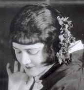
New production
Iris {13}
Metropolitan Opera House; 03/6/1931
Debut: Josef Levinoff |
[Met Performance] CID:107770
Die Meistersinger von Nürnberg {192}
Metropolitan Opera House; 03/7/1931
|
[Met Performance] CID:107780
Roméo et Juliette {161}
Metropolitan Opera House; 03/7/1931
|
[Met Performance] CID:107790
Il Barbiere di Siviglia {149}
Brooklyn Academy of Music, New York, Brooklyn; 03/7/1931
|
[Met Concert/Gala] CID:107800
Gala Concert
Metropolitan Opera House; 03/8/1931
|
[Met Performance] CID:107810
L'Africaine {62}
Metropolitan Opera House; 03/9/1931
|
[Met Performance] CID:107820
Tristan und Isolde {198}
American Academy of Music, Philadelphia, Pennsylvania; 03/10/1931
|
[Met Performance] CID:107830
Manon {96}
Metropolitan Opera House; 03/11/1931
|
[Met Performance] CID:107840
Götterdämmerung {110}
Ring Cycle [52] Uncut
Metropolitan Opera House; 03/12/1931
|
[Met Performance] CID:107850
Peter Ibbetson {5}
Metropolitan Opera House; 03/12/1931
|
[Met Performance] CID:107860
Die Walküre {251}
Metropolitan Opera House; 03/13/1931
|
[Met Performance] CID:107870
Cavalleria Rusticana {282}
Pagliacci {298}
Metropolitan Opera House; 03/14/1931
|
[Met Performance] CID:107880
Sadko {15}
Metropolitan Opera House; 03/14/1931
|
[Met Concert/Gala] CID:107890
Special Concert
Metropolitan Opera House; 03/15/1931
|
[Met Performance] CID:107900
Iris {14}
Metropolitan Opera House; 03/16/1931
|
[Met Performance] CID:107910
Pelléas et Mélisande {21}
American Academy of Music, Philadelphia, Pennsylvania; 03/17/1931
|
[Met Performance] CID:107920
Götterdämmerung {111}
Metropolitan Opera House; 03/18/1931
|
[Met Performance] CID:107930
Madama Butterfly {218}
Metropolitan Opera House; 03/19/1931
|
[Met Performance] CID:107940
Tristan und Isolde {199}
Metropolitan Opera House; 03/20/1931
|
[Met Performance] CID:107950
Roméo et Juliette {162}
Metropolitan Opera House; 03/20/1931
Debut: Georges Thill |
[Met Performance] CID:107960
Guillaume Tell [William Tell] {27}
Metropolitan Opera House; 03/21/1931
Debut: Molly Landow, Jack Quinn
Reviews |
[Met Performance] CID:107970
La Gioconda {120}
Metropolitan Opera House; 03/21/1931
|
[Met Concert/Gala] CID:107980
Special Concert - All Russian Music
Metropolitan Opera House; 03/22/1931
|
[Met Performance] CID:107990
La Bohème {281}
Metropolitan Opera House; 03/23/1931
|
[Met Performance] CID:108000
Peter Ibbetson {6}
Brooklyn Academy of Music, New York, Brooklyn; 03/24/1931
|
[Met Performance] CID:108010
Manon {97}
American Academy of Music, Philadelphia, Pennsylvania; 03/24/1931
|
[Met Performance] CID:108020
Faust {385}
Metropolitan Opera House; 03/25/1931
Reviews |
[Met Performance] CID:108030
Die Walküre {252}
Metropolitan Opera House; 03/26/1931
|
[Met Performance] CID:108040
Lohengrin {381}
Metropolitan Opera House; 03/27/1931
|
[Met Performance] CID:108050
La Bohème {282}
Metropolitan Opera House; 03/27/1931
|
[Met Performance] CID:108060
Iris {15}
Metropolitan Opera House; 03/28/1931
|
[Met Performance] CID:108070
Tristan und Isolde {200}
Metropolitan Opera House; 03/28/1931
|
[Met Concert/Gala] CID:108080
Special Concert
Metropolitan Opera House; 03/29/1931
|
[Met Performance] CID:108090
Roméo et Juliette {163}
Metropolitan Opera House; 03/30/1931
|
[Met Performance] CID:108100
Parsifal {120}
American Academy of Music, Philadelphia, Pennsylvania; 03/31/1931
|
[Met Performance] CID:108110
Lucia di Lammermoor {150}
American Academy of Music, Philadelphia, Pennsylvania; 03/31/1931
|
[Met Performance] CID:108120
Peter Ibbetson {7}
Metropolitan Opera House; 04/1/1931
|
[Met Performance] CID:108130
Rigoletto {183}
Metropolitan Opera House; 04/2/1931
|
[Met Performance] CID:108140
Parsifal {121}
Metropolitan Opera House; 04/3/1931
|
[Met Performance] CID:108150
Aida {363}
Metropolitan Opera House; 04/3/1931
|
[Met Performance] CID:108160
Pelléas et Mélisande {22}
Metropolitan Opera House; 04/4/1931
|
[Met Performance] CID:108170
Guillaume Tell [William Tell] {28}
Metropolitan Opera House; 04/4/1931
|
[Met Concert/Gala] CID:108180
Gala Concert
Metropolitan Opera House; 04/5/1931
|
[Met Performance] CID:108190
Boccaccio {10}
Metropolitan Opera House; 04/6/1931
|
[Met Performance] CID:108200
Mignon {53}
Metropolitan Opera House; 04/6/1931
|
[Met Performance] CID:108210
Guillaume Tell [William Tell] {29}
American Academy of Music, Philadelphia, Pennsylvania; 04/7/1931
|
[Met Performance] CID:108220
Die Meistersinger von Nürnberg {193}
Metropolitan Opera House; 04/8/1931
|
[Met Performance] CID:108230
Iris {16}
Metropolitan Opera House; 04/9/1931
|
[Met Performance] CID:108240
Lucia di Lammermoor {151}
Metropolitan Opera House; 04/10/1931
|
[Met Performance] CID:108250
Siegfried {154}
Metropolitan Opera House; 04/10/1931
|
[Met Performance] CID:108260
Faust {386}
Metropolitan Opera House; 04/11/1931
|
[Met Performance] CID:108270
Peter Ibbetson {8}
Metropolitan Opera House; 04/11/1931
|
[Met Concert/Gala] CID:108280
Gala Concert
Metropolitan Opera House; 04/12/1931
|
[Met Performance] CID:108290
Mignon {54}
Baltimore, Maryland; 04/13/1931
|
[Met Performance] CID:108300
Tosca {227}
Washington, D.C.; 04/14/1931
|
[Met Performance] CID:108310
Mignon {55}
Washington, D.C.; 04/15/1931
|
[Met Performance] CID:108320
Tosca {228}
Baltimore, Maryland; 04/15/1931
|
[Met Performance] CID:108330
Peter Ibbetson {9}
Washington, D.C.; 04/16/1931
|
[Met Performance] CID:108340
Lucia di Lammermoor {152}
Baltimore, Maryland; 04/17/1931
|
[Met Performance] CID:108350
La Traviata {175}
Baltimore, Maryland; 04/18/1931
|
[Met Performance] CID:108360
La Traviata {176}
County Center, White Plains, New York; 04/20/1931
|
[Met Performance] CID:108370
Lucia di Lammermoor {153}
County Center, White Plains, New York; 04/25/1931
|
[Met Performance] CID:108380
La Traviata {177}
Cleveland, Ohio; 04/27/1931
|
[Met Performance] CID:108390
Tosca {229}
Cleveland, Ohio; 04/28/1931
|
[Met Performance] CID:108400
Mignon {56}
Cleveland, Ohio; 04/29/1931
|
[Met Performance] CID:108410
Carmen {324}
Cleveland, Ohio; 04/30/1931
|
[Met Performance] CID:108420
Rigoletto {184}
Cleveland, Ohio; 05/1/1931
|
[Met Performance] CID:108430
Norma {33}
Cleveland, Ohio; 05/1/1931
|
[Met Performance] CID:108440
Peter Ibbetson {10}
Cleveland, Ohio; 05/2/1931
|
[Met Performance] CID:108450
Lucia di Lammermoor {154}
Cleveland, Ohio; 05/2/1931
|
[Met Performance] CID:108460
La Traviata {178}
Eastman Theatre, Rochester, New York; 5/4/1931
|
[Met Performance] CID:109000
La Traviata {179}
Metropolitan Opera House; 11/2/1931
Opening Night {47}
Giulio Gatti-Casazza, General Manager |
[Met Performance] CID:109020
Manon {98}
American Academy of Music, Philadelphia, Pennsylvania; 11/3/1931
|
[Met Performance] CID:109010
Hänsel und Gretel {123}
Pagliacci {299}
Brooklyn Academy of Music, New York, Brooklyn; 11/3/1931
Debut: Hanns Niedecken-Gebhard |
[Met Performance] CID:109030
Tannhäuser {260}
Metropolitan Opera House; 11/4/1931
|
[Met Performance] CID:109040
La Bohème {283}
Metropolitan Opera House; 11/5/1931
|
[Met Performance] CID:109050
L'Elisir d'Amore {49}
Metropolitan Opera House; 11/6/1931
Debut: Alexander Sanine |
[Met Performance] CID:109060
United States Premiere
Schwanda, the Bagpiper {1}
Metropolitan Opera House; 11/7/1931
Review |
[Met Performance] CID:109070
Faust {387}
Metropolitan Opera House; 11/7/1931
|
[Met Concert/Gala] CID:109080
Gala Opening Concert
Metropolitan Opera House; 11/8/1931
|
[Met Performance] CID:109090
La Fanciulla del West {39}
Metropolitan Opera House; 11/9/1931
|
[Met Performance] CID:109100
Schwanda, the Bagpiper {2}
American Academy of Music, Philadelphia, Pennsylvania; 11/10/1931
|
[Met Performance] CID:109110
Manon {99}
Metropolitan Opera House; 11/11/1931
|
[Met Performance] CID:109120
Die Meistersinger von Nürnberg {194}
Metropolitan Opera House; 11/12/1931
Debut: Max Lorenz, Marie Von Essen |
[Met Performance] CID:109130
Tosca {230}
Metropolitan Opera House; 11/13/1931
|
[Met Performance] CID:109140
Madama Butterfly {219}
Westchester County Center, White Plains, New York; 11/13/1931
|
[Met Performance] CID:109150
La Forza del Destino {40}
Metropolitan Opera House; 11/14/1931
|
[Met Performance] CID:109160
Die Walküre {253}
Metropolitan Opera House; 11/14/1931
Debut: Carlton Gauld |
[Met Concert/Gala] CID:109170
Grand Operatic Concert
Metropolitan Opera House; 11/15/1931
|
[Met Performance] CID:109180
Schwanda, the Bagpiper {3}
Metropolitan Opera House; 11/16/1931
|
[Met Performance] CID:109190
La Gioconda {121}
Brooklyn Academy of Music, New York, Brooklyn; 11/17/1931
|
[Met Performance] CID:109200
Tosca {231}
American Academy of Music, Philadelphia, Pennsylvania; 11/17/1931
|
[Met Performance] CID:109210
Guillaume Tell [William Tell] {30}
Metropolitan Opera House; 11/18/1931
|
[Met Performance] CID:109220
Don Giovanni {84}
Metropolitan Opera House; 11/19/1931
Review |
[Met Performance] CID:109230
Tristan und Isolde {201}
Metropolitan Opera House; 11/20/1931
|
[Met Performance] CID:109240
Hänsel und Gretel {124}
Pagliacci {300}
Metropolitan Opera House; 11/21/1931
|
[Met Performance] CID:109250
Carmen {325}
Metropolitan Opera House; 11/21/1931
|
[Met Concert/Gala] CID:109260
Gala Concert
Metropolitan Opera House; 11/22/1931
|
[Met Performance] CID:109270
L'Oracolo {50}
Cavalleria Rusticana {283}
Metropolitan Opera House; 11/23/1931
Debut: Lyova Rosenthal |
[Met Performance] CID:109280
La Traviata {180}
Horace Bushnell Memorial Hall, Hartford, Connecticut; 11/24/1931
|
[Met Performance] CID:109290
Die Walküre {254}
American Academy of Music, Philadelphia, Pennsylvania; 11/24/1931
|
[Met Performance] CID:109300
La Bohème {284}
Metropolitan Opera House; 11/25/1931
|
[Met Performance] CID:109310
Aida {364}
Metropolitan Opera House; 11/26/1931
|
[Met Performance] CID:109320
Tannhäuser {261}
Metropolitan Opera House; 11/26/1931
|
[Met Performance] CID:109330
Madama Butterfly {220}
Metropolitan Opera House; 11/27/1931
|
[Met Performance] CID:109340
L'Elisir d'Amore {50}
Metropolitan Opera House; 11/28/1931
|
[Met Performance] CID:109350
La Forza del Destino {41}
Metropolitan Opera House; 11/28/1931
|
[Met Concert/Gala] CID:109360
Verdi - Puccini Concert
Metropolitan Opera House; 11/29/1931
|
[Met Performance] CID:109370
Die Meistersinger von Nürnberg {195}
Metropolitan Opera House; 11/30/1931
|
[Met Performance] CID:109380
La Traviata {181}
American Academy of Music, Philadelphia, Pennsylvania; 12/1/1931
|
[Met Performance] CID:109390
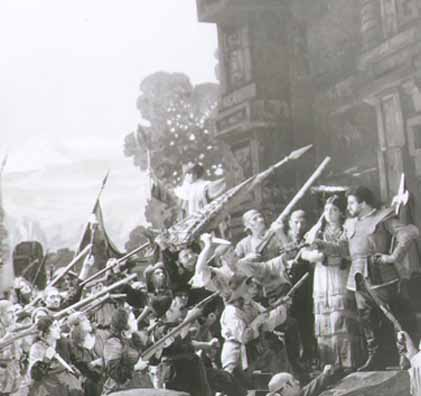
United States Premiere (La Notte di Zoraima)
La Notte di Zoraima {1}
Pagliacci {301}
Metropolitan Opera House; 12/2/1931
Review |
[Met Performance] CID:109400
La Fanciulla del West {40}
Metropolitan Opera House; 12/3/1931
|
[Met Performance] CID:109410
Mignon {57}
Metropolitan Opera House; 12/4/1931
|
[Met Performance] CID:109420
Schwanda, the Bagpiper {4}
Metropolitan Opera House; 12/4/1931
|
[Met Performance] CID:109430
Guillaume Tell [William Tell] {31}
Metropolitan Opera House; 12/5/1931
|
[Met Performance] CID:109440
La Traviata {182}
Metropolitan Opera House; 12/5/1931
|
[Met Performance] CID:109450
Tosca {232}
Brooklyn Academy of Music, New York, Brooklyn; 12/5/1931
|
[Met Concert/Gala] CID:109460
Grand Gala Concert
Metropolitan Opera House; 12/6/1931
|
[Met Performance] CID:109470
Manon {100}
Metropolitan Opera House; 12/7/1931
|
[Met Performance] CID:109480
L'Oracolo {51}
Pagliacci {302}
American Academy of Music, Philadelphia, Pennsylvania; 12/8/1931
|
[Met Performance] CID:109490
Der Fliegende Holländer {34}
Metropolitan Opera House; 12/9/1931
|
[Met Performance] CID:109500
L'Oracolo {52}
La Notte di Zoraima {2}
Metropolitan Opera House; 12/10/1931
|
[Met Performance] CID:109510
Aida {365}
Metropolitan Opera House; 12/10/1931
|
[Met Performance] CID:109520
Carmen {326}
Metropolitan Opera House; 12/11/1931
|
[Met Performance] CID:109530
Die Meistersinger von Nürnberg {196}
Metropolitan Opera House; 12/12/1931
|
[Met Performance] CID:109540
L'Africaine {63}
Metropolitan Opera House; 12/12/1931
|
[Met Concert/Gala] CID:109550
Gala Concert /
Cavalleria Rusticana {284}
Metropolitan Opera House; 12/13/1931
|
[Met Performance] CID:109560
La Notte di Zoraima {3}
Pagliacci {303}
Metropolitan Opera House; 12/14/1931
|
[Met Performance] CID:109570
Der Fliegende Holländer {35}
American Academy of Music, Philadelphia, Pennsylvania; 12/15/1931
|
[Met Performance] CID:109580
Mignon {58}
Metropolitan Opera House; 12/16/1931
|
[Met Performance] CID:109590
Schwanda, the Bagpiper {5}
Metropolitan Opera House; 12/17/1931
|
[Met Performance] CID:109600
Don Giovanni {85}
Metropolitan Opera House; 12/18/1931
|
[Met Performance] CID:109610
Tosca {233}
Metropolitan Opera House; 12/19/1931
|
[Met Performance] CID:109620
Aida {366}
Metropolitan Opera House; 12/19/1931
|
[Met Concert/Gala] CID:109630
Russian-Italian Concert
Metropolitan Opera House; 12/20/1931
|
[Met Performance] CID:109640
Lohengrin {382}
Metropolitan Opera House; 12/21/1931
|
[Met Performance] CID:109650
Schwanda, the Bagpiper {6}
Brooklyn Academy of Music, New York, Brooklyn; 12/22/1931
|
[Met Performance] CID:109660
Madama Butterfly {221}
Metropolitan Opera House; 12/23/1931
|
[Met Performance] CID:109670
Manon {101}
Metropolitan Opera House; 12/24/1931
|
[Met Performance] CID:109680
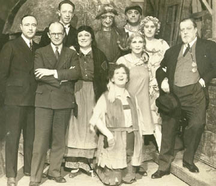
Hänsel und Gretel {125}
Pagliacci {304}
Metropolitan Opera House; 12/25/1931
Broadcast
The broadcast of Hänsel und Gretel inaugurated the matinee series that continues to this day. Pagliacci was not broadcast.
Review |
[Met Performance] CID:109690
Tannhäuser {262}
Metropolitan Opera House; 12/25/1931
|
[Met Performance] CID:109700
Norma {34}
Metropolitan Opera House; 12/26/1931
Broadcast (Acts III, IV)
Reviews |
[Met Performance] CID:109710
La Gioconda {122}
Metropolitan Opera House; 12/26/1931
|
[Met Concert/Gala] CID:109720
Verdi-Wagner Concert
Metropolitan Opera House; 12/27/1931
|
[Met Performance] CID:109730
L'Africaine {64}
Metropolitan Opera House; 12/28/1931
|
[Met Performance] CID:109740
La Traviata {183}
Brooklyn Academy of Music, New York, Brooklyn; 12/29/1931
|
[Met Performance] CID:109750
Schwanda, the Bagpiper {7}
Metropolitan Opera House; 12/30/1931
|
[Met Performance] CID:109760
La Notte di Zoraima {4}
Pagliacci {305}
Metropolitan Opera House; 12/31/1931
|
[Met Performance] CID:109770
La Bohème {285}
Metropolitan Opera House; 01/1/1932
Broadcast (Acts I, II) |
[Met Performance] CID:109780
Aida {367}
Metropolitan Opera House; 01/1/1932
|
[Met Performance] CID:109790
Metropolitan Opera Premiere
Donna Juanita {1}
Metropolitan Opera House; 01/2/1932
Review |
[Met Performance] CID:109800
L'Oracolo {53}
Cavalleria Rusticana {285}
Metropolitan Opera House; 01/2/1932
|
[Met Concert/Gala] CID:109810
Gala Concert
Metropolitan Opera House; 01/3/1932
|
[Met Performance] CID:109820
Lucia di Lammermoor {155}
Metropolitan Opera House; 01/4/1932
|
[Met Performance] CID:109830
Donna Juanita {2}
American Academy of Music, Philadelphia, Pennsylvania; 01/5/1932
|
[Met Performance] CID:109840
La Forza del Destino {42}
Metropolitan Opera House; 01/6/1932
|
[Met Performance] CID:109850
Der Fliegende Holländer {36}
Metropolitan Opera House; 01/7/1932
|
[Met Performance] CID:109860
La Gioconda {123}
Metropolitan Opera House; 01/8/1932
|
[Met Performance] CID:109870
Lohengrin {383}
Metropolitan Opera House; 01/9/1932
Broadcast (Act III) |
[Met Performance] CID:109880
Mignon {59}
Metropolitan Opera House; 01/9/1932
|
[Met Concert/Gala] CID:109890
Grand Gala Concert
Metropolitan Opera House; 01/10/1932
|
[Met Performance] CID:109900
Donna Juanita {3}
Metropolitan Opera House; 01/11/1932
|
[Met Performance] CID:109910
Hänsel und Gretel {126}
La Notte di Zoraima {5}
American Academy of Music, Philadelphia, Pennsylvania; 01/12/1932
|
[Met Performance] CID:109920
Lucia di Lammermoor {156}
Metropolitan Opera House; 01/13/1932
|
[Met Performance] CID:109930
La Traviata {184}
Metropolitan Opera House; 01/14/1932
|
[Met Performance] CID:109940
Rigoletto {185}
Metropolitan Opera House; 01/15/1932
|
[Met Performance] CID:109950
Siegfried {155}
Metropolitan Opera House; 01/15/1932
Review |
[Met Performance] CID:109960
Il Trovatore {178}
Metropolitan Opera House; 01/16/1932
Broadcast (Act II, Scene 2; Act III) |
[Met Performance] CID:109970
Carmen {327}
Metropolitan Opera House; 01/16/1932
|
[Met Concert/Gala] CID:109980
Favorite Scenes of Operas
Metropolitan Opera House; 01/17/1932
|
[Met Performance] CID:109990
Peter Ibbetson {11}
Metropolitan Opera House; 01/18/1932
|
[Met Performance] CID:110000
Donna Juanita {4}
Brooklyn Academy of Music, New York, Brooklyn; 01/19/1932
|
[Met Performance] CID:110010
Rigoletto {186}
American Academy of Music, Philadelphia, Pennsylvania; 01/19/1932
Review |
[Met Performance] CID:110020
Die Walküre {255}
Metropolitan Opera House; 01/20/1932
Debut: Göta Ljungberg
Reviews |
[Met Performance] CID:110030
Donna Juanita {5}
Metropolitan Opera House; 01/21/1932
|
[Met Performance] CID:110040
Faust {388}
Metropolitan Opera House; 01/21/1932
|
[Met Performance] CID:110050
La Forza del Destino {43}
Metropolitan Opera House; 01/22/1932
Debut: Armando Borgioli |
[Met Performance] CID:110060
Il Barbiere di Siviglia {150}
Metropolitan Opera House; 01/23/1932
Broadcast (Acts II, III) |
[Met Performance] CID:110070
Lohengrin {384}
Metropolitan Opera House; 01/23/1932
|
[Met Concert/Gala] CID:110080
Viennese Music - Operatic Excerpts
Metropolitan Opera House; 01/24/1932
|
[Met Performance] CID:110090
Norma {35}
Metropolitan Opera House; 01/25/1932
|
[Met Performance] CID:110100
Tristan und Isolde {202}
American Academy of Music, Philadelphia, Pennsylvania; 01/26/1932
|
[Met Performance] CID:110110
Cavalleria Rusticana {286}
L'Oracolo {54}
Metropolitan Opera House; 01/27/1932
Debut: Rina Desana |
[Met Performance] CID:110120
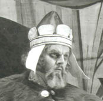
United States Premiere
Simon Boccanegra {1}
Metropolitan Opera House; 01/28/1932
Debut: Camillo Parravicini
Review |
[Met Performance] CID:110130
Peter Ibbetson {12}
Metropolitan Opera House; 01/29/1932
|
[Met Performance] CID:110140
Donna Juanita {6}
Metropolitan Opera House; 01/29/1932
|
[Met Performance] CID:110150
Die Walküre {256}
Metropolitan Opera House; 01/30/1932
Broadcast (Act II) |
[Met Performance] CID:110160
Rigoletto {187}
Metropolitan Opera House; 01/30/1932
|
[Met Concert/Gala] CID:110170
Gala Concert
Metropolitan Opera House; 01/31/1932
|
[Met Performance] CID:110180
La Gioconda {124}
Metropolitan Opera House; 02/1/1932
|
[Met Performance] CID:110190
Mignon {60}
Horace Bushnell Memorial Hall, Hartford, Connecticut; 02/2/1932
|
[Met Performance] CID:110200
La Bohème {286}
American Academy of Music, Philadelphia, Pennsylvania; 02/2/1932
|
[Met Performance] CID:110210
Tristan und Isolde {203}
Metropolitan Opera House; 02/3/1932
Debut: Doris Doe
Review |
[Met Performance] CID:110220
Donna Juanita {7}
Metropolitan Opera House; 02/4/1932
|
[Met Performance] CID:110230
Lucia di Lammermoor {157}
Metropolitan Opera House; 02/5/1932
|
[Met Performance] CID:110240
Peter Ibbetson {13}
Metropolitan Opera House; 02/5/1932
|
[Met Performance] CID:110250
Simon Boccanegra {2}
Metropolitan Opera House; 02/6/1932
Broadcast (Act II) |
[Met Performance] CID:110260
Tosca {234}
Metropolitan Opera House; 02/6/1932
|
[Met Concert/Gala] CID:110270
Special Concert
Metropolitan Opera House; 02/7/1932
|
[Met Performance] CID:110280
Il Barbiere di Siviglia {151}
Metropolitan Opera House; 02/8/1932
|
[Met Performance] CID:110290
La Bohème {287}
Brooklyn Academy of Music, New York, Brooklyn; 02/9/1932
|
[Met Performance] CID:110300
Siegfried {156}
American Academy of Music, Philadelphia, Pennsylvania; 02/9/1932
Review |
[Met Performance] CID:110310
Donna Juanita {8}
Metropolitan Opera House; 02/10/1932
|
[Met Performance] CID:110320
Les Contes d'Hoffmann {47}
Metropolitan Opera House; 02/11/1932
|
[Met Performance] CID:110330
Tannhäuser {263}
Metropolitan Opera House; 02/12/1932
Broadcast (Act II)
Review |
[Met Performance] CID:110340
Simon Boccanegra {3}
Metropolitan Opera House; 02/12/1932
|
[Met Performance] CID:110350
Faust {389}
Metropolitan Opera House; 02/13/1932
Broadcast (Acts II, III) |
[Met Performance] CID:110360
Hänsel und Gretel {127}
Pagliacci {306}
Metropolitan Opera House; 02/13/1932
|
[Met Concert/Gala] CID:110370
Gala Concert
Metropolitan Opera House; 02/14/1932
|
[Met Performance] CID:110380
Die Walküre {257}
Metropolitan Opera House; 02/15/1932
|
[Met Performance] CID:110390
Simon Boccanegra {4}
American Academy of Music, Philadelphia, Pennsylvania; 02/16/1932
Review |
[Met Performance] CID:110400
Peter Ibbetson {14}
Metropolitan Opera House; 02/17/1932
|
[Met Performance] CID:110410
Tristan und Isolde {204}
Metropolitan Opera House; 02/18/1932
Broadcast (Act II)
Review |
[Met Performance] CID:110420
Il Trovatore {179}
Metropolitan Opera House; 02/18/1932
|
[Met Performance] CID:110430
New production
Lakmé {12}
Metropolitan Opera House; 02/19/1932
Review |
[Met Performance] CID:110440
La Traviata {185}
Metropolitan Opera House; 02/20/1932
Broadcast (Acts III, IV) |
[Met Performance] CID:110450
Tannhäuser {264}
Metropolitan Opera House; 02/20/1932
Debut: Beatrice Covell |
[Met Concert/Gala] CID:110460
Special Concert
Metropolitan Opera House; 02/21/1932
|
[Met Performance] CID:110470
La Juive {59}
Metropolitan Opera House; 02/22/1932
|
[Met Performance] CID:110480
Les Contes d'Hoffmann {48}
Metropolitan Opera House; 02/22/1932
|
[Met Performance] CID:110490
Tannhäuser {265}
American Academy of Music, Philadelphia, Pennsylvania; 02/23/1932
Debut: Helen Sumholz |
[Met Performance] CID:110500
Simon Boccanegra {5}
Metropolitan Opera House; 02/24/1932
|
[Met Performance] CID:110510
Peter Ibbetson {15}
Metropolitan Opera House; 02/25/1932
|
[Met Performance] CID:110520
Das Rheingold {69}
Ring Cycle [53] Uncut
Metropolitan Opera House; 02/26/1932
Debut: Arthur Anderson
Broadcast |
[Met Performance] CID:110530
Roméo et Juliette {164}
Metropolitan Opera House; 02/26/1932
|
[Met Performance] CID:110540
Lakmé {13}
Metropolitan Opera House; 02/27/1932
Broadcast (Acts II, III) |
[Met Performance] CID:110550
Il Trovatore {180}
Metropolitan Opera House; 02/27/1932
|
[Met Performance] CID:110560
Die Walküre {258}
Brooklyn Academy of Music, New York, Brooklyn; 02/27/1932
|
[Met Concert/Gala] CID:110570
Special Sunday Night Concert
Metropolitan Opera House; 02/28/1932
|
[Met Performance] CID:110580
Simon Boccanegra {6}
Metropolitan Opera House; 02/29/1932
|
[Met Performance] CID:110590
Peter Ibbetson {16}
American Academy of Music, Philadelphia, Pennsylvania; 03/1/1932
|
[Met Performance] CID:110600
Aida {368}
Metropolitan Opera House; 03/2/1932
Debut: Francesco Merli |
[Met Performance] CID:110610
Die Walküre {259}
Ring Cycle [53] Uncut
Metropolitan Opera House; 03/3/1932
Broadcast (Act II) |
[Met Performance] CID:110620
Rigoletto {188}
Metropolitan Opera House; 03/3/1932
|
[Met Performance] CID:110630
Sadko {16}
Metropolitan Opera House; 03/4/1932
|
[Met Performance] CID:110640
Manon {102}
Metropolitan Opera House; 03/5/1932
Broadcast (Acts III, IV) |
[Met Performance] CID:110650
Tristan und Isolde {205}
Metropolitan Opera House; 03/5/1932
|
[Met Concert/Gala] CID:110660
Grand Operatic Surprise Party
Metropolitan Opera House; 03/6/1932
|
[Met Performance] CID:110670
Mignon {61}
Metropolitan Opera House; 03/7/1932
|
[Met Performance] CID:110680
Aida {369}
American Academy of Music, Philadelphia, Pennsylvania; 03/8/1932
|
[Met Performance] CID:110690
Lohengrin {385}
Metropolitan Opera House; 03/9/1932
|
[Met Performance] CID:110700
Pelléas et Mélisande {23}
Metropolitan Opera House; 03/10/1932
|
[Met Performance] CID:110710
Siegfried {157}
Ring Cycle [53] Uncut
Metropolitan Opera House; 03/11/1932
Broadcast (Act II)
Review |
[Met Performance] CID:110720
Lucia di Lammermoor {158}
Metropolitan Opera House; 03/11/1932
Debut: Pietro Cimara |
[Met Performance] CID:110730
Sadko {17}
Metropolitan Opera House; 03/12/1932
Broadcast (Act II) |
[Met Performance] CID:110740
La Bohème {288}
Metropolitan Opera House; 03/12/1932
|
[Met Performance] CID:110750
L'Africaine {65}
Brooklyn Academy of Music, New York, Brooklyn; 03/12/1932
|
[Met Concert/Gala] CID:110760
Special Program
Metropolitan Opera House; 03/13/1932
|
[Met Performance] CID:110770
Tristan und Isolde {206}
Metropolitan Opera House; 03/14/1932
|
[Met Performance] CID:110780
Sadko {18}
American Academy of Music, Philadelphia, Pennsylvania; 03/15/1932
|
[Met Performance] CID:110790
New production
La Sonnambula {21}
Metropolitan Opera House; 03/16/1932
Review |
[Met Performance] CID:110800
Götterdämmerung {112}
Ring Cycle [53] Uncut
Metropolitan Opera House; 03/17/1932
Broadcast (Act I, Scene 2, Act II) |
[Met Performance] CID:110810
Roméo et Juliette {165}
Metropolitan Opera House; 03/17/1932
|
[Met Performance] CID:110820
Lohengrin {386}
Metropolitan Opera House; 03/18/1932
|
[Met Performance] CID:110830
L'Africaine {66}
Metropolitan Opera House; 03/19/1932
Broadcast (Acts IV, V) |
[Met Performance] CID:110840
Les Contes d'Hoffmann {49}
Metropolitan Opera House; 03/19/1932
|
[Met Concert/Gala] CID:110850
Favorite Scenes of Operas
Metropolitan Opera House; 03/20/1932
|
[Met Performance] CID:110860
Aida {370}
Metropolitan Opera House; 03/21/1932
|
[Met Performance] CID:110870
Parsifal {122}
Metropolitan Opera House; 03/22/1932
|
[Met Performance] CID:110880
Il Barbiere di Siviglia {152}
American Academy of Music, Philadelphia, Pennsylvania; 03/22/1932
|
[Met Performance] CID:110890
Pelléas et Mélisande {24}
Metropolitan Opera House; 03/23/1932
|
[Met Performance] CID:110900
La Sonnambula {22}
Metropolitan Opera House; 03/24/1932
|
[Met Performance] CID:110910
Parsifal {123}
Metropolitan Opera House; 03/25/1932
Broadcast (Act II) |
[Met Performance] CID:110920
Il Trovatore {181}
Metropolitan Opera House; 03/25/1932
|
[Met Performance] CID:110930
Peter Ibbetson {17}
Metropolitan Opera House; 03/26/1932
Broadcast (Acts II, III) |
[Met Performance] CID:110940
Manon {103}
Metropolitan Opera House; 03/26/1932
|
[Met Concert/Gala] CID:110950
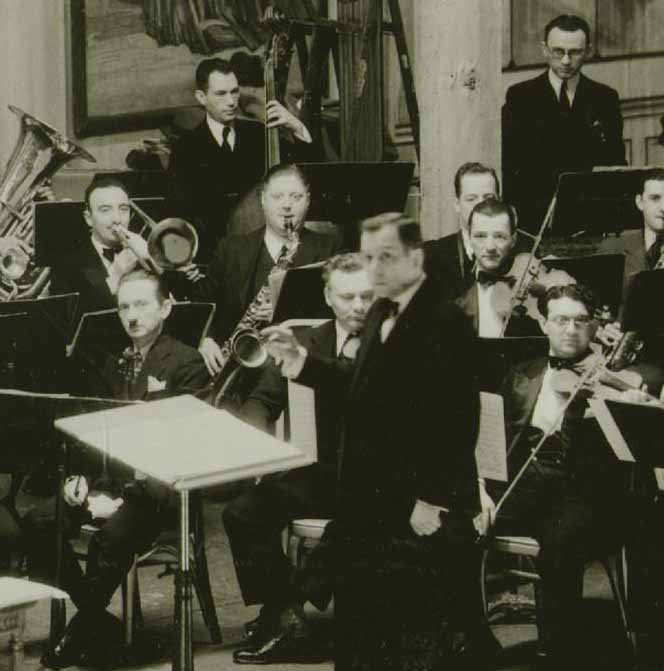
Easter Sunday Concert
Metropolitan Opera House; 03/27/1932
|
[Met Performance] CID:110960
Sadko {19}
Metropolitan Opera House; 03/28/1932
|
[Met Performance] CID:110970
Lucia di Lammermoor {159}
Brooklyn Academy of Music, New York, Brooklyn; 03/29/1932
|
[Met Performance] CID:110980
Roméo et Juliette {166}
American Academy of Music, Philadelphia, Pennsylvania; 03/29/1932
|
[Met Performance] CID:110990
Andrea Chénier {54}
Metropolitan Opera House; 03/30/1932
|
[Met Performance] CID:111000
Tristan und Isolde {207}
Metropolitan Opera House; 03/31/1932
|
[Met Performance] CID:111010
Rigoletto {189}
Metropolitan Opera House; 04/1/1932
|
[Met Performance] CID:111020
La Traviata {186}
Metropolitan Opera House; 04/1/1932
|
[Met Performance] CID:111030
Aida {371}
Metropolitan Opera House; 04/2/1932
Broadcast (Acts III, IV) |
[Met Performance] CID:111040
Götterdämmerung {113}
Metropolitan Opera House; 04/2/1932
|
[Met Concert/Gala] CID:111050
Special Program
Metropolitan Opera House; 04/3/1932
|
[Met Performance] CID:111060
Tannhäuser {266}
Metropolitan Opera House; 04/4/1932
Debut: Lucille Harding |
[Met Performance] CID:111070
Götterdämmerung {114}
American Academy of Music, Philadelphia, Pennsylvania; 04/5/1932
|
[Met Performance] CID:111080
Lakmé {14}
Metropolitan Opera House; 04/6/1932
|
[Met Performance] CID:111090
L'Elisir d'Amore {51}
Metropolitan Opera House; 04/7/1932
|
[Met Performance] CID:111100
Die Walküre {260}
Metropolitan Opera House; 04/8/1932
|
[Met Performance] CID:111110
Les Contes d'Hoffmann {50}
Westchester County Center, White Plains, New York; 04/8/1932
|
[Met Performance] CID:111120
Roméo et Juliette {167}
Metropolitan Opera House; 04/9/1932
Broadcast (Acts II, III) |
[Met Performance] CID:111130
Simon Boccanegra {7}
Metropolitan Opera House; 04/9/1932
|
[Met Concert/Gala] CID:111140
Gala Program
Metropolitan Opera House; 04/10/1932
|
[Met Performance] CID:111150
Lakmé {15}
Metropolitan Opera House; 04/11/1932
|
[Met Performance] CID:111160
L'Africaine {67}
American Academy of Music, Philadelphia, Pennsylvania; 04/12/1932
|
[Met Performance] CID:111170
Les Contes d'Hoffmann {51}
Metropolitan Opera House; 04/13/1932
|
[Met Performance] CID:111180
Siegfried {158}
Metropolitan Opera House; 04/13/1932
|
[Met Performance] CID:111190
Madama Butterfly {222}
Metropolitan Opera House; 04/14/1932
|
[Met Performance] CID:111200
La Sonnambula {23}
Metropolitan Opera House; 04/15/1932
|
[Met Performance] CID:111210
Tannhäuser {267}
Metropolitan Opera House; 04/16/1932
Broadcast (Acts II, III) |
[Met Performance] CID:111220
Sadko {20}
Metropolitan Opera House; 04/16/1932
|
[Met Concert/Gala] CID:111230
Gala Program
Metropolitan Opera House; 04/17/1932
|
[Met Performance] CID:111240
Les Contes d'Hoffmann {52}
Baltimore, Maryland; 04/18/1932
|
[Met Performance] CID:111250
Tannhäuser {268}
Baltimore, Maryland; 04/19/1932
Debut: Beatrice Weinberger |
[Met Performance] CID:111260
L'Africaine {68}
Baltimore, Maryland; 04/20/1932
|
[Met Performance] CID:111270
Lakmé {16}
Cleveland, Ohio; 04/21/1932
|
[Met Performance] CID:111280
Manon {104}
Cleveland, Ohio; 04/22/1932
|
[Met Performance] CID:111290
Les Contes d'Hoffmann {53}
Cleveland, Ohio; 04/23/1932
|
[Met Performance] CID:111300
La Gioconda {125}
Cleveland, Ohio; 04/23/1932
|
[Met Performance] CID:111310
Lucia di Lammermoor {160}
Eastman Theatre, Rochester, New York; 04/25/1932
|
[Met Performance] CID:111320
Rigoletto {190}
Metropolitan Opera House; 04/27/1932
|
[Met Performance] CID:111330
Lakmé {17}
Metropolitan Opera House; 4/30/1932
|
[Met Performance] CID:112000
Simon Boccanegra {8}
Metropolitan Opera House; 11/21/1932
Opening Night {48}
Giulio Gatti-Casazza, General Manager
Review |
[Met Performance] CID:112010
La Gioconda {126}
American Academy of Music, Philadelphia, Pennsylvania; 11/22/1932
Debut: Rose Bampton
Review |
[Met Performance] CID:112020
L'Elisir d'Amore {52}
Metropolitan Opera House; 11/23/1932
Debut: Tito Schipa
Reviews |
[Met Performance] CID:112030
Lakmé {18}
Metropolitan Opera House; 11/24/1932
Broadcast (Act II) |
[Met Performance] CID:112040
Götterdämmerung {115}
Metropolitan Opera House; 11/24/1932
Debuts: Gustaaf De Loor, Ludwig Hofmann |
[Met Performance] CID:112050
Andrea Chénier {55}
Metropolitan Opera House; 11/25/1932
Debut: Helen Gleason |
[Met Performance] CID:112060
Lucia di Lammermoor {161}
Metropolitan Opera House; 11/26/1932
Broadcast (Acts II, III) |
[Met Performance] CID:112070
Tannhäuser {269}
Metropolitan Opera House; 11/26/1932
Debut: Margaret Halstead |
[Met Concert/Gala] CID:112080
Gala Operatic Concert
Metropolitan Opera House; 11/27/1932
|
[Met Performance] CID:112090
La Gioconda {127}
Metropolitan Opera House; 11/28/1932
Reviews |
[Met Performance] CID:112100
Lohengrin {387}
Horace Bushnell Memorial Hall, Hartford, Connecticut; 11/29/1932
|
[Met Performance] CID:112110
Il Barbiere di Siviglia {153}
American Academy of Music, Philadelphia, Pennsylvania; 11/29/1932
Debut: Richard Bonelli |
[Met Performance] CID:112120
Madama Butterfly {223}
Metropolitan Opera House; 11/30/1932
|
[Met Performance] CID:112130
La Traviata {187}
Metropolitan Opera House; 12/1/1932
Reviews |
[Met Performance] CID:112140
Rigoletto {191}
Metropolitan Opera House; 12/2/1932
|
[Met Performance] CID:112150
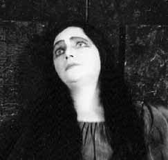
Metropolitan Opera Premiere
Elektra {1}
Metropolitan Opera House; 12/3/1932
Broadcast
Reviews |
[Met Performance] CID:112160
Faust {390}
Metropolitan Opera House; 12/3/1932
|
[Met Concert/Gala] CID:112170
Grand Operatic Concert
Metropolitan Opera House; 12/4/1932
|
[Met Performance] CID:112180
Lucia di Lammermoor {162}
Metropolitan Opera House; 12/5/1932
|
[Met Performance] CID:112190
La Traviata {188}
Brooklyn Academy of Music, New York, Brooklyn; 12/6/1932
|
[Met Performance] CID:112200
Die Walküre {261}
American Academy of Music, Philadelphia, Pennsylvania; 12/6/1932
|
[Met Performance] CID:112210
Lakmé {19}
Metropolitan Opera House; 12/7/1932
|
[Met Performance] CID:112220
La Bohème {289}
Metropolitan Opera House; 12/8/1932
|
[Met Performance] CID:112230
Aida {372}
Metropolitan Opera House; 12/8/1932
|
[Met Performance] CID:112240
United States Premiere
Il Signor Bruschino {1}
Elektra {2}
Metropolitan Opera House; 12/9/1932
|
[Met Performance] CID:112250
Lakmé {20}
Westchester County Center, White Plains, New York; 12/9/1932
|
[Met Performance] CID:112260
Simon Boccanegra {9}
Metropolitan Opera House; 12/10/1932
Broadcast (Acts II, III) |
[Met Performance] CID:112270
Cavalleria Rusticana {287}
Pagliacci {307}
Metropolitan Opera House; 12/10/1932
|
[Met Concert/Gala] CID:112280
Verdi - Wagner Program
Metropolitan Opera House; 12/11/1932
|
[Met Performance] CID:112290
Tannhäuser {270}
Metropolitan Opera House; 12/12/1932
|
[Met Performance] CID:112300
Simon Boccanegra {10}
American Academy of Music, Philadelphia, Pennsylvania; 12/13/1932
|
[Met Performance] CID:112310
Tristan und Isolde {208}
Metropolitan Opera House; 12/14/1932
|
[Met Performance] CID:112320
La Traviata {189}
Metropolitan Opera House; 12/15/1932
|
[Met Performance] CID:112330
L'Elisir d'Amore {53}
Metropolitan Opera House; 12/15/1932
|
[Met Performance] CID:112340
Faust {391}
Metropolitan Opera House; 12/16/1932
|
[Met Performance] CID:112350
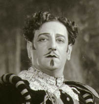
Don Giovanni {86}
Metropolitan Opera House; 12/17/1932
Broadcast
Review |
[Met Performance] CID:112360
Madama Butterfly {224}
Metropolitan Opera House; 12/17/1932
|
[Met Performance] CID:112370
Lohengrin {388}
Brooklyn Academy of Music, New York, Brooklyn; 12/17/1932
|
[Met Concert/Gala] CID:112380
Gala Program
Metropolitan Opera House; 12/18/1932
|
[Met Performance] CID:112390
Il Signor Bruschino {2}
Elektra {3}
Metropolitan Opera House; 12/19/1932
|
[Met Performance] CID:112400
Tannhäuser {271}
American Academy of Music, Philadelphia, Pennsylvania; 12/20/1932
|
[Met Performance] CID:112410
La Gioconda {128}
Metropolitan Opera House; 12/21/1932
Review |
[Met Performance] CID:112420
Faust {392}
Metropolitan Opera House; 12/22/1932
|
[Met Performance] CID:112430
Die Walküre {262}
Metropolitan Opera House; 12/23/1932
|
[Met Performance] CID:112440
La Bohème {290}
Metropolitan Opera House; 12/24/1932
Broadcast |
[Met Performance] CID:112450
La Traviata {190}
Metropolitan Opera House; 12/24/1932
|
[Met Concert/Gala] CID:112460
Gala Holiday Concert
Metropolitan Opera House; 12/25/1932
|
[Met Performance] CID:112470
Hänsel und Gretel {128}
Metropolitan Opera House; 12/26/1932
Broadcast |
[Met Performance] CID:112480
Aida {373}
Metropolitan Opera House; 12/26/1932
|
[Met Performance] CID:112490
La Bohème {291}
Brooklyn Academy of Music, New York, Brooklyn; 12/27/1932
|
[Met Performance] CID:112500
La Traviata {191}
American Academy of Music, Philadelphia, Pennsylvania; 12/27/1932
|
[Met Performance] CID:112510
Il Signor Bruschino {3}
Elektra {4}
Metropolitan Opera House; 12/28/1932
|
[Met Performance] CID:112520
Simon Boccanegra {11}
Metropolitan Opera House; 12/29/1932
|
[Met Performance] CID:112530
Madama Butterfly {225}
Metropolitan Opera House; 12/30/1932
|
[Met Performance] CID:112540
Hänsel und Gretel {129}
Pagliacci {308}
Westchester County Center, White Plains, New York; 12/30/1932
|
[Met Performance] CID:112550
Götterdämmerung {116}
Metropolitan Opera House; 12/31/1932
Broadcast (Acts I, II) |
[Met Performance] CID:112560
Il Trovatore {182}
Metropolitan Opera House; 12/31/1932
|
[Met Concert/Gala] CID:112570
Gala New Year's Concert
Metropolitan Opera House; 01/1/1933
|
[Met Performance] CID:112580
Mignon {62}
Metropolitan Opera House; 01/2/1933
|
[Met Performance] CID:112590
Don Giovanni {87}
Metropolitan Opera House; 01/2/1933
|
[Met Performance] CID:112600
Aida {374}
American Academy of Music, Philadelphia, Pennsylvania; 01/3/1933
|
[Met Performance] CID:112610
La Bohème {292}
Metropolitan Opera House; 01/4/1933
|
[Met Performance] CID:112620
Tristan und Isolde {209}
Metropolitan Opera House; 01/5/1933
|
[Met Performance] CID:112630
L'Elisir d'Amore {54}
Metropolitan Opera House; 01/6/1933
|
[Met Performance] CID:112640
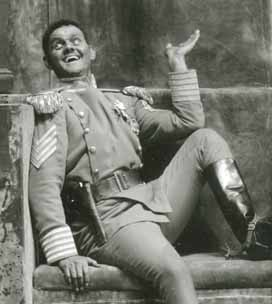
World Premiere (The Emperor Jones)
The Emperor Jones {1}
Pagliacci {309}
Metropolitan Opera House; 01/7/1933
Debuts: Hemsley Winfield, Jo Mielziner
Broadcast
Review |
[Met Performance] CID:112650
Die Walküre {263}
Metropolitan Opera House; 01/7/1933
|
[Met Concert/Gala] CID:112660
Grand Operatic Program
Metropolitan Opera House; 01/8/1933
|
[Met Performance] CID:112670
Roméo et Juliette {168}
Metropolitan Opera House; 01/9/1933
|
[Met Performance] CID:112680
The Emperor Jones {2}
Pagliacci {310}
American Academy of Music, Philadelphia, Pennsylvania; 01/10/1933
|
[Met Performance] CID:112690
Il Trovatore {183}
Metropolitan Opera House; 01/11/1933
|
[Met Performance] CID:112700
Il Signor Bruschino {4}
Elektra {5}
Metropolitan Opera House; 01/12/1933
|
[Met Performance] CID:112710
Pagliacci {311}
The Emperor Jones {3}
Metropolitan Opera House; 01/13/1933
|
[Met Performance] CID:112720
Lohengrin {389}
Metropolitan Opera House; 01/14/1933
Broadcast (Acts II, III) |
[Met Performance] CID:112730
Aida {375}
Metropolitan Opera House; 01/14/1933
|
[Met Concert/Gala] CID:112740
Gala Concert
Metropolitan Opera House; 01/15/1933
|
[Met Performance] CID:112750
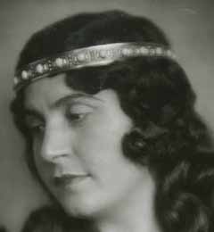
Tristan und Isolde {210}
Metropolitan Opera House; 01/16/1933
Debuts: Frida Leider, Maria Olszewska
Reviews |
[Met Performance] CID:112760
Manon {105}
Brooklyn Academy of Music, New York, Brooklyn; 01/17/1933
|
[Met Performance] CID:112770
Siegfried {159}
American Academy of Music, Philadelphia, Pennsylvania; 01/17/1933
|
[Met Performance] CID:112780
Faust {393}
Metropolitan Opera House; 01/18/1933
|
[Met Performance] CID:112790
Pagliacci {312}
The Emperor Jones {4}
Metropolitan Opera House; 01/19/1933
|
[Met Performance] CID:112800
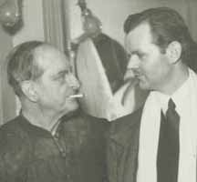
La Bohème {293}
L'Oracolo {55}
Metropolitan Opera House; 01/20/1933
Antonio Scotti Farewell
Review |
[Met Performance] CID:112810
Siegfried {160}
Metropolitan Opera House; 01/20/1933
Review |
[Met Performance] CID:112820
Pelléas et Mélisande {25}
Metropolitan Opera House; 01/21/1933
Broadcast (Acts II, III) |
[Met Performance] CID:112830
Simon Boccanegra {12}
Metropolitan Opera House; 01/21/1933
|
[Met Concert/Gala] CID:112840
Gala Concert
Metropolitan Opera House; 01/22/1933
|
[Met Performance] CID:112850
Rigoletto {192}
Metropolitan Opera House; 01/23/1933
Review |
[Met Performance] CID:112860
Il Signor Bruschino {5}
The Emperor Jones {5}
Brooklyn Academy of Music, New York, Brooklyn; 01/24/1933
|
[Met Performance] CID:112870
La Bohème {294}
American Academy of Music, Philadelphia, Pennsylvania; 01/24/1933
|
[Met Performance] CID:112880
Götterdämmerung {117}
Metropolitan Opera House; 01/25/1933
|
[Met Performance] CID:112890
Manon {106}
Metropolitan Opera House; 01/26/1933
|
[Met Performance] CID:112900
Das Rheingold {70}
Ring Cycle [54] Uncut
Metropolitan Opera House; 01/27/1933
Broadcast (Partial)
Review |
[Met Performance] CID:112910
Aida {376}
Metropolitan Opera House; 01/27/1933
|
[Met Performance] CID:112920
La Traviata {192}
Metropolitan Opera House; 01/28/1933
Broadcast |
[Met Performance] CID:112930
Lakmé {21}
Metropolitan Opera House; 01/28/1933
|
[Met Concert/Gala] CID:112940
Special Concert
Metropolitan Opera House; 01/29/1933
|
[Met Performance] CID:112950
Hänsel und Gretel {130}
The Emperor Jones {6}
Metropolitan Opera House; 01/30/1933
|
[Met Performance] CID:112960
Pelléas et Mélisande {26}
American Academy of Music, Philadelphia, Pennsylvania; 01/31/1933
|
[Met Performance] CID:112970
Andrea Chénier {56}
Metropolitan Opera House; 02/1/1933
|
[Met Performance] CID:112980
Die Walküre {264}
Ring Cycle [54} Uncut
Metropolitan Opera House; 02/2/1933
Broadcast (Partial)
Review |
[Met Performance] CID:112990
Lucia di Lammermoor {163}
Metropolitan Opera House; 02/2/1933
|
[Met Performance] CID:113000
Pagliacci {313}
Elektra {6}
Metropolitan Opera House; 02/3/1933
Review |
[Met Performance] CID:113010
Roméo et Juliette {169}
Metropolitan Opera House; 02/3/1933
|
[Met Performance] CID:113020
The Bartered Bride {36}
Metropolitan Opera House; 02/4/1933
Debut: Hanns Niedecken-Gebhard (Choreographer)
Broadcast
Review |
[Met Performance] CID:113030
Rigoletto {193}
Metropolitan Opera House; 02/4/1933
|
[Met Concert/Gala] CID:113040
Special Concert
Metropolitan Opera House; 02/5/1933
|
[Met Performance] CID:113050
Lohengrin {390}
Metropolitan Opera House; 02/6/1933
|
[Met Performance] CID:113060
Aida {377}
Horace Bushnell Memorial Hall, Hartford, Connecticut; 02/7/1933
|
[Met Performance] CID:113070
Rigoletto {194}
American Academy of Music, Philadelphia, Pennsylvania; 02/7/1933
|
[Met Performance] CID:113080
Pagliacci {314}
The Emperor Jones {7}
Metropolitan Opera House; 02/8/1933
|
[Met Performance] CID:113090
Siegfried {161}
Ring Cycle [54] Uncut
Metropolitan Opera House; 02/9/1933
Broadcast (Partial) |
[Met Performance] CID:113100
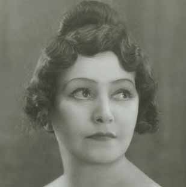
La Bohème {295}
Metropolitan Opera House; 02/9/1933
Debut: Eidé Norena
Review |
[Met Performance] CID:113110
La Traviata {193}
Metropolitan Opera House; 02/10/1933
|
[Met Performance] CID:113120
Lohengrin {391}
Westchester County Center, White Plains, New York; 02/10/1933
|
[Met Performance] CID:113130
La Sonnambula {24}
Metropolitan Opera House; 02/11/1933
Broadcast
Review |
[Met Performance] CID:113140
Hänsel und Gretel {131}
The Emperor Jones {8}
Metropolitan Opera House; 02/11/1933
|
[Met Concert/Gala] CID:113150
Operatic Concert
Metropolitan Opera House; 02/12/1933
|
[Met Performance] CID:113160
Parsifal {124}
Metropolitan Opera House; 02/13/1933
Review |
[Met Performance] CID:113170
Faust {394}
Metropolitan Opera House; 02/13/1933
|
[Met Performance] CID:113180
The Bartered Bride {37}
American Academy of Music, Philadelphia, Pennsylvania; 02/14/1933
|
[Met Performance] CID:113190
Manon {107}
Metropolitan Opera House; 02/15/1933
|
[Met Performance] CID:113200
Lakmé {22}
Metropolitan Opera House; 02/16/1933
|
[Met Performance] CID:113210
Götterdämmerung {118}
Ring Cycle [54] Uncut
Metropolitan Opera House; 02/17/1933
Broadcast (Acts I and II) |
[Met Performance] CID:113220
L'Amore dei Tre Re {54}
Metropolitan Opera House; 02/17/1933
Review |
[Met Performance] CID:113230
Rigoletto {195}
Metropolitan Opera House; 02/18/1933
Broadcast |
[Met Performance] CID:113240
Aida {378}
Metropolitan Opera House; 02/18/1933
|
[Met Concert/Gala] CID:113250
Popular Concert
Metropolitan Opera House; 02/19/1933
|
[Met Performance] CID:113260
The Bartered Bride {38}
Metropolitan Opera House; 02/20/1933
|
[Met Performance] CID:113280
L'Amore dei Tre Re {55}
American Academy of Music, Philadelphia, Pennsylvania; 02/21/1933
|
[Met Performance] CID:113270
Lakmé {23}
Brooklyn Academy of Music, New York, Brooklyn; 02/21/1933
|
[Met Performance] CID:113290
Tannhäuser {272}
Metropolitan Opera House; 02/22/1933
Broadcast |
[Met Performance] CID:113300
Roméo et Juliette {170}
Metropolitan Opera House; 02/22/1933
|
[Met Performance] CID:113310
La Sonnambula {25}
Metropolitan Opera House; 02/23/1933
|
[Met Performance] CID:113320
Lohengrin {392}
Metropolitan Opera House; 02/24/1933
|
[Met Performance] CID:113330
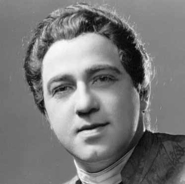
Manon {108}
Metropolitan Opera House; 02/25/1933
Debut: Richard Crooks
Broadcast
Reviews |
[Met Performance] CID:113340
La Bohème {296}
Metropolitan Opera House; 02/25/1933
|
[Met Concert/Gala] CID:113350
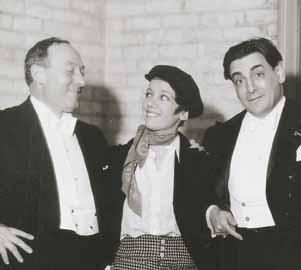
Gatti-Casazza 25th Anniversary
Metropolitan Opera House; 02/26/1933
Broadcast |
[Met Performance] CID:113360
Pelléas et Mélisande {27}
Metropolitan Opera House; 02/27/1933
|
[Met Performance] CID:113370
Tristan und Isolde {211}
American Academy of Music, Philadelphia, Pennsylvania; 02/28/1933
|
[Met Performance] CID:113380
Rigoletto {196}
Metropolitan Opera House; 03/1/1933
|
[Met Performance] CID:113390
Tannhäuser {273}
Metropolitan Opera House; 03/2/1933
|
[Met Performance] CID:113400
Tristan und Isolde {212}
Metropolitan Opera House; 03/3/1933
Broadcast (Acts I, II)
Review |
[Met Performance] CID:113410
Lucia di Lammermoor {164}
Metropolitan Opera House; 03/3/1933
|
[Met Performance] CID:113420
Il Trovatore {184}
Metropolitan Opera House; 03/4/1933
|
[Met Performance] CID:113430
Lohengrin {393}
Metropolitan Opera House; 03/4/1933
|
[Met Concert/Gala] CID:113440
Special Concert
Metropolitan Opera House; 03/5/1933
|
[Met Performance] CID:113450
La Sonnambula {26}
Metropolitan Opera House; 03/6/1933
|
[Met Performance] CID:113460
Manon {109}
American Academy of Music, Philadelphia, Pennsylvania; 03/7/1933
|
[Met Performance] CID:113470
Aida {379}
Metropolitan Opera House; 03/8/1933
|
[Met Performance] CID:113480
Parsifal {125}
Metropolitan Opera House; 03/9/1933
Broadcast (Act II, Scene 2; Act III, Scene 1, 2) |
[Met Performance] CID:113490
L'Amore dei Tre Re {56}
Metropolitan Opera House; 03/9/1933
|
[Met Performance] CID:113500
La Bohème {297}
Metropolitan Opera House; 03/10/1933
|
[Met Performance] CID:113510
Tristan und Isolde {213}
Metropolitan Opera House; 03/11/1933
Broadcast |
[Met Performance] CID:113520
Lucia di Lammermoor {165}
Metropolitan Opera House; 03/11/1933
|
[Met Concert/Gala] CID:113530
Special Concert
Metropolitan Opera House; 03/12/1933
|
[Met Performance] CID:113540
Rigoletto {197}
Baltimore, Maryland; 03/13/1933
|
[Met Performance] CID:113550
Pagliacci {315}
The Emperor Jones {9}
Baltimore, Maryland; 03/14/1933
|
[Met Performance] CID:113560
Tristan und Isolde {214}
Baltimore, Maryland; 03/15/1933
|
[Met Performance] CID:113570
Manon {110}
Metropolitan Opera House; 03/17/1933
|
[Met Performance] CID:113580
The Emperor Jones {10} Lakmé Act II
Metropolitan Opera House; 03/18/1933
|
[Met Performance] CID:113590
Aida {380}
Metropolitan Opera House; 3/24/1933
|
[Met Performance] CID:114000
Lakmé {24}
American Academy of Music, Philadelphia, Pennsylvania; 12/19/1933
|
[Met Performance] CID:114010
Hänsel und Gretel {132}
Metropolitan Opera House; 12/25/1933
Debut: Wilhelm Von Wymetal Jr.
Broadcast |
[Met Performance] CID:114020
Peter Ibbetson {18}
Metropolitan Opera House; 12/26/1933
Opening Night {49}
Giulio Gatti-Casazza, General Manager
Debut: Betty Lou Knight |
[Met Performance] CID:114030
Tannhäuser {274}
Metropolitan Opera House; 12/27/1933
Debut: Emanuel List
Review |
[Met Performance] CID:114040
Rigoletto {198}
Metropolitan Opera House; 12/28/1933
Debut: Nino Martini
Review |
[Met Performance] CID:114050
L'Africaine {69}
Metropolitan Opera House; 12/28/1933
Debut: Virgilio Lazzari
Review |
[Met Performance] CID:114060
Die Walküre {265}
Metropolitan Opera House; 12/29/1933
Debut: Irra Petina
Review |
[Met Performance] CID:114070
Mignon {63}
Metropolitan Opera House; 12/30/1933
Broadcast |
[Met Performance] CID:114080
Aida {381}
Metropolitan Opera House; 12/30/1933
Debut: Lillian Clark |
[Met Concert/Gala] CID:114090
New Year's Eve Concert
Metropolitan Opera House; 12/31/1933
|
[Met Performance] CID:114100
Pagliacci {316}
The Emperor Jones {11}
Metropolitan Opera House; 01/1/1934
Debut: Leonardo Barros
Review |
[Met Performance] CID:114110
La Traviata {194}
Metropolitan Opera House; 01/1/1934
Review |
[Met Performance] CID:114120
Rigoletto {199}
Brooklyn Academy of Music, New York, Brooklyn; 01/2/1934
|
[Met Performance] CID:114130
Die Walküre {266}
American Academy of Music, Philadelphia, Pennsylvania; 01/2/1934
|
[Met Performance] CID:114140
Don Giovanni {88}
Metropolitan Opera House; 01/3/1934
Review |
[Met Performance] CID:114150
Lucia di Lammermoor {166}
Metropolitan Opera House; 01/4/1934
Review |
[Met Performance] CID:114160
Simon Boccanegra {13}
Metropolitan Opera House; 01/5/1934
|
[Met Performance] CID:114170
Tristan und Isolde {215}
Metropolitan Opera House; 01/6/1934
Broadcast
Review |
[Met Performance] CID:114180
La Bohème {298}
Metropolitan Opera House; 01/6/1934
|
[Met Concert/Gala] CID:114190
Grand Program
Metropolitan Opera House; 01/7/1934
|
[Met Performance] CID:114200
Tannhäuser {275}
Metropolitan Opera House; 01/8/1934
|
[Met Performance] CID:114210
Mignon {64}
American Academy of Music, Philadelphia, Pennsylvania; 01/9/1934
|
[Met Performance] CID:114220
Cavalleria Rusticana {288}
The Emperor Jones {12}
Metropolitan Opera House; 01/10/1934
Review |
[Met Performance] CID:114230
Manon {111}
Metropolitan Opera House; 01/11/1934
|
[Met Performance] CID:114240

Die Walküre {267}
Metropolitan Opera House; 01/11/1934
Debut: Lotte Lehmann
Reviews |
[Met Performance] CID:114250
Lucia di Lammermoor {167}
Metropolitan Opera House; 01/12/1934
|
[Met Performance] CID:114260
L'Africaine {70}
Metropolitan Opera House; 01/13/1934
Broadcast |
[Met Performance] CID:114270
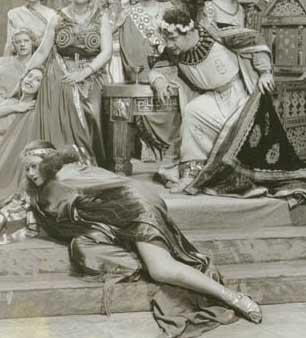
New production
Salome {2}
Metropolitan Opera House; 01/13/1934
Debut: Donald Oenslager
Review |
[Met Concert/Gala] CID:114280
Gala Program
Metropolitan Opera House; 01/14/1934
|
[Met Performance] CID:114290
Madama Butterfly {226}
Metropolitan Opera House; 01/15/1934
Review |
[Met Performance] CID:114300
Tristan und Isolde {216}
Brooklyn Academy of Music, New York, Brooklyn; 01/16/1934
|
[Met Performance] CID:114310
La Traviata {195}
American Academy of Music, Philadelphia, Pennsylvania; 01/16/1934
|
[Met Performance] CID:114320
Peter Ibbetson {19}
Metropolitan Opera House; 01/17/1934
|
[Met Performance] CID:114330
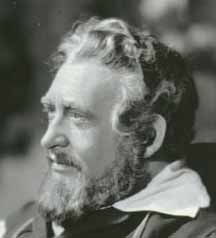
Die Meistersinger von Nürnberg {197}
Metropolitan Opera House; 01/18/1934
Review |
[Met Performance] CID:114340
Aida {382}
Metropolitan Opera House; 01/18/1934
Debuts: Carlo Del Corso, Cyrena Van Gordon
Review |
[Met Performance] CID:114350
Gianni Schicchi {21}
Salome {3}
Metropolitan Opera House; 01/19/1934
Debut: Frank Castino
Review |
[Met Performance] CID:114360
Don Giovanni {89}
Metropolitan Opera House; 01/20/1934
Broadcast |
[Met Performance] CID:114370
Il Trovatore {185}
Metropolitan Opera House; 01/20/1934
|
[Met Concert/Gala] CID:114380
Grand Sunday Night Concert
Metropolitan Opera House; 01/21/1934
|
[Met Performance] CID:114390
Manon {112}
Metropolitan Opera House; 01/22/1934
Review |
[Met Performance] CID:114400
Gianni Schicchi {22}
Salome {4}
American Academy of Music, Philadelphia, Pennsylvania; 01/23/1934
|
[Met Performance] CID:114410
Siegfried {162}
Metropolitan Opera House; 01/24/1934
|
[Met Performance] CID:114420
Simon Boccanegra {14}
Metropolitan Opera House; 01/25/1934
|
[Met Performance] CID:114430
La Bohème {299}
Metropolitan Opera House; 01/26/1934
|
[Met Performance] CID:114440
Die Meistersinger von Nürnberg {198}
Metropolitan Opera House; 01/26/1934
|
[Met Performance] CID:114450
Aida {383}
Metropolitan Opera House; 01/27/1934
Broadcast |
[Met Performance] CID:114460
Tannhäuser {276}
Metropolitan Opera House; 01/27/1934
Review |
[Met Concert/Gala] CID:114470
Gala Concert
Metropolitan Opera House; 01/28/1934
|
[Met Performance] CID:114480
Gianni Schicchi {23}
Salome {5}
Metropolitan Opera House; 01/29/1934
|
[Met Performance] CID:114490
Cavalleria Rusticana {289}
The Emperor Jones {13}
Horace Bushnell Memorial Hall, Hartford, Connecticut; 01/30/1934
|
[Met Performance] CID:114500
Manon {113}
American Academy of Music, Philadelphia, Pennsylvania; 01/30/1934
|
[Met Performance] CID:114510
Faust {395}
Metropolitan Opera House; 01/31/1934
|
[Met Performance] CID:114520
Tristan und Isolde {217}
Metropolitan Opera House; 02/1/1934
|
[Met Performance] CID:114530
La Traviata {196}
Metropolitan Opera House; 02/2/1934
Debut: John Charles Thomas
Review |
[Met Performance] CID:114540
Pagliacci {317}
The Emperor Jones {14}
Metropolitan Opera House; 02/2/1934
|
[Met Performance] CID:114550
Die Walküre {268}
Metropolitan Opera House; 02/3/1934
Broadcast
Review |
[Met Performance] CID:114560
Roméo et Juliette {171}
Metropolitan Opera House; 02/3/1934
Review |
[Met Concert/Gala] CID:114570
Special Program
Metropolitan Opera House; 02/4/1934
|
[Met Performance] CID:114580
Don Giovanni {90}
Metropolitan Opera House; 02/5/1934
|
[Met Performance] CID:114590
Faust {396}
Brooklyn Academy of Music, New York, Brooklyn; 02/6/1934
|
[Met Performance] CID:114600
Tristan und Isolde {218}
American Academy of Music, Philadelphia, Pennsylvania; 02/6/1934
|
[Met Performance] CID:114610
Die Meistersinger von Nürnberg {199}
Metropolitan Opera House; 02/7/1934
|
[Met Performance] CID:114620
La Bohème {300}
Metropolitan Opera House; 02/8/1934
|
[Met Performance] CID:114630
Tannhäuser {277}
Metropolitan Opera House; 02/9/1934
|
[Met Performance] CID:114640
Manon {114}
Metropolitan Opera House; 02/9/1934
|
[Met Performance] CID:114650
World Stage Premiere
Merry Mount {1}
Metropolitan Opera House; 02/10/1934
Debut: Filomena Pangoni
Broadcast
Review |
[Met Performance] CID:114660
Hänsel und Gretel {133}
Pagliacci {318}
Metropolitan Opera House; 02/10/1934
|
[Met Performance] CID:114670
Special Concert /
Cavalleria Rusticana {290}
Metropolitan Opera House; 02/11/1934
|
[Met Performance] CID:114680
La Traviata {197}
Metropolitan Opera House; 02/12/1934
|
[Met Performance] CID:114690
Tristan und Isolde {219}
Metropolitan Opera House; 02/12/1934
Review |
[Met Performance] CID:114700
Merry Mount {2}
American Academy of Music, Philadelphia, Pennsylvania; 02/13/1934
|
[Met Performance] CID:114710
Madama Butterfly {227}
Metropolitan Opera House; 02/14/1934
|
[Met Performance] CID:114720
Gianni Schicchi {24}
Salome {6}
Metropolitan Opera House; 02/15/1934
|
[Met Performance] CID:114730
Das Rheingold {71}
Ring Cycle [55] Uncut
Metropolitan Opera House; 02/16/1934
Review |
[Met Performance] CID:114740
Aida {384}
Metropolitan Opera House; 02/16/1934
|
[Met Performance] CID:114750
Faust {397}
Metropolitan Opera House; 02/17/1934
Broadcast |
[Met Performance] CID:114760
Lohengrin {394}
Metropolitan Opera House; 02/17/1934
|
[Met Concert/Gala] CID:114770
Favorite Scenes of Operas
Metropolitan Opera House; 02/18/1934
|
[Met Performance] CID:114780
Merry Mount {3}
Metropolitan Opera House; 02/19/1934
|
[Met Performance] CID:114790
La Traviata {198}
Brooklyn Academy of Music, New York, Brooklyn; 02/20/1934
|
[Met Performance] CID:114800
Roméo et Juliette {172}
American Academy of Music, Philadelphia, Pennsylvania; 02/20/1934
|
[Met Performance] CID:114810
Gianni Schicchi {25}
Salome {7}
Metropolitan Opera House; 02/21/1934
|
[Met Performance] CID:114820
Die Walküre {269}
Ring Cycle [55] Uncut
Metropolitan Opera House; 02/22/1934
Review |
[Met Performance] CID:114830
Lakmé {25}
Metropolitan Opera House; 02/22/1934
|
[Met Performance] CID:114840
Pelléas et Mélisande {28}
Metropolitan Opera House; 02/23/1934
Review |
[Met Performance] CID:114850
Tannhäuser {278}
Metropolitan Opera House; 02/24/1934
Broadcast |
[Met Performance] CID:114860
L'Africaine {71}
Metropolitan Opera House; 02/24/1934
|
[Met Concert/Gala] CID:114870
All Request Program
Metropolitan Opera House; 02/25/1934
|
[Met Performance] CID:114880
Die Meistersinger von Nürnberg {200}
Metropolitan Opera House; 02/26/1934
|
[Met Performance] CID:114890
La Bohème {301}
American Academy of Music, Philadelphia, Pennsylvania; 02/27/1934
|
[Met Performance] CID:114900
Merry Mount {4}
Metropolitan Opera House; 02/28/1934
|
[Met Performance] CID:114910
Metropolitan Opera Premiere
Linda di Chamounix {1}
Metropolitan Opera House; 03/1/1934
Review |
[Met Performance] CID:114920
La Traviata {199}
Metropolitan Opera House; 03/1/1934
|
[Met Performance] CID:114930
Siegfried {163}
Ring Cycle [55] Uncut
Metropolitan Opera House; 03/2/1934
Reviews |
[Met Performance] CID:114940
La Gioconda {129}
Metropolitan Opera House; 03/2/1934
|
[Met Performance] CID:114950
Lucia di Lammermoor {168}
Metropolitan Opera House; 03/3/1934
Broadcast |
[Met Performance] CID:114960
Faust {398}
Metropolitan Opera House; 03/3/1934
|
[Met Concert/Gala] CID:114970
Special Gala Concert
Metropolitan Opera House; 03/4/1934
|
[Met Performance] CID:114980
Aida {385}
Metropolitan Opera House; 03/5/1934
|
[Met Performance] CID:114990
Merry Mount {5}
Brooklyn Academy of Music, New York, Brooklyn; 03/6/1934
|
[Met Performance] CID:115000
Lucia di Lammermoor {169}
American Academy of Music, Philadelphia, Pennsylvania; 03/6/1934
|
[Met Performance] CID:115010
Tristan und Isolde {220}
Metropolitan Opera House; 03/7/1934
|
[Met Performance] CID:115020
Merry Mount {6}
Metropolitan Opera House; 03/8/1934
|
[Met Performance] CID:115030
Götterdämmerung {119}
Ring Cycle [55] Uncut
Metropolitan Opera House; 03/9/1934
|
[Met Performance] CID:115040
Linda di Chamounix {2}
Metropolitan Opera House; 03/9/1934
|
[Met Performance] CID:115050
Pagliacci {319}
Salome {8}
Metropolitan Opera House; 03/10/1934
Broadcast |
[Met Performance] CID:115060
La Traviata {200}
Metropolitan Opera House; 03/10/1934
|
[Met Concert/Gala] CID:115070
Operatic Surprise Party of 1934
Metropolitan Opera House; 03/11/1934
|
[Met Performance] CID:115080
Lakmé {26}
Metropolitan Opera House; 03/12/1934
|
[Met Performance] CID:115090
Faust {399}
Horace Bushnell Memorial Hall, Hartford, Connecticut; 03/13/1934
|
[Met Performance] CID:115100
Die Meistersinger von Nürnberg {201}
American Academy of Music, Philadelphia, Pennsylvania; 03/13/1934
Review |
[Met Performance] CID:115110
Rigoletto {200}
Metropolitan Opera House; 03/14/1934
Review |
[Met Performance] CID:115120
Die Meistersinger von Nürnberg {202}
Metropolitan Opera House; 03/15/1934
Review |
[Met Performance] CID:115130
Madama Butterfly {228}
Metropolitan Opera House; 03/15/1934
|
[Met Performance] CID:115140
Tristan und Isolde {221}
Metropolitan Opera House; 03/16/1934
Review |
[Met Performance] CID:115150
Peter Ibbetson {20}
Metropolitan Opera House; 03/17/1934
Broadcast |
[Met Performance] CID:115160
Cavalleria Rusticana {291}
Salome {9}
Metropolitan Opera House; 03/17/1934
|
[Met Concert/Gala] CID:115170
Special Concert
Metropolitan Opera House; 03/18/1934
|
[Met Performance] CID:115180
Die Walküre {270}
Metropolitan Opera House; 03/19/1934
|
[Met Performance] CID:115190
Linda di Chamounix {3}
Brooklyn Academy of Music, New York, Brooklyn; 03/20/1934
|
[Met Performance] CID:115200
Madama Butterfly {229}
American Academy of Music, Philadelphia, Pennsylvania; 03/20/1934
Review |
[Met Performance] CID:115210
Pelléas et Mélisande {29}
Metropolitan Opera House; 03/21/1934
|
[Met Performance] CID:115220
Götterdämmerung {120}
Metropolitan Opera House; 03/22/1934
Review |
[Met Performance] CID:115230
Lakmé {27}
Metropolitan Opera House; 03/23/1934
|
[Met Performance] CID:115240
Merry Mount {7}
Metropolitan Opera House; 03/23/1934
|
[Met Performance] CID:115250
Lohengrin {395}
Metropolitan Opera House; 03/24/1934
Broadcast |
[Met Performance] CID:115260
La Gioconda {130}
Metropolitan Opera House; 03/24/1934
|
[Met Concert/Gala] CID:115270
Gala Concert
Metropolitan Opera House; 03/25/1934
|
[Met Performance] CID:115280
Lucia di Lammermoor {170}
Metropolitan Opera House; 03/26/1934
|
[Met Performance] CID:115290
Aida {386}
American Academy of Music, Philadelphia, Pennsylvania; 03/27/1934
|
[Met Performance] CID:115300
Parsifal {126}
Metropolitan Opera House; 03/28/1934
Review |
[Met Performance] CID:115310
Linda di Chamounix {4}
Metropolitan Opera House; 03/29/1934
|
[Met Performance] CID:115320
Parsifal {127}
Metropolitan Opera House; 03/30/1934
|
[Met Performance] CID:115330
Il Trovatore {186}
Metropolitan Opera House; 03/30/1934
|
[Met Performance] CID:115340
Manon {115}
Metropolitan Opera House; 03/31/1934
Broadcast |
[Met Performance] CID:115350
Merry Mount {8}
Metropolitan Opera House; 03/31/1934
|
[Met Concert/Gala] CID:115360
Gala Easter Concert
Metropolitan Opera House; 04/1/1934
|
[Met Performance] CID:115370
Aida {387}
Boston, Massachusetts; 04/2/1934
|
[Met Performance] CID:115380
Manon {116}
Boston, Massachusetts; 04/3/1934
|
[Met Performance] CID:115390
Tannhäuser {279}
Boston, Massachusetts; 04/4/1934
|
[Met Performance] CID:115400
Lucia di Lammermoor {171}
Boston, Massachusetts; 04/4/1934
|
[Met Performance] CID:115410
Pagliacci {320}
The Emperor Jones {15}
Boston, Massachusetts; 04/5/1934
|
[Met Performance] CID:115420
Götterdämmerung {121}
Boston, Massachusetts; 04/6/1934
|
[Met Performance] CID:115430
Pelléas et Mélisande {30}
Boston, Massachusetts; 04/7/1934
Broadcast |
[Met Performance] CID:115440
Rigoletto {201}
Boston, Massachusetts; 04/7/1934
|
[Met Performance] CID:115450
Madama Butterfly {230}
Baltimore, Maryland; 04/9/1934
|
[Met Performance] CID:115460
Gianni Schicchi {26}
Salome {10}
Baltimore, Maryland; 04/10/1934
|
[Met Performance] CID:115470
La Traviata {201}
Baltimore, Maryland; 04/11/1934
|
[Met Performance] CID:115480
Merry Mount {9}
Eastman Theater, Rochester, New York; 04/12/1934
|
[Met Performance] CID:115490
Pagliacci {321}
Cavalleria Rusticana {292}
Lucia di Lammermoor: Mad Scene
Metropolitan Opera House; 4/14/1934
|
[Met Performance] CID:116000
Aida {388}
Metropolitan Opera House; 12/22/1934
Opening Night {50}
Giulio Gatti-Casazza, General Manager
Debuts: Ettore Panizza, Désiré Defrère
Review |
[Met Performance] CID:116010
Hänsel und Gretel {134}
Metropolitan Opera House; 12/25/1934
Broadcast
Review |
[Met Performance] CID:116020
Die Walküre {271}
Metropolitan Opera House; 12/26/1934
Debut: Anny Konetzni |
[Met Performance] CID:116030
Manon {117}
Metropolitan Opera House; 12/27/1934
|
[Met Performance] CID:116040
La Gioconda {131}
Metropolitan Opera House; 12/27/1934
|
[Met Performance] CID:116050
Siegfried {164}
Metropolitan Opera House; 12/28/1934
|
[Met Performance] CID:116060
Lucia di Lammermoor {172}
Metropolitan Opera House; 12/29/1934
Broadcast |
[Met Performance] CID:116070
Faust {400}
Metropolitan Opera House; 12/29/1934
|
[Met Concert/Gala] CID:116080
Special Concert
Metropolitan Opera House; 12/30/1934
|
[Met Performance] CID:116090
La Bohème {302}
Metropolitan Opera House; 12/31/1934
Debut: Dino Borgioli |
[Met Performance] CID:116100
Tannhäuser {280}
Metropolitan Opera House; 01/1/1935
|
[Met Performance] CID:116110
Mignon {65}
Metropolitan Opera House; 01/2/1935
|
[Met Performance] CID:116120
La Forza del Destino {44}
Metropolitan Opera House; 01/3/1935
|
[Met Performance] CID:116130
Der Rosenkavalier {53}
Metropolitan Opera House; 01/4/1935
Reviews |
[Met Performance] CID:116140
Linda di Chamounix {5}
Metropolitan Opera House; 01/4/1935
|
[Met Performance] CID:116150
La Traviata {202}
Metropolitan Opera House; 01/5/1935
Broadcast |
[Met Performance] CID:116160
Lohengrin {396}
Metropolitan Opera House; 01/5/1935
|
[Met Concert/Gala] CID:116170
Special Program
Favorite Scenes from Operas
Metropolitan Opera House; 01/6/1935
|
[Met Performance] CID:116180
Die Walküre {272}
Metropolitan Opera House; 01/7/1935
|
[Met Performance] CID:116190
La Gioconda {132}
Brooklyn Academy of Music, New York, Brooklyn; 01/8/1935
Debut: Myrtle Leonard |
[Met Performance] CID:116200
Rigoletto {202}
Metropolitan Opera House; 01/9/1935
|
[Met Performance] CID:116210
Siegfried {165}
Metropolitan Opera House; 01/10/1935
|
[Met Performance] CID:116220
Simon Boccanegra {15}
Metropolitan Opera House; 01/11/1935
|
[Met Performance] CID:116230
Tannhäuser {281}
Metropolitan Opera House; 01/12/1935
Broadcast |
[Met Performance] CID:116240
Pagliacci {322}
Cavalleria Rusticana {293}
Metropolitan Opera House; 01/12/1935
|
[Met Concert/Gala] CID:116250
Grand Concert
Metropolitan Opera House; 01/13/1935
|
[Met Performance] CID:116260
Der Rosenkavalier {54}
Metropolitan Opera House; 01/14/1935
|
[Met Performance] CID:116270
La Bohème {303}
Horace Bushnell Memorial Hall, Hartford, Connecticut; 01/15/1935
|
[Met Performance] CID:116280
Lohengrin {397}
Metropolitan Opera House; 01/16/1935
|
[Met Performance] CID:116290
Rigoletto {203}
Metropolitan Opera House; 01/17/1935
|
[Met Performance] CID:116300
Tristan und Isolde {222}
Metropolitan Opera House; 01/18/1935
|
[Met Performance] CID:116310
Don Giovanni {91}
Metropolitan Opera House; 01/18/1935
|
[Met Performance] CID:116320
La Forza del Destino {45}
Metropolitan Opera House; 01/19/1935
Broadcast |
[Met Performance] CID:116330
La Traviata {203}
Metropolitan Opera House; 01/19/1935
|
[Met Concert/Gala] CID:116340
Special Concert
Metropolitan Opera House; 01/20/1935
|
[Met Performance] CID:116350
La Gioconda {133}
Metropolitan Opera House; 01/21/1935
|
[Met Performance] CID:116360
Tannhäuser {282}
Brooklyn Academy of Music, New York, Brooklyn; 01/22/1935
|
[Met Performance] CID:116370
Aida {389}
Metropolitan Opera House; 01/23/1935
|
[Met Performance] CID:116380
World Premiere (In the Pasha's Garden)
In the Pasha's Garden {1}
La Bohème {304}
Metropolitan Opera House; 01/24/1935
Debuts: Helen Jepson, Frederick J. Kiesler
Review |
[Met Performance] CID:116390
Manon {118}
Metropolitan Opera House; 01/24/1935
|
[Met Performance] CID:116400
Götterdämmerung {122}
Metropolitan Opera House; 01/25/1935
|
[Met Performance] CID:116410
Roméo et Juliette {173}
Metropolitan Opera House; 01/26/1935
Broadcast
Review |
[Met Performance] CID:116420
Tristan und Isolde {223}
Metropolitan Opera House; 01/26/1935
Review |
[Met Concert/Gala] CID:116430
Grand Concert
Metropolitan Opera House; 01/27/1935
|
[Met Performance] CID:116440
In the Pasha's Garden {2}
Pagliacci {323}
Metropolitan Opera House; 01/28/1935
|
[Met Performance] CID:116450
Aida {390}
Brooklyn Academy of Music, New York, Brooklyn; 01/29/1935
|
[Met Performance] CID:116460
La Bohème {305}
Mosque Theatre, Newark, New Jersey; 01/29/1935
|
[Met Performance] CID:116470
Der Rosenkavalier {55}
Metropolitan Opera House; 01/30/1935
|
[Met Performance] CID:116480
La Traviata {204}
Metropolitan Opera House; 01/31/1935
|
[Met Performance] CID:116490
Tannhäuser {283}
Metropolitan Opera House; 02/1/1935
|
[Met Performance] CID:116500
Faust {401}
Metropolitan Opera House; 02/1/1935
|
[Met Performance] CID:116510
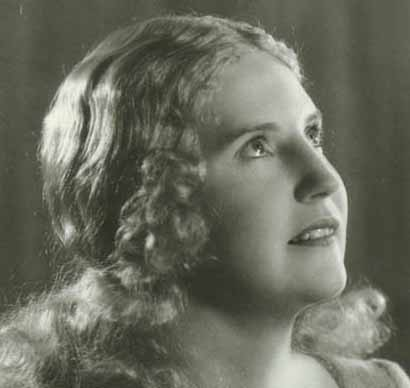
Die Walküre {273}
Metropolitan Opera House; 02/2/1935
Debut: Kirsten Flagstad
Broadcast
Review |
[Met Performance] CID:116520
Madama Butterfly {231}
Metropolitan Opera House; 02/2/1935
|
[Met Concert/Gala] CID:116530
Gala Concert
Metropolitan Opera House; 02/3/1935
|
[Met Performance] CID:116540
Die Meistersinger von Nürnberg {203}
Metropolitan Opera House; 02/4/1935
|
[Met Performance] CID:116550
Il Trovatore {187}
Brooklyn Academy of Music, New York, Brooklyn; 02/5/1935
|
[Met Performance] CID:116560
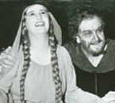
Tristan und Isolde {224}
Metropolitan Opera House; 02/6/1935
|
[Met Performance] CID:116570
La Bohème {306}
Metropolitan Opera House; 02/7/1935
|
[Met Performance] CID:116580
Das Rheingold {72}
Ring Cycle [56] Uncut*
Metropolitan Opera House; 02/8/1935
|
[Met Performance] CID:116590
Rigoletto {204}
Metropolitan Opera House; 02/8/1935
|
[Met Performance] CID:116600
Don Giovanni {92}
Metropolitan Opera House; 02/9/1935
Broadcast |
[Met Performance] CID:116610
Aida {391}
Metropolitan Opera House; 02/9/1935
|
[Met Concert/Gala] CID:116620
Special Concert
Metropolitan Opera House; 02/10/1935
|
[Met Performance] CID:116630
Manon {119}
Metropolitan Opera House; 02/11/1935
|
[Met Performance] CID:116640
Parsifal {128}
Metropolitan Opera House; 02/12/1935
Review |
[Met Performance] CID:116650
Faust {402}
Brooklyn Academy of Music, New York, Brooklyn; 02/12/1935
|
[Met Performance] CID:116660
In the Pasha's Garden {3}
Cavalleria Rusticana {294}
Pagliacci {324}
Metropolitan Opera House; 02/13/1935
|
[Met Performance] CID:116670
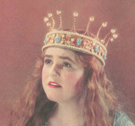
Lohengrin {398}
Metropolitan Opera House; 02/14/1935
Review |
[Met Performance] CID:116680
Die Walküre {274}
Ring Cycle [56] Uncut*
Metropolitan Opera House; 02/15/1935
|
[Met Performance] CID:116690
La Traviata {205}
Metropolitan Opera House; 02/15/1935
|
[Met Performance] CID:116700
Simon Boccanegra {16}
Metropolitan Opera House; 02/16/1935
Broadcast |
[Met Performance] CID:116710
Lucia di Lammermoor {173}
Metropolitan Opera House; 02/16/1935
|
[Met Concert/Gala] CID:116720
Gala Concert
Metropolitan Opera House; 02/17/1935
|
[Met Performance] CID:116730
Lakmé {28}
Metropolitan Opera House; 02/18/1935
Debut: Fred Rohde |
[Met Performance] CID:116740
Der Rosenkavalier {56}
Metropolitan Opera House; 02/19/1935
|
[Met Performance] CID:116750
La Forza del Destino {46}
Metropolitan Opera House; 02/20/1935
|
[Met Performance] CID:116760
Linda di Chamounix {6}
Metropolitan Opera House; 02/21/1935
|
[Met Performance] CID:116770
Siegfried {166}
Ring Cycle [56] Uncut*
Metropolitan Opera House; 02/22/1935
|
[Met Performance] CID:116780
Madama Butterfly {232}
Metropolitan Opera House; 02/22/1935
|
[Met Performance] CID:116790
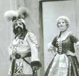
Metropolitan Opera Premiere (La Serva Padrona)
New production (Don Pasquale)
La Serva Padrona {1}
Don Pasquale {31}
Metropolitan Opera House; 02/23/1935
Debut: Jonel Jorgulesco
Broadcast |
[Met Performance] CID:116800
Tannhäuser {284}
Metropolitan Opera House; 02/23/1935
|
[Met Concert/Gala] CID:116810
Special Concert
Metropolitan Opera House; 02/24/1935
|
[Met Performance] CID:116820
Tristan und Isolde {225}
Metropolitan Opera House; 02/25/1935
|
[Met Performance] CID:116830
Lucia di Lammermoor {174}
Brooklyn Academy of Music, New York, Brooklyn; 02/26/1935
|
[Met Performance] CID:116840
Peter Ibbetson {21}
Metropolitan Opera House; 02/27/1935
Debut: Joan Taylor |
[Met Performance] CID:116850
Götterdämmerung {123}
Ring Cycle [56] Uncut*
Metropolitan Opera House; 02/28/1935
|
[Met Performance] CID:116860
Aida {392}
Metropolitan Opera House; 02/28/1935
Debut: Kathryn Meisle |
[Met Performance] CID:116870
Die Meistersinger von Nürnberg {204}
Metropolitan Opera House; 03/1/1935
|
[Met Performance] CID:116880
La Sonnambula {27}
Metropolitan Opera House; 03/2/1935
Broadcast |
[Met Performance] CID:116890
Il Trovatore {188}
Metropolitan Opera House; 03/2/1935
|
[Met Concert/Gala] CID:116900
Gala Concert
Metropolitan Opera House; 03/3/1935
|
[Met Performance] CID:116910
La Serva Padrona {2}
Don Pasquale {32}
Metropolitan Opera House; 03/4/1935
|
[Met Performance] CID:116920
Lohengrin {399}
Brooklyn Academy of Music, New York, Brooklyn; 03/5/1935
|
[Met Performance] CID:116930
Linda di Chamounix {7}
Metropolitan Opera House; 03/6/1935
|
[Met Performance] CID:116940
Parsifal {129}
Metropolitan Opera House; 03/7/1935
|
[Met Performance] CID:116950
Madama Butterfly {233}
Metropolitan Opera House; 03/7/1935
|
[Met Performance] CID:116960
Pelléas et Mélisande {31}
Metropolitan Opera House; 03/8/1935
|
[Met Performance] CID:116970
Tristan und Isolde {226}
Metropolitan Opera House; 03/9/1935
Broadcast |
[Met Performance] CID:116980
Rigoletto {205}
Metropolitan Opera House; 03/9/1935
|
[Met Concert/Gala] CID:116990
Special Concert
Metropolitan Opera House; 03/10/1935
|
[Met Performance] CID:117000
La Sonnambula {28}
Metropolitan Opera House; 03/11/1935
|
[Met Performance] CID:117010
Die Walküre {275}
Baltimore, Maryland; 03/12/1935
|
[Met Performance] CID:117020
La Serva Padrona {3}
Don Pasquale {33}
Metropolitan Opera House; 03/13/1935
|
[Met Performance] CID:117030
Die Meistersinger von Nürnberg {205}
Metropolitan Opera House; 03/14/1935
|
[Met Performance] CID:117040
Faust {403}
Metropolitan Opera House; 03/14/1935
|
[Met Performance] CID:117050
Mignon {66}
Metropolitan Opera House; 03/15/1935
|
[Met Performance] CID:117060
Tannhäuser {285}
Metropolitan Opera House; 03/15/1935
|
[Met Performance] CID:117070
Aida {393}
Metropolitan Opera House; 03/16/1935
Broadcast |
[Met Performance] CID:117080
La Bohème {307}
Metropolitan Opera House; 03/16/1935
|
[Met Concert/Gala] CID:117090
Gala Concert
Metropolitan Opera House; 03/17/1935
|
[Met Performance] CID:117100
Lohengrin {400}
Metropolitan Opera House; 03/18/1935
|
[Met Concert/Gala] CID:117110
Gatti-Casazza Gala Performance
Metropolitan Opera House; 03/19/1935
Reviews |
[Met Performance] CID:117120
Pelléas et Mélisande {32}
Metropolitan Opera House; 03/20/1935
|
[Met Performance] CID:117130
Tosca {235}
Metropolitan Opera House; 03/21/1935
Review |
[Met Performance] CID:117140
Die Walküre {276}
Metropolitan Opera House; 03/21/1935
|
[Met Performance] CID:117150
Lakmé {29}
Metropolitan Opera House; 03/22/1935
Debut: Bardo Caruso |
[Met Performance] CID:117160
La Bohème {308}
Metropolitan Opera House; 03/23/1935
Broadcast |
[Met Performance] CID:117170
La Gioconda {134}
Metropolitan Opera House; 03/23/1935
|
[Met Concert/Gala] CID:117180
Special Concert
Metropolitan Opera House; 03/24/1935
|
[Met Performance] CID:117190
Linda di Chamounix {8}
Metropolitan Opera House; 03/25/1935
|
[Met Performance] CID:117200
Manon {120}
Brooklyn Academy of Music, New York, Brooklyn; 03/26/1935
|
[Met Performance] CID:117210
Tannhäuser {286}
Metropolitan Opera House; 03/27/1935
|
[Met Performance] CID:117220
Tosca {236}
Metropolitan Opera House; 03/28/1935
|
[Met Performance] CID:117230
Lucia di Lammermoor {175}
Mosque Theatre, Newark, New Jersey; 03/28/1935
|
[Met Performance] CID:117240
Tristan und Isolde {227}
Metropolitan Opera House; 03/29/1935
|
[Met Performance] CID:117250
La Serva Padrona {4}
La Bohème {309}
Metropolitan Opera House; 03/29/1935
|
[Met Performance] CID:117260
Lakmé {30}
Metropolitan Opera House; 03/30/1935
|
[Met Performance] CID:117270
Die Meistersinger von Nürnberg {206}
Metropolitan Opera House; 03/30/1935
|
[Met Concert/Gala] CID:117280
Grand Operatic Surprise Party
Metropolitan Opera House; 03/31/1935
|
[Met Performance] CID:117290
Die Walküre {277}
Boston, Massachusetts; 04/1/1935
|
[Met Performance] CID:117300
La Traviata {206}
Boston, Massachusetts; 04/2/1935
|
[Met Performance] CID:117310
Lohengrin {401}
Boston, Massachusetts; 04/3/1935
|
[Met Performance] CID:117320
Lakmé {31}
Boston, Massachusetts; 04/3/1935
|
[Met Performance] CID:117330
Peter Ibbetson {22}
Boston, Massachusetts; 04/4/1935
|
[Met Performance] CID:117340
Die Meistersinger von Nürnberg {207}
Boston, Massachusetts; 04/5/1935
|
[Met Performance] CID:117350
Faust {404}
Boston, Massachusetts; 04/6/1935
|
[Met Performance] CID:117360
Lucia di Lammermoor {176}
Boston, Massachusetts; 04/6/1935
|
[Met Performance] CID:117370
Tristan und Isolde {228}
Metropolitan Opera House; 04/8/1935
|
[Met Performance] CID:117380
Aida {394}
Baltimore, Maryland; 04/9/1935
|
[Met Performance] CID:117390
Tannhäuser {287}
Eastman Theater, Rochester, New York; 04/10/1935
|
[Met Concert/Gala] CID:117400
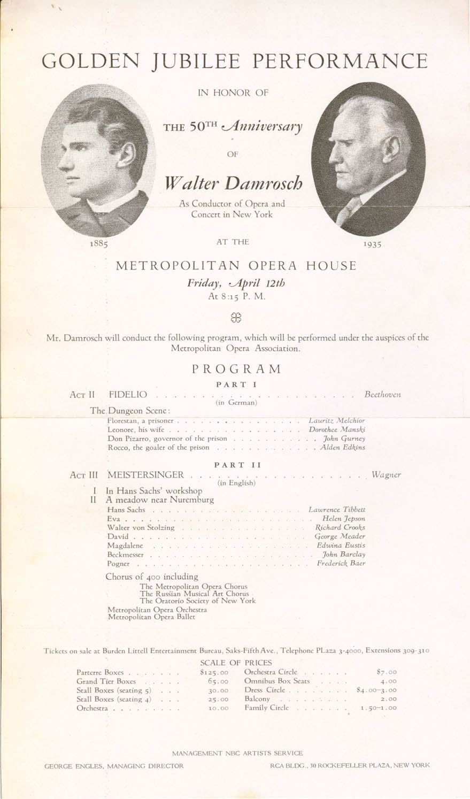
Walter Damrosch Golden Jubilee Performance
Metropolitan Opera House; 04/12/1935
Walter Damrosch's 50th Anniversary
Broadcast (Partial) |
[Met Performance] CID:117410
Parsifal {130}
Metropolitan Opera House; 04/17/1935
Review |
[Met Performance] CID:117420
Parsifal {131}
Metropolitan Opera House; 4/19/1935
|
[Met Performance] CID:118000
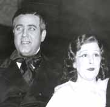
New production
La Traviata {207}
Metropolitan Opera House; 12/16/1935
Opening Night {51}
Edward Johnson, General Manager
Debuts: Thelma Votipka, Gisella Caccialanza, Ruthanna Boris, Anatol Vilzak, Constantine Iolas, George Balanchine |
[Met Performance] CID:118010
Tosca {237}
American Academy of Music, Philadelphia, Pennsylvania; 12/17/1935
|
[Met Performance] CID:118020
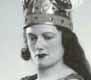
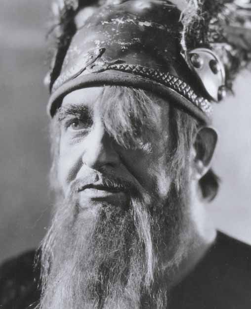
New production
Die Walküre {278}
Metropolitan Opera House; 12/18/1935
Debuts: Marjorie Lawrence, Charlotte Symons, Leopold Sachse
Review |
[Met Performance] CID:118030
Faust {405}
Metropolitan Opera House; 12/19/1935
Debuts: Charles Kullman, Helen Olheim, Hubert Raidich |
[Met Performance] CID:118040
Metropolitan Opera Premiere (Reminiscence)
Hänsel und Gretel {135}
Reminiscence {1}
Metropolitan Opera House; 12/20/1935
Debuts: Eduard Habich, Kathryn Mullowny, Charles Laskey, Leda Anchutina, Anabelle Lyon, Rabana Hasburgh, Annia Breyman, William Dollar, Holly Howard, Elise Reiman |
[Met Performance] CID:118050
Aida {395}
Metropolitan Opera House; 12/20/1935
Debuts: Gertrud Wettergren, Chase Baromeo, Daphne Vane |
[Met Performance] CID:118060
Lohengrin {402}
Metropolitan Opera House; 12/21/1935
Debut: Julius Huehn
Broadcast
Review |
[Met Performance] CID:118070
La Bohème {310}
Metropolitan Opera House; 12/21/1935
Debut: Carlo Morelli |
[Met Concert/Gala] CID:118080
Special Concert / Reminiscence {2}
Metropolitan Opera House; 12/22/1935
|
[Met Performance] CID:118090
Lakmé {32}
Metropolitan Opera House; 12/23/1935
Debuts: Betty Eisner, Nora Kaye, Yvonne Patterson, Mary Sale, Lew Christensen, Douglas Coudy |
[Met Performance] CID:118100
La Traviata {208}
Metropolitan Opera House; 12/25/1935
|
[Met Performance] CID:118110
Madama Butterfly {234}
Metropolitan Opera House; 12/26/1935
Debut: Susanne Fisher |
[Met Performance] CID:118120
Tannhäuser {288}
Metropolitan Opera House; 12/26/1935
Debut: Helen Stuart, Heidi Vosseler |
[Met Performance] CID:118130
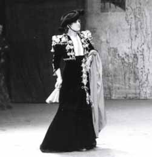
Carmen {328}
Metropolitan Opera House; 12/27/1935
Debut: Hilda Burke
Reviews |
[Met Performance] CID:118140
Rigoletto {206}
Metropolitan Opera House; 12/28/1935
Broadcast |
[Met Performance] CID:118150
Lohengrin {403}
Metropolitan Opera House; 12/28/1935
|
[Met Concert/Gala] CID:118160
Gala Concert
Metropolitan Opera House; 12/29/1935
|
[Met Performance] CID:118170
Tristan und Isolde {229}
Metropolitan Opera House; 12/30/1935
|
[Met Performance] CID:118180
Lucia di Lammermoor {177}
Metropolitan Opera House; 12/31/1935
|
[Met Performance] CID:118190
Tannhäuser {289}
Metropolitan Opera House; 01/1/1936
|
[Met Performance] CID:118200
Aida {396}
Metropolitan Opera House; 01/2/1936
|
[Met Performance] CID:118210
Siegfried {167}
Metropolitan Opera House; 01/3/1936
Review |
[Met Performance] CID:118220
Mignon {67}
Metropolitan Opera House; 01/4/1936
Debut: Josephine Antoine
Broadcast
Review |
[Met Performance] CID:118230
La Traviata {209}
Metropolitan Opera House; 01/4/1936
Debut: Kyra Blank |
[Met Concert/Gala] CID:118240
Grand Concert
Metropolitan Opera House; 01/5/1936
|
[Met Performance] CID:118250
Carmen {329}
Metropolitan Opera House; 01/6/1936
Review |
[Met Performance] CID:118260
Madama Butterfly {235}
Metropolitan Opera House; 01/8/1936
|
[Met Performance] CID:118270
Tristan und Isolde {230}
Metropolitan Opera House; 01/9/1936
|
[Met Performance] CID:118280
Rigoletto {207}
Metropolitan Opera House; 01/9/1936
Review |
[Met Performance] CID:118290
Manon {121}
Metropolitan Opera House; 01/10/1936
Debut: Joseph Bentonelli
Review |
[Met Performance] CID:118300

Götterdämmerung {124}
Metropolitan Opera House; 01/11/1936
Broadcast
Review |
[Met Performance] CID:118310
La Juive {60}
Metropolitan Opera House; 01/11/1936
Debuts: Dudley Marwick, Audrey Guerard |
[Met Concert/Gala] CID:118320
Grand Concert / Reminiscence {3}
Metropolitan Opera House; 01/12/1936
|
[Met Performance] CID:118330
Lohengrin {404}
Metropolitan Opera House; 01/13/1936
|
[Met Performance] CID:118340
Carmen {330}
Horace Bushnell Memorial Hall, Hartford, Connecticut; 01/14/1936
|
[Met Performance] CID:118350
Aida {397}
Metropolitan Opera House; 01/15/1936
|
[Met Performance] CID:118360
Carmen {331}
Metropolitan Opera House; 01/16/1936
|
[Met Performance] CID:118370
La Rondine {16}
Metropolitan Opera House; 01/17/1936
Review |
[Met Performance] CID:118380
Tannhäuser {290}
Metropolitan Opera House; 01/18/1936
Broadcast |
[Met Performance] CID:118390
Faust {406}
Metropolitan Opera House; 01/18/1936
|
[Met Concert/Gala] CID:118400
Grand Concert
Metropolitan Opera House; 01/19/1936
|
[Met Performance] CID:118410
La Juive {61}
Metropolitan Opera House; 01/20/1936
Review |
[Met Performance] CID:118420
La Traviata {210}
Brooklyn Academy of Music, New York, Brooklyn; 01/21/1936
|
[Met Performance] CID:118430
Madama Butterfly {236}
Newark, New Jersey; 01/21/1936
|
[Met Performance] CID:118440
Die Walküre {279}
Metropolitan Opera House; 01/22/1936
|
[Met Performance] CID:118450
Rigoletto {208}
Metropolitan Opera House; 01/22/1936
|
[Met Performance] CID:118460
Lohengrin {405}
Metropolitan Opera House; 01/23/1936
|
[Met Performance] CID:118470
Lakmé {33}
Metropolitan Opera House; 01/24/1936
Review |
[Met Performance] CID:118480
Aida {398}
Metropolitan Opera House; 01/25/1936
Broadcast |
[Met Performance] CID:118490
Carmen {332}
Metropolitan Opera House; 01/25/1936
|
[Met Concert/Gala] CID:118500
Grand Concert
Metropolitan Opera House; 01/26/1936
|
[Met Performance] CID:118510
La Bohème {311}
Gianni Schicchi {27}
Metropolitan Opera House; 01/27/1936
Review |
[Met Performance] CID:118520
Carmen {333}
American Academy of Music, Philadelphia, Pennsylvania; 01/28/1936
|
[Met Performance] CID:118530
Götterdämmerung {125}
Metropolitan Opera House; 01/29/1936
|
[Met Performance] CID:118540
Tosca {238}
Metropolitan Opera House; 01/30/1936
|
[Met Performance] CID:118550
Tristan und Isolde {231}
Metropolitan Opera House; 01/31/1936
|
[Met Performance] CID:118560
La Juive {62}
Metropolitan Opera House; 01/31/1936
|
[Met Performance] CID:118570
Carmen {334}
Metropolitan Opera House; 02/1/1936
Broadcast |
[Met Performance] CID:118580
Madama Butterfly {237}
Metropolitan Opera House; 02/1/1936
|
[Met Concert/Gala] CID:118590
Gala Concert
Metropolitan Opera House; 02/2/1936
|
[Met Performance] CID:118600
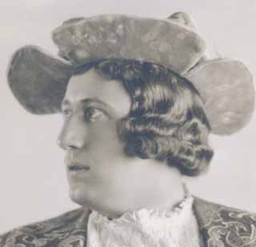
Die Meistersinger von Nürnberg {208}
Metropolitan Opera House; 02/3/1936
Debut: René Maison |
[Met Performance] CID:118610
Manon {122}
Metropolitan Opera House; 02/5/1936
|
[Met Performance] CID:118620
Das Rheingold {73}
Ring Cycle [57] Uncut
Metropolitan Opera House; 02/6/1936
Review |
[Met Performance] CID:118630
La Bohème {312}
Gianni Schicchi {28}
Metropolitan Opera House; 02/6/1936
|
[Met Performance] CID:118640
Rigoletto {209}
Metropolitan Opera House; 02/7/1936
|
[Met Performance] CID:118650
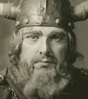
Tristan und Isolde {232}
Metropolitan Opera House; 02/8/1936
Broadcast |
[Met Performance] CID:118660
Hänsel und Gretel {136}
Pagliacci {325}
Metropolitan Opera House; 02/8/1936
|
[Met Concert/Gala] CID:118670
Gala Program /
Serenade {1}
Metropolitan Opera House; 02/9/1936
Debut: Jean Lurçat |
[Met Performance] CID:118680
Madama Butterfly {238}
Metropolitan Opera House; 02/10/1936
|
[Met Performance] CID:118690
Die Walküre {280}
Ring Cycle [57] Uncut
Metropolitan Opera House; 02/11/1936
|
[Met Performance] CID:118700
Lucia di Lammermoor {178}
Brooklyn Academy of Music, New York, Brooklyn; 02/11/1936
|
[Met Performance] CID:118710
Aida {399}
Metropolitan Opera House; 02/12/1936
Debut: Dusolina Giannini
Review |
[Met Performance] CID:118720
Carmen {335}
Metropolitan Opera House; 02/12/1936
|
[Met Performance] CID:118730
Mignon {68}
Metropolitan Opera House; 02/13/1936
|
[Met Performance] CID:118740
Tristan und Isolde {233}
Metropolitan Opera House; 02/14/1936
|
[Met Performance] CID:118750
Il Trovatore {189}
Metropolitan Opera House; 02/15/1936
Broadcast |
[Met Performance] CID:118760
Das Rheingold {74}
Ring Cycle [58]
Metropolitan Opera House; 02/15/1936
|
[Met Concert/Gala] CID:118770
Gala Concert
Metropolitan Opera House; 02/16/1936
|
[Met Performance] CID:118780
La Rondine {17}
Metropolitan Opera House; 02/17/1936
|
[Met Performance] CID:118790
Aida {400}
American Academy of Music, Philadelphia, Pennsylvania; 02/18/1936
|
[Met Performance] CID:118800
Siegfried {168}
Ring Cycle [57] Uncut
Metropolitan Opera House; 02/19/1936
Review |
[Met Performance] CID:118810
Pagliacci {326}
Serenade {2}
Gianni Schicchi {29}
Metropolitan Opera House; 02/19/1936
|
[Met Performance] CID:118820
Tristan und Isolde {234}
Metropolitan Opera House; 02/20/1936
Review |
[Met Performance] CID:118830
Madama Butterfly {239}
Metropolitan Opera House; 02/21/1936
|
[Met Performance] CID:118840
Die Meistersinger von Nürnberg {209}
Metropolitan Opera House; 02/22/1936
Broadcast |
[Met Performance] CID:118850
Rigoletto {210}
Metropolitan Opera House; 02/22/1936
|
[Met Concert/Gala] CID:118860
Gala Concert
Metropolitan Opera House; 02/23/1936
Debuts: Hortense Kahrklin, Jack Potteiger, Christian Bérard |
[Met Performance] CID:118870
Tannhäuser {291}
Metropolitan Opera House; 02/24/1936
|
[Met Performance] CID:118880
Carmen {336}
Brooklyn Academy of Music, New York, Brooklyn; 02/25/1936
|
[Met Performance] CID:118890
La Bohème {313}
Metropolitan Opera House; 02/26/1936
|
[Met Performance] CID:118900
Götterdämmerung {126}
Ring Cycle [57] Uncut
Metropolitan Opera House; 02/27/1936
|
[Met Performance] CID:118910
Madama Butterfly {240}
Metropolitan Opera House; 02/27/1936
|
[Met Performance] CID:118920
Lohengrin {406}
Metropolitan Opera House; 02/28/1936
|
[Met Performance] CID:118930
Pagliacci {327}
Serenade {3}
Gianni Schicchi {30}
Metropolitan Opera House; 02/29/1936
Broadcast |
[Met Performance] CID:118940
Die Walküre {281}
Ring Cycle [58]
Metropolitan Opera House; 02/29/1936
Review |
[Met Concert/Gala] CID:118950
Gala Program/
Serenade {4}
Metropolitan Opera House; 03/1/1936
|
[Met Performance] CID:118960
Aida {401}
Metropolitan Opera House; 03/2/1936
Debut: Bruna Castagna |
[Met Performance] CID:118970
Tristan und Isolde {235}
American Academy of Music, Philadelphia, Pennsylvania; 03/3/1936
|
[Met Performance] CID:118980
La Bohème {314}
Metropolitan Opera House; 03/4/1936
|
[Met Performance] CID:118990
Mignon {69}
Metropolitan Opera House; 03/4/1936
Debut: Helen Leitch |
[Met Performance] CID:119000
Die Meistersinger von Nürnberg {210}
Metropolitan Opera House; 03/5/1936
|
[Met Performance] CID:119010
Manon {123}
Metropolitan Opera House; 03/5/1936
|
[Met Performance] CID:119020
Il Trovatore {190}
Metropolitan Opera House; 03/6/1936
|
[Met Performance] CID:119030
Fidelio {58}
Metropolitan Opera House; 03/7/1936
Broadcast
Review |
[Met Performance] CID:119040
Siegfried {169}
Ring Cycle [58]
Metropolitan Opera House; 03/7/1936
|
[Met Concert/Gala] CID:119050
Grand Program
Metropolitan Opera House; 03/8/1936
|
[Met Performance] CID:119060
Rigoletto {211}
Metropolitan Opera House; 03/9/1936
|
[Met Performance] CID:119070
Tristan und Isolde {236}
Horace Bushnell Memorial Hall, Hartford, Connecticut; 03/10/1936
Review |
[Met Performance] CID:119080
Die Meistersinger von Nürnberg {211}
Metropolitan Opera House; 03/11/1936
|
[Met Performance] CID:119090
Tannhäuser {292}
Metropolitan Opera House; 03/12/1936
|
[Met Performance] CID:119100
Cavalleria Rusticana {295}
Errante {1}
Pagliacci {328}
Metropolitan Opera House; 03/12/1936
Debut: Pavel Tchelitchev |
[Met Performance] CID:119110
Fidelio {59}
Metropolitan Opera House; 03/13/1936
|
[Met Performance] CID:119120
La Bohème {315}
Metropolitan Opera House; 03/14/1936
Broadcast |
[Met Performance] CID:119130
Carmen {337}
Metropolitan Opera House; 03/14/1936
|
[Met Concert/Gala] CID:119140
Gala Program/ Reminiscence {4}
Metropolitan Opera House; 03/15/1936
|
[Met Performance] CID:119150
Faust {407}
Metropolitan Opera House; 03/16/1936
|
[Met Performance] CID:119160
Aida {402}
Brooklyn Academy of Music, New York, Brooklyn; 03/17/1936
|
[Met Performance] CID:119170
Tristan und Isolde {237}
Metropolitan Opera House; 03/18/1936
|
[Met Performance] CID:119180
Il Trovatore {191}
Metropolitan Opera House; 03/19/1936
|
[Met Performance] CID:119190
Parsifal {132}
Metropolitan Opera House; 03/20/1936
Review |
[Met Performance] CID:119200
Pagliacci {329}
Errante {2}
Gianni Schicchi {31}
Metropolitan Opera House; 03/20/1936
|
[Met Performance] CID:119210
La Rondine {18}
Metropolitan Opera House; 03/21/1936
Broadcast |
[Met Performance] CID:119220
Götterdämmerung {127}
Ring Cycle [58]
Metropolitan Opera House; 03/21/1936
|
[Met Concert/Gala] CID:119230
Gala Program
Metropolitan Opera House; 03/22/1936
Debut: William Dollar (Choreographer) |
[Met Performance] CID:119240
Tannhäuser {293}
Boston Opera House, Boston, Massachusetts; 03/23/1936
|
[Met Performance] CID:119250
Aida {403}
Boston Opera House, Boston, Massachusetts; 03/24/1936
|
[Met Performance] CID:119260
Madama Butterfly {241}
Boston Opera House, Boston, Massachusetts; 03/25/1936
|
[Met Performance] CID:119270
Tristan und Isolde {238}
Boston Opera House, Boston, Massachusetts; 03/25/1936
|
[Met Performance] CID:119280
Mignon {70}
Boston Opera House, Boston, Massachusetts; 03/26/1936
Review |
[Met Performance] CID:119290
Fidelio {60}
Boston Opera House, Boston, Massachusetts; 03/27/1936
|
[Met Performance] CID:119300
Carmen {338}
Boston Opera House, Boston, Massachusetts; 03/28/1936
Broadcast
Review |
[Met Performance] CID:119310
Rigoletto {212}
Boston Opera House, Boston, Massachusetts; 03/28/1936
Review |
[Met Concert/Gala] CID:119320
Bori Farewell Gala
Metropolitan Opera House; 03/29/1936
Broadcast: Manon: Act III, Scene 2
Review |
[Met Performance] CID:119330
Tristan und Isolde {239}
Eastman Theatre, Rochester, New York; 03/30/1936
|
[Met Performance] CID:119340
Lohengrin {407}
Metropolitan Opera House; 03/31/1936
|
[Met Performance] CID:119350
Rigoletto {213}
Newark, New Jersey; 04/1/1936
|
[Met Performance] CID:119360
La Bohème {316}
Lyric Theater, Baltimore, Maryland; 04/2/1936
Review |
[Met Performance] CID:119370
Tristan und Isolde {240}
Lyric Theater, Baltimore, Maryland; 04/3/1936
Review |
[Met Performance] CID:119380
Carmen {339}
Lyric Theater, Baltimore, Maryland; 04/4/1936
Review |
[Met Performance] CID:119390
Parsifal {133}
Metropolitan Opera House; 04/8/1936
Review |
[Met Performance] CID:119400
Parsifal {134}
Metropolitan Opera House; 04/10/1936
|
[Met Performance] CID:119410
Carmen {340}
Metropolitan Opera House; 05/11/1936
Metropolitan Popular Spring Season 1936
Debuts: Natalie Bodanya, Lodovico Oliviero, Wilfred Engelman
Review |
[Met Performance] CID:119420
Rigoletto {214}
Metropolitan Opera House; 05/13/1936
Debut: Emily Hardy, Anna Kaskas, John Gurney, Norman Cordon, Jarna Paull |
[Met Performance] CID:119430
The Bartered Bride {39}
Metropolitan Opera House; 05/15/1936
Debuts: Muriel Dickson, George Rasely, Lucielle Browning
Review |
[Met Performance] CID:119440
Carmen {341}
Metropolitan Opera House; 05/16/1936
Debut: Joseph Royer
Broadcast |
[Met Performance] CID:119450
Rigoletto {215}
Metropolitan Opera House; 05/16/1936
Debut: Nicholas Massue
Review |
[Met Performance] CID:119460
The Bartered Bride {40}
Metropolitan Opera House; 05/18/1936
|
[Met Performance] CID:119470
Metropolitan Opera Premiere (The Bat)
Lucia di Lammermoor {179}
The Bat {1}
Metropolitan Opera House; 05/20/1936
Debuts: Nana Gollner, Eugene Loring, Keith Martin
Review |
[Met Performance] CID:119480
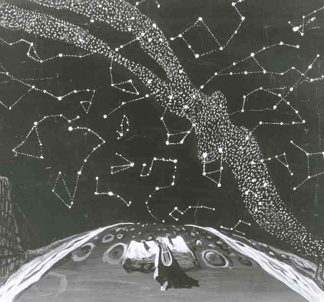
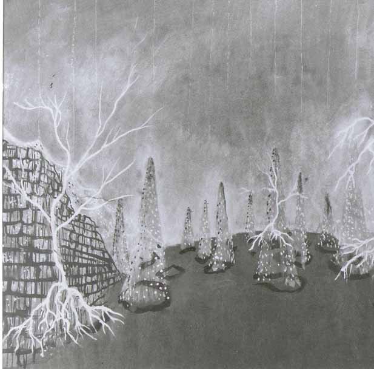
New production (Orfeo ed Euridice)
Orfeo ed Euridice {38}
Cavalleria Rusticana {296}
Metropolitan Opera House; 05/22/1936
Debuts: Jeanne Pengelly, Maxine Stellman, Rosa Tentoni
Review |
[Met Performance] CID:119490
The Bartered Bride {41}
Metropolitan Opera House; 05/23/1936
Broadcast |
[Met Performance] CID:119500
Carmen {342}
Metropolitan Opera House; 05/23/1936
Debut: Sydney Rayner |
[Met Performance] CID:119510
The Bartered Bride {42}
The Bat {2}
Metropolitan Opera House; 05/25/1936
|
[Met Performance] CID:119520
Aida {404}
Metropolitan Opera House; 05/27/1936
Review |
[Met Performance] CID:119530
Orfeo ed Euridice {39}
Pagliacci {330}
Metropolitan Opera House; 05/29/1936
Debut: Arthur Carron
Review |
[Met Performance] CID:119540
Aida {405}
Metropolitan Opera House; 05/30/1936
Broadcast |
[Met Performance] CID:119550
La Traviata {211}
The Bat {3}
Metropolitan Opera House; 05/30/1936
Review |
[Met Performance] CID:119560
The Bartered Bride {43}
The Bat {4}
Metropolitan Opera House; 06/2/1936
|
[Met Performance] CID:119570
Madama Butterfly {242}
The Bat {5}
Metropolitan Opera House; 06/3/1936
Debut: William Fisher
Review |
[Met Performance] CID:119580
Carmen {343}
Metropolitan Opera House; 06/4/1936
|
[Met Performance] CID:119590
Aida {406}
Metropolitan Opera House; 06/5/1936
|
[Met Performance] CID:119600
Cavalleria Rusticana {297}
Pagliacci {331}
The Bat {6}
Metropolitan Opera House; 6/6/1936
Debuts: Anna Leskaya, Ruby Mercer |
[Met Performance] CID:120000
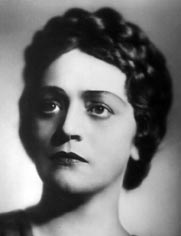
Die Walküre {282}
Metropolitan Opera House; 12/21/1936
Opening Night {52}
Edward Johnson, General Manager
Debuts: Kerstin Thorborg, Irene Jessner
Review |
[Met Performance] CID:120010
The Bartered Bride {44}
American Academy of Music, Philadelphia, Pennsylvania; 12/22/1936
|
[Met Performance] CID:120020
Tristan und Isolde {241}
Metropolitan Opera House; 12/23/1936
Debut: Karl Laufkötter |
[Met Performance] CID:120030
Hänsel und Gretel {137}
The Bat {7}
Metropolitan Opera House; 12/24/1936
Debut: Monna Montes
Broadcast (Hansel und Gretel only) |
[Met Performance] CID:120040
La Traviata {212}
Metropolitan Opera House; 12/24/1936
Debut: Vina Bovy
Review |
[Met Performance] CID:120050
The Bartered Bride {45}
Metropolitan Opera House; 12/25/1936
Review |
[Met Performance] CID:120060
New production
Samson et Dalila {59}
Metropolitan Opera House; 12/26/1936
Debuts: Maurice Abravanel, Herbert Graf, Koeck-Meyer Studios, Irene Sharaff
Broadcast
Review |
[Met Performance] CID:120070
Il Trovatore {192}
Metropolitan Opera House; 12/26/1936
|
[Met Concert/Gala] CID:120080
Grand Sunday Night Program
Metropolitan Opera House; 12/27/1936
|
[Met Performance] CID:120090
Rigoletto {216}
Metropolitan Opera House; 12/28/1936
Review |
[Met Performance] CID:120100
Die Walküre {283}
Brooklyn Academy of Music, New York, Brooklyn; 12/29/1936
Review |
[Met Performance] CID:120110
Carmen {344}
Metropolitan Opera House; 12/30/1936
Debut: Maclovia Ruiz
Review |
[Met Performance] CID:120120
Lakmé {34}
Metropolitan Opera House; 12/30/1936
Debut: Serge Temoff
Review |
[Met Performance] CID:120130
Aida {407}
Metropolitan Opera House; 12/31/1936
|
[Met Performance] CID:120140
Faust {408}
Metropolitan Opera House; 01/1/1937
Review |
[Met Performance] CID:120150
Tristan und Isolde {242}
Metropolitan Opera House; 01/2/1937
Broadcast
Review |
[Met Performance] CID:120160
Cavalleria Rusticana {298}
Pagliacci {332}
Metropolitan Opera House; 01/2/1937
Review |
[Met Concert/Gala] CID:120170
Grand Sunday Night Program
Metropolitan Opera House; 01/3/1937
|
[Met Performance] CID:120180
La Traviata {213}
Metropolitan Opera House; 01/4/1937
Review |
[Met Performance] CID:120190
Samson et Dalila {60}
American Academy of Music, Philadelphia, Pennsylvania; 01/5/1937
Review |
[Met Performance] CID:120200
The Bartered Bride {46}
Metropolitan Opera House; 01/6/1937
|
[Met Performance] CID:120210
Der Fliegende Holländer {37}
Metropolitan Opera House; 01/7/1937
Review |
[Met Performance] CID:120220
Rigoletto {217}
Metropolitan Opera House; 01/7/1937
Review |
[Met Performance] CID:120230
Die Walküre {284}
Metropolitan Opera House; 01/8/1937
Review |
[Met Performance] CID:120240
Carmen {345}
Metropolitan Opera House; 01/9/1937
Broadcast
Review |
[Met Performance] CID:120250
Samson et Dalila {61}
Metropolitan Opera House; 01/9/1937
|
[Met Concert/Gala] CID:120260
Gala Program
Metropolitan Opera House; 01/10/1937
|
[Met Performance] CID:120270
Lohengrin {408}
Metropolitan Opera House; 01/11/1937
Review |
[Met Performance] CID:120280
Samson et Dalila {62}
Brooklyn Academy of Music, New York, Brooklyn; 01/12/1937
Review |
[Met Performance] CID:120290
Cavalleria Rusticana {299}
Pagliacci {333}
The Bat {8}
Metropolitan Opera House; 01/13/1937
Review |
[Met Performance] CID:120300
Les Contes d'Hoffmann {54}
Metropolitan Opera House; 01/14/1937
Debuts: Stella Andreva, Frances Walsingham
Review |
[Met Performance] CID:120310
Der Fliegende Holländer {38}
Metropolitan Opera House; 01/14/1937
|
[Met Performance] CID:120320
Lakmé {35}
Metropolitan Opera House; 01/15/1937
Review |
[Met Performance] CID:120330
Die Walküre {285}
Metropolitan Opera House; 01/16/1937
Broadcast
Review |
[Met Performance] CID:120340
Manon {124}
Metropolitan Opera House; 01/16/1937
|
[Met Concert/Gala] CID:120350
Grand Sunday Night Program
Metropolitan Opera House; 01/17/1937
|
[Met Performance] CID:120360
Samson et Dalila {63}
Metropolitan Opera House; 01/18/1937
Review |
[Met Performance] CID:120370
Rigoletto {218}
Horace Bushnell Memorial Hall, Hartford, Connecticut; 01/19/1937
Review |
[Met Performance] CID:120380
Tristan und Isolde {243}
Metropolitan Opera House; 01/20/1937
|
[Met Performance] CID:120390
Aida {408}
Metropolitan Opera House; 01/20/1937
Review |
[Met Performance] CID:120400
Carmen {346}
Metropolitan Opera House; 01/21/1937
Review |
[Met Performance] CID:120410
Siegfried {170}
Metropolitan Opera House; 01/22/1937
Review |
[Met Performance] CID:120420
Les Contes d'Hoffmann {55}
Metropolitan Opera House; 01/23/1937
Broadcast
Reviews |
[Met Performance] CID:120430
The Bartered Bride {47}
Metropolitan Opera House; 01/23/1937
|
[Met Concert/Gala] CID:120440
Gala Program
Metropolitan Opera House; 01/24/1937
|
[Met Performance] CID:120450
Tannhäuser {294}
Metropolitan Opera House; 01/25/1937
Review |
[Met Performance] CID:120460
La Traviata {214}
Mosque Theater, Newark, New Jersey; 01/26/1937
Review |
[Met Performance] CID:120470
Die Walküre {286}
American Academy of Music, Philadelphia, Pennsylvania; 01/26/1937
|
[Met Performance] CID:120480
Der Fliegende Holländer {39}
Metropolitan Opera House; 01/27/1937
|
[Met Performance] CID:120490
Samson et Dalila {64}
Metropolitan Opera House; 01/28/1937
Review |
[Met Performance] CID:120500
Lohengrin {409}
Metropolitan Opera House; 01/29/1937
|
[Met Performance] CID:120510
La Traviata {215}
Metropolitan Opera House; 01/29/1937
Reviews |
[Met Performance] CID:120520
Siegfried {171}
Metropolitan Opera House; 01/30/1937
Broadcast |
[Met Performance] CID:120530
Carmen {347}
Metropolitan Opera House; 01/30/1937
|
[Met Concert/Gala] CID:120540
Gala Program
Metropolitan Opera House; 01/31/1937
|
[Met Performance] CID:120550
Tristan und Isolde {244}
Metropolitan Opera House; 02/1/1937
|
[Met Performance] CID:120560
Il Trovatore {193}
Brooklyn Academy of Music, New York, Brooklyn; 02/2/1937
Review |
[Met Performance] CID:120570
Die Walküre {287}
Metropolitan Opera House; 02/3/1937
Debut: Gertrud Rünger
Review |
[Met Performance] CID:120580
Cavalleria Rusticana {300}
Le Coq d'Or {51}
Metropolitan Opera House; 02/4/1937
Review |
[Met Performance] CID:120590
United States Premiere
Caponsacchi {1}
Metropolitan Opera House; 02/4/1937
Reviews |
[Met Performance] CID:120600
Lohengrin {410}
Metropolitan Opera House; 02/5/1937
|
[Met Performance] CID:120610
Aida {409}
Metropolitan Opera House; 02/6/1937
Debut: Gina Cigna
Broadcast,
Reviews |
[Met Performance] CID:120620
Rigoletto {219}
Metropolitan Opera House; 02/6/1937
|
[Met Concert/Gala] CID:120630
Gala Program
Serenade {5}
Metropolitan Opera House; 02/7/1937
|
[Met Performance] CID:120640
Les Contes d'Hoffmann {56}
Metropolitan Opera House; 02/8/1937
Review |
[Met Performance] CID:120650
Das Rheingold {75}
Ring Cycle [59] Uncut
Metropolitan Opera House; 02/9/1937
Review |
[Met Performance] CID:120660
Caponsacchi {2}
Metropolitan Opera House; 02/10/1937
|
[Met Performance] CID:120670
Il Trovatore {194}
Metropolitan Opera House; 02/11/1937
Reviews |
[Met Performance] CID:120680
Die Meistersinger von Nürnberg {212}
Metropolitan Opera House; 02/12/1937
Review |
[Met Performance] CID:120690
Pagliacci {334}
Le Coq d'Or {52}
Metropolitan Opera House; 02/12/1937
|
[Met Performance] CID:120700
Manon {125}
Metropolitan Opera House; 02/13/1937
Debut: Bidú Sayão
Broadcast
Review / Chapter: A Bidú Sayão Photo Album |
[Met Performance] CID:120710
Faust {409}
Metropolitan Opera House; 02/13/1937
|
[Met Concert/Gala] CID:120720
Gala Program
Metropolitan Opera House; 02/14/1937
|
[Met Performance] CID:120730
Carmen {348}
Metropolitan Opera House; 02/15/1937
|
[Met Performance] CID:120740
Lakmé {36}
American Academy of Music, Philadelphia, Pennsylvania; 02/16/1937
Review |
[Met Performance] CID:120750
Die Walküre {288}
Ring Cycle [59] Uncut
Metropolitan Opera House; 02/17/1937
Review |
[Met Performance] CID:120760
Rigoletto {220}
Metropolitan Opera House; 02/17/1937
Debut: John Brownlee
Reviews |
[Met Performance] CID:120770
La Gioconda {135}
Metropolitan Opera House; 02/18/1937
Review |
[Met Performance] CID:120780
Tristan und Isolde {245}
Metropolitan Opera House; 02/19/1937
|
[Met Performance] CID:120790
Norma {36}
Metropolitan Opera House; 02/20/1937
Broadcast
Reviews |
[Met Performance] CID:120800
Das Rheingold {75}
Ring Cycle {60]
Metropolitan Opera House; 02/20/1937
|
[Met Concert/Gala] CID:120810
Grand Program
Metropolitan Opera House; 02/21/1937
|
[Met Performance] CID:120820
Siegfried {172}
Ring Cycle [59] Uncut
Metropolitan Opera House; 02/22/1937
|
[Met Performance] CID:120830
Le Coq d'Or {53}
Pagliacci {335}
Metropolitan Opera House; 02/22/1937
Review |
[Met Performance] CID:120840
Cavalleria Rusticana {301}
Pagliacci {336}
Brooklyn Academy of Music, New York, Brooklyn; 02/23/1937
Review |
[Met Performance] CID:120850
La Gioconda {136}
Metropolitan Opera House; 02/24/1937
|
[Met Performance] CID:120860
Tristan und Isolde {246}
Metropolitan Opera House; 02/25/1937
|
[Met Performance] CID:120870
Metropolitan Opera Premiere (Il Matrimonio Segreto)
Concerto {3}
Il Matrimonio Segreto {1}
Metropolitan Opera House; 02/25/1937
Review |
[Met Performance] CID:120880
Aida {410}
Metropolitan Opera House; 02/26/1937
|
[Met Performance] CID:120890
Lucia di Lammermoor {180}
Metropolitan Opera House; 02/27/1937
Broadcast |
[Met Performance] CID:120900
Die Walküre {289}
Ring Cycle [60]
Metropolitan Opera House; 02/27/1937
|
[Met Concert/Gala] CID:120910
Grand Program/ The Bat {9}
Metropolitan Opera House; 02/28/1937
|
[Met Performance] CID:120920
Norma {37}
Metropolitan Opera House; 03/1/1937
|
[Met Performance] CID:120930
Götterdämmerung {128}
Ring Cycle [59] Uncut
Metropolitan Opera House; 03/2/1937
|
[Met Performance] CID:120940
Lohengrin {411}
Metropolitan Opera House; 03/3/1937
|
[Met Performance] CID:120950
Tristan und Isolde {247}
Metropolitan Opera House; 03/4/1937
|
[Met Performance] CID:120960
Serenade {6}
Il Matrimonio Segreto {2}
Metropolitan Opera House; 03/5/1937
|
[Met Performance] CID:120970
La Traviata {216}
Metropolitan Opera House; 03/6/1937
Broadcast
Review |
[Met Performance] CID:120980
Aida {411}
Metropolitan Opera House; 03/6/1937
|
[Met Concert/Gala] CID:120990
Gala Program
Metropolitan Opera House; 03/7/1937
|
[Met Performance] CID:121000
Madama Butterfly {243}
Metropolitan Opera House; 03/8/1937
Debut: Franca Somigli
Review |
[Met Performance] CID:121010
La Bohème {317}
American Academy of Music, Philadelphia, Pennsylvania; 03/9/1937
Review |
[Met Performance] CID:121020
Tristan und Isolde {248}
Metropolitan Opera House; 03/10/1937
|
[Met Performance] CID:121030
Serenade {7}
Le Coq d'Or {54}
Metropolitan Opera House; 03/10/1937
|
[Met Performance] CID:121040
Manon {126}
Metropolitan Opera House; 03/11/1937
|
[Met Performance] CID:121050
Die Meistersinger von Nürnberg {213}
Metropolitan Opera House; 03/12/1937
|
[Met Performance] CID:121060
La Bohème {318}
Metropolitan Opera House; 03/12/1937
Review |
[Met Performance] CID:121070
Mignon {71}
Metropolitan Opera House; 03/13/1937
Broadcast
Review |
[Met Performance] CID:121080
Siegfried {173}
Ring Cycle [60]
Metropolitan Opera House; 03/13/1937
|
[Met Concert/Gala] CID:121090
Gala Program
Metropolitan Opera House; 03/14/1937
|
[Met Performance] CID:121100
Aida {412}
Metropolitan Opera House; 03/15/1937
Review |
[Met Performance] CID:121110
La Bohème {319}
Brooklyn Academy of Music, New York, Brooklyn; 03/16/1937
Review |
[Met Performance] CID:121120
Die Walküre {290}
Horace Bushnell Memorial Hall, Hartford, Connecticut; 03/16/1937
|
[Met Performance] CID:121130
Manon {127}
Metropolitan Opera House; 03/17/1937
|
[Met Performance] CID:121140
Der Fliegende Holländer {40}
Metropolitan Opera House; 03/18/1937
|
[Met Performance] CID:121150
Madama Butterfly {244}
Metropolitan Opera House; 03/18/1937
Review |
[Met Performance] CID:121160
Aida {413}
Metropolitan Opera House; 03/19/1937
First Metropolitan Opera Guild Student Performance
Broadcast: Act II, Scene 2 excerpt
Review |
[Met Performance] CID:121170
Tannhäuser {295}
Metropolitan Opera House; 03/19/1937
Review |
[Met Performance] CID:121180
Faust {410}
Metropolitan Opera House; 03/20/1937
Broadcast |
[Met Performance] CID:121190
Götterdämmerung {129}
Ring Cycle [60]
Metropolitan Opera House; 03/20/1937
Review |
[Met Performance] CID:121200
Gala Program /
The Bartered Bride {48}
Metropolitan Opera House; 03/21/1937
|
[Met Performance] CID:121210
La Bohème {320}
Metropolitan Opera House; 03/22/1937
|
[Met Performance] CID:121220
Lohengrin {412}
American Academy of Music, Philadelphia, Pennsylvania; 03/23/1937
|
[Met Performance] CID:121230
Madama Butterfly {245}
Metropolitan Opera House; 03/24/1937
|
[Met Performance] CID:121240
Le Coq d'Or {55}
Pagliacci {337}
Metropolitan Opera House; 03/25/1937
|
[Met Performance] CID:121250
Parsifal {135}
Metropolitan Opera House; 03/26/1937
Review |
[Met Performance] CID:121260
Mignon {72}
Metropolitan Opera House; 03/26/1937
Review |
[Met Performance] CID:121270
Lohengrin {413}
Metropolitan Opera House; 03/27/1937
Broadcast |
[Met Performance] CID:121280
La Traviata {217}
Metropolitan Opera House; 03/27/1937
|
[Met Concert/Gala] CID:121290
Gala Easter Program
Metropolitan Opera House; 03/28/1937
|
[Met Performance] CID:121300
Lohengrin {414}
Baltimore, Maryland; 03/29/1937
|
[Met Performance] CID:121310
Die Meistersinger von Nürnberg {214}
Metropolitan Opera House; 03/30/1937
Review |
[Met Performance] CID:121320
Cavalleria Rusticana {302}
Pagliacci {338}
Baltimore, Maryland; 03/31/1937
|
[Met Performance] CID:121330
Tristan und Isolde {249}
Boston Opera House, Boston, Massachusetts; 04/1/1937
Review |
[Met Performance] CID:121340
Le Coq d'Or {56}
Pagliacci {339}
Boston Opera House, Boston, Massachusetts; 04/2/1937
|
[Met Performance] CID:121350
Das Rheingold {77}
Ring Cycle [61]
Boston Opera House, Boston, Massachusetts; 04/3/1937
Broadcast
Review |
[Met Performance] CID:121360
Il Trovatore {195}
Boston Opera House, Boston, Massachusetts; 04/3/1937
Review |
[Met Performance] CID:121370
Die Walküre {291}
Ring Cycle [61]
Boston Opera House, Boston, Massachusetts; 04/5/1937
|
[Met Performance] CID:121380
La Traviata {218}
Boston Opera House, Boston, Massachusetts; 04/6/1937
Review |
[Met Performance] CID:121390
Siegfried {174}
Ring Cycle [61]
Boston Opera House, Boston, Massachusetts; 04/7/1937
Review |
[Met Performance] CID:121400
Les Contes d'Hoffmann {57}
Boston Opera House, Boston, Massachusetts; 04/8/1937
Review |
[Met Performance] CID:121410
Lucia di Lammermoor {181}
Boston Opera House, Boston, Massachusetts; 04/8/1937
Review |
[Met Performance] CID:121420
Götterdämmerung {130}
Ring Cycle [61]
Boston Opera House, Boston, Massachusetts; 04/9/1937
Review |
[Met Performance] CID:121430
Hänsel und Gretel {138}
The Bat {10}
Cavalleria Rusticana {303}
Boston Opera House, Boston, Massachusetts; 04/10/1937
Broadcast (Except The Bat) |
[Met Performance] CID:121440
Faust {411}
Boston Opera House, Boston, Massachusetts; 04/10/1937
Review |
[Met Performance] CID:121450
Le Coq d'Or {57}
Cavalleria Rusticana {304}
Public Auditorium, Cleveland, Ohio; 04/12/1937
Review |
[Met Performance] CID:121460
Tristan und Isolde {250}
Public Auditorium, Cleveland, Ohio; 04/13/1937
Review |
[Met Performance] CID:121470
Faust {412}
Public Auditorium, Cleveland, Ohio; 04/14/1937
Review |
[Met Performance] CID:121480
Aida {414}
Public Auditorium, Cleveland, Ohio; 04/15/1937
Review |
[Met Performance] CID:121490
Lohengrin {415}
Public Auditorium, Cleveland, Ohio; 04/16/1937
Review |
[Met Performance] CID:121500
Mignon {73}
Public Auditorium, Cleveland, Ohio; 04/16/1937
Review |
[Met Performance] CID:121510
Carmen {349}
Public Auditorium, Cleveland, Ohio; 04/17/1937
Broadcast
Review |
[Met Performance] CID:121520
Il Trovatore {196}
Public Auditorium, Cleveland, Ohio; 04/17/1937
Review |
[Met Performance] CID:121530
Lohengrin {416}
Eastman Theatre, Rochester, New York; 04/19/1937
Review |
[Met Performance] CID:121540
Faust {413}
Metropolitan Opera House; 05/3/1937
Debuts: Donald Dickson, Robert Nicholson
Review |
[Met Performance] CID:121550
La Bohème {321}
Metropolitan Opera House; 05/5/1937
Debut: Margaret Daum
Review |
[Met Performance] CID:121560
Il Trovatore {197}
Metropolitan Opera House; 05/7/1937
Review |
[Met Performance] CID:121570
The Bartered Bride {49}
Metropolitan Opera House; 05/8/1937
Debut: Ariel Lang
Broadcast
Review |
[Met Performance] CID:121580
Faust {414}
Metropolitan Opera House; 05/8/1937
|
[Met Performance] CID:121590
La Bohème {322}
Metropolitan Opera House; 05/10/1937
Debut: Lucy Monroe
Review |
[Met Performance] CID:121600
World Premiere
The Man Without a Country {1}
Metropolitan Opera House; 05/12/1937
Debuts: Helen Traubel, Daniel Harris, Maria Matyas, David Twachtman
Reviews |
[Met Performance] CID:121610
Carmen {350}
Metropolitan Opera House; 05/14/1937
Review |
[Met Performance] CID:121620
Mignon {74}
Metropolitan Opera House; 05/15/1937
Debut: Jennie Tourel
Broadcast
Reviews |
[Met Performance] CID:121630
Cavalleria Rusticana {305}
Pagliacci {340}
Metropolitan Opera House; 05/15/1937
Debuts: Robert Weede, Thomas L. Thomas |
[Met Performance] CID:121640
The Man Without a Country {2}
Metropolitan Opera House; 05/17/1937
|
[Met Performance] CID:121650
Lohengrin {417}
Metropolitan Opera House; 05/19/1937
Debuts: Dimitri Onofrei, Agnes Davis, Ernst Fischer
Review |
[Met Performance] CID:121660
Mârouf {14}
Metropolitan Opera House; 05/21/1937
Debuts: Nancy McCord, Enrico Manghi, Amedeo Mazzanti
Review |
[Met Performance] CID:121670
The Man Without a Country {3}
Metropolitan Opera House; 05/22/1937
Broadcast |
[Met Performance] CID:121680
Carmen {351}
Metropolitan Opera House; 05/22/1937
|
[Met Performance] CID:121690
Cavalleria Rusticana {306}
Pagliacci {341}
The Bat {11}
Metropolitan Opera House; 05/25/1937
|
[Met Performance] CID:121700
Aida {415}
Metropolitan Opera House; 05/26/1937
|
[Met Performance] CID:121710
Mârouf {15}
Metropolitan Opera House; 05/27/1937
|
[Met Performance] CID:121720
The Man Without a Country {4}
Metropolitan Opera House; 05/28/1937
|
[Met Performance] CID:121730
Il Trovatore {198}
Metropolitan Opera House; 5/29/1937
Broadcast |
[Met Performance] CID:122000
Tristan und Isolde {251}
Metropolitan Opera House; 11/29/1937
Opening Night {53}
Edward Johnson, General Manager |
[Met Performance] CID:122010
Norma {38}
American Academy of Music, Philadelphia, Pennsylvania; 11/30/1937
Review |
[Met Performance] CID:122020
Der Rosenkavalier {57}
Metropolitan Opera House; 12/1/1937
Review |
[Met Performance] CID:122030
Aida {416}
Metropolitan Opera House; 12/2/1937
Debut: Carlo Tagliabue
Review |
[Met Performance] CID:122040
Siegfried {175}
Metropolitan Opera House; 12/3/1937
Debuts: Carl Hartmann, Adolf Vogel, Marita Farell
Review |
[Met Performance] CID:122050
Manon {128}
Metropolitan Opera House; 12/4/1937
Broadcast
Review |
[Met Performance] CID:122060
Carmen {352}
Metropolitan Opera House; 12/4/1937
Debuts: Rosita Ortega, César Tapià |
[Met Concert/Gala] CID:122070
Gala Opening Program
Metropolitan Opera House; 12/5/1937
|
[Met Performance] CID:122080
La Bohème {323}
Metropolitan Opera House; 12/6/1937
Review |
[Met Performance] CID:122090
Il Trovatore {199}
Horace Bushnell Memorial Hall, Hartford, Connecticut; 12/7/1937
Review |
[Met Performance] CID:122100
Samson et Dalila {65}
Metropolitan Opera House; 12/8/1937
Review |
[Met Performance] CID:122110
Tannhäuser {296}
Metropolitan Opera House; 12/9/1937
Review |
[Met Performance] CID:122120
Tristan und Isolde {252}
Metropolitan Opera House; 12/10/1937
|
[Met Performance] CID:122130
Manon {129}
Metropolitan Opera House; 12/10/1937
|
[Met Performance] CID:122140
La Traviata {219}
Metropolitan Opera House; 12/11/1937
Broadcast
Review |
[Met Performance] CID:122150
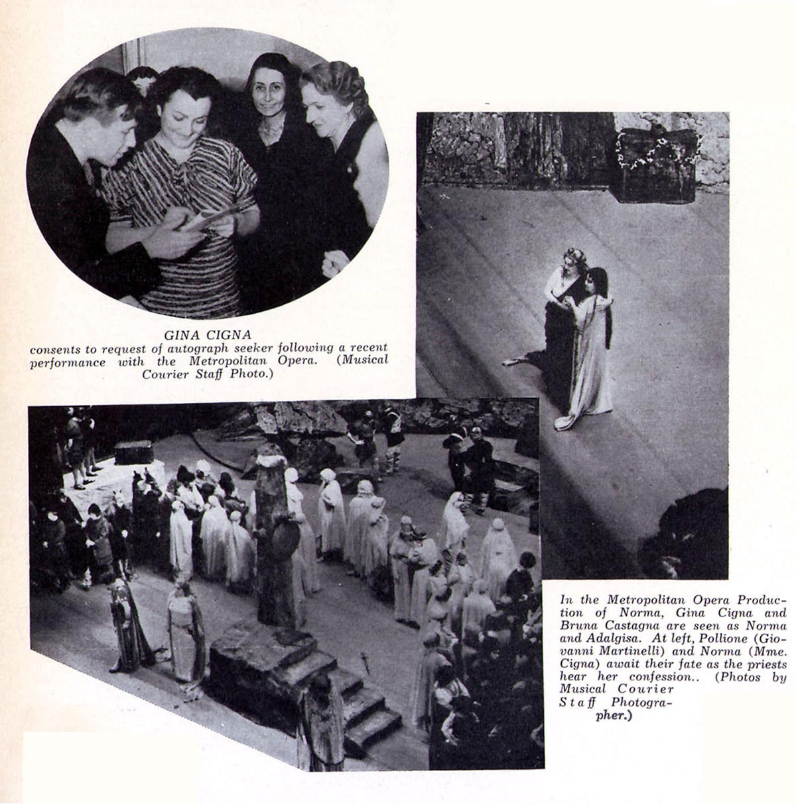
Norma {39}
Metropolitan Opera House; 12/11/1937
|
[Met Concert/Gala] CID:122160
Gala Operatic Program/ The Bat {12}
Metropolitan Opera House; 12/12/1937
Debut: André Eglevsky |
[Met Performance] CID:122170
Aida {417}
Metropolitan Opera House; 12/13/1937
Debut: Nicola Moscona
Review |
[Met Performance] CID:122180
La Traviata {220}
American Academy of Music, Philadelphia, Pennsylvania; 12/14/1937
|
[Met Performance] CID:122190
Siegfried {176}
Metropolitan Opera House; 12/15/1937
Review |
[Met Performance] CID:122200
Roméo et Juliette {174}
Metropolitan Opera House; 12/16/1937
Review |
[Met Performance] CID:122210
Il Trovatore {200}
Metropolitan Opera House; 12/17/1937
Debut: Zinka Milanov
Reviews |
[Met Performance] CID:122220
Die Walküre {292}
Metropolitan Opera House; 12/18/1937
Broadcast
Review |
[Met Performance] CID:122230
La Traviata {221}
Metropolitan Opera House; 12/18/1937
|
[Met Concert/Gala] CID:122240
Grand Program
Metropolitan Opera House; 12/19/1937
|
[Met Performance] CID:122250
Der Rosenkavalier {58}
Metropolitan Opera House; 12/20/1937
|
[Met Performance] CID:122260
Tristan und Isolde {253}
American Academy of Music, Philadelphia, Pennsylvania; 12/21/1937
|
[Met Performance] CID:122270
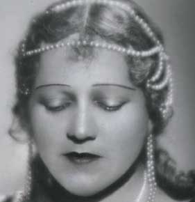
New production
Otello {55}
Metropolitan Opera House; 12/22/1937
Reviews |
[Met Performance] CID:122280
Tristan und Isolde {254}
Metropolitan Opera House; 12/23/1937
|
[Met Performance] CID:122290
Hänsel und Gretel {139}
The Bat {13}
Metropolitan Opera House; 12/24/1937
Broadcast |
[Met Performance] CID:122300
Norma {40}
Metropolitan Opera House; 12/24/1937
|
[Met Performance] CID:122310
Roméo et Juliette {175}
Metropolitan Opera House; 12/25/1937
Broadcast |
[Met Performance] CID:122320
Lohengrin {418}
Metropolitan Opera House; 12/25/1937
|
[Met Concert/Gala] CID:122330
Gala Operatic Program
Metropolitan Opera House; 12/26/1937
|
[Met Performance] CID:122340
Tannhäuser {297}
Metropolitan Opera House; 12/27/1937
|
[Met Performance] CID:122350
Aida {418}
Metropolitan Opera House; 12/28/1937
|
[Met Performance] CID:122360
Die Walküre {293}
Metropolitan Opera House; 12/29/1937
|
[Met Performance] CID:122370
La Bohème {324}
Metropolitan Opera House; 12/29/1937
|
[Met Performance] CID:122380
Otello {56}
Metropolitan Opera House; 12/30/1937
|
[Met Performance] CID:122390
Der Rosenkavalier {59}
Metropolitan Opera House; 12/31/1937
|
[Met Performance] CID:122400
Don Giovanni {93}
Metropolitan Opera House; 01/1/1938
Broadcast |
[Met Performance] CID:122410
Il Trovatore {201}
Metropolitan Opera House; 01/1/1938
|
[Met Concert/Gala] CID:122420
Special Holiday Program
Metropolitan Opera House; 01/2/1938
|
[Met Performance] CID:122430
Norma {41}
Metropolitan Opera House; 01/3/1938
|
[Met Performance] CID:122440
Tristan und Isolde {255}
Metropolitan Opera House; 01/4/1938
|
[Met Performance] CID:122450
Tannhäuser {298}
Metropolitan Opera House; 01/5/1938
|
[Met Performance] CID:122460
Carmen {353}
Metropolitan Opera House; 01/6/1938
|
[Met Performance] CID:122470
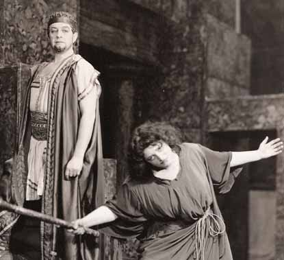
Gianni Schicchi {32}
Elektra {7}
Metropolitan Opera House; 01/7/1938
Debuts: James Demers, Rose Pauly
Reviews |
[Met Performance] CID:122480
Il Trovatore {202}
Metropolitan Opera House; 01/8/1938
Broadcast |
[Met Performance] CID:122490
Aida {419}
Metropolitan Opera House; 01/8/1938
|
[Met Concert/Gala] CID:122500
Gala Program
Metropolitan Opera House; 01/9/1938
|
[Met Performance] CID:122510
Die Walküre {294}
Metropolitan Opera House; 01/10/1938
|
[Met Performance] CID:122520
Otello {57}
American Academy of Music, Philadelphia, Pennsylvania; 01/11/1938
|
[Met Performance] CID:122530
Rigoletto {221}
Metropolitan Opera House; 01/12/1938
Debut: Bruno Landi
Review |
[Met Performance] CID:122540
Lohengrin {419}
Metropolitan Opera House; 01/13/1938
Review |
[Met Performance] CID:122550
Die Meistersinger von Nürnberg {215}
Metropolitan Opera House; 01/14/1938
|
[Met Performance] CID:122560
Roméo et Juliette {176}
Metropolitan Opera House; 01/14/1938
|
[Met Performance] CID:122570
La Bohème {325}
Metropolitan Opera House; 01/15/1938
Broadcast |
[Met Performance] CID:122580
Otello {58}
Metropolitan Opera House; 01/15/1938
|
[Met Concert/Gala] CID:122590
Grand Program
Metropolitan Opera House; 01/16/1938
|
[Met Performance] CID:122600
Don Giovanni {94}
Metropolitan Opera House; 01/17/1938
|
[Met Performance] CID:122610
Il Trovatore {203}
Newark, New Jersey; 01/18/1938
Review |
[Met Performance] CID:122620
Gianni Schicchi {33}
Elektra {8}
Metropolitan Opera House; 01/19/1938
Review |
[Met Performance] CID:122630
Siegfried {177}
Metropolitan Opera House; 01/20/1938
|
[Met Performance] CID:122640
Manon {130}
Metropolitan Opera House; 01/20/1938
Review |
[Met Performance] CID:122650
Die Walküre {295}
Metropolitan Opera House; 01/21/1938
Debut: Erich Leinsdorf
Reviews |
[Met Performance] CID:122660
Il Barbiere di Siviglia {154}
Metropolitan Opera House; 01/22/1938
Broadcast
Review |
[Met Performance] CID:122670
Cavalleria Rusticana {307}
Pagliacci {342}
Metropolitan Opera House; 01/22/1938
|
[Met Concert/Gala] CID:122680
Gala Program
Metropolitan Opera House; 01/23/1938
|
[Met Performance] CID:122690
La Traviata {222}
Metropolitan Opera House; 01/24/1938
Review |
[Met Performance] CID:122700
Gianni Schicchi {34}
Elektra {9}
American Academy of Music, Philadelphia, Pennsylvania; 01/25/1938
Review |
[Met Performance] CID:122710
Lohengrin {420}
Metropolitan Opera House; 01/26/1938
Review |
[Met Performance] CID:122720
Der Rosenkavalier {60}
Metropolitan Opera House; 01/27/1938
|
[Met Performance] CID:122730
Otello {59}
Metropolitan Opera House; 01/28/1938
|
[Met Performance] CID:122740
Lucia di Lammermoor {182}
Metropolitan Opera House; 01/28/1938
Review |
[Met Performance] CID:122750
Tristan und Isolde {256}
Metropolitan Opera House; 01/29/1938
Broadcast |
[Met Performance] CID:122760
Rigoletto {222}
Metropolitan Opera House; 01/29/1938
|
[Met Concert/Gala] CID:122770
Gala Operatic Program
Metropolitan Opera House; 01/30/1938
|
[Met Performance] CID:122780
Gianni Schicchi {35}
Elektra {10}
Metropolitan Opera House; 01/31/1938
|
[Met Performance] CID:122790
Aida {420}
Metropolitan Opera House; 02/2/1938
Review |
[Met Performance] CID:122800
Tannhäuser {299}
Metropolitan Opera House; 02/3/1938
Review |
[Met Performance] CID:122810
Le Coq d'Or {58}
Cavalleria Rusticana {308}
Metropolitan Opera House; 02/3/1938
Review |
[Met Performance] CID:122820
Metropolitan Opera Premiere (Apollon Musagètes)
Apollon Musagètes {1}
Salome {11}
Metropolitan Opera House; 02/4/1938
Debuts: Lillian Reilly, Stewart Chaney, Muriel King, Inc.
Review |
[Met Performance] CID:122830
Der Rosenkavalier {61}
Metropolitan Opera House; 02/5/1938
Broadcast |
[Met Performance] CID:122840
Otello {60}
Metropolitan Opera House; 02/5/1938
Review |
[Met Concert/Gala] CID:122850
Grand Program
Metropolitan Opera House; 02/6/1938
|
[Met Performance] CID:122860
Manon {131}
Metropolitan Opera House; 02/7/1938
Review |
[Met Performance] CID:122870
Tannhäuser {300}
Horace Bushnell Memorial Hall, Hartford, Connecticut; 02/8/1938
|
[Met Performance] CID:122880
Das Rheingold {78}
Ring Cycle [62] Uncut]
Metropolitan Opera House; 02/9/1938
Review |
[Met Performance] CID:122890
Don Giovanni {95}
Metropolitan Opera House; 02/9/1938
|
[Met Performance] CID:122900
La Bohème {326}
Metropolitan Opera House; 02/10/1938
Debut: Jan Kiepura
Reviews |
[Met Performance] CID:122910
Il Barbiere di Siviglia {155}
Metropolitan Opera House; 02/11/1938
|
[Met Performance] CID:122920
Die Meistersinger von Nürnberg {216}
Metropolitan Opera House; 02/11/1938
Review |
[Met Performance] CID:122930
Otello {61}
Metropolitan Opera House; 02/12/1938
Broadcast |
[Met Performance] CID:122940
Tannhäuser {301}
Metropolitan Opera House; 02/12/1938
|
[Met Concert/Gala] CID:122950
Operatic Program
Metropolitan Opera House; 02/13/1938
|
[Met Performance] CID:122960
Carmen {354}
Metropolitan Opera House; 02/14/1938
Review |
[Met Performance] CID:122970
Siegfried {178}
American Academy of Music, Philadelphia, Pennsylvania; 02/15/1938
Review |
[Met Performance] CID:122980
Rigoletto {223}
Metropolitan Opera House; 02/16/1938
Review |
[Met Performance] CID:122990
Apollon Musagètes {2}
Salome {12}
Metropolitan Opera House; 02/16/1938
Review |
[Met Performance] CID:123000
Die Walküre {296}
Ring Cycle [62] Uncut
Metropolitan Opera House; 02/17/1938
Debut: Enid Szánthó
Review |
[Met Performance] CID:123010
The Man Without a Country {5}
Metropolitan Opera House; 02/17/1938
|
[Met Performance] CID:123020
La Bohème {327}
Metropolitan Opera House; 02/18/1938
|
[Met Performance] CID:123030
Lohengrin {421}
Metropolitan Opera House; 02/19/1938
Broadcast |
[Met Performance] CID:123040
Faust {415}
Metropolitan Opera House; 02/19/1938
Review |
[Met Concert/Gala] CID:123050
Gala Operatic Program
Serenade {8}
Metropolitan Opera House; 02/20/1938
|
[Met Performance] CID:123060
Otello {62}
Metropolitan Opera House; 02/21/1938
|
[Met Performance] CID:123070
Tristan und Isolde {257}
Metropolitan Opera House; 02/22/1938
|
[Met Performance] CID:123080
Carmen {355}
Metropolitan Opera House; 02/23/1938
|
[Met Performance] CID:123090
Siegfried {179}
Ring Cycle [62] Uncut
Metropolitan Opera House; 02/24/1938
|
[Met Performance] CID:123100
La Traviata {223}
Metropolitan Opera House; 02/24/1938
Review |
[Met Performance] CID:123110
Rigoletto {224}
Metropolitan Opera House; 02/25/1938
|
[Met Performance] CID:123120
Aida {421}
Metropolitan Opera House; 02/26/1938
Broadcast
Review |
[Met Performance] CID:123130
Das Rheingold {79}
Ring Cycle [63]
Metropolitan Opera House; 02/26/1938
|
[Met Concert/Gala] CID:123140
Gala Program
Serenade {9}
Metropolitan Opera House; 02/27/1938
|
[Met Performance] CID:123150
Il Barbiere di Siviglia {156}
Metropolitan Opera House; 02/28/1938
Review |
[Met Performance] CID:123160
Götterdämmerung {131}
Ring Cycle [62] Uncut
Metropolitan Opera House; 03/1/1938
|
[Met Performance] CID:123170
La Traviata {224}
Metropolitan Opera House; 03/2/1938
|
[Met Performance] CID:123180
Metropolitan Opera Premiere (Amelia Goes to the Ball)
Amelia Goes to the Ball {1}
Elektra {11}
Metropolitan Opera House; 03/3/1938
Review |
[Met Performance] CID:123190
Il Barbiere di Siviglia {157}
Metropolitan Opera House; 03/4/1938
|
[Met Performance] CID:123200
Tristan und Isolde {258}
Metropolitan Opera House; 03/4/1938
|
[Met Performance] CID:123210
Rigoletto {225}
Metropolitan Opera House; 03/5/1938
Broadcast |
[Met Performance] CID:123220
Die Walküre {297}
Ring Cycle [63]
Metropolitan Opera House; 03/5/1938
|
[Met Concert/Gala] CID:123230
Gala Operatic Program/ The Bat {14}
Metropolitan Opera House; 03/6/1938
|
[Met Performance] CID:123240
Götterdämmerung {132}
Metropolitan Opera House; 03/7/1938
|
[Met Performance] CID:123250
Amelia Goes to the Ball {2}
Salome {13}
American Academy of Music, Philadelphia, Pennsylvania; 03/8/1938
|
[Met Performance] CID:123260
Die Meistersinger von Nürnberg {217}
Metropolitan Opera House; 03/9/1938
|
[Met Performance] CID:123270
Le Coq d'Or {59}
Amelia Goes to the Ball {3}
Metropolitan Opera House; 03/9/1938
|
[Met Performance] CID:123280
Il Barbiere di Siviglia {158}
Metropolitan Opera House; 03/10/1938
|
[Met Performance] CID:123290
Die Walküre {298}
Metropolitan Opera House; 03/10/1938
|
[Met Performance] CID:123300
Carmen {356}
Metropolitan Opera House; 03/11/1938
|
[Met Performance] CID:123310
Lucia di Lammermoor {183}
Metropolitan Opera House; 03/12/1938
Broadcast |
[Met Performance] CID:123320
Siegfried {180}
Ring Cycle [63]
Metropolitan Opera House; 03/12/1938
|
[Met Concert/Gala] CID:123330
Gala Program
Metropolitan Opera House; 03/13/1938
|
[Met Performance] CID:123340
Amelia Goes to the Ball {4}
Salome {14}
Metropolitan Opera House; 03/14/1938
|
[Met Performance] CID:123350
Don Giovanni {96}
American Academy of Music, Philadelphia, Pennsylvania; 03/15/1938
Review |
[Met Performance] CID:123360
Tristan und Isolde {259}
Metropolitan Opera House; 03/16/1938
|
[Met Performance] CID:123370
Don Giovanni {97}
Metropolitan Opera House; 03/17/1938
Review |
[Met Performance] CID:123380
Parsifal {136}
Metropolitan Opera House; 03/18/1938
Review |
[Met Performance] CID:123390
Otello {63}
Metropolitan Opera House; 03/18/1938
Review |
[Met Performance] CID:123400
Carmen {357}
Metropolitan Opera House; 03/19/1938
Broadcast |
[Met Performance] CID:123410
Götterdämmerung {133}
Ring Cycle [63]
Metropolitan Opera House; 03/19/1938
|
[Met Concert/Gala] CID:123420
Gala Performance
Metropolitan Opera House; 03/20/1938
Giovanni Martinelli's 25th Anniversary
Review |
[Met Performance] CID:123430
Tannhäuser {302}
Baltimore, Maryland; 03/21/1938
Debut: Hannah Moore |
[Met Performance] CID:123440
Otello {64}
Lyric Theater, Baltimore, Maryland; 03/22/1938
Review |
[Met Performance] CID:123450
Faust {416}
Lyric Theater, Baltimore, Maryland; 03/23/1938
Review |
[Met Performance] CID:123460
Otello {65}
Boston Opera House, Boston, Massachusetts; 03/24/1938
Review |
[Met Performance] CID:123470
Faust {417}
Boston Opera House, Boston, Massachusetts; 03/25/1938
|
[Met Performance] CID:123480
Tristan und Isolde {260}
Boston Opera House, Boston, Massachusetts; 03/25/1938
Review |
[Met Performance] CID:123490
Don Giovanni {98}
Boston Opera House, Boston, Massachusetts; 03/26/1938
Review |
[Met Performance] CID:123500
Carmen {358}
Boston Opera House, Boston, Massachusetts; 03/26/1938
|
[Met Performance] CID:123510
Parsifal {137}
Boston Opera House, Boston, Massachusetts; 03/28/1938
|
[Met Performance] CID:123520
La Bohème {328}
Boston Opera House, Boston, Massachusetts; 03/29/1938
Review |
[Met Performance] CID:123530
Die Walküre {299}
Boston Opera House, Boston, Massachusetts; 03/30/1938
Review |
[Met Performance] CID:123540
Il Barbiere di Siviglia {159}
Boston Opeera House, Boston, Massachusetts; 03/30/1938
|
[Met Performance] CID:123550
Der Rosenkavalier {62}
Boston Opera House, Boston, Massachusetts; 03/31/1938
Review |
[Met Performance] CID:123560
Roméo et Juliette {177}
Boston Opera House, Boston, Massachusetts; 04/1/1938
Review |
[Met Performance] CID:123570
Lohengrin {422}
Boston Opera House, Boston, Massachusetts; 04/2/1938
|
[Met Performance] CID:123580
Aida {422}
Boston Opera House, Boston, Massachusetts; 04/2/1938
Review |
[Met Performance] CID:123590
La Traviata {225}
Public Hall, Cleveland, Ohio; 04/4/1938
|
[Met Performance] CID:123600
Tristan und Isolde {261}
Public Hall, Cleveland, Ohio; 04/5/1938
Review |
[Met Performance] CID:123610
Cavalleria Rusticana {309}
The Bat {15}
Pagliacci {343}
Public Hall, Cleveland, Ohio; 04/6/1938
Review |
[Met Performance] CID:123620
Rigoletto {226}
Public Hall, Cleveland, Ohio; 04/7/1938
Debut: Amri Galli-Campi
Review
|
[Met Performance] CID:123630
Tannhäuser {303}
Public Hall, Cleveland, Ohio; 04/8/1938
|
[Met Performance] CID:123640
The Bartered Bride {50}
Public Hall, Cleveland, Ohio; 04/8/1938
|
[Met Performance] CID:123650
La Bohème {329}
Public Hall, Cleveland, Ohio; 04/9/1938
|
[Met Performance] CID:123660
Aida {423}
Public Hall, Cleveland, Ohio; 04/9/1938
|
[Met Performance] CID:123670
Aida {424}
Eastman Theatre, Rochester, New York; 04/11/1938
Review |
[Met Performance] CID:123680
Parsifal {138}
Metropolitan Opera House; 04/13/1938
|
[Met Performance] CID:123690
Parsifal {139}
Metropolitan Opera House; 04/15/1938
Broadcast |
[Met Performance] CID:123700
Tristan und Isolde {262}
Metropolitan Opera House; 4/16/1938
Broadcast |
[Met Performance] CID:124000
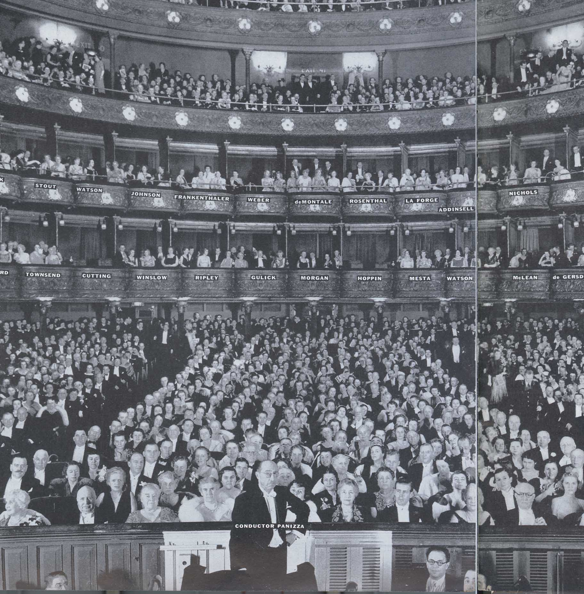
Otello {66}
Metropolitan Opera House; 11/21/1938
Opening Night {54}
Edward Johnson, General Manager
Debut: Maria Caniglia
Review |
[Met Performance] CID:124010
Der Rosenkavalier {63}
American Academy of Music, Philadelphia, Pennsylvania; 11/22/1938
Debuts: Risë Stevens, Sari Montague, Erich Witte
Review
A Risë Stevens Album |
[Met Performance] CID:124020
Die Walküre {300}
Metropolitan Opera House; 11/23/1938
Debut: Hans Hermann Nissen |
[Met Performance] CID:124030
Aida {425}
Metropolitan Opera House; 11/24/1938
Debuts: Maria Gambarelli, Boris Romanoff |
[Met Performance] CID:124040
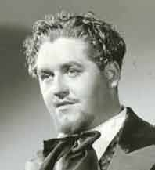
La Bohème {330}
Metropolitan Opera House; 11/24/1938
Debuts: Mafalda Favero, Marisa Morel, Jussi Björling
Reviews |
[Met Performance] CID:124050
La Traviata {226}
Metropolitan Opera House; 11/25/1938
Debut: Ruth Chanova
Review |
[Met Performance] CID:124060
New production
Orfeo ed Euridice {40}
Metropolitan Opera House; 11/26/1938
Debuts: Felia Dubrovska, Grant Mouradoff, Harry Horner, Frank Bevan
Broadcast
Review |
[Met Performance] CID:124070
Lohengrin {423}
Metropolitan Opera House; 11/26/1938
Review |
[Met Concert/Gala] CID:124080
Grand Program
Metropolitan Opera House; 11/27/1938
|
[Met Performance] CID:124090
Siegfried {181}
Metropolitan Opera House; 11/28/1938
Review |
[Met Performance] CID:124100
Aida {426}
American Academy of Music, Philadelphia, Pennsylvania; 11/29/1938
Reviews |
[Met Performance] CID:124110
La Bohème {331}
Metropolitan Opera House; 11/30/1938
|
[Met Performance] CID:124120
Tannhäuser {304}
Metropolitan Opera House; 12/1/1938
Debuts: George Chaffee, Doris Neal, Ruth Harris
Reviews |
[Met Performance] CID:124130
Tristan und Isolde {263}
Metropolitan Opera House; 12/2/1938
Review |
[Met Performance] CID:124140
Il Trovatore {204}
Metropolitan Opera House; 12/2/1938
Review |
[Met Performance] CID:124150
Otello {67}
Metropolitan Opera House; 12/3/1938
Debut: Alessio De Paolis
Broadcast |
[Met Performance] CID:124160
Rigoletto {227}
Metropolitan Opera House; 12/3/1938
Review |
[Met Concert/Gala] CID:124170
Gala Program
Metropolitan Opera House; 12/4/1938
|
[Met Performance] CID:124180
Orfeo ed Euridice {41}
Metropolitan Opera House; 12/5/1938
Review |
[Met Performance] CID:124190
Otello {68}
Horace Bushnell Memorial Hall, Hartford, Connecticut; 12/6/1938
|
[Met Performance] CID:124200
Lohengrin {424}
Metropolitan Opera House; 12/7/1938
Review |
[Met Performance] CID:124210
Manon {132}
Metropolitan Opera House; 12/8/1938
|
[Met Performance] CID:124220
Lohengrin {425}
Metropolitan Opera House; 12/9/1938
|
[Met Performance] CID:124230
Salome {15}
Pagliacci {344}
Metropolitan Opera House; 12/9/1938
|
[Met Performance] CID:124240
Siegfried {182}
Metropolitan Opera House; 12/10/1938
Broadcast |
[Met Performance] CID:124250
Il Trovatore {205}
Metropolitan Opera House; 12/10/1938
|
[Met Concert/Gala] CID:124260
Gala Program
Metropolitan Opera House; 12/11/1938
|
[Met Performance] CID:124270
Götterdämmerung {134}
Metropolitan Opera House; 12/12/1938
Review |
[Met Performance] CID:124280
Manon {133}
American Academy of Music, Philadelphia, Pennsylvania; 12/13/1938
Review |
[Met Performance] CID:124290
Lucia di Lammermoor {184}
Metropolitan Opera House; 12/14/1938
Debut: Galliano Masini
Review |
[Met Performance] CID:124300
Tristan und Isolde {264}
Metropolitan Opera House; 12/15/1938
|
[Met Performance] CID:124310
Falstaff {55}
Metropolitan Opera House; 12/16/1938
Reviews |
[Met Performance] CID:124320
Orfeo ed Euridice {42}
Metropolitan Opera House; 12/16/1938
|
[Met Performance] CID:124330
Mignon {75}
Metropolitan Opera House; 12/17/1938
Broadcast
Review |
[Met Performance] CID:124340
Aida {427}
Metropolitan Opera House; 12/17/1938
|
[Met Concert/Gala] CID:124350
Grand Sunday Night Program
Metropolitan Opera House; 12/18/1938
|
[Met Performance] CID:124360
Der Rosenkavalier {64}
Metropolitan Opera House; 12/19/1938
Review |
[Met Performance] CID:124370
Die Walküre {301}
Metropolitan Opera House; 12/20/1938
|
[Met Performance] CID:124380
Orfeo ed Euridice {43}
Metropolitan Opera House; 12/21/1938
Review |
[Met Performance] CID:124390
Tannhäuser {305}
Metropolitan Opera House; 12/22/1938
|
[Met Performance] CID:124400
Tosca {239}
Metropolitan Opera House; 12/22/1938
Review |
[Met Performance] CID:124410
Tristan und Isolde {265}
Metropolitan Opera House; 12/23/1938
|
[Met Performance] CID:124420
Lucia di Lammermoor {185}
Metropolitan Opera House; 12/24/1938
Broadcast
Review |
[Met Performance] CID:124430
Manon {134}
Metropolitan Opera House; 12/24/1938
|
[Met Concert/Gala] CID:124440
Grand Sunday Night Program
Metropolitan Opera House; 12/25/1938
|
[Met Performance] CID:124450
Hänsel und Gretel {140}
Pagliacci {345}
Metropolitan Opera House; 12/26/1938
Broadcast |
[Met Performance] CID:124460
Falstaff {56}
Metropolitan Opera House; 12/26/1938
|
[Met Performance] CID:124470
Tosca {240}
American Academy of Music, Philadelphia, Pennsylvania; 12/27/1938
|
[Met Performance] CID:124480
Siegfried {183}
Metropolitan Opera House; 12/28/1938
|
[Met Performance] CID:124490
Mignon {76}
Metropolitan Opera House; 12/28/1938
|
[Met Performance] CID:124500
Aida {428}
Metropolitan Opera House; 12/29/1938
Review |
[Met Performance] CID:124510
Lakmé {37}
Metropolitan Opera House; 12/30/1938
Review |
[Met Performance] CID:124520
Fidelio {61}
Metropolitan Opera House; 12/31/1938
Broadcast
Review |
[Met Performance] CID:124530
Otello {69}
Metropolitan Opera House; 12/31/1938
|
[Met Concert/Gala] CID:124540
All Wagner Program
Metropolitan Opera House; 01/1/1939
|
[Met Performance] CID:124550
Tosca {241}
Metropolitan Opera House; 01/2/1939
|
[Met Performance] CID:124560
Salome {16}
Cavalleria Rusticana {310}
Metropolitan Opera House; 01/2/1939
|
[Met Performance] CID:124570
Das Rheingold {80}
Ring Cycle [64]
American Academy of Music, Philadelphia, Pennsylvania; 01/3/1939
Review |
[Met Performance] CID:124580
Tannhäuser {306}
Metropolitan Opera House; 01/4/1939
|
[Met Performance] CID:124590
Don Giovanni {99}
Metropolitan Opera House; 01/5/1939
Review |
[Met Performance] CID:124600
Tristan und Isolde {266}
Metropolitan Opera House; 01/6/1939
|
[Met Performance] CID:124610
Aida {429}
Metropolitan Opera House; 01/6/1939
|
[Met Performance] CID:124620
Der Rosenkavalier {65}
Metropolitan Opera House; 01/7/1939
Broadcast |
[Met Performance] CID:124630
Falstaff {57}
Metropolitan Opera House; 01/7/1939
Review |
[Met Concert/Gala] CID:124640
Gala Program
Metropolitan Opera House; 01/8/1939
|
[Met Performance] CID:124650
Lucia di Lammermoor {186}
Metropolitan Opera House; 01/9/1939
|
[Met Performance] CID:124660
Die Walküre {302}
Ring Cycle [64]
American Academy of Music, Philadelphia, Pennsylvania; 01/10/1939
Review |
[Met Performance] CID:124670
Elektra {12}
Amelia Goes to the Ball {5}
Metropolitan Opera House; 01/11/1939
Review |
[Met Performance] CID:124680
Fidelio {62}
Metropolitan Opera House; 01/12/1939
|
[Met Performance] CID:124690
Simon Boccanegra {17}
Metropolitan Opera House; 01/13/1939
Debut: Leonard Warren
Review |
[Met Performance] CID:124700
Don Giovanni {100}
Metropolitan Opera House; 01/14/1939
Broadcast |
[Met Performance] CID:124710
Lakmé {38}
Metropolitan Opera House; 01/14/1939
|
[Met Concert/Gala] CID:124720
Gala Program
Metropolitan Opera House; 01/15/1939
|
[Met Performance] CID:124730
Tristan und Isolde {267}
Metropolitan Opera House; 01/16/1939
Debut: Herbert Alsen
Review |
[Met Performance] CID:124740
Il Barbiere di Siviglia {160}
Metropolitan Opera House; 01/17/1939
Review |
[Met Performance] CID:124750
Tannhäuser {307}
Metropolitan Opera House; 01/18/1939
|
[Met Performance] CID:124760
Falstaff {58}
Metropolitan Opera House; 01/18/1939
|
[Met Performance] CID:124770
Elektra {13}
Amelia Goes to the Ball {6}
Metropolitan Opera House; 01/19/1939
|
[Met Performance] CID:124780
Fidelio {63}
Metropolitan Opera House; 01/20/1939
|
[Met Performance] CID:124790
Simon Boccanegra {18}
Metropolitan Opera House; 01/21/1939
Broadcast |
[Met Performance] CID:124800
Cavalleria Rusticana {311}
Pagliacci {346}
Metropolitan Opera House; 01/21/1939
|
[Met Concert/Gala] CID:124810
Grand Operatic Program
Metropolitan Opera House; 01/22/1939
|
[Met Performance] CID:124820
Aida {430}
Metropolitan Opera House; 01/23/1939
Review |
[Met Performance] CID:124830
Siegfried {184}
Ring Cycle [64]
American Academy of Music, Philadelphia, Pennsylvania; 01/24/1939
Debut: Herbert Janssen
Review |
[Met Performance] CID:124840
Der Rosenkavalier {66}
Metropolitan Opera House; 01/25/1939
|
[Met Performance] CID:124850
Orfeo ed Euridice {44}
Metropolitan Opera House; 01/26/1939
|
[Met Performance] CID:124860
Die Walküre {303}
Metropolitan Opera House; 01/27/1939
|
[Met Performance] CID:124870
Tosca {242}
Metropolitan Opera House; 01/27/1939
|
[Met Performance] CID:124880
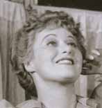
Louise {24}
Metropolitan Opera House; 01/28/1939
Broadcast
Review |
[Met Performance] CID:124890
Tannhäuser {308}
Metropolitan Opera House; 01/28/1939
Review |
[Met Concert/Gala] CID:124900
Gala Program
Metropolitan Opera House; 01/29/1939
|
[Met Performance] CID:124910
Amelia Goes to the Ball {7}
Elektra {14}
Metropolitan Opera House; 01/30/1939
|
[Met Performance] CID:124920
Götterdämmerung {135}
Ring Cycle [64]
American Academy of Music, Philadelphia, Pennsylvania; 01/31/1939
Review |
[Met Performance] CID:124930
Louise {25}
Metropolitan Opera House; 02/1/1939
|
[Met Performance] CID:124940
Lucia di Lammermoor {187}
Metropolitan Opera House; 02/2/1939
Debut: Lina Aimaro
Review |
[Met Performance] CID:124950
Tannhäuser {309}
Metropolitan Opera House; 02/3/1939
Review |
[Met Performance] CID:124960
Mignon {77}
Metropolitan Opera House; 02/3/1939
|
[Met Performance] CID:124970
Aida {431}
Metropolitan Opera House; 02/4/1939
Broadcast |
[Met Performance] CID:124980
La Traviata {227}
Metropolitan Opera House; 02/4/1939
|
[Met Concert/Gala] CID:124990
Gala Program
Metropolitan Opera House; 02/5/1939
|
[Met Performance] CID:125000
Louise {26}
Metropolitan Opera House; 02/6/1939
|
[Met Performance] CID:125010
Die Meistersinger von Nürnberg {218}
Horace Bushnell Memorial Hall, Hartford, Connecticut; 02/7/1939
|
[Met Performance] CID:125020
Il Barbiere di Siviglia {161}
The Mosque, Newark, New Jersey; 02/7/1939
Review |
[Met Performance] CID:125030
Rigoletto {228}
Metropolitan Opera House; 02/8/1939
Review |
[Met Performance] CID:125040
Das Rheingold {81}
Ring Cycle [65] Uncut
Metropolitan Opera House; 02/9/1939
Review |
[Met Performance] CID:125050
Otello {70}
Metropolitan Opera House; 02/9/1939
Review |
[Met Performance] CID:125060
La Bohème {332}
Metropolitan Opera House; 02/10/1939
Review |
[Met Performance] CID:125070
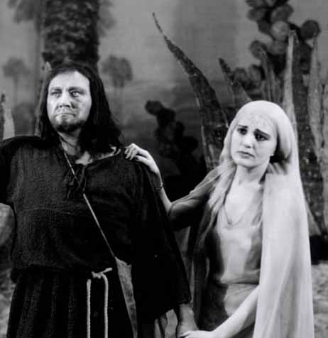
Thaïs {40}
Metropolitan Opera House; 02/10/1939
Review |
[Met Performance] CID:125080
Il Barbiere di Siviglia {162}
Metropolitan Opera House; 02/11/1939
Broadcast |
[Met Performance] CID:125090
Aida {432}
Metropolitan Opera House; 02/11/1939
Debut: Douglas Beattie
Review |
[Met Concert/Gala] CID:125100
Gala Operatic Program
Metropolitan Opera House; 02/12/1939
|
[Met Performance] CID:125110
Lohengrin {426}
Metropolitan Opera House; 02/13/1939
Review |
[Met Performance] CID:125120
Louise {27}
American Academy of Music, Philadelphia, Pennsylvania; 02/14/1939
Review |
[Met Performance] CID:125130
Manon {135}
Metropolitan Opera House; 02/15/1939
Review |
[Met Performance] CID:125140
Die Walküre {304}
Ring Cycle [65] Uncut
Metropolitan Opera House; 02/16/1939
Review |
[Met Performance] CID:125150
Salome {17}
Pagliacci {347}
Metropolitan Opera House; 02/16/1939
Review |
[Met Performance] CID:125160
Lohengrin {427}
Metropolitan Opera House; 02/17/1939
|
[Met Performance] CID:125170
Louise {28}
Metropolitan Opera House; 02/17/1939
|
[Met Performance] CID:125180
Tristan und Isolde {268}
Metropolitan Opera House; 02/18/1939
Broadcast |
[Met Performance] CID:125190
Das Rheingold {82}
Ring Cycle [66]
Metropolitan Opera House; 02/18/1939
|
[Met Concert/Gala] CID:125200
Gala Program
Metropolitan Opera House; 02/19/1939
|
[Met Performance] CID:125210
La Bohème {333}
Metropolitan Opera House; 02/20/1939
|
[Met Performance] CID:125220
Siegfried {185}
Ring Cycle [65] Uncut
Metropolitan Opera House; 02/22/1939
Review |
[Met Performance] CID:125230
Il Barbiere di Siviglia {163}
Metropolitan Opera House; 02/22/1939
|
[Met Performance] CID:125240
Louise {29}
Metropolitan Opera House; 02/23/1939
|
[Met Performance] CID:125250
Thaïs {41}
Metropolitan Opera House; 02/24/1939
|
[Met Performance] CID:125260
Tannhäuser {310}
Metropolitan Opera House; 02/24/1939
|
[Met Performance] CID:125270
Manon {136}
Metropolitan Opera House; 02/25/1939
Broadcast |
[Met Performance] CID:125280
Die Walküre {305}
Ring Cycle [66]
Metropolitan Opera House; 02/25/1939
|
[Met Concert/Gala] CID:125290
Gala Program
Metropolitan Opera House; 02/26/1939
|
[Met Performance] CID:125300
Die Meistersinger von Nürnberg {219}
Metropolitan Opera House; 02/27/1939
Review |
[Met Performance] CID:125310
Il Barbiere di Siviglia {164}
American Academy of Music, Philadelphia, Pennsylvania; 02/28/1939
Review |
[Met Performance] CID:125320
Tristan und Isolde {269}
Metropolitan Opera House; 03/1/1939
|
[Met Performance] CID:125330
Thaïs {42}
Metropolitan Opera House; 03/2/1939
|
[Met Performance] CID:125340
Götterdämmerung {136}
Ring Cycle [65] Uncut
Metropolitan Opera House; 03/3/1939
Review |
[Met Performance] CID:125350
La Bohème {334}
Metropolitan Opera House; 03/3/1939
|
[Met Performance] CID:125360
Il Trovatore {206}
Metropolitan Opera House; 03/4/1939
Broadcast |
[Met Performance] CID:125370
Siegfried {186}
Ring Cycle [66]
Metropolitan Opera House; 03/4/1939
|
[Met Concert/Gala] CID:125380
Gala Program
Metropolitan Opera House; 03/5/1939
|
[Met Performance] CID:125390
Thaïs {43}
Metropolitan Opera House; 03/6/1939
|
[Met Performance] CID:125400
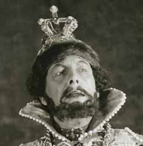
Boris Godunov {88}
Metropolitan Opera House; 03/7/1939
Reviews |
[Met Performance] CID:125410
Parsifal {140}
Metropolitan Opera House; 03/8/1939
Review |
[Met Performance] CID:125420
Tosca {243}
Metropolitan Opera House; 03/8/1939
|
[Met Performance] CID:125430
Lohengrin {428}
Metropolitan Opera House; 03/9/1939
|
[Met Performance] CID:125440
Lohengrin {429}
Metropolitan Opera House; 03/10/1939
|
[Met Performance] CID:125450
Boris Godunov {89}
Metropolitan Opera House; 03/10/1939
|
[Met Performance] CID:125460
Rigoletto {229}
Metropolitan Opera House; 03/11/1939
Broadcast |
[Met Performance] CID:125470
Götterdämmerung {137}
Ring Cycle [66]
Metropolitan Opera House; 03/11/1939
|
[Met Concert/Gala] CID:125480
Gala Program
Metropolitan Opera House; 03/12/1939
|
[Met Performance] CID:125490
Tosca {244}
Baltimore, Maryland; 03/13/1939
|
[Met Performance] CID:125500
Die Walküre {306}
Baltimore, Maryland; 03/14/1939
|
[Met Performance] CID:125510
Thaïs {44}
Baltimore, Maryland; 03/15/1939
|
[Met Performance] CID:125520
Falstaff {59}
Boston, Massachusetts; 03/16/1939
|
[Met Performance] CID:125530
Tristan und Isolde {270}
Boston, Massachusetts; 03/17/1939
|
[Met Performance] CID:125540
La Bohème {335}
Boston, Massachusetts; 03/18/1939
|
[Met Performance] CID:125550
Lohengrin {430}
Boston, Massachusetts; 03/18/1939
|
[Met Performance] CID:125560
Die Walküre {307}
Boston, Massachusetts; 03/20/1939
|
[Met Performance] CID:125570
Louise {30}
Boston, Massachusetts; 03/21/1939
|
[Met Performance] CID:125580
Tristan und Isolde {271}
Boston, Massachusetts; 03/22/1939
|
[Met Performance] CID:125590
Aida {433}
Boston, Massachusetts; 03/22/1939
|
[Met Performance] CID:125600
Die Meistersinger von Nürnberg {220}
Boston, Massachusetts; 03/23/1939
|
[Met Performance] CID:125610
Thaïs {45}
Boston, Massachusetts; 03/24/1939
|
[Met Performance] CID:125620
Tannhäuser {311}
Boston, Massachusetts; 03/25/1939
Broadcast |
[Met Performance] CID:125630
Rigoletto {230}
Boston, Massachusetts; 03/25/1939
|
[Met Performance] CID:125640
Otello {71}
Public Auditorium, Cleveland, Ohio; 03/27/1939
|
[Met Performance] CID:125650
Louise {31}
Public Auditorium, Cleveland, Ohio; 03/28/1939
|
[Met Performance] CID:125660
Die Walküre {308}
Public Auditorium, Cleveland, Ohio; 03/29/1939
|
[Met Performance] CID:125670
Thaïs {46}
Public Auditorium, Cleveland, Ohio; 03/30/1939
|
[Met Performance] CID:125680
Manon {137}
Public Auditorium, Cleveland, Ohio; 03/31/1939
|
[Met Performance] CID:125690
Lohengrin {431}
Public Auditorium, Cleveland, Ohio; 03/31/1939
|
[Met Performance] CID:125700
Tosca {245}
Public Auditorium, Cleveland, Ohio; 04/1/1939
|
[Met Performance] CID:125710
Lucia di Lammermoor {188}
Public Auditorium, Cleveland, Ohio; 04/1/1939
|
[Met Performance] CID:125720
Manon {138}
Eastman Theatre, Rochester, New York; 04/3/1939
|
[Met Performance] CID:125730
Carmen {359}
Metropolitan Opera House; 04/4/1939
|
[Met Performance] CID:125740
Parsifal {141}
Metropolitan Opera House; 04/5/1939
|
[Met Performance] CID:125750
La Bohème {336}
Metropolitan Opera House; 04/6/1939
|
[Met Performance] CID:125760
Parsifal {142}
Metropolitan Opera House; 04/7/1939
|
[Met Performance] CID:125770
Tristan und Isolde {272}
Metropolitan Opera House; 04/8/1939
Broadcast |
[Met Performance] CID:125780
Manon {139}
Fair Park Auditorium, Dallas, Texas; 04/10/1939
|
[Met Performance] CID:125790
Otello {72}
Fair Park Auditorium, Dallas, Texas; 04/11/1939
|
[Met Performance] CID:125800
Tannhäuser {312}
Fair Park Auditorium, Dallas, Texas; 04/12/1939
Review |
[Met Performance] CID:125810
La Bohème {337}
Fair Park Auditorium, Dallas, Texas; 04/12/1939
Review |
[Met Performance] CID:125820
Aida {434}
New Orleans, Louisiana; 04/13/1939
|
[Met Performance] CID:125830
La Bohème {338}
New Orleans, Louisiana; 04/14/1939
|
[Met Performance] CID:125840
Carmen {360}
New Orleans, Louisiana; 04/15/1939
Review |
[Met Performance] CID:125850
Lohengrin {432}
New Orleans, Louisiana; 04/15/1939
|
[Met Performance] CID:125860
Lohengrin {433}
Metropolitan Opera House; 05/2/1939
New York World's Fair Season
Review |
[Met Performance] CID:125870
Die Meistersinger von Nürnberg {221}
Metropolitan Opera House; 05/4/1939
New York World's Fair Season
Broadcast (Partial)
Review |
[Met Performance] CID:125880
Das Rheingold {83}
Ring Cycle [67]
Metropolitan Opera House; 05/6/1939
New York World's Fair Season |
[Met Performance] CID:125890
Die Walküre {309}
Ring Cycle [67]
Metropolitan Opera House; 05/8/1939
New York World's Fair Season |
[Met Performance] CID:125900
Siegfried {187}
Ring Cycle [67]
Metropolitan Opera House; 05/10/1939
New York World's Fair Season |
[Met Performance] CID:125910
Götterdämmerung {138}
Ring Cycle [67]
Metropolitan Opera House; 05/12/1939
New York World's Fair Season
Broadcast (Prologue only) |
[Met Performance] CID:125920
Tristan und Isolde {273}
Metropolitan Opera House; 05/15/1939
New York World's Fair Season |
[Met Performance] CID:125930
Parsifal {143}
Metropolitan Opera House; 05/17/1939
New York World's Fair Season |
[Met Performance] CID:125940
Tristan und Isolde {274}
Metropolitan Opera House; 5/23/1939
New York World's Fair Season |
[Met Performance] CID:127000
Simon Boccanegra {19}
Metropolitan Opera House; 11/27/1939
Opening Night {55}
Edward Johnson, General Manager
Review |
[Met Performance] CID:127010
Boris Godunov {90}
Academy of Music, Philadelphia, Pennsylvania; 11/28/1939
Review |
[Met Performance] CID:127020
Orfeo ed Euridice {45}
Metropolitan Opera House; 11/29/1939
Debut: Annamary Dickey
Review |
[Met Performance] CID:127030
Mignon {78}
Metropolitan Opera House; 11/30/1939
Review |
[Met Performance] CID:127040
Tannhäuser {313}
Metropolitan Opera House; 12/1/1939
Review |
[Met Performance] CID:127050
Boris Godunov {91}
Metropolitan Opera House; 12/1/1939
Review |
[Met Performance] CID:127060
Die Meistersinger von Nürnberg {222}
Metropolitan Opera House; 12/2/1939
Broadcast
Debut: Walter Olitzki
Review |
[Met Performance] CID:127070
Aida {435}
Metropolitan Opera House; 12/2/1939
Review |
[Met Concert/Gala] CID:127080
Grand Sunday Night Program
Metropolitan Opera House; 12/3/1939
|
[Met Performance] CID:127090
Der Rosenkavalier {67}
Metropolitan Opera House; 12/4/1939
Debut: John Carter
Review |
[Met Performance] CID:127100
Die Walküre {310}
Metropolitan Opera House; 12/6/1939
Debut: Eyvind Laholm
Review |
[Met Performance] CID:127110
Parsifal {144}
Metropolitan Opera House; 12/7/1939
|
[Met Performance] CID:127120
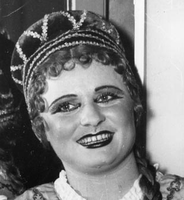
Rigoletto {231}
Metropolitan Opera House; 12/7/1939
Debut: Hilde Reggiani
Review |
[Met Performance] CID:127130
Die Meistersinger von Nürnberg {223}
Metropolitan Opera House; 12/8/1939
Review |
[Met Performance] CID:127140
Boris Godunov {92}
Metropolitan Opera House; 12/9/1939
Broadcast |
[Met Performance] CID:127150
La Traviata {228}
Metropolitan Opera House; 12/9/1939
|
[Met Concert/Gala] CID:127160
Grand Sunday Night Program
Metropolitan Opera House; 12/10/1939
|
[Met Performance] CID:127170
Aida {436}
Metropolitan Opera House; 12/11/1939
|
[Met Performance] CID:127180
Orfeo ed Euridice {46}
American Academy of Music, Philadelphia, Pennsylvania; 12/12/1939
Review |
[Met Performance] CID:127190
Manon {140}
Metropolitan Opera House; 12/13/1939
Review |
[Met Performance] CID:127200
Der Fliegende Holländer {41}
Metropolitan Opera House; 12/14/1939
Review |
[Met Performance] CID:127210
Faust {418}
Metropolitan Opera House; 12/15/1939
|
[Met Performance] CID:127220
Lucia di Lammermoor {189}
Metropolitan Opera House; 12/15/1939
Review |
[Met Performance] CID:127230
Tannhäuser {314}
Metropolitan Opera House; 12/16/1939
Broadcast
Debut: Mack Harrell
Review |
[Met Performance] CID:127240
Tosca {246}
Metropolitan Opera House; 12/16/1939
Review |
[Met Concert/Gala] CID:127250
Grand Sunday Night Program
Metropolitan Opera House; 12/17/1939
|
[Met Performance] CID:127260
Boris Godunov {93}
Metropolitan Opera House; 12/18/1939
|
[Met Performance] CID:127270
Tosca {247}
Mosque Theater, Newark, New Jersey; 12/19/1939
Review |
[Met Performance] CID:127280
Simon Boccanegra {20}
Metropolitan Opera House; 12/20/1939
|
[Met Performance] CID:127290
Tristan und Isolde {275}
Metropolitan Opera House; 12/21/1939
Review |
[Met Performance] CID:127300
Il Barbiere di Siviglia {165}
Metropolitan Opera House; 12/21/1939
Review |
[Met Performance] CID:127310
Der Fliegende Holländer {42}
Metropolitan Opera House; 12/22/1939
Review |
[Met Performance] CID:127320
La Traviata {229}
Metropolitan Opera House; 12/23/1939
Broadcast |
[Met Performance] CID:127330
Die Meistersinger von Nürnberg {224}
Metropolitan Opera House; 12/23/1939
Review |
[Met Performance] CID:127340
Rigoletto {232}
Metropolitan Opera House; 12/25/1939
Debut: Edith Herlick |
[Met Performance] CID:127350
Tristan und Isolde {276}
American Academy of Music, Philadelphia, Pennsylvania; 12/26/1939
Debut: Anthony Marlowe
Review |
[Met Performance] CID:127360
L'Amore dei Tre Re {57}
Metropolitan Opera House; 12/27/1939
Debut: Joseph Santoro
Review |
[Met Performance] CID:127370
Faust {419}
Metropolitan Opera House; 12/28/1939
Review |
[Met Performance] CID:127380
Die Walküre {311}
Metropolitan Opera House; 12/28/1939
Reviews |
[Met Performance] CID:127390
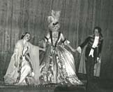
Der Rosenkavalier {68}
Metropolitan Opera House; 12/29/1939
Debut: Harriet Henders
Review |
[Met Performance] CID:127400
La Gioconda {137}
Metropolitan Opera House; 12/30/1939
Broadcast
Debuts: Rosa Rolland, Mary Sigler
Reviews |
[Met Performance] CID:127410
Mignon {79}
Metropolitan Opera House; 12/30/1939
|
[Met Concert/Gala] CID:127420
New Year's Eve Grand Operatic Program
Metropolitan Opera House; 12/31/1939
|
[Met Performance] CID:127430
Rigoletto {233}
Metropolitan Opera House; 01/1/1940
|
[Met Performance] CID:127440
Tristan und Isolde {277}
Metropolitan Opera House; 01/1/1940
Review |
[Met Performance] CID:127450
Faust {420}
American Academy of Music, Philadelphia, Pennsylvania; 01/2/1940
Review |
[Met Performance] CID:127460
Lohengrin {434}
Metropolitan Opera House; 01/3/1940
Review |
[Met Performance] CID:127470
L'Amore dei Tre Re {58}
Metropolitan Opera House; 01/4/1940
|
[Met Performance] CID:127480
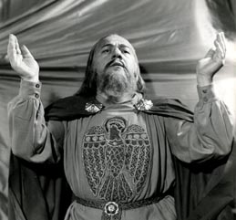
Parsifal {145}
Metropolitan Opera House; 01/5/1940
Debut: Alexander Kipnis
Reviews |
[Met Performance] CID:127490
La Bohème {339}
Metropolitan Opera House; 01/5/1940
Debut: Jarmila Novotna
Reviews |
[Met Performance] CID:127500
Lakmé {39}
Metropolitan Opera House; 01/6/1940
Broadcast
Review |
[Met Performance] CID:127510
Faust {421}
Metropolitan Opera House; 01/6/1940
|
[Met Concert/Gala] CID:127520
Grand Sunday Night Program
Metropolitan Opera House; 01/7/1940
|
[Met Performance] CID:127530
Der Fliegende Holländer {43}
Metropolitan Opera House; 01/8/1940
Review |
[Met Performance] CID:127540
Die Meistersinger von Nürnberg {225}
American Academy of Music, Philadelphia, Pennsylvania; 01/9/1940
Review |
[Met Performance] CID:127550
Boris Godunov {94}
Metropolitan Opera House; 01/10/1940
|
[Met Performance] CID:127560
Tristan und Isolde {278}
Metropolitan Opera House; 01/11/1940
|
[Met Performance] CID:127570
La Traviata {230}
Metropolitan Opera House; 01/11/1940
Review |
[Met Performance] CID:127580
La Gioconda {138}
Metropolitan Opera House; 01/12/1940
|
[Met Performance] CID:127590
Manon {141}
Metropolitan Opera House; 01/13/1940
Broadcast
Review |
[Met Performance] CID:127600
Lohengrin {435}
Metropolitan Opera House; 01/13/1940
Review |
[Met Concert/Gala] CID:127610
Gala Sunday Night Program
Metropolitan Opera House; 01/14/1940
|
[Met Performance] CID:127620
La Bohème {340}
Metropolitan Opera House; 01/15/1940
|
[Met Performance] CID:127630
Lakmé {40}
Metropolitan Opera House; 01/16/1940
|
[Met Performance] CID:127640
Die Meistersinger von Nürnberg {226}
Metropolitan Opera House; 01/17/1940
|
[Met Performance] CID:127650
Otello {73}
Metropolitan Opera House; 01/18/1940
Review |
[Met Performance] CID:127660
Aida {437}
Metropolitan Opera House; 01/19/1940
Broadcast |
[Met Performance] CID:127670
Die Walküre {312}
Metropolitan Opera House; 01/19/1940
|
[Met Performance] CID:127680
Orfeo ed Euridice {47}
Metropolitan Opera House; 01/20/1940
Broadcast |
[Met Performance] CID:127690
Louise {32}
Metropolitan Opera House; 01/20/1940
Debut: Reno Mabilli
Review |
[Met Concert/Gala] CID:127700
Sunday Night Gala Program
Metropolitan Opera House; 01/21/1940
|
[Met Performance] CID:127710
La Traviata {231}
Metropolitan Opera House; 01/22/1940
|
[Met Performance] CID:127720
La Gioconda {139}
American Academy of Music, Philadelphia, Pennsylvania; 01/23/1940
Review |
[Met Performance] CID:127730
Lakmé {41}
Metropolitan Opera House; 01/24/1940
|
[Met Performance] CID:127740
Götterdämmerung {139}
Metropolitan Opera House; 01/25/1940
Review |
[Met Performance] CID:127750
Mignon {80}
Metropolitan Opera House; 01/26/1940
Debut: Jean Dickenson
Review |
[Met Performance] CID:127760
Aida {438}
Metropolitan Opera House; 01/26/1940
Review |
[Met Performance] CID:127770
Lohengrin {436}
Metropolitan Opera House; 01/27/1940
Broadcast |
[Met Performance] CID:127780
La Bohème {341}
Metropolitan Opera House; 01/27/1940
|
[Met Concert/Gala] CID:127790
Grand Sunday Night Program
Metropolitan Opera House; 01/28/1940
|
[Met Performance] CID:127800
Die Walküre {313}
Metropolitan Opera House; 01/29/1940
|
[Met Performance] CID:127810
Lakmé {42}
American Academy of Music, Philadelphia, Pennsylvania; 01/30/1940
|
[Met Performance] CID:127820
Der Rosenkavalier {69}
Metropolitan Opera House; 01/31/1940
|
[Met Performance] CID:127830
Louise {33}
Metropolitan Opera House; 02/1/1940
|
[Met Performance] CID:127840
Das Rheingold {84}
Ring Cycle [68] Uncut
Metropolitan Opera House; 02/2/1940
|
[Met Performance] CID:127850
Manon {142}
Metropolitan Opera House; 02/2/1940
|
[Met Performance] CID:127860
Lucia di Lammermoor {190}
Metropolitan Opera House; 02/3/1940
Broadcast |
[Met Performance] CID:127870
Otello {74}
Metropolitan Opera House; 02/3/1940
|
[Met Concert/Gala] CID:127880
Grand Sunday Night Program
Metropolitan Opera House; 02/4/1940
|
[Met Performance] CID:127890
Orfeo ed Euridice {48}
Metropolitan Opera House; 02/5/1940
|
[Met Performance] CID:127900
Siegfried {188}
Horace Bushnell Memorial Hall, Hartford, Connecticut; 02/6/1940
|
[Met Performance] CID:127910
La Traviata {232}
Metropolitan Opera House; 02/7/1940
Review |
[Met Performance] CID:127920
Die Walküre {314}
Ring Cycle [68] Uncut
Metropolitan Opera House; 02/8/1940
Review |
[Met Performance] CID:127930
La Gioconda {140}
Metropolitan Opera House; 02/8/1940
|
[Met Performance] CID:127940
Tristan und Isolde {279}
Metropolitan Opera House; 02/9/1940
|
[Met Performance] CID:127950
Madama Butterfly {246}
Metropolitan Opera House; 02/9/1940
Debut: Licia Albanese
Reviews |
[Met Performance] CID:127960
La Bohème {342}
Metropolitan Opera House; 02/10/1940
Broadcast |
[Met Performance] CID:127970
Der Rosenkavalier {70}
Metropolitan Opera House; 02/10/1940
Review |
[Met Performance] CID:127980
Siegfried {189}
Ring Cycle [68] Uncut
Metropolitan Opera House; 02/12/1940
Review |
[Met Performance] CID:127990
Tosca {248}
Metropolitan Opera House; 02/12/1940
Review |
[Met Performance] CID:128000
La Bohème {343}
American Academy of Music, Philadelphia, Pennsylvania; 02/13/1940
Review |
[Met Performance] CID:128010
Louise {34}
Metropolitan Opera House; 02/14/1940
|
[Met Performance] CID:128020
Tannhäuser {315}
Metropolitan Opera House; 02/15/1940
Review |
[Met Performance] CID:128030
Il Barbiere di Siviglia {166}
Metropolitan Opera House; 02/16/1940
Review |
[Met Performance] CID:128040
Die Walküre {315}
Metropolitan Opera House; 02/17/1940
Broadcast |
[Met Performance] CID:128050
Madama Butterfly {247}
Metropolitan Opera House; 02/17/1940
|
[Met Concert/Gala] CID:128060
Grand Sunday Night Program
Metropolitan Opera House; 02/18/1940
|
[Met Performance] CID:128070
Götterdämmerung {140}
Ring Cycle [68] Uncut
Metropolitan Opera House; 02/19/1940
Review |
[Met Performance] CID:128080
Manon {143}
Metropolitan Opera House; 02/19/1940
Debut: Raoul Jobin
Review |
[Met Performance] CID:128090
New production
Le Nozze di Figaro {55}
Metropolitan Opera House; 02/20/1940
Debuts: Vonn Irkust, Ladislas Czettel
Review |
[Met Performance] CID:128100
Aida {439}
Metropolitan Opera House; 02/21/1940
Review |
[Met Performance] CID:128110
Parsifal {146}
Metropolitan Opera House; 02/22/1940
|
[Met Performance] CID:128120
La Bohème {344}
Metropolitan Opera House; 02/22/1940
Review |
[Met Performance] CID:128130
Lohengrin {437}
Metropolitan Opera House; 02/23/1940
Review |
[Met Performance] CID:128140
Otello {75}
Metropolitan Opera House; 02/24/1940
Broadcast |
[Met Performance] CID:128150
Das Rheingold {85}
Ring Cycle [69]
Metropolitan Opera House; 02/24/1940
|
[Met Concert/Gala] CID:128160
Gala Program
Metropolitan Opera House; 02/25/1940
|
[Met Performance] CID:128170
Le Nozze di Figaro {56}
Metropolitan Opera House; 02/26/1940
Review |
[Met Performance] CID:128180
La Traviata {233}
American Academy of Music, Philadelphia, Pennsylvania; 02/27/1940
Review |
[Met Performance] CID:128190
Die Meistersinger von Nürnberg {227}
Metropolitan Opera House; 02/28/1940
Review |
[Met Performance] CID:128200
Madama Butterfly {248}
Metropolitan Opera House; 02/28/1940
|
[Met Performance] CID:128210
Tristan und Isolde {280}
Metropolitan Opera House; 02/29/1940
Review |
[Met Performance] CID:128220
La Traviata {234}
Metropolitan Opera House; 03/1/1940
|
[Met Performance] CID:128230
Aida {440}
Metropolitan Opera House; 03/2/1940
Broadcast |
[Met Performance] CID:128240
Die Walküre {316}
Ring Cycle [69]
Metropolitan Opera House; 03/2/1940
|
[Met Concert/Gala] CID:128250
Gala Program
Metropolitan Opera House; 03/3/1940
|
[Met Performance] CID:128260
Lohengrin {438}
Metropolitan Opera House; 03/4/1940
|
[Met Performance] CID:128270
Il Barbiere di Siviglia {167}
Horace Bushnell Memorial Hall, Hartford, Connecticut; 03/5/1940
|
[Met Performance] CID:128280
Tristan und Isolde {281}
Metropolitan Opera House; 03/6/1940
|
[Met Performance] CID:128290
Pelléas et Mélisande {33}
Metropolitan Opera House; 03/7/1940
Debut: Georges Cathelat
Review |
[Met Performance] CID:128300
Faust {422}
Metropolitan Opera House; 03/8/1940
|
[Met Performance] CID:128310
Tannhäuser {316}
Metropolitan Opera House; 03/8/1940
Review |
[Met Performance] CID:128320
Le Nozze di Figaro {57}
Metropolitan Opera House; 03/9/1940
Broadcast |
[Met Performance] CID:128330
Siegfried {190}
Ring Cycle [69]
Metropolitan Opera House; 03/9/1940
|
[Met Concert/Gala] CID:128340
Gala Program
Metropolitan Opera House; 03/10/1940
Debuts: Julia Del Bar, Fyodor Nazinoff, Paul Sweeney |
[Met Concert/Gala] CID:128350
NBC Television Concert
New York, Manhattan, NBC Television Studio; 03/10/1940
Telecast |
[Met Performance] CID:128360
Madama Butterfly {249}
Metropolitan Opera House; 03/11/1940
Review |
[Met Performance] CID:128370
Der Fliegende Holländer {44}
Metropolitan Opera House; 03/12/1940
|
[Met Performance] CID:128380
Rigoletto {234}
Metropolitan Opera House; 03/12/1940
Review |
[Met Performance] CID:128390
Pelléas et Mélisande {34}
Metropolitan Opera House; 03/13/1940
Review |
[Met Performance] CID:128400
Lohengrin {439}
Metropolitan Opera House; 03/14/1940
|
[Met Performance] CID:128410
Carmen {361}
Metropolitan Opera House; 03/15/1940
Review |
[Met Performance] CID:128420
Tosca {249}
Metropolitan Opera House; 03/15/1940
Review |
[Met Performance] CID:128430
Faust {423}
Metropolitan Opera House; 03/16/1940
Broadcast |
[Met Performance] CID:128440
Götterdämmerung {141}
Ring Cycle [69]
Metropolitan Opera House; 03/16/1940
|
[Met Concert/Gala] CID:128450
Gala Program
Metropolitan Opera House; 03/17/1940
|
[Met Performance] CID:128460
Parsifal {147}
American Academy of Music, Philadelphia, Pennsylvania; 03/19/1940
Review |
[Met Performance] CID:128470
Parsifal {148}
Metropolitan Opera House; 03/20/1940
Reviews |
[Met Performance] CID:128480
Parsifal {149}
Metropolitan Opera House; 03/22/1940
Review |
[Met Performance] CID:128490
Tristan und Isolde {282}
Metropolitan Opera House; 03/23/1940
Broadcast |
[Met Performance] CID:128500
Il Barbiere di Siviglia {168}
Metropolitan Opera House; 03/23/1940
Review |
[Met Performance] CID:128510
Il Barbiere di Siviglia {169}
Lyric Theatre, Baltimore, Maryland; 03/25/1940
Review |
[Met Performance] CID:128520
Die Walküre {317}
Eastman Theater, Rochester, New York; 03/25/1940
Debut: Winifred Heidt
Review |
[Met Performance] CID:128530
Der Rosenkavalier {71}
Lyric Theatre, Baltimore, Maryland; 03/26/1940
Review |
[Met Performance] CID:128540
Lakmé {43}
Lyric Theatre, Baltimore, Maryland; 03/27/1940
Review |
[Met Performance] CID:128550
Der Rosenkavalier {72}
Boston Opera House, Boston, Massachusetts; 03/28/1940
Review |
[Met Performance] CID:128560
Lakmé {44}
Boston Opera House, Boston, Massachusetts; 03/29/1940
Review |
[Met Performance] CID:128570
Die Walküre {318}
Boston Opera House, Boston, Massachusetts; 03/30/1940
Broadcast |
[Met Performance] CID:128580
La Traviata {235}
Boston Opera House, Boston, Massachusetts; 03/30/1940
Review |
[Met Performance] CID:128590
Tristan und Isolde {283}
Boston Opera House, Boston, Massachusetts; 04/1/1940
Debut: Edwin McArthur
Review |
[Met Performance] CID:128600
La Gioconda {141}
Boston Opera House, Boston, Massachusetts; 04/2/1940
Review |
[Met Performance] CID:128610
Lohengrin {440}
Boston Opera House, Boston, Massachusetts; 04/3/1940
Review |
[Met Performance] CID:128620
Manon {144}
Boston Opera House, Boston, Massachusetts; 04/3/1940
Review |
[Met Performance] CID:128630
Boris Godunov {95}
Boston Opera House, Boston, Massachusetts; 04/4/1940
Review |
[Met Performance] CID:128640
Götterdämmerung {142}
Boston Opera House, Boston, Massachusetts; 04/5/1940
Reviews |
[Met Performance] CID:128650
Faust {424}
Boston Opera House, Boston, Massachusetts; 04/6/1940
Broadcast |
[Met Performance] CID:128660
Tosca {250}
Boston Opera House, Boston, Massachusetts; 04/6/1940
Review |
[Met Performance] CID:128670
Aida {441}
Public Hall, Cleveland, Ohio; 04/8/1940
Review |
[Met Performance] CID:128680
Tannhäuser {317}
Public Hall, Cleveland, Ohio; 04/9/1940
Review |
[Met Performance] CID:128690
La Bohème {345}
Public Hall, Cleveland, Ohio; 04/10/1940
Review |
[Met Performance] CID:128700
Carmen {362}
Public Hall, Cleveland, Ohio; 04/11/1940
Review |
[Met Performance] CID:128710
Madama Butterfly {250}
Public Hall, Cleveland, Ohio; 04/12/1940
Review |
[Met Performance] CID:128720
Tristan und Isolde {284}
Public Hall, Cleveland, Ohio; 04/12/1940
Review |
[Met Performance] CID:128730
La Traviata {236}
Public Hall, Cleveland, Ohio; 04/13/1940
Broadcast |
[Met Performance] CID:128740
La Gioconda {142}
Public Hall, Cleveland, Ohio; 04/13/1940
Review |
[Met Performance] CID:128750
Lakmé {45}
Fair Park Auditorium, Dallas, Texas; 04/15/1940
Review |
[Met Performance] CID:128760
Die Walküre {319}
Fair Park Auditorium, Dallas, Texas; 04/16/1940
Review |
[Met Performance] CID:128770
Faust {425}
Fair Park Auditorium, Dallas, Texas; 04/17/1940
Review |
[Met Performance] CID:128780
La Traviata {237}
Fair Park Auditorium, Dallas, Texas; 04/17/1940
Review |
[Met Performance] CID:128790
Rigoletto {235}
Municipal Auditorium, New Orleans, Louisiana; 04/18/1940
Review |
[Met Performance] CID:128800
Tannhäuser {318}
Municipal Auditorium, New Orleans, Louisiana; 04/19/1940
Review |
[Met Performance] CID:128810
Faust {426}
Municipal Auditorium, New Orleans, Louisiana; 04/20/1940
|
[Met Performance] CID:128820
Tosca {251}
Municipal Auditorium, New Orleans, Louisiana; 04/20/1940
|
[Met Performance] CID:128830
La Traviata {238}
Municipal Auditorium, Atlanta, Georgia; 04/22/1940
Review |
[Met Performance] CID:128840
La Bohème {346}
Municipal Auditorium, Atlanta, Georgia; 04/23/1940
|
[Met Performance] CID:128850
Tannhäuser {319}
Municipal Auditorium, Atlanta, Georgia; 04/24/1940
Review |
[Met Concert/Gala] CID:128860
Gala Concert
Metropolitan Opera House; 4/26/1940
|
[Met Performance] CID:130000
New production
Un Ballo in Maschera {23}
Metropolitan Opera House; 12/2/1940
Opening Night {56}
Edward Johnson, General Manager
Debuts: Alexander Sved, Mary Smith, Mstislav Dobujinsky
Reviews |
[Met Performance] CID:130010
Le Nozze di Figaro {58}
American Academy of Music, Philadelphia, Pennsylvania; 12/3/1940
Debuts: Salvatore Baccaloni, Julia Barashkova
Review |
[Met Performance] CID:130020
Die Walküre {320}
Metropolitan Opera House; 12/4/1940
Review |
[Met Performance] CID:130030
Madama Butterfly {251}
Metropolitan Opera House; 12/5/1940
Review |
[Met Performance] CID:130040
Samson et Dalila {66}
Metropolitan Opera House; 12/6/1940
Debuts: John Dudley, Arthur Kent, Emery Darcy, Ilona Murai
Review |
[Met Performance] CID:130050
Le Nozze di Figaro {59}
Metropolitan Opera House; 12/7/1940
First Broadcast sponsored by Texaco
Review |
[Met Performance] CID:130060
Der Rosenkavalier {73}
Metropolitan Opera House; 12/7/1940
Debut: Eleanor Steber, Maria Hussa
Review |
[Met Concert/Gala] CID:130070
Gala Program
Metropolitan Opera House; 12/8/1940
|
[Met Performance] CID:130080
Lucia di Lammermoor {191}
Metropolitan Opera House; 12/9/1940
Debut: Frank Valentino
Review |
[Met Performance] CID:130090
Die Walküre {321}
American Academy of Music, Philadelphia, Pennsylvania; 12/10/1940
Review |
[Met Performance] CID:130100
Louise {35}
Metropolitan Opera House; 12/11/1940
Review |
[Met Performance] CID:130110
Tristan und Isolde {285}
Metropolitan Opera House; 12/12/1940
Review |
[Met Performance] CID:130120
New production
Il Trovatore {207}
Metropolitan Opera House; 12/12/1940
Debuts: Norina Greco, Ferruccio Calusio, Mary Percy Schenck
Review |
[Met Performance] CID:130130
Le Nozze di Figaro {60}
Metropolitan Opera House; 12/13/1940
|
[Met Performance] CID:130140
Un Ballo in Maschera {24}
Metropolitan Opera House; 12/14/1940
Broadcast
Debut: Lilla Volkova |
[Met Performance] CID:130150
Lakmé {46}
Metropolitan Opera House; 12/14/1940
Review |
[Met Concert/Gala] CID:130160
Gala Program
Metropolitan Opera House; 12/15/1940
|
[Met Performance] CID:130170
Die Walküre {322}
Metropolitan Opera House; 12/16/1940
|
[Met Performance] CID:130180
Un Ballo in Maschera {25}
American Academy of Music, Philadelphia, Pennsylvania; 12/17/1940
Review |
[Met Performance] CID:130190
Carmen {363}
Metropolitan Opera House; 12/18/1940
|
[Met Performance] CID:130200
Der Rosenkavalier {74}
Metropolitan Opera House; 12/18/1940
Review |
[Met Performance] CID:130210
Tristan und Isolde {286}
Metropolitan Opera House; 12/19/1940
Review |
[Met Performance] CID:130220
Pelléas et Mélisande {35}
Metropolitan Opera House; 12/20/1940
Review |
[Met Performance] CID:130230
Don Pasquale {34}
Metropolitan Opera House; 12/21/1940
Broadcast
Review |
[Met Performance] CID:130240
Un Ballo in Maschera {26}
Metropolitan Opera House; 12/21/1940
|
[Met Concert/Gala] CID:130250
Gala Program
Metropolitan Opera House; 12/22/1940
|
[Met Performance] CID:130260
Louise {36}
Metropolitan Opera House; 12/23/1940
Review |
[Met Performance] CID:130270
Faust {427}
Metropolitan Opera House; 12/25/1940
Review |
[Met Performance] CID:130280
Le Nozze di Figaro {61}
Metropolitan Opera House; 12/26/1940
Review |
[Met Performance] CID:130290
Madama Butterfly {252}
Metropolitan Opera House; 12/27/1940
|
[Met Performance] CID:130300
Tristan und Isolde {287}
Metropolitan Opera House; 12/27/1940
|
[Met Performance] CID:130310
New production
La Fille du Régiment {27}
Metropolitan Opera House; 12/28/1940
Debut: Hortense Kessler
Broadcast
Reviews |
[Met Performance] CID:130320
Samson et Dalila {67}
Metropolitan Opera House; 12/28/1940
|
[Met Concert/Gala] CID:130330
Grand Sunday Night Program
Metropolitan Opera House; 12/29/1940
|
[Met Performance] CID:130340
Il Trovatore {208}
Metropolitan Opera House; 12/30/1940
Review |
[Met Performance] CID:130350
Lucia di Lammermoor {192}
Metropolitan Opera House; 12/31/1940
Review |
[Met Performance] CID:130360
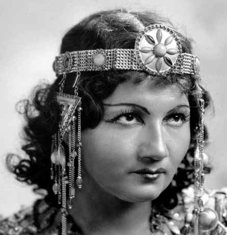
Aida {442}
Metropolitan Opera House; 01/1/1941
Debut: Stella Roman
Review |
[Met Performance] CID:130370
Die Walküre {323}
Metropolitan Opera House; 01/2/1941
Review |
[Met Performance] CID:130380
La Bohème {347}
Metropolitan Opera House; 01/3/1941
Review |
[Met Performance] CID:130390
Rigoletto {236}
Metropolitan Opera House; 01/3/1941
Review |
[Met Performance] CID:130400
Tannhäuser {320}
Metropolitan Opera House; 01/4/1941
Broadcast
Debut: Helen Longacre
Review |
[Met Performance] CID:130410
Don Pasquale {35}
Ballet Divertissement
Metropolitan Opera House; 01/4/1941
Review |
[Met Concert/Gala] CID:130420
Gala Program
Metropolitan Opera House; 01/5/1941
|
[Met Performance] CID:130430
La Fille du Régiment {28}
Metropolitan Opera House; 01/6/1941
|
[Met Performance] CID:130440
Louise {37}
American Academy of Music, Philadelphia, Pennsylvania; 01/7/1941
Review |
[Met Performance] CID:130450
Un Ballo in Maschera {27}
Metropolitan Opera House; 01/8/1941
|
[Met Performance] CID:130460
Cavalleria Rusticana {312}
Pagliacci {348}
Metropolitan Opera House; 01/9/1941
Review |
[Met Performance] CID:130470
Manon {145}
Metropolitan Opera House; 01/10/1941
Debut: May Savage
Review |
[Met Performance] CID:130480
Siegfried {191}
Metropolitan Opera House; 01/10/1941
Review |
[Met Performance] CID:130490
Il Trovatore {209}
Metropolitan Opera House; 01/11/1941
Broadcast |
[Met Performance] CID:130500
Le Nozze di Figaro {62}
Metropolitan Opera House; 01/11/1941
Review |
[Met Concert/Gala] CID:130510
Gala Program
Metropolitan Opera House; 01/12/1941
|
[Met Performance] CID:130520
Pelléas et Mélisande {36}
Metropolitan Opera House; 01/13/1941
Review |
[Met Performance] CID:130530
Der Rosenkavalier {75}
American Academy fo Music, Philadelphia, Pennsylvania; 01/14/1941
Debut: Margit Bokor
Review |
[Met Performance] CID:130540
Lakmé {47}
Metropolitan Opera House; 01/15/1941
|
[Met Performance] CID:130550
Aida {443}
Metropolitan Opera House; 01/16/1941
Review |
[Met Performance] CID:130560
Tannhäuser {321}
Metropolitan Opera House; 01/17/1941
Debut: Elsa Zebranska
Review |
[Met Performance] CID:130570
Otello {76}
Metropolitan Opera House; 01/18/1941
Broadcast
Review |
[Met Performance] CID:130580
Faust {428}
Metropolitan Opera House; 01/18/1941
Review |
[Met Concert/Gala] CID:130590
Gala Program
Metropolitan Opera House; 01/19/1941
|
[Met Performance] CID:130600
Siegfried {192}
Metropolitan Opera House; 01/20/1941
Review |
[Met Performance] CID:130610
La Fille du Régiment {29}
American Academy of Music, Philadelphia, Pennsylvania; 01/21/1941
Review |
[Met Performance] CID:130620
Tannhäuser {322}
Metropolitan Opera House; 01/22/1941
|
[Met Performance] CID:130630
Der Rosenkavalier {76}
Metropolitan Opera House; 01/23/1941
|
[Met Performance] CID:130640
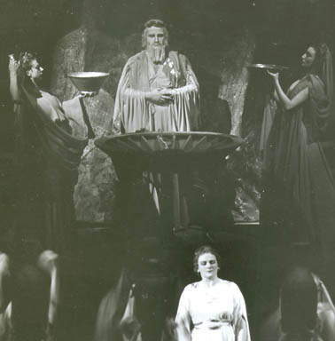
Metropolitan Opera Premiere
Alceste {1}
Metropolitan Opera House; 01/24/1941
Debut: Richard Rychtarik
Reviews |
[Met Performance] CID:130650
Madama Butterfly {253}
Metropolitan Opera House; 01/25/1941
Broadcast |
[Met Performance] CID:130660
La Fille du Régiment {30}
Ballet Divertissement
Metropolitan Opera House; 01/25/1941
|
[Met Concert/Gala] CID:130670
Gala Program
Metropolitan Opera House; 01/26/1941
|
[Met Performance] CID:130680
Faust {429}
Metropolitan Opera House; 01/27/1941
Review |
[Met Performance] CID:130690
Louise {38}
Metropolitan Opera House; 01/28/1941
Review |
[Met Performance] CID:130700
Götterdämmerung {143}
Metropolitan Opera House; 01/29/1941
Review |
[Met Performance] CID:130710
Alceste {2}
Metropolitan Opera House; 01/30/1941
Review |
[Met Performance] CID:130720
Lohengrin {441}
Metropolitan Opera House; 01/31/1941
Review |
[Met Performance] CID:130730
Don Pasquale {36}
Ballet Divertissement
Metropolitan Opera House; 01/31/1941
|
[Met Performance] CID:130740
Cavalleria Rusticana {313}
Pagliacci {349}
Metropolitan Opera House; 02/1/1941
Broadcast
Review |
[Met Performance] CID:130750
Carmen {364}
Metropolitan Opera House; 02/1/1941
|
[Met Performance] CID:130760
Otello {77}
Metropolitan Opera House; 02/3/1941
Review |
[Met Performance] CID:130770
Tristan und Isolde {288}
American Academy of Music, Philadelphia, Pennsylvania; 02/4/1941
Review |
[Met Performance] CID:130780
Le Nozze di Figaro {63}
Metropolitan Opera House; 02/5/1941
|
[Met Performance] CID:130790
Tannhäuser {323}
Metropolitan Opera House; 02/6/1941
|
[Met Performance] CID:130800
Das Rheingold {86}
Ring Cycle [70] Uncut
Metropolitan Opera House; 02/7/1941
Review |
[Met Performance] CID:130810
L'Amore dei Tre Re {59}
Metropolitan Opera House; 02/7/1941
Debut: Italo Montemezzi
Reviews |
[Met Performance] CID:130820
Tristan und Isolde {289}
Metropolitan Opera House; 02/8/1941
Broadcast |
[Met Performance] CID:130830
Rigoletto {237}
Metropolitan Opera House; 02/8/1941
Debut: Josephine Tuminia
Review |
[Met Performance] CID:130840
Alceste {3}
Metropolitan Opera House; 02/10/1941
Review |
[Met Performance] CID:130850
Louise {39}
Horace Bushnell Memorial Hall, Hartford, Connecticut; 02/11/1941
|
[Met Performance] CID:130860
Die Walküre {324}
Ring Cycle [70] Uncut
Metropolitan Opera House; 02/12/1941
|
[Met Performance] CID:130870
La Bohème {348}
Metropolitan Opera House; 02/12/1941
|
[Met Performance] CID:130880
Manon {146}
Metropolitan Opera House; 02/13/1941
|
[Met Performance] CID:130890
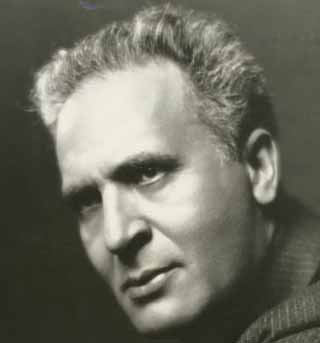
Fidelio {64}
Metropolitan Opera House; 02/14/1941
Debut: Bruno Walter
Reviews |
[Met Performance] CID:130900
L'Amore dei Tre Re {60}
Metropolitan Opera House; 02/15/1941
Broadcast |
[Met Performance] CID:130910
Madama Butterfly {254}
Metropolitan Opera House; 02/15/1941
|
[Met Concert/Gala] CID:130920
Grand Sunday Night Program
Metropolitan Opera House; 02/16/1941
|
[Met Performance] CID:130930
Tristan und Isolde {290}
Metropolitan Opera House; 02/17/1941
Review |
[Met Performance] CID:130940
Otello {78}
American Academy of Music, Philadelphia, Pennsylvania; 02/18/1941
Review |
[Met Performance] CID:130950
Il Barbiere di Siviglia {170}
Metropolitan Opera House; 02/19/1941
Review |
[Met Performance] CID:130960
Siegfried {193}
Ring Cycle [70] Uncut
Metropolitan Opera House; 02/20/1941
Review |
[Met Performance] CID:130970
Don Pasquale {37}
Ballet Divertissement
Metropolitan Opera House; 02/20/1941
|
[Met Performance] CID:130980
Carmen {365}
Metropolitan Opera House; 02/21/1941
Broadcast (Act II)
Review |
[Met Performance] CID:130990
Cavalleria Rusticana {314}
Pagliacci {350}
Metropolitan Opera House; 02/21/1941
|
[Met Performance] CID:131000
Fidelio {65}
Metropolitan Opera House; 02/22/1941
Broadcast
Review |
[Met Performance] CID:131010
Aida {444}
Metropolitan Opera House; 02/22/1941
|
[Met Concert/Gala] CID:131020
Gala Sunday Night Program
Metropolitan Opera House; 02/23/1941
|
[Met Performance] CID:131030
L'Amore dei Tre Re {61}
Metropolitan Opera House; 02/24/1941
Review |
[Met Performance] CID:131040
Götterdämmerung {144}
Ring Cycle [70] Uncut
Metropolitan Opera House; 02/26/1941
Review |
[Met Performance] CID:131050
Madama Butterfly {255}
Metropolitan Opera House; 02/26/1941
|
[Met Performance] CID:131060
Rigoletto {238}
Metropolitan Opera House; 02/27/1941
Reviews |
[Met Performance] CID:131070
The Bartered Bride {51}
Metropolitan Opera House; 02/28/1941
Review |
[Met Performance] CID:131080
Lohengrin {442}
Metropolitan Opera House; 02/28/1941
Review |
[Met Performance] CID:131090
Il Barbiere di Siviglia {171}
Metropolitan Opera House; 03/1/1941
Broadcast
Review |
[Met Performance] CID:131100
Tristan und Isolde {291}
Metropolitan Opera House; 03/1/1941
|
[Met Concert/Gala] CID:131110
Gala Program
Metropolitan Opera House; 03/2/1941
|
[Met Performance] CID:131120
Fidelio {66}
Metropolitan Opera House; 03/3/1941
|
[Met Performance] CID:131130
Madama Butterfly {256}
American Academy of Music, Philadelphia, Pennsylvania; 03/4/1941
Review |
[Met Performance] CID:131140
Carmen {366}
Metropolitan Opera House; 03/5/1941
Review |
[Met Performance] CID:131150
Götterdämmerung {145}
Metropolitan Opera House; 03/6/1941
|
[Met Performance] CID:131160
Don Giovanni {101}
Metropolitan Opera House; 03/7/1941
Review |
[Met Performance] CID:131170
Der Rosenkavalier {77}
Metropolitan Opera House; 03/7/1941
|
[Met Performance] CID:131180
Alceste {4}
Metropolitan Opera House; 03/8/1941
Broadcast |
[Met Performance] CID:131190
La Bohème {349}
Metropolitan Opera House; 03/8/1941
|
[Met Concert/Gala] CID:131200
Grand Sunday Night Program
Metropolitan Opera House; 03/9/1941
|
[Met Performance] CID:131210
The Bartered Bride {52}
Metropolitan Opera House; 03/10/1941
|
[Met Performance] CID:131220
Carmen {367}
Horace Bushnell Memorial Hall, Hartford, Connecticut; 03/11/1941
|
[Met Performance] CID:131230
Il Trovatore {210}
Metropolitan Opera House; 03/12/1941
Review |
[Met Performance] CID:131240
Don Giovanni {102}
Metropolitan Opera House; 03/13/1941
Review |
[Met Performance] CID:131250
Il Barbiere di Siviglia {172}
Metropolitan Opera House; 03/14/1941
Review |
[Met Performance] CID:131260
Carmen {368}
Metropolitan Opera House; 03/15/1941
Broadcast
Review |
[Met Performance] CID:131270
Cavalleria Rusticana {315}
Pagliacci {351}
Metropolitan Opera House; 03/15/1941
|
[Met Concert/Gala] CID:131280
Gala Program
Metropolitan Opera House; 03/16/1941
|
[Met Performance] CID:131290
Der Rosenkavalier {78}
Metropolitan Opera House; 03/17/1941
Review |
[Met Performance] CID:131300
Don Giovanni {103}
American Academy of Music, Philadelphia, Pennsylvania; 03/18/1941
Review |
[Met Performance] CID:131310
Alceste {5}
Metropolitan Opera House; 03/19/1941
Review |
[Met Performance] CID:131320
Le Nozze di Figaro {64}
Metropolitan Opera House; 03/20/1941
Review |
[Met Performance] CID:131330
Lohengrin {443}
Metropolitan Opera House; 03/20/1941
|
[Met Performance] CID:131340
Carmen {369}
Metropolitan Opera House; 03/21/1941
|
[Met Performance] CID:131350
The Bartered Bride {53}
Metropolitan Opera House; 03/21/1941
Review |
[Met Performance] CID:131360
Aida {445}
Metropolitan Opera House; 03/22/1941
Broadcast |
[Met Performance] CID:131370
Götterdämmerung {146}
Metropolitan Opera House; 03/22/1941
|
[Met Concert/Gala] CID:131380
Grand Sunday Night Program
Metropolitan Opera House; 03/23/1941
|
[Met Performance] CID:131390
Le Nozze di Figaro {65}
Lyric Theatre, Baltimore, Maryland; 03/24/1941
|
[Met Performance] CID:131400
Il Trovatore {211}
Lyric Theatre, Baltimore, Maryland; 03/25/1941
Review |
[Met Performance] CID:131410
The Bartered Bride {54}
Lyric Theatre, Baltimore, Maryland; 03/26/1941
Review |
[Met Performance] CID:131420
Le Nozze di Figaro {66}
Metropolitan Theatre, Boston, Massachusetts; 03/27/1941
Review |
[Met Performance] CID:131430
Tannhäuser {324}
Metropolitan Theatre, Boston, Massachusetts; 03/28/1941
Review |
[Met Performance] CID:131440
Madama Butterfly {257}
Metropolitan Theatre, Boston, Massachusetts; 03/29/1941
Review |
[Met Performance] CID:131450
Cavalleria Rusticana {316}
Pagliacci {352}
Metropolitan Theatre, Boston, Massachusetts; 03/29/1941
Review |
[Met Performance] CID:131460
Don Giovanni {104}
Metropolitan Theatre, Boston, Massachusetts; 03/31/1941
Review |
[Met Performance] CID:131470
La Fille du Régiment {31}
Metropolitan Theatre, Boston, Massachusetts; 04/1/1941
Review |
[Met Performance] CID:131480
Tristan und Isolde {292}
Metropolitan Theatre, Boston, Massachusetts; 04/2/1941
Review |
[Met Performance] CID:131490
Rigoletto {239}
Metropolitan Theatre, Boston, Massachusetts; 04/2/1941
Review |
[Met Performance] CID:131500
L'Amore dei Tre Re {62}
Metropolitan Theatre, Boston, Massachusetts; 04/3/1941
Review |
[Met Performance] CID:131510
Lohengrin {444}
Metropolitan Theatre, Boston, Massachusetts; 04/4/1941
Reviews |
[Met Performance] CID:131520
Il Barbiere di Siviglia {173}
Metropolitan Theatre, Boston, Massachusetts; 04/5/1941
Review |
[Met Performance] CID:131530
Il Trovatore {212}
Boston, Massachusetts; 04/5/1941
Review |
[Met Performance] CID:131540
Parsifal {150}
Metropolitan Opera House; 04/9/1941
Review |
[Met Performance] CID:131550
Parsifal {151}
Metropolitan Opera House; 04/11/1941
Review |
[Met Performance] CID:131560
Tristan und Isolde {293}
Metropolitan Opera House; 04/12/1941
Review |
[Met Performance] CID:131570
Le Nozze di Figaro {67}
Public Auditorium, Cleveland, Ohio; 04/14/1941
Review |
[Met Performance] CID:131580
Tristan und Isolde {294}
Public Auditorium, Cleveland, Ohio; 04/15/1941
Review |
[Met Performance] CID:131590
La Fille du Régiment {32}
Public Auditorium, Cleveland, Ohio; 04/16/1941
Review |
[Met Performance] CID:131600
Die Walküre {325}
Cleveland, Ohio; 04/17/1941
Review |
[Met Performance] CID:131610
Cavalleria Rusticana {317}
Pagliacci {353}
Public Auditorium, Cleveland, Ohio; 04/18/1941
|
[Met Performance] CID:131620
Il Barbiere di Siviglia {174}
Public Auditorium, Cleveland, Ohio; 04/18/1941
|
[Met Performance] CID:131630
Faust {430}
Public Auditorium, Cleveland, Ohio; 04/19/1941
|
[Met Performance] CID:131640
Rigoletto {240}
Public Auditorium, Cleveland, Ohio; 04/19/1941
|
[Met Performance] CID:131650
Madama Butterfly {258}
Ballet Divertissement
New Orleans, Louisiana; 04/21/1941
Review |
[Met Performance] CID:131660
Manon {147}
Municipal Auditorium, New Orleans, Louisiana; 04/22/1941
|
[Met Performance] CID:131670
Cavalleria Rusticana {318}
Pagliacci {354}
Municipal Auditorium, New Orleans, Louisiana; 04/23/1941
|
[Met Performance] CID:131680
Il Trovatore {213}
Fair Park Auditorium, Dallas, Texas; 04/24/1941
Review |
[Met Performance] CID:131690
Le Nozze di Figaro {68}
Fair Park Auditorium, Dallas, Texas; 04/25/1941
Review |
[Met Performance] CID:131700
La Fille du Régiment {33}
Fair Park Auditorium, Dallas, Texas; 04/26/1941
Review |
[Met Performance] CID:131710
Rigoletto {241}
Fair Park Auditorium, Dallas, Texas; 04/26/1941
|
[Met Performance] CID:131720
Cavalleria Rusticana {319}
Pagliacci {355}
Ballet Divertissement
Municipal Auditorium, Atlanta, Georgia; 04/28/1941
|
[Met Performance] CID:131730
Faust {431}
Municipal Auditorium, Atlanta, Georgia; 04/29/1941
Review |
[Met Performance] CID:131740
Lohengrin {445}
Municipal Auditorium, Atlanta, Georgia; 04/30/1941
Review |
[Met Performance] CID:131750
La Bohème {350}
Richmond Mosque, Richmond, Virginia; 05/1/1941
|
[Met Performance] CID:131760
Le Nozze di Figaro {69}
Richmond Mosque, Richmond, Virginia; 05/2/1941
Review |
[Met Performance] CID:131770
Carmen {370}
Eastman Theatre, Rochester, New York; 05/5/1941
Review |
[Met Performance] CID:131780
La Bohème {351}
Palace Theatre, Albany, New York; 5/6/1941
Debut: Herman Dreeben
Review |
[Met Performance] CID:132000
Le Nozze di Figaro {70}
Metropolitan Opera House; 11/24/1941
Opening Night {57}
Edward Johnson, General Manager
Debuts: Allan Wayne, Lee Foley
Review |
[Met Performance] CID:132010
Tannhäuser {325}
American Academy of Music, Philadelphia, Pennsylvania; 11/25/1941
Debut: Michael Arshansky, Alexis Dolinoff, Leon Varkas
Review |
[Met Performance] CID:132020
Orfeo ed Euridice {49}
Metropolitan Opera House; 11/26/1941
Review |
[Met Performance] CID:132030
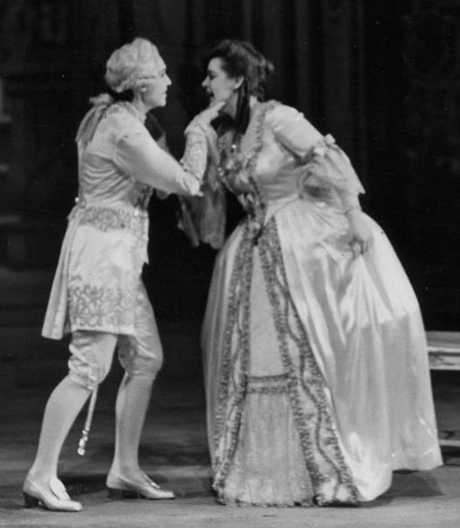
Der Rosenkavalier {79}
Metropolitan Opera House; 11/27/1941
Debut: Kurt Baum, Gerhard Pechner
Review |
[Met Performance] CID:132040
L'Elisir d'Amore {55}
Metropolitan Opera House; 11/28/1941
Debut: Mona Paulee
Review |
[Met Performance] CID:132050
La Traviata {239}
Metropolitan Opera House; 11/29/1941
Debut: Jan Peerce
Broadcast
Review |
[Met Performance] CID:132060
Madama Butterfly {259}
Metropolitan Opera House; 11/29/1941
Review |
[Met Concert/Gala] CID:132070
Gala Program
Metropolitan Opera House; 11/30/1941
|
[Met Performance] CID:132080
Tannhäuser {326}
Metropolitan Opera House; 12/1/1941
Review |
[Met Performance] CID:132090
Don Giovanni {105}
Horace Bushnell Memorial Hall, Hartford, Connecticut; 12/2/1941
|
[Met Performance] CID:132100
Samson et Dalila {68}
Metropolitan Opera House; 12/3/1941
Review |
[Met Performance] CID:132110
Otello {79}
Metropolitan Opera House; 12/4/1941
|
[Met Performance] CID:132120
Don Giovanni {106}
Metropolitan Opera House; 12/5/1941
Review |
[Met Performance] CID:132130
La Traviata {240}
Metropolitan Opera House; 12/5/1941
|
[Met Performance] CID:132140
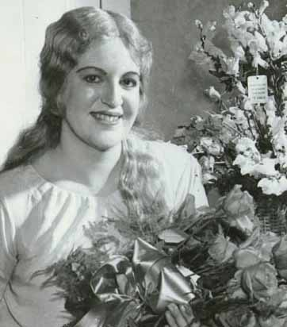
Die Walküre {326}
Metropolitan Opera House; 12/6/1941
Debuts: Astrid Varnay, Mary Van Kirk, Maria Van Delden
Broadcast
Review |
[Met Performance] CID:132150
Le Nozze di Figaro {71}
Metropolitan Opera House; 12/6/1941
|
[Met Concert/Gala] CID:132160
Gala Program
Metropolitan Opera House; 12/7/1941
|
[Met Performance] CID:132170
Orfeo ed Euridice {50}
Metropolitan Opera House; 12/8/1941
|
[Met Performance] CID:132180
Samson et Dalila {69}
American Academy of Music, Philadelphia, Pennsylvania; 12/9/1941
|
[Met Performance] CID:132190
L'Elisir d'Amore {56}
Metropolitan Opera House; 12/10/1941
|
[Met Performance] CID:132200
New production
Die Zauberflöte {69}
Metropolitan Opera House; 12/11/1941
Debut: Rosa Bok
Review |
[Met Performance] CID:132210
Aida {446}
Metropolitan Opera House; 12/12/1941
Debut: Paul Breisach |
[Met Performance] CID:132220
Die Walküre {327}
Metropolitan Opera House; 12/12/1941
|
[Met Performance] CID:132230
Samson et Dalila {70}
Metropolitan Opera House; 12/13/1941
Broadcast |
[Met Performance] CID:132240
La Traviata {241}
Metropolitan Opera House; 12/13/1941
|
[Met Concert/Gala] CID:132250
Gala Program
Metropolitan Opera House; 12/14/1941
|
[Met Performance] CID:132260
Lakmé {48}
Metropolitan Opera House; 12/15/1941
|
[Met Performance] CID:132270
L'Elisir d'Amore {57}
American Academy of Music, Philadelphia, Pennsylvania; 12/16/1941
Review |
[Met Performance] CID:132280
Der Rosenkavalier {80}
Metropolitan Opera House; 12/17/1941
|
[Met Performance] CID:132290
Tosca {252}
Metropolitan Opera House; 12/18/1941
Debut: Michael Kreatsoulas |
[Met Performance] CID:132300
La Fille du Régiment {34}
Metropolitan Opera House; 12/19/1941
Debut: Frank St. Leger |
[Met Performance] CID:132310
Le Nozze di Figaro {72}
Metropolitan Opera House; 12/20/1941
Broadcast |
[Met Performance] CID:132320
Tannhäuser {327}
Metropolitan Opera House; 12/20/1941
|
[Met Concert/Gala] CID:132330
Grand Sunday Night Program
Metropolitan Opera House; 12/21/1941
|
[Met Performance] CID:132340
Die Zauberflöte {70}
Metropolitan Opera House; 12/22/1941
Debut: Nadine Conner |
[Met Performance] CID:132350
Lakmé {49}
American Academy of Music, Philadelphia, Pennsylvania; 12/23/1941
|
[Met Performance] CID:132360
Il Barbiere di Siviglia {175}
Metropolitan Opera House; 12/24/1941
|
[Met Performance] CID:132370
Orfeo ed Euridice {51}
Metropolitan Opera House; 12/25/1941
|
[Met Performance] CID:132380
Don Giovanni {107}
Metropolitan Opera House; 12/26/1941
|
[Met Performance] CID:132390
Lakmé {50}
Metropolitan Opera House; 12/27/1941
Broadcast |
[Met Performance] CID:132400
L'Elisir d'Amore {58}
Metropolitan Opera House; 12/27/1941
|
[Met Concert/Gala] CID:132410
Gala Program
Metropolitan Opera House; 12/28/1941
|
[Met Performance] CID:132420
Rigoletto {242}
Metropolitan Opera House; 12/29/1941
Debut: Lansing Hatfield |
[Met Performance] CID:132430
Aida {447}
Metropolitan Opera House; 12/30/1941
|
[Met Performance] CID:132440
La Fille du Régiment {35}
Metropolitan Opera House; 12/31/1941
|
[Met Performance] CID:132450
La Bohème {352}
Metropolitan Opera House; 01/1/1942
Review |
[Met Performance] CID:132460
Otello {80}
Metropolitan Opera House; 01/2/1942
Review |
[Met Performance] CID:132470
L'Elisir d'Amore {59}
Metropolitan Opera House; 01/3/1942
Broadcast |
[Met Performance] CID:132480
Der Rosenkavalier {81}
Metropolitan Opera House; 01/3/1942
|
[Met Concert/Gala] CID:132490
Grand Sunday Night Program
Metropolitan Opera House; 01/4/1942
|
[Met Performance] CID:132500
Il Barbiere di Siviglia {176}
Metropolitan Opera House; 01/5/1942
Review |
[Met Performance] CID:132510
Die Zauberflöte {71}
American Academy of Music, Philadelphia, Pennsylvania; 01/6/1942
Review |
[Met Performance] CID:132520
Le Nozze di Figaro {73}
Metropolitan Opera House; 01/7/1942
Debut: Maria Markan
Review |
[Met Performance] CID:132530
La Fille du Régiment {36}
Metropolitan Opera House; 01/8/1942
|
[Met Performance] CID:132540
Tosca {253}
Metropolitan Opera House; 01/9/1942
Review |
[Met Performance] CID:132550
Lohengrin {446}
Metropolitan Opera House; 01/9/1942
Debut: Lothar Wallerstein
Reviews |
[Met Performance] CID:132560
Die Zauberflöte {72}
Metropolitan Opera House; 01/10/1942
Broadcast |
[Met Performance] CID:132570
Rigoletto {243}
Metropolitan Opera House; 01/10/1942
|
[Met Concert/Gala] CID:132580
Gala Program
Metropolitan Opera House; 01/11/1942
|
[Met Performance] CID:132590
Der Rosenkavalier {82}
Metropolitan Opera House; 01/12/1942
|
[Met Performance] CID:132600
La Traviata {242}
Metropolitan Opera House; 01/14/1942
|
[Met Performance] CID:132610
Metropolitan Opera Premiere (Phoebus and Pan)
Phoebus and Pan {1}
Le Coq d'Or {60}
Metropolitan Opera House; 01/15/1942
Debuts: Thomas Beecham, Nikita Talin
Reviews |
[Met Performance] CID:132620
The Bartered Bride {55}
Metropolitan Opera House; 01/16/1942
|
[Met Performance] CID:132630
Il Barbiere di Siviglia {177}
Metropolitan Opera House; 01/16/1942
|
[Met Performance] CID:132640
Lohengrin {447}
Metropolitan Opera House; 01/17/1942
Broadcast |
[Met Performance] CID:132650
Otello {81}
Metropolitan Opera House; 01/17/1942
|
[Met Concert/Gala] CID:132660
Gala Program
Metropolitan Opera House; 01/18/1942
|
[Met Performance] CID:132670
Don Giovanni {108}
Metropolitan Opera House; 01/19/1942
|
[Met Performance] CID:132680
Phoebus and Pan {2}
Le Coq d'Or {61}
American Academy of Music, Philadelphia, Pennsylvania; 01/20/1942
|
[Met Performance] CID:132690
Lakmé {51}
Metropolitan Opera House; 01/21/1942
|
[Met Performance] CID:132700
Das Rheingold {87}
Ring Cycle [71] Uncut
Metropolitan Opera House; 01/22/1942
Debut: Osie Hawkins |
[Met Performance] CID:132710
Aida {448}
Metropolitan Opera House; 01/22/1942
|
[Met Performance] CID:132720
Tannhäuser {328}
Metropolitan Opera House; 01/23/1942
Review |
[Met Performance] CID:132730
Carmen {371}
Metropolitan Opera House; 01/24/1942
Debut: Lily Djanel
Broadcast
Reviews |
[Met Performance] CID:132740
La Fille du Régiment {37}
Metropolitan Opera House; 01/24/1942
|
[Met Concert/Gala] CID:132750
Gala Program
Metropolitan Opera House; 01/25/1942
|
[Met Performance] CID:132760
Tosca {254}
Metropolitan Opera House; 01/26/1942
|
[Met Performance] CID:132770
American Red Cross Festival Performance
Phoebus and Pan {3}
Metropolitan Opera House; 01/27/1942
Review |
[Met Performance] CID:132780
Die Walküre {328}
Ring Cycle [71] Uncut
Metropolitan Opera House; 01/28/1942
Review |
[Met Performance] CID:132790
Otello {82}
Metropolitan Opera House; 01/28/1942
|
[Met Performance] CID:132800
Lohengrin {448}
Metropolitan Opera House; 01/29/1942
|
[Met Performance] CID:132810
La Bohème {353}
Metropolitan Opera House; 01/30/1942
|
[Met Performance] CID:132820
Faust {432}
Metropolitan Opera House; 01/30/1942
Review |
[Met Performance] CID:132830
Rigoletto {244}
Metropolitan Opera House; 01/31/1942
Broadcast |
[Met Performance] CID:132840
Phoebus and Pan {4}
Le Coq d'Or {62}
Metropolitan Opera House; 01/31/1942
Review |
[Met Performance] CID:132850
Aida {449}
Metropolitan Opera House; 02/2/1942
Review |
[Met Performance] CID:132860
Lohengrin {449}
American Academy of Music, Philadelphia, Pennsylvania; 02/3/1942
Review |
[Met Performance] CID:132870
Carmen {372}
Metropolitan Opera House; 02/4/1942
Review |
[Met Performance] CID:132880
Un Ballo in Maschera {28}
Metropolitan Opera House; 02/5/1942
Review |
[Met Performance] CID:132890
Siegfried {194}
Ring Cycle [71] Uncut
Metropolitan Opera House; 02/6/1942
Reviews |
[Met Performance] CID:132900
Samson et Dalila {71}
Metropolitan Opera House; 02/6/1942
Review |
[Met Performance] CID:132910
Tosca {255}
Metropolitan Opera House; 02/7/1942
Broadcast |
[Met Performance] CID:132920
Faust {433}
Metropolitan Opera House; 02/7/1942
Review |
[Met Concert/Gala] CID:132930
Gala Program
Metropolitan Opera House; 02/8/1942
|
[Met Performance] CID:132940
Lohengrin {450}
Metropolitan Opera House; 02/9/1942
|
[Met Performance] CID:132950
La Bohème {354}
Metropolitan Opera House; 02/11/1942
|
[Met Performance] CID:132960
Götterdämmerung {147}
Ring Cycle [71] Uncut
Metropolitan Opera House; 02/12/1942
Review |
[Met Performance] CID:132970
Rigoletto {245}
Metropolitan Opera House; 02/12/1942
Review |
[Met Performance] CID:132980
Tosca {256}
Metropolitan Opera House; 02/13/1942
|
[Met Performance] CID:132990
Tannhäuser {329}
Metropolitan Opera House; 02/14/1942
Broadcast |
[Met Performance] CID:133000
Il Barbiere di Siviglia {178}
Metropolitan Opera House; 02/14/1942
Debut: Fausto Cleva |
[Met Concert/Gala] CID:133010
Grand Sunday Night Program
Metropolitan Opera House; 02/15/1942
|
[Met Performance] CID:133020
La Traviata {243}
Metropolitan Opera House; 02/16/1942
|
[Met Performance] CID:133030
Götterdämmerung {148}
American Academy of Music, Philadelphia, Pennsylvania; 02/17/1942
Review |
[Met Performance] CID:133040
Lohengrin {451}
Metropolitan Opera House; 02/18/1942
|
[Met Performance] CID:133050
Carmen {373}
Metropolitan Opera House; 02/19/1942
Review |
[Met Performance] CID:133060
The Bartered Bride {56}
Metropolitan Opera House; 02/20/1942
|
[Met Performance] CID:133070
World Premiere
Pagliacci {356}
The Island God {1}
Metropolitan Opera House; 02/20/1942
Review |
[Met Performance] CID:133080
Aida {450}
Metropolitan Opera House; 02/21/1942
Broadcast |
[Met Performance] CID:133090
Siegfried {195}
Metropolitan Opera House; 02/21/1942
Review |
[Met Performance] CID:133100
Götterdämmerung {149}
Metropolitan Opera House; 02/23/1942
Review |
[Met Performance] CID:133110
Tosca {257}
Metropolitan Opera House; 02/25/1942
Review |
[Met Performance] CID:133120
The Bartered Bride {57}
Metropolitan Opera House; 02/26/1942
Review |
[Met Performance] CID:133130
Parsifal {152}
Metropolitan Opera House; 02/27/1942
Review |
[Met Performance] CID:133140
La Bohème {355}
Metropolitan Opera House; 02/27/1942
|
[Met Performance] CID:133150
Un Ballo in Maschera {29}
Metropolitan Opera House; 02/28/1942
Broadcast |
[Met Performance] CID:133160
Carmen {374}
Metropolitan Opera House; 02/28/1942
|
[Met Concert/Gala] CID:133170
Gala Program
Metropolitan Opera House; 03/1/1942
|
[Met Performance] CID:133180
Pagliacci {357}
The Island God {2}
Metropolitan Opera House; 03/2/1942
|
[Met Performance] CID:133190
Carmen {375}
American Academy of Music, Philadelphia, Pennsylvania; 03/3/1942
Review |
[Met Performance] CID:133200
Phoebus and Pan {5}
Le Coq d'Or {63}
Metropolitan Opera House; 03/4/1942
|
[Met Performance] CID:133210
Tannhäuser {330}
Metropolitan Opera House; 03/5/1942
|
[Met Performance] CID:133220
Aida {451}
Metropolitan Opera House; 03/6/1942
|
[Met Performance] CID:133230
Opera News 1
Opera News 2
Opera News 3
Opera News 4
Don Giovanni {109}
Metropolitan Opera House; 03/7/1942
Broadcast
Review |
[Met Performance] CID:133240
Tosca {258}
Metropolitan Opera House; 03/7/1942
|
[Met Concert/Gala] CID:133250
Gala Program
Metropolitan Opera House; 03/8/1942
|
[Met Performance] CID:133260
Carmen {376}
Metropolitan Opera House; 03/9/1942
|
[Met Performance] CID:133270
The Island God {3}
La Bohème {356}
Academy of Music, Philadelphia, Pennsylvania; 03/10/1942
Review |
[Met Performance] CID:133280
Die Zauberflöte {73}
Metropolitan Opera House; 03/11/1942
|
[Met Performance] CID:133290
Pagliacci {358}
The Island God {4}
Metropolitan Opera House; 03/12/1942
|
[Met Performance] CID:133300
Der Rosenkavalier {83}
Metropolitan Opera House; 03/13/1942
Review |
[Met Performance] CID:133310
Faust {434}
Metropolitan Opera House; 03/14/1942
Broadcast |
[Met Performance] CID:133320
Lohengrin {452}
Metropolitan Opera House; 03/14/1942
|
[Met Concert/Gala] CID:133330
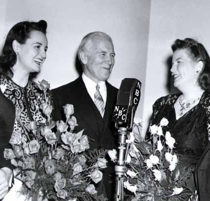
Grand Sunday Night Program
Metropolitan Opera House; 03/15/1942
|
[Met Performance] CID:133340
Die Zauberflöte {74}
Lyric Theatre, Baltimore, Maryland; 03/16/1942
Review |
[Met Performance] CID:133350
Carmen {377}
Lyric Theatre, Baltimore, Maryland; 03/17/1942
Review |
[Met Performance] CID:133360
La Traviata {244}
Lyric Theatre, Baltimore, Maryland; 03/18/1942
Review |
[Met Performance] CID:133370
Lohengrin {453}
Metropolitan Theatre, Boston, Massachusetts; 03/19/1942
Review |
[Met Performance] CID:133380
Die Zauberflöte {75}
Metropolitan Theatre, Boston, Massachusetts; 03/20/1942
Review |
[Met Performance] CID:133390
La Traviata {245}
Metropolitan Theatre, Boston, Massachusetts; 03/21/1942
Review |
[Met Performance] CID:133400
Il Barbiere di Siviglia {179}
Metropolitan Theatre, Boston, Massachusetts; 03/21/1942
|
[Met Performance] CID:133410
Orfeo ed Euridice {52}
Metropolitan Theatre, Boston, Massachusetts; 03/23/1942
Debut: Janet Murray
Review |
[Met Performance] CID:133420
Die Walküre {329}
Metropolitan Theatre, Boston, Massachusetts; 03/24/1942
Review |
[Met Performance] CID:133430
Carmen {378}
Metropolitan Theatre, Boston, Massachusetts; 03/25/1942
Review |
[Met Performance] CID:133440
La Bohème {357}
Metropolitan Theatre, Boston, Massachusetts; 03/25/1942
Review |
[Met Performance] CID:133450
Aida {452}
Metropolitan Theatre, Boston, Massachusetts; 03/26/1942
Review |
[Met Performance] CID:133460
Der Rosenkavalier {84}
Metropolitan Theatre, Boston, Massachusetts; 03/27/1942
Review |
[Met Performance] CID:133470
Faust {435}
Metropolitan Theatre, Boston, Massachusetts; 03/28/1942
Review |
[Met Performance] CID:133480
Rigoletto {246}
Metropolitan Theatre, Boston, Massachusetts; 03/28/1942
|
[Met Performance] CID:133490
Parsifal {153}
Metropolitan Opera House; 04/1/1942
Review |
[Met Performance] CID:133500
Parsifal {154}
Metropolitan Opera House; 04/3/1942
Review |
[Met Performance] CID:133510
Don Giovanni {110}
Cleveland Auditorium, Cleveland, Ohio; 04/6/1942
Review |
[Met Performance] CID:133520
Lohengrin {454}
Cleveland Auditorium, Cleveland, Ohio; 04/7/1942
Review |
[Met Performance] CID:133530
Carmen {379}
Cleveland Auditorium, Cleveland, Ohio; 04/8/1942
|
[Met Performance] CID:133540
Der Rosenkavalier {85}
Cleveland Auditorium, Cleveland, Ohio; 04/9/1942
Review |
[Met Performance] CID:133550
Die Zauberflöte {76}
Cleveland Auditorium, Cleveland, Ohio; 04/10/1942
Review |
[Met Performance] CID:133560
La Traviata {246}
Cleveland Auditorium, Cleveland, Ohio; 04/10/1942
Review |
[Met Performance] CID:133570
Tosca {259}
Cleveland Auditorium, Cleveland, Ohio; 04/11/1942
|
[Met Performance] CID:133580
Aida {453}
Cleveland Auditorium, Cleveland, Ohio; 04/11/1942
|
[Met Performance] CID:133590
Aida {454}
Indiana University Auditorium, Bloomington, Indiana; 04/13/1942
Review |
[Met Performance] CID:133600
Lucia di Lammermoor {193}
Dallas, Texas; 04/15/1942
|
[Met Performance] CID:133610
Don Giovanni {111}
Dallas, Texas; 04/16/1942
|
[Met Performance] CID:133620
Carmen {380}
Fair Park Auditorium, Dallas, Texas; 04/17/1942
Review |
[Met Performance] CID:133630
Aida {455}
Dallas, Texas; 04/18/1942
Review |
[Met Performance] CID:133640
Il Barbiere di Siviglia {180}
Fair Park Auditorium, Dallas, Texas; 04/18/1942
Review |
[Met Performance] CID:133650
La Traviata {247}
Municipal Auditorium, Birmingham, Alabama; 04/20/1942
Review |
[Met Performance] CID:133660
Carmen {381}
Municipal Auditorium, Atlanta, Georgia; 04/21/1942
Review |
[Met Performance] CID:133670
Il Barbiere di Siviglia {181}
Municipal Auditorium, Atlanta, Georgia; 04/22/1942
Review |
[Met Performance] CID:133680
La Fille du Régiment {38}
Municipal Auditorium, Atlanta, Georgia; 04/23/1942
Review |
[Met Performance] CID:133690
Carmen {382}
Mosque Theatre, Richmond, Virginia; 04/24/1942
|
[Met Performance] CID:133700
La Fille du Régiment {39}
Mosque Theatre, Richmond, Virginia; 4/25/1942
|
[Met Performance] CID:134000
La Fille du Régiment {40}
Metropolitan Opera House; 11/23/1942
Opening Night {58}
Edward Johnson, General Manager
Review |
[Met Performance] CID:134010
Don Giovanni {112}
American Academy of Music, Philadelphia, Pennsylvania; 11/24/1942
|
[Met Performance] CID:134020
Götterdämmerung {150}
Metropolitan Opera House; 11/25/1942
Debuts: Margaret Harshaw, Doris Doree
Review |
[Met Performance] CID:134030
Carmen {383}
Metropolitan Opera House; 11/26/1942
Debuts: Lorenzo Alvary, Nina Youskevitch, James Lyons
Review |
[Met Performance] CID:134040
Die Zauberflöte {77}
Metropolitan Opera House; 11/27/1942
Debut: Lillian Raymondi
Reviews |
[Met Performance] CID:134050
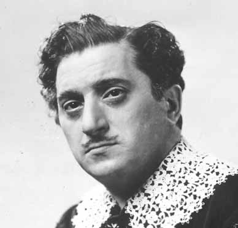
New production
Lucia di Lammermoor {194}
Metropolitan Opera House; 11/28/1942
Broadcast
Review |
[Met Performance] CID:134060
Aida {456}
Metropolitan Opera House; 11/28/1942
Debuts: Alex Dunaeff, Jack Gansert, Cesare Sodero
Review |
[Met Performance] CID:134070
La Bohème {358}
Metropolitan Opera House; 11/30/1942
Debut: Frances Greer
Review |
[Met Performance] CID:134080
Lakmé {52}
Metropolitan Opera House; 12/2/1942
Debut: Marie Wilkins, Jacques Gérard
Reviews |
[Met Performance] CID:134090
Don Giovanni {113}
Metropolitan Opera House; 12/3/1942
Review |
[Met Performance] CID:134100
Tristan und Isolde {295}
Metropolitan Opera House; 12/4/1942
Reviews |
[Met Performance] CID:134110
La Traviata {248}
Metropolitan Opera House; 12/5/1942
Broadcast
Review |
[Met Performance] CID:134120
Faust {436}
Metropolitan Opera House; 12/5/1942
|
[Met Concert/Gala] CID:134130
Gala Program
Metropolitan Opera House; 12/6/1942
|
[Met Performance] CID:134140
Die Zauberflöte {78}
Metropolitan Opera House; 12/7/1942
Debut: James Melton |
[Met Performance] CID:134150
Tristan und Isolde {296}
American Academy of Music, Philadelphia, Pennsylvania; 12/8/1942
|
[Met Performance] CID:134160
New production
La Serva Padrona {5}
Salome {18}
Metropolitan Opera House; 12/9/1942
Debut: George Szell
Reviews |
[Met Performance] CID:134170
Götterdämmerung {151}
Metropolitan Opera House; 12/10/1942
|
[Met Performance] CID:134180
Lucia di Lammermoor {195}
Metropolitan Opera House; 12/11/1942
|
[Met Performance] CID:134190
La Bohème {359}
Metropolitan Opera House; 12/12/1942
Broadcast |
[Met Performance] CID:134200
Manon {148}
Metropolitan Opera House; 12/12/1942
Debut: Walter Cassel
Review |
[Met Performance] CID:134210
Tristan und Isolde {297}
Metropolitan Opera House; 12/14/1942
|
[Met Performance] CID:134220
Tosca {260}
American Academy of Music, Philadelphia, Pennsylvania; 12/15/1942
|
[Met Performance] CID:134230
Le Nozze di Figaro {74}
Metropolitan Opera House; 12/16/1942
|
[Met Performance] CID:134240
Lakmé {53}
Metropolitan Opera House; 12/17/1942
|
[Met Performance] CID:134250
Faust {437}
Metropolitan Opera House; 12/18/1942
|
[Met Performance] CID:134260
Tannhäuser {331}
Metropolitan Opera House; 12/19/1942
Broadcast |
[Met Performance] CID:134270
Tosca {261}
Metropolitan Opera House; 12/19/1942
Debut: Tony D'Addozio |
[Met Performance] CID:134280
Lucia di Lammermoor {196}
Metropolitan Opera House; 12/21/1942
|
[Met Performance] CID:134290
Manon {149}
Metropolitan Opera House; 12/23/1942
|
[Met Performance] CID:134300
La Bohème {360}
Metropolitan Opera House; 12/24/1942
|
[Met Performance] CID:134310
Aida {457}
Metropolitan Opera House; 12/25/1942
Debut: Hertha Glaz |
[Met Performance] CID:134320
Die Zauberflöte {79}
Metropolitan Opera House; 12/26/1942
Broadcast |
[Met Performance] CID:134330
La Traviata {249}
Metropolitan Opera House; 12/26/1942
|
[Met Concert/Gala] CID:134340
Grand Gala Concert
Metropolitan Opera House; 12/27/1942
Review |
[Met Performance] CID:134350
La Traviata: Act II, Scene 1
Salome {19}
Metropolitan Opera House; 12/28/1942
|
[Met Performance] CID:134360
Lucia di Lammermoor {197}
American Academy of Music, Philadelphia, Pennsylvania; 12/29/1942
Review |
[Met Performance] CID:134370
Boris Godunov {96}
Metropolitan Opera House; 12/30/1942
Review |
[Met Performance] CID:134380
Tosca {262}
Metropolitan Opera House; 12/30/1942
|
[Met Performance] CID:134390
Il Barbiere di Siviglia {182}
Metropolitan Opera House; 12/31/1942
|
[Met Performance] CID:134400
Carmen {384}
Metropolitan Opera House; 01/1/1943
Review |
[Met Performance] CID:134410
Lohengrin {455}
Metropolitan Opera House; 01/2/1943
Broadcast |
[Met Performance] CID:134420
La Fille du Régiment {41}
Metropolitan Opera House; 01/2/1943
|
[Met Performance] CID:134430
Le Nozze di Figaro {75}
Metropolitan Opera House; 01/4/1943
|
[Met Performance] CID:134440
Der Rosenkavalier {86}
American Academy of Music, Philadelphia, Pennsylvania; 01/5/1943
Debut: Elwood Gary |
[Met Performance] CID:134450
Lucia di Lammermoor {198}
Metropolitan Opera House; 01/6/1943
|
[Met Performance] CID:134460
Tannhäuser {332}
Metropolitan Opera House; 01/7/1943
|
[Met Performance] CID:134470
Der Rosenkavalier {87}
Metropolitan Opera House; 01/8/1943
|
[Met Performance] CID:134480
Lakmé {54}
Metropolitan Opera House; 01/9/1943
Broadcast |
[Met Performance] CID:134490
La Forza del Destino {47}
Metropolitan Opera House; 01/9/1943
Reviews |
[Met Concert/Gala] CID:134500
Gala Program
Metropolitan Opera House; 01/10/1943
|
[Met Performance] CID:134510
Boris Godunov {97}
Metropolitan Opera House; 01/11/1943
|
[Met Performance] CID:134520
Lohengrin {456}
Metropolitan Opera House; 01/13/1943
|
[Met Performance] CID:134530
La Serva Padrona {6}
Salome {20}
Metropolitan Opera House; 01/14/1943
|
[Met Performance] CID:134540
Louise {40}
Metropolitan Opera House; 01/15/1943
|
[Met Performance] CID:134550
La Traviata {250}
Metropolitan Opera House; 01/15/1943
|
[Met Performance] CID:134560
Opera News 1
Opera News 2
Opera News 3
Manon {150}
Metropolitan Opera House; 01/16/1943
Broadcast |
[Met Performance] CID:134570
Die Zauberflöte {80}
Metropolitan Opera House; 01/16/1943
|
[Met Concert/Gala] CID:134580
Gala Program
Metropolitan Opera House; 01/17/1943
|
[Met Performance] CID:134590
Der Rosenkavalier {88}
Metropolitan Opera House; 01/18/1943
|
[Met Performance] CID:134600
Boris Godunov {98}
American Academy of Music, Philadelphia, Pennsylvania; 01/19/1943
Review |
[Met Performance] CID:134610
Faust {438}
Metropolitan Opera House; 01/20/1943
|
[Met Performance] CID:134620
Le Nozze di Figaro {76}
Metropolitan Opera House; 01/21/1943
|
[Met Performance] CID:134630
Tannhäuser {333}
Metropolitan Opera House; 01/22/1943
Review |
[Met Performance] CID:134640
La Forza del Destino {48}
Metropolitan Opera House; 01/23/1943
Broadcast |
[Met Performance] CID:134650
Aida {458}
Metropolitan Opera House; 01/23/1943
|
[Met Concert/Gala] CID:134660
Gala Program
Metropolitan Opera House; 01/24/1943
|
[Met Performance] CID:134670
Louise {41}
Metropolitan Opera House; 01/25/1943
|
[Met Performance] CID:134680
La Traviata {251}
Metropolitan Opera House; 01/27/1943
|
[Met Performance] CID:134690
Lohengrin {457}
Metropolitan Opera House; 01/28/1943
|
[Met Performance] CID:134700
Die Zauberflöte {81}
Metropolitan Opera House; 01/29/1943
|
[Met Performance] CID:134710
Tosca {263}
Metropolitan Opera House; 01/29/1943
|
[Met Performance] CID:134720
Opera News 1
Opera News 2
Opera News 3
Faust {439}
Metropolitan Opera House; 01/30/1943
Broadcast |
[Met Performance] CID:134730
Il Barbiere di Siviglia {183}
Metropolitan Opera House; 01/30/1943
|
[Met Concert/Gala] CID:134740
Gala Program
Metropolitan Opera House; 01/31/1943
|
[Met Performance] CID:134750
Tannhäuser {334}
Metropolitan Opera House; 02/1/1943
|
[Met Performance] CID:134760
La Traviata {252}
American Academy of Music, Philadelphia, Pennsylvania; 02/2/1943
|
[Met Performance] CID:134770
Carmen {385}
Metropolitan Opera House; 02/3/1943
|
[Met Performance] CID:134780
Der Rosenkavalier {89}
Metropolitan Opera House; 02/4/1943
|
[Met Performance] CID:134790
Il Trovatore {214}
Metropolitan Opera House; 02/5/1943
|
[Met Performance] CID:134800
Opera News 1
Opera News 2
Opera News 3
Tristan und Isolde {298}
Metropolitan Opera House; 02/6/1943
Broadcast |
[Met Performance] CID:134810
La Bohème {361}
Metropolitan Opera House; 02/6/1943
|
[Met Concert/Gala] CID:134820
Gala Program
Metropolitan Opera House; 02/7/1943
|
[Met Performance] CID:134830
La Traviata {253}
Metropolitan Opera House; 02/8/1943
|
[Met Performance] CID:134840
Das Rheingold {88}
Ring Cycle [72] Uncut
Metropolitan Opera House; 02/9/1943
|
[Met Performance] CID:134850
Tannhäuser {335}
Metropolitan Opera House; 02/10/1943
|
[Met Performance] CID:134860
La Forza del Destino {49}
Metropolitan Opera House; 02/11/1943
|
[Met Performance] CID:134870
Il Barbiere di Siviglia {184}
Metropolitan Opera House; 02/12/1943
Louis D'Angelo's 25th Anniversary |
[Met Performance] CID:134880
Boris Godunov {99}
Metropolitan Opera House; 02/13/1943
Broadcast
Review |
[Met Performance] CID:134890
Il Trovatore {215}
Metropolitan Opera House; 02/13/1943
|
[Met Concert/Gala] CID:134900
Gala Program
Metropolitan Opera House; 02/14/1943
|
[Met Performance] CID:134910
Carmen {386}
Metropolitan Opera House; 02/15/1943
|
[Met Performance] CID:134920
Die Walküre {330}
Ring Cycle [72] Uncut
Metropolitan Opera House; 02/16/1943
|
[Met Performance] CID:134930
Aida {459}
Metropolitan Opera House; 02/17/1943
|
[Met Performance] CID:134940
Tosca {264}
Metropolitan Opera House; 02/18/1943
|
[Met Performance] CID:134950
Boris Godunov {100}
Metropolitan Opera House; 02/19/1943
|
[Met Performance] CID:134960
Louise {42}
Metropolitan Opera House; 02/20/1943
Broadcast |
[Met Performance] CID:134970
Die Walküre {331}
Metropolitan Opera House; 02/20/1943
|
[Met Concert/Gala] CID:134980
Gala Program
Metropolitan Opera House; 02/21/1943
|
[Met Performance] CID:134990
Faust {440}
Metropolitan Opera House; 02/22/1943
|
[Met Performance] CID:135000
Don Giovanni {114}
Metropolitan Opera House; 02/24/1943
|
[Met Performance] CID:135010
La Traviata {254}
Metropolitan Opera House; 02/25/1943
|
[Met Performance] CID:135020
La Bohème {362}
Metropolitan Opera House; 02/26/1943
|
[Met Performance] CID:135030
Die Walküre {332}
Metropolitan Opera House; 02/27/1943
Broadcast |
[Met Performance] CID:135040
Le Nozze di Figaro {77}
Metropolitan Opera House; 02/27/1943
|
[Met Concert/Gala] CID:135050
Gala Program
Metropolitan Opera House; 02/28/1943
|
[Met Performance] CID:135060
La Forza del Destino {50}
Metropolitan Opera House; 03/1/1943
|
[Met Performance] CID:135070
Siegfried {196}
Ring Cycle [72] Uncut
Metropolitan Opera House; 03/2/1943
Reviews |
[Met Performance] CID:135080
Il Trovatore {216}
Metropolitan Opera House; 03/3/1943
|
[Met Performance] CID:135090
Die Zauberflöte {82}
Metropolitan Opera House; 03/4/1943
|
[Met Performance] CID:135100
Lohengrin {458}
Metropolitan Opera House; 03/5/1943
Review |
[Met Performance] CID:135110
Aida {460}
Metropolitan Opera House; 03/6/1943
Broadcast |
[Met Performance] CID:135120
Der Rosenkavalier {90}
Metropolitan Opera House; 03/6/1943
|
[Met Concert/Gala] CID:135130
Gala Program
Metropolitan Opera House; 03/7/1943
|
[Met Performance] CID:135140
Don Giovanni {115}
Metropolitan Opera House; 03/8/1943
|
[Met Performance] CID:135150
Götterdämmerung {152}
Ring Cycle [72] Uncut
Metropolitan Opera House; 03/9/1943
|
[Met Performance] CID:135160
La Bohème {363}
Metropolitan Opera House; 03/10/1943
|
[Met Performance] CID:135170
Manon {151}
Metropolitan Opera House; 03/11/1943
|
[Met Performance] CID:135180
Le Nozze di Figaro {78}
Metropolitan Opera House; 03/12/1943
|
[Met Performance] CID:135190
La Forza del Destino {51}
Metropolitan Opera House; 03/12/1943
|
[Met Performance] CID:135200
Il Trovatore {217}
Metropolitan Opera House; 03/13/1943
Broadcast |
[Met Performance] CID:135210
Carmen {387}
Metropolitan Opera House; 03/13/1943
|
[Met Concert/Gala] CID:135220
Gala Program
Metropolitan Opera House; 03/14/1943
|
[Met Performance] CID:135230
Aida {461}
Metropolitan Opera House; 03/15/1943
|
[Met Performance] CID:135240
La Traviata {255}
Metropolitan Opera House; 03/16/1943
|
[Met Performance] CID:135250
Faust {441}
Metropolitan Opera House; 03/17/1943
|
[Met Performance] CID:135260
Il Barbiere di Siviglia {185}
Metropolitan Opera House; 03/19/1943
|
[Met Performance] CID:135270
Cavalleria Rusticana {320}
Pagliacci {359}
Metropolitan Opera House; 03/20/1943
Broadcast |
[Met Performance] CID:135280
Carmen {388}
Metropolitan Opera House; 03/20/1943
|
[Met Performance] CID:135290
Le Nozze di Figaro {79}
Chicago Civic Opera House, Chicago, Illinois; 03/22/1943
Review |
[Met Performance] CID:135300
Faust {442}
Chicago Civic Opera House, Chicago, Illinois; 03/23/1943
Review |
[Met Performance] CID:135310
La Forza del Destino {52}
Chicago Civic Opera House, Chicago, Illinois; 03/24/1943
Review |
[Met Performance] CID:135320
La Traviata {256}
Chicago Civic Opera House, Chicago, Illinois; 03/25/1943
Review |
[Met Performance] CID:135330
Die Zauberflöte {83}
Chicago Civic Opera House, Chicago, Illinois; 03/26/1943
Review |
[Met Performance] CID:135340
Opera News
Carmen {389}
Chicago Civic Opera House, Chicago, Illinois; 03/27/1943
Broadcast |
[Met Performance] CID:135350
Il Trovatore {218}
Chicago Civic Opera House, Chicago, Illinois; 03/27/1943
|
[Met Performance] CID:135360
Tannhäuser {336}
Chicago Civic Opera House, Chicago, Illinois; 03/29/1943
Review |
[Met Performance] CID:135370
Il Barbiere di Siviglia {186}
Chicago Civic Opera House, Chicago, Illinois; 03/30/1943
|
[Met Performance] CID:135380
Tristan und Isolde {299}
Chicago Civic Opera House, Chicago, Illinois; 03/31/1943
Review |
[Met Performance] CID:135390
Aida {462}
Chicago Civic Opera House, Chicago, Illinois; 04/1/1943
|
[Met Performance] CID:135400
Boris Godunov {101}
Chicago Civic Opera House, Chicago, Illinois; 04/2/1943
|
[Met Performance] CID:135410
Don Giovanni {116}
Chicago Civic Opera House, Chicago, Illinois; 04/3/1943
Broadcast
Review |
[Met Performance] CID:135420
La Traviata {257}
Chicago Civic Opera House, Chicago, Illinois; 04/3/1943
|
[Met Performance] CID:135430
La Forza del Destino {53}
Cleveland Public Auditorium, Cleveland, Ohio; 04/5/1943
Review |
[Met Performance] CID:135440
Faust {443}
Cleveland Public Auditorium, Cleveland, Ohio; 04/6/1943
Review |
[Met Performance] CID:135450
La Traviata {258}
Cleveland Public Auditorium, Cleveland, Ohio; 04/7/1943
Review |
[Met Performance] CID:135460
Carmen {390}
Cleveland Public Auditorium, Cleveland, Ohio; 04/8/1943
Review |
[Met Performance] CID:135470
La Bohème {364}
Cleveland, Ohio; 04/9/1943
|
[Met Performance] CID:135480
Aida {463}
Cleveland Public Auditorium, Cleveland, Ohio; 04/9/1943
|
[Met Performance] CID:135490
Il Barbiere di Siviglia {187}
Cleveland Public Auditorium, Cleveland, Ohio; 04/10/1943
Broadcast |
[Met Performance] CID:135500
Il Trovatore {219}
Cleveland Public Auditorium, Cleveland, Ohio; 04/10/1943
|
[Met Performance] CID:135510
La Bohème {365}
Eastman Theatre, Rochester, New York; 04/12/1943
|
[Met Performance] CID:135520
Faust {444}
Metropolitan Opera House; 04/16/1943
|
[Met Performance] CID:135530
Le Nozze di Figaro {80}
Metropolitan Opera House; 04/17/1943
Broadcast |
[Met Performance] CID:135540
Parsifal {155}
American Academy of Music, Philadelphia, Pennsylvania; 04/20/1943
|
[Met Performance] CID:135550
Parsifal {156}
Metropolitan Opera House; 04/21/1943
|
[Met Performance] CID:135560
Parsifal {157}
Metropolitan Opera House; 04/23/1943
|
[Met Performance] CID:135570
La Traviata {259}
Metropolitan Opera House; 04/24/1943
Broadcast |
[Met Performance] CID:135580
Cavalleria Rusticana {321}
Pagliacci {360}
Metropolitan Opera House; 4/24/1943
|
[Met Performance] CID:136000
Boris Godunov {102}
Metropolitan Opera House; 11/22/1943
Opening Night {59}
Edward Johnson, General Manager
Debut: Thelma Altman
Reviews |
[Met Performance] CID:136010
Carmen {391}
American Academy of Music, Philadelphia, Pennsylvania; 11/23/1943
Debuts: John Baker, Marina Svetlova |
[Met Performance] CID:136020
Tristan und Isolde {300}
Metropolitan Opera House; 11/24/1943
Review |
[Met Performance] CID:136030
Lucia di Lammermoor {199}
Metropolitan Opera House; 11/25/1943
Review |
[Met Performance] CID:136040
Der Rosenkavalier {91}
Metropolitan Opera House; 11/26/1943
Review |
[Met Performance] CID:136050
La Forza del Destino {54}
Metropolitan Opera House; 11/27/1943
Debut: Frederick Lechner
Broadcast.
Review |
[Met Performance] CID:136060
La Bohème {366}
Metropolitan Opera House; 11/27/1943
Review |
[Met Performance] CID:136070
Carmen {392}
Metropolitan Opera House; 11/29/1943
|
[Met Performance] CID:136080
Die Zauberflöte {84}
Metropolitan Opera House; 12/1/1943
|
[Met Performance] CID:136090
Die Walküre {333}
Metropolitan Opera House; 12/2/1943
|
[Met Performance] CID:136100
Rigoletto {247}
Metropolitan Opera House; 12/3/1943
Review |
[Met Performance] CID:136110
Boris Godunov {103}
Metropolitan Opera House; 12/4/1943
Broadcast |
[Met Performance] CID:136120
Mignon {81}
Metropolitan Opera House; 12/4/1943
Debut: Patrice Munsel, Donald Dame
Review |
[Met Concert/Gala] CID:136130
Gala Sunday Night Program
Metropolitan Opera House; 12/5/1943
|
[Met Performance] CID:136140
Lucia di Lammermoor {200}
Metropolitan Opera House; 12/6/1943
|
[Met Performance] CID:136150
Die Walküre {334}
American Academy of Music, Philadelphia, Pennsylvania; 12/7/1943
Debut: Christine Johnson |
[Met Performance] CID:136160
La Forza del Destino {55}
Metropolitan Opera House; 12/9/1943
|
[Met Performance] CID:136170
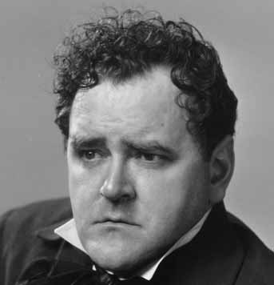
Les Contes d'Hoffmann {58}
Metropolitan Opera House; 12/10/1943
Debut: Martial Singher
Review |
[Met Performance] CID:136180
Tristan und Isolde {301}
Metropolitan Opera House; 12/11/1943
Broadcast |
[Met Performance] CID:136190
Il Barbiere di Siviglia {188}
Metropolitan Opera House; 12/11/1943
Review |
[Met Concert/Gala] CID:136200
Gala Sunday Night Program
Metropolitan Opera House; 12/12/1943
|
[Met Performance] CID:136210
Die Walküre {335}
Metropolitan Opera House; 12/13/1943
|
[Met Performance] CID:136220
Rigoletto {248}
American Academy of Music, Philadelphia, Pennsylvania; 12/14/1943
|
[Met Performance] CID:136230
Der Rosenkavalier {92}
Metropolitan Opera House; 12/15/1943
|
[Met Performance] CID:136240
Un Ballo in Maschera {30}
Metropolitan Opera House; 12/17/1943
Debut: Dorothy Singer, Aubrey Hitchins, Shirley Weaver, Robert Armstrong, Sidney Stambaugh
Review |
[Met Performance] CID:136250
Rigoletto {249}
Metropolitan Opera House; 12/18/1943
Broadcast
Review |
[Met Performance] CID:136260
Tannhäuser {337}
Metropolitan Opera House; 12/18/1943
Review |
[Met Concert/Gala] CID:136270
Gala Sunday Night Program
Metropolitan Opera House; 12/19/1943
|
[Met Performance] CID:136280
La Bohème {367}
Metropolitan Opera House; 12/20/1943
Debut: Christina Carroll
Review |
[Met Performance] CID:136290
Les Contes d'Hoffmann {59}
American Academy of Music, Philadelphia, Pennsylvania; 12/21/1943
Review |
[Met Performance] CID:136300
Lucia di Lammermoor {201}
Metropolitan Opera House; 12/22/1943
|
[Met Performance] CID:136310
Carmen {393}
Metropolitan Opera House; 12/23/1943
Review |
[Met Performance] CID:136320
Mignon {82}
Metropolitan Opera House; 12/25/1943
Broadcast |
[Met Performance] CID:136330
Cavalleria Rusticana {322}
Pagliacci {361}
Metropolitan Opera House; 12/25/1943
|
[Met Concert/Gala] CID:136340
Gala Program
Metropolitan Opera House; 12/26/1943
|
[Met Performance] CID:136350
Rigoletto {250}
Metropolitan Opera House; 12/27/1943
|
[Met Performance] CID:136360
Norma {42}
Metropolitan Opera House; 12/29/1943
Reviews |
[Met Performance] CID:136370
Les Contes d'Hoffmann {60}
Metropolitan Opera House; 12/30/1943
|
[Met Performance] CID:136380
Die Zauberflöte {85}
Metropolitan Opera House; 12/30/1943
|
[Met Performance] CID:136390
Il Barbiere di Siviglia {189}
Metropolitan Opera House; 12/31/1943
|
[Met Performance] CID:136400
La Traviata {260}
Metropolitan Opera House; 01/1/1944
Broadcast
Review |
[Met Performance] CID:136410
Boris Godunov {104}
Metropolitan Opera House; 01/1/1944
|
[Met Performance] CID:136420
Mignon {83}
Metropolitan Opera House; 01/3/1944
|
[Met Performance] CID:136430
Un Ballo in Maschera {31}
American Academy of Music, Philadelphia, Pennsylvania; 01/4/1944
Review |
[Met Performance] CID:136440
Gianni Schicchi {36}
Salome {21}
Metropolitan Opera House; 01/6/1944
Debut: Anthony Statile, Ella Flesch
Reviews |
[Met Performance] CID:136450
Tristan und Isolde {302}
Metropolitan Opera House; 01/7/1944
|
[Met Performance] CID:136460
Lucia di Lammermoor {202}
Metropolitan Opera House; 01/8/1944
Broadcast |
[Met Performance] CID:136470
Faust {445}
Metropolitan Opera House; 01/8/1944
Review |
[Met Concert/Gala] CID:136480
Gala Sunday Night Program
Metropolitan Opera House; 01/9/1944
|
[Met Performance] CID:136490
Les Contes d'Hoffmann {61}
Metropolitan Opera House; 01/10/1944
|
[Met Performance] CID:136500
Tannhäuser {338}
Metropolitan Opera House; 01/12/1944
|
[Met Performance] CID:136510
La Bohème {368}
Metropolitan Opera House; 01/13/1944
|
[Met Performance] CID:136520
Falstaff {60}
Metropolitan Opera House; 01/14/1944
Review |
[Met Performance] CID:136530
Un Ballo in Maschera {32}
Metropolitan Opera House; 01/15/1944
Broadcast |
[Met Performance] CID:136540
Der Rosenkavalier {93}
Metropolitan Opera House; 01/15/1944
|
[Met Concert/Gala] CID:136550
Gala Program
Metropolitan Opera House; 01/16/1944
|
[Met Performance] CID:136560
Tristan und Isolde {303}
Metropolitan Opera House; 01/17/1944
|
[Met Performance] CID:136570
Salome {22}
Gianni Schicchi {37}
American Academy of Music, Philadelphia, Pennsylvania; 01/18/1944
Review |
[Met Performance] CID:136580
La Traviata {261}
Metropolitan Opera House; 01/19/1944
|
[Met Performance] CID:136590
Norma {43}
Metropolitan Opera House; 01/21/1944
|
[Met Performance] CID:136600
Carmen {394}
Metropolitan Opera House; 01/22/1944
Broadcast |
[Met Performance] CID:136610
Die Zauberflöte {86}
Metropolitan Opera House; 01/22/1944
Debut: Audrey Bowman
Review |
[Met Concert/Gala] CID:136620
Gala Program
Metropolitan Opera House; 01/23/1944
|
[Met Performance] CID:136630
La Forza del Destino {56}
Metropolitan Opera House; 01/24/1944
|
[Met Performance] CID:136640
Pelléas et Mélisande {37}
Metropolitan Opera House; 01/26/1944
Debut: Emil Cooper
Reviews |
[Met Performance] CID:136650
Un Ballo in Maschera {33}
Metropolitan Opera House; 01/27/1944
|
[Met Performance] CID:136660
Mignon {84}
Metropolitan Opera House; 01/28/1944
|
[Met Performance] CID:136670
Le Nozze di Figaro {81}
Metropolitan Opera House; 01/29/1944
Broadcast |
[Met Performance] CID:136680
Cavalleria Rusticana {323}
Pagliacci {362}
Metropolitan Opera House; 01/29/1944
|
[Met Concert/Gala] CID:136690
Gala Program
Metropolitan Opera House; 01/30/1944
|
[Met Performance] CID:136700
Falstaff {61}
Metropolitan Opera House; 01/31/1944
|
[Met Performance] CID:136710
Norma {44}
American Academy of Music, Philadelphia, Pennsylvania; 02/1/1944
Review |
[Met Performance] CID:136720
La Traviata {262}
Metropolitan Opera House; 02/2/1944
|
[Met Performance] CID:136730
Tosca {265}
Metropolitan Opera House; 02/3/1944
Debut: John Sullivan
Reviews |
[Met Performance] CID:136740
Aida {464}
Metropolitan Opera House; 02/4/1944
Reviews |
[Met Performance] CID:136750
Tannhäuser {339}
Metropolitan Opera House; 02/5/1944
Broadcast |
[Met Performance] CID:136760
Mignon {85}
Metropolitan Opera House; 02/5/1944
|
[Met Concert/Gala] CID:136770
Gala Program
Metropolitan Opera House; 02/6/1944
|
[Met Performance] CID:136780
Il Barbiere di Siviglia {190}
Metropolitan Opera House; 02/7/1944
Review |
[Met Performance] CID:136790
Das Rheingold {89}
Ring Cycle [73] Uncut
Metropolitan Opera House; 02/8/1944
Review |
[Met Performance] CID:136800
La Bohème {369}
Metropolitan Opera House; 02/9/1944
Debut: Anton Schubel |
[Met Performance] CID:136810
Les Contes d'Hoffmann {62}
Metropolitan Opera House; 02/10/1944
|
[Met Performance] CID:136820
Gianni Schicchi {38}
Salome {23}
Metropolitan Opera House; 02/11/1944
|
[Met Performance] CID:136830
Norma {45}
Metropolitan Opera House; 02/12/1944
Broadcast |
[Met Performance] CID:136840
La Traviata {263}
Metropolitan Opera House; 02/12/1944
|
[Met Concert/Gala] CID:136850
Gala Program
Metropolitan Opera House; 02/13/1944
|
[Met Performance] CID:136860
Faust {446}
Metropolitan Opera House; 02/14/1944
|
[Met Performance] CID:136870
Die Walküre {336}
Ring Cycle [73] Uncut
Metropolitan Opera House; 02/15/1944
Review |
[Met Performance] CID:136880
Rigoletto {251}
Metropolitan Opera House; 02/16/1944
Review |
[Met Performance] CID:136890
Pelléas et Mélisande {38}
Metropolitan Opera House; 02/18/1944
Review |
[Met Performance] CID:136900
Der Rosenkavalier {94}
Metropolitan Opera House; 02/19/1944
Broadcast |
[Met Performance] CID:136910
Carmen {395}
Metropolitan Opera House; 02/19/1944
|
[Met Concert/Gala] CID:136920
Gala Program
Metropolitan Opera House; 02/20/1944
|
[Met Performance] CID:136930
Un Ballo in Maschera {34}
Metropolitan Opera House; 02/21/1944
|
[Met Performance] CID:136940
Siegfried {197}
Ring Cycle [73] Uncut
Metropolitan Opera House; 02/22/1944
Review |
[Met Performance] CID:136950
Cavalleria Rusticana {324}
Pagliacci {363}
Metropolitan Opera House; 02/23/1944
Review |
[Met Performance] CID:136960
Le Nozze di Figaro {82}
Metropolitan Opera House; 02/24/1944
|
[Met Performance] CID:136970
Il Trovatore {220}
Metropolitan Opera House; 02/25/1944
Review |
[Met Performance] CID:136980
Les Contes d'Hoffmann {63}
Metropolitan Opera House; 02/26/1944
Broadcast |
[Met Performance] CID:136990
Norma {46}
Metropolitan Opera House; 02/26/1944
|
[Met Concert/Gala] CID:137000
Gala Program
Metropolitan Opera House; 02/27/1944
|
[Met Performance] CID:137010
Tosca {266}
Metropolitan Opera House; 02/28/1944
Review |
[Met Performance] CID:137020
Aida {465}
Metropolitan Opera House; 02/29/1944
|
[Met Performance] CID:137030
Götterdämmerung {153}
Ring Cycle [73] Uncut
Metropolitan Opera House; 02/29/1944
Reviews |
[Met Performance] CID:137040
La Forza del Destino {57}
Metropolitan Opera House; 03/1/1944
|
[Met Performance] CID:137050
Der Rosenkavalier {95}
Metropolitan Opera House; 03/2/1944
|
[Met Performance] CID:137060
Carmen {396}
Metropolitan Opera House; 03/3/1944
|
[Met Performance] CID:137070
La Bohème {370}
Metropolitan Opera House; 03/4/1944
Broadcast |
[Met Performance] CID:137080
Tristan und Isolde {304}
Metropolitan Opera House; 03/4/1944
|
[Met Performance] CID:137090
Gianni Schicchi {39}
Salome {24}
Metropolitan Opera House; 03/6/1944
|
[Met Performance] CID:137100
Aida {466}
American Academy of Music, Philadelphia, Pennsylvania; 03/7/1944
Review |
[Met Performance] CID:137110
Parsifal {158}
Metropolitan Opera House; 03/8/1944
Review |
[Met Performance] CID:137120
La Traviata {264}
Metropolitan Opera House; 03/9/1944
|
[Met Performance] CID:137130
Tannhäuser {340}
Metropolitan Opera House; 03/10/1944
|
[Met Performance] CID:137140
Falstaff {62}
Metropolitan Opera House; 03/11/1944
Broadcast |
[Met Performance] CID:137150
Rigoletto {252}
Metropolitan Opera House; 03/11/1944
|
[Met Performance] CID:137160
Pelléas et Mélisande {39}
Metropolitan Opera House; 03/13/1944
|
[Met Performance] CID:137170
Tristan und Isolde {305}
Metropolitan Opera House; 03/14/1944
Review |
[Met Performance] CID:137180
Tosca {267}
Metropolitan Opera House; 03/15/1944
|
[Met Performance] CID:137190
Mignon {86}
Metropolitan Opera House; 03/16/1944
Review |
[Met Performance] CID:137200
La Bohème {371}
Metropolitan Opera House; 03/17/1944
|
[Met Performance] CID:137210
Il Trovatore {221}
Metropolitan Opera House; 03/18/1944
Broadcast |
[Met Performance] CID:137220
Das Rheingold {90}
Ring Cycle [74]
Metropolitan Opera House; 03/18/1944
|
[Met Performance] CID:137230
Le Nozze di Figaro {83}
Metropolitan Opera House; 03/20/1944
|
[Met Performance] CID:137240
Pelléas et Mélisande {40}
American Academy of Music, Philadelphia, Pennsylvania; 03/21/1944
Review |
[Met Performance] CID:137250
Falstaff {63}
Metropolitan Opera House; 03/22/1944
|
[Met Performance] CID:137260
Aida {467}
Metropolitan Opera House; 03/23/1944
|
[Met Performance] CID:137270
Carmen {397}
Metropolitan Opera House; 03/24/1944
|
[Met Performance] CID:137280
Opera News
Cavalleria Rusticana {325}
Pagliacci {364}
Metropolitan Opera House; 03/25/1944
Broadcast |
[Met Performance] CID:137290
Die Walküre {337}
Ring Cycle [74]
Metropolitan Opera House; 03/25/1944
|
[Met Concert/Gala] CID:137300
Gala Sunday Night Program
Metropolitan Opera House; 03/26/1944
|
[Met Performance] CID:137310
La Traviata {265}
Metropolitan Opera House; 03/27/1944
|
[Met Performance] CID:137320
Verdi Requiem Mass {29}
Metropolitan Opera House; 03/28/1944
Review |
[Met Performance] CID:137330
Parsifal {159}
Metropolitan Opera House; 03/29/1944
Review |
[Met Performance] CID:137340
Il Trovatore {222}
Metropolitan Opera House; 03/30/1944
|
[Met Performance] CID:137350
Mignon {87}
Metropolitan Opera House; 03/31/1944
|
[Met Performance] CID:137360
Lucia di Lammermoor {203}
Metropolitan Opera House; 03/31/1944
|
[Met Performance] CID:137370
Die Zauberflöte {87}
Metropolitan Opera House; 04/1/1944
Broadcast |
[Met Performance] CID:137380
Siegfried {198}
Ring Cycle [74]
Metropolitan Opera House; 04/1/1944
|
[Met Performance] CID:137390
Aida {468}
Metropolitan Opera House; 04/3/1944
|
[Met Performance] CID:137400
Parsifal {160}
American Academy of Music, Philadelphia, Pennsylvania; 04/4/1944
|
[Met Performance] CID:137410
Carmen {398}
Metropolitan Opera House; 04/5/1944
Review |
[Met Performance] CID:137420
Mignon {88}
Metropolitan Opera House; 04/6/1944
Review |
[Met Performance] CID:137430
Tannhäuser {341}
Metropolitan Opera House; 04/6/1944
|
[Met Performance] CID:137440
Parsifal {161}
Metropolitan Opera House; 04/7/1944
|
[Met Performance] CID:137450
La Bohème {372}
Metropolitan Opera House; 04/7/1944
|
[Met Performance] CID:137460
Tosca {268}
Metropolitan Opera House; 04/8/1944
Broadcast |
[Met Performance] CID:137470
Götterdämmerung {154}
Ring Cycle [74]
Metropolitan Opera House; 04/8/1944
|
[Met Performance] CID:137480
Un Ballo in Maschera {35}
Boston Opera House, Boston, Massachusetts; 04/10/1944
Review |
[Met Performance] CID:137490
Die Zauberflöte {88}
Boston Opera House, Boston, Massachusetts; 04/11/1944
Review |
[Met Performance] CID:137500
La Bohème {373}
Boston Opera House, Boston, Massachusetts; 04/12/1944
Review |
[Met Performance] CID:137510
Carmen {399}
Boston Opera House, Boston, Massachusetts; 04/12/1944
Review |
[Met Performance] CID:137520
Le Nozze di Figaro {84}
Boston Opera House, Boston, Massachusetts; 04/13/1944
Review |
[Met Performance] CID:137530
Aida {469}
Boston Opera House, Boston, Massachusetts; 04/14/1944
Debut: Natasha Tzvetcova
Review |
[Met Performance] CID:137540
Faust {447}
Boston Opera House, Boston, Massachusetts; 04/15/1944
Broadcast
Review |
[Met Performance] CID:137550
La Traviata {266}
Boston Opera House, Boston, Massachusetts; 04/15/1944
|
[Met Performance] CID:137560
Tristan und Isolde {306}
Civic Opera House, Chicago, Illinois; 04/17/1944
Review |
[Met Performance] CID:137570
La Traviata {267}
Civic Opera House, Chicago, Illinois; 04/18/1944
Review |
[Met Performance] CID:137580
Die Zauberflöte {89}
Civic Opera House, Chicago, Illinois; 04/19/1944
Review |
[Met Performance] CID:137590
Tannhäuser {342}
Milwaukee Auditorium, Milwaukee, Wisconsin; 04/20/1944
|
[Met Performance] CID:137600
Mignon {89}
Civic Opera House, Chicago, Illinois; 04/21/1944
Review |
[Met Performance] CID:137610
Un Ballo in Maschera {36}
Civic Opera House, Chicago, Illinois; 04/22/1944
Broadcast
Review |
[Met Performance] CID:137620
Carmen {400}
Civic Opera House, Chicago, Illinois; 04/22/1944
Review |
[Met Performance] CID:137630
Tosca {269}
Civic Opera House, Chicago, Illinois; 04/24/1944
Review |
[Met Performance] CID:137640
Parsifal {162}
Civic Opera House, Chicago, Illinois; 04/25/1944
Review |
[Met Performance] CID:137650
Les Contes d'Hoffmann {64}
Civic Opera House, Chicago, Illinois; 04/26/1944
Review |
[Met Performance] CID:137660
Aida {470}
Civic Opera House, Chicago, Illinois; 04/27/1944
Review |
[Met Performance] CID:137670
Tannhäuser {343}
Civic Opera House, Chicago, Illinois; 04/28/1944
Review |
[Met Performance] CID:137680
La Bohème {374}
Civic Opera House, Chicago, Illinois; 04/29/1944
Broadcast |
[Met Performance] CID:137690
Rigoletto {253}
Civic Opera House, Chicago, Illinois; 04/29/1944
Debut: Stella Gentile |
[Met Performance] CID:137700
Les Contes d'Hoffmann {65}
Cleveland Public Auditorium, Cleveland, Ohio; 05/1/1944
|
[Met Performance] CID:137710
La Traviata {268}
Cleveland Public Auditorium, Cleveland, Ohio; 05/2/1944
|
[Met Performance] CID:137720
Le Nozze di Figaro {85}
Cleveland Public Auditorium, Cleveland, Ohio; 05/3/1944
|
[Met Performance] CID:137730
Mignon {90}
Cleveland Public Auditorium, Cleveland, Ohio; 05/4/1944
|
[Met Performance] CID:137740
Tannhäuser {344}
Cleveland Public Auditorium, Cleveland, Ohio; 05/5/1944
|
[Met Performance] CID:137750
Lucia di Lammermoor {204}
Cleveland Public Auditorium, Cleveland, Ohio; 05/5/1944
|
[Met Performance] CID:137760
Carmen {401}
Cleveland Public Auditorium, Cleveland, Ohio; 05/6/1944
Broadcast |
[Met Performance] CID:137770
Rigoletto {254}
Cleveland Public Auditorium, Cleveland, Ohio; 05/6/1944
|
[Met Performance] CID:137780
Rigoletto {255}
Eastman Theatre, Rochester, New York; 5/8/1944
|
[Met Performance] CID:138000
Faust {448}
Metropolitan Opera House; 11/27/1944
Opening Night {60}
Edward Johnson, General Manager
Debut: Martha Lipton
Review |
[Met Performance] CID:138010
Tristan und Isolde {307}
American Academy of Music, Philadelphia, Pennsylvania; 11/28/1944
Debut: Blanche Thebom
Review |
[Met Performance] CID:138020
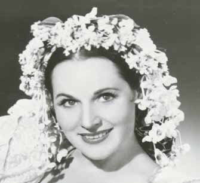
Don Giovanni {117}
Metropolitan Opera House; 11/29/1944
Debut: Florence Kirk
Review |
[Met Performance] CID:138030
Aida {471}
Metropolitan Opera House; 11/30/1944
Debuts: Philip Whitfield, Richard Manning, Peggy Smithers
Review |
[Met Performance] CID:138040

La Bohème {375}
Metropolitan Opera House; 12/1/1944
Debut: Hugh Thompson
Review |
[Met Performance] CID:138050
Opera News
Die Walküre {338}
Metropolitan Opera House; 12/2/1944
Debuts: Beal Hober, Jeanne Palmer
Broadcast
Review |
[Met Performance] CID:138060
La Traviata {269}
Metropolitan Opera House; 12/2/1944
Review |
[Met Concert/Gala] CID:138070
Gala Program
Metropolitan Opera House; 12/3/1944
|
[Met Performance] CID:138080
Tristan und Isolde {308}
Metropolitan Opera House; 12/4/1944
Review |
[Met Performance] CID:138090
Faust {449}
American Academy of Music, Philadelphia, Pennsylvania; 12/5/1944
Review |
[Met Performance] CID:138100
Il Trovatore {223}
Metropolitan Opera House; 12/6/1944
Debut: Regina Resnik
Review |
[Met Performance] CID:138110
Carmen {402}
Metropolitan Opera House; 12/7/1944
Review |
[Met Performance] CID:138120
Götterdämmerung {155}
Metropolitan Opera House; 12/8/1944
Review |
[Met Performance] CID:138130
Opera News
Don Giovanni {118}
Metropolitan Opera House; 12/9/1944
Broadcast
Review |
[Met Performance] CID:138140
Cavalleria Rusticana {326}
Pagliacci {365}
Metropolitan Opera House; 12/9/1944
|
[Met Concert/Gala] CID:138150
Gala Program
Metropolitan Opera House; 12/10/1944
|
[Met Performance] CID:138160
La Traviata {270}
Metropolitan Opera House; 12/11/1944
|
[Met Performance] CID:138170
Lucia di Lammermoor {205}
Metropolitan Opera House; 12/13/1944
Review |
[Met Performance] CID:138180
Die Walküre {339}
Metropolitan Opera House; 12/14/1944
Review |
[Met Performance] CID:138190
Aida {472}
Metropolitan Opera House; 12/15/1944
Debut: Lorraine Ammerman
Broadcast |
[Met Performance] CID:138200
Norma {47}
Metropolitan Opera House; 12/15/1944
Review |
[Met Performance] CID:138210
Faust {450}
Metropolitan Opera House; 12/16/1944
Broadcast |
[Met Performance] CID:138220
Aida {473}
Metropolitan Opera House; 12/16/1944
|
[Met Performance] CID:138230
Don Giovanni {119}
Metropolitan Opera House; 12/18/1944
Review |
[Met Performance] CID:138240
La Traviata {271}
American Academy of Music, Philadelphia, Pennsylvania; 12/19/1944
Review |
[Met Performance] CID:138250
Lohengrin {459}
Metropolitan Opera House; 12/20/1944
Debuts: Morton Bowe, William Hargrave
Review |
[Met Performance] CID:138260
Cavalleria Rusticana {327}
Pagliacci {366}
Metropolitan Opera House; 12/21/1944
|
[Met Performance] CID:138270
Rigoletto {256}
Metropolitan Opera House; 12/22/1944
Review |
[Met Performance] CID:138280
Tristan und Isolde {309}
Metropolitan Opera House; 12/23/1944
Broadcast |
[Met Performance] CID:138290
La Bohème {376}
Metropolitan Opera House; 12/23/1944
|
[Met Performance] CID:138300
Carmen {403}
Metropolitan Opera House; 12/25/1944
|
[Met Performance] CID:138310
Le Nozze di Figaro {86}
Metropolitan Opera House; 12/27/1944
Debut: Josef Carmassi
Review |
[Met Performance] CID:138320
La Traviata {272}
Metropolitan Opera House; 12/28/1944
|
[Met Performance] CID:138330
Il Barbiere di Siviglia {191}
Metropolitan Opera House; 12/28/1944
Review |
[Met Performance] CID:138340
Faust {451}
Metropolitan Opera House; 12/29/1944
|
[Met Performance] CID:138350
Norma {48}
Metropolitan Opera House; 12/30/1944
Broadcast |
[Met Performance] CID:138360
Il Trovatore {224}
Metropolitan Opera House; 12/30/1944
|
[Met Performance] CID:138370
La Bohème {377}
Metropolitan Opera House; 12/31/1944
|
[Met Performance] CID:138380
Aida {474}
Metropolitan Opera House; 01/1/1945
Review |
[Met Performance] CID:138390
Lohengrin {460}
American Academy of Music, Philadelphia, Pennsylvania; 01/2/1945
Review |
[Met Performance] CID:138400
Rigoletto {257}
Metropolitan Opera House; 01/3/1945
Review |
[Met Performance] CID:138410
Pelléas et Mélisande {41}
Metropolitan Opera House; 01/4/1945
Review |
[Met Performance] CID:138420
Die Zauberflöte {90}
Metropolitan Opera House; 01/5/1945
Debut: Mimi Benzell
Review |
[Met Performance] CID:138430
Lucia di Lammermoor {206}
Metropolitan Opera House; 01/6/1945
Broadcast |
[Met Performance] CID:138440
Carmen {404}
Metropolitan Opera House; 01/6/1945
|
[Met Concert/Gala] CID:138450
Gala Program
Metropolitan Opera House; 01/7/1945
|
[Met Performance] CID:138460
Le Nozze di Figaro {87}
Metropolitan Opera House; 01/8/1945
|
[Met Performance] CID:138470
Cavalleria Rusticana {328}
Pagliacci {367}
Metropolitan Opera House; 01/10/1945
|
[Met Performance] CID:138480
La Bohème {378}
Metropolitan Opera House; 01/11/1945
|
[Met Performance] CID:138490
Die Meistersinger von Nürnberg {228}
Metropolitan Opera House; 01/12/1945
Debut: Julius Dove
Review |
[Met Performance] CID:138500
Chapter: Pelléas Broadcast
Pelléas et Mélisande {42}
Metropolitan Opera House; 01/13/1945
Broadcast |
[Met Performance] CID:138510
Il Barbiere di Siviglia {192}
Metropolitan Opera House; 01/13/1945
|
[Met Concert/Gala] CID:138520
Gala Program
Metropolitan Opera House; 01/14/1945
|
[Met Performance] CID:138530
Lohengrin {461}
Metropolitan Opera House; 01/15/1945
Review |
[Met Performance] CID:138540
La Bohème {379}
American Academy of Music, Philadelphia, Pennsylvania; 01/16/1945
Review |
[Met Performance] CID:138550
Mignon {91}
Metropolitan Opera House; 01/17/1945
Debut: Francesca Ludova
Review |
[Met Performance] CID:138560
Die Walküre {340}
Metropolitan Opera House; 01/18/1945
Review |
[Met Performance] CID:138570
Lucia di Lammermoor {207}
Metropolitan Opera House; 01/19/1945
|
[Met Performance] CID:138580
Rigoletto {258}
Metropolitan Opera House; 01/20/1945
Broadcast |
[Met Performance] CID:138590
Don Giovanni {120}
Metropolitan Opera House; 01/20/1945
|
[Met Concert/Gala] CID:138600
Gala Program
Metropolitan Opera House; 01/21/1945
|
[Met Performance] CID:138610
Norma {49}
Metropolitan Opera House; 01/22/1945
|
[Met Performance] CID:138620
Die Zauberflöte {91}
Metropolitan Opera House; 01/24/1945
|
[Met Performance] CID:138630
La Gioconda {143}
Metropolitan Opera House; 01/25/1945
Debuts: Richard Tucker, Ann Lee
Review |
[Met Performance] CID:138640
Lohengrin {462}
Metropolitan Opera House; 01/26/1945
|
[Met Performance] CID:138650
Il Trovatore {225}
Metropolitan Opera House; 01/26/1945
|
[Met Performance] CID:138660
Opera News
Opera News 2
Mignon {92}
Metropolitan Opera House; 01/27/1945
Broadcast |
[Met Performance] CID:138670
Faust {452}
Metropolitan Opera House; 01/27/1945
|
[Met Concert/Gala] CID:138680
Gala Program
Metropolitan Opera House; 01/28/1945
|
[Met Performance] CID:138690
Pelléas et Mélisande {43}
Metropolitan Opera House; 01/29/1945
|
[Met Performance] CID:138700
Die Meistersinger von Nürnberg {229}
American Academy of Music, Philadelphia, Pennsylvania; 01/30/1945
Review |
[Met Performance] CID:138710
Aida {475}
Metropolitan Opera House; 01/31/1945
Debut: Andrea Fodor |
[Met Performance] CID:138720
Le Nozze di Figaro {88}
Metropolitan Opera House; 02/1/1945
|
[Met Performance] CID:138730
Das Rheingold {91}
Ring Cycle [75] Uncut
Metropolitan Opera House; 02/2/1945
Review |
[Met Performance] CID:138740
La Bohème {380}
Metropolitan Opera House; 02/3/1945
Broadcast |
[Met Performance] CID:138750
Tristan und Isolde {310}
Metropolitan Opera House; 02/3/1945
Debut: Frederic Gynrod
Review |
[Met Performance] CID:138760
La Gioconda {144}
Metropolitan Opera House; 02/5/1945
|
[Met Performance] CID:138770
Die Walküre {341}
Ring Cycle [75] Uncut
Metropolitan Opera House; 02/6/1945
|
[Met Performance] CID:138780
Carmen {405}
Metropolitan Opera House; 02/7/1945
|
[Met Performance] CID:138790
Rigoletto {259}
Metropolitan Opera House; 02/8/1945
|
[Met Performance] CID:138800
Mignon {93}
Metropolitan Opera House; 02/9/1945
|
[Met Performance] CID:138810
Die Meistersinger von Nürnberg {230}
Metropolitan Opera House; 02/10/1945
Broadcast (Partial)
Review |
[Met Performance] CID:138820
Cavalleria Rusticana {329}
Pagliacci {368}
Metropolitan Opera House; 02/10/1945
|
[Met Concert/Gala] CID:138830
Gala Program
Metropolitan Opera House; 02/11/1945
|
[Met Performance] CID:138840
Die Zauberflöte {92}
Metropolitan Opera House; 02/12/1945
|
[Met Performance] CID:138850
Siegfried {199}
Ring Cycle [75] Uncut
Metropolitan Opera House; 02/13/1945
Review |
[Met Performance] CID:138860
Pelléas et Mélisande {44}
Metropolitan Opera House; 02/14/1945
Review |
[Met Performance] CID:138870
Faust {453}
Metropolitan Opera House; 02/15/1945
|
[Met Performance] CID:138880
Aida {476}
Metropolitan Opera House; 02/16/1945
|
[Met Performance] CID:138890
Il Barbiere di Siviglia {193}
Metropolitan Opera House; 02/16/1945
|
[Met Performance] CID:138900
La Traviata {273}
Metropolitan Opera House; 02/17/1945
Broadcast |
[Met Performance] CID:138910
Le Nozze di Figaro {89}
Metropolitan Opera House; 02/17/1945
|
[Met Performance] CID:138920
Mignon {94}
Metropolitan Opera House; 02/19/1945
Review |
[Met Performance] CID:138930
Götterdämmerung {156}
Ring Cycle [75] Uncut
Metropolitan Opera House; 02/20/1945
Review |
[Met Performance] CID:138940
La Gioconda {145}
Metropolitan Opera House; 02/21/1945
|
[Met Performance] CID:138950
Lucia di Lammermoor {208}
Metropolitan Opera House; 02/22/1945
|
[Met Performance] CID:138960
Der Rosenkavalier {96}
Metropolitan Opera House; 02/23/1945
Reviews |
[Met Performance] CID:138970
Lohengrin {463}
Metropolitan Opera House; 02/24/1945
Broadcast |
[Met Performance] CID:138980
Rigoletto {260}
Metropolitan Opera House; 02/24/1945
Review |
[Met Performance] CID:138990
Die Meistersinger von Nürnberg {231}
Metropolitan Opera House; 02/26/1945
Review |
[Met Performance] CID:139000
Mignon {95}
American Academy of Music, Philadelphia, Pennsylvania; 02/27/1945
|
[Met Performance] CID:139010
La Bohème {381}
Metropolitan Opera House; 02/28/1945
|
[Met Performance] CID:139020

Le Coq d'Or {64}
Metropolitan Opera House; 03/1/1945
Review |
[Met Performance] CID:139030
Le Nozze di Figaro {90}
Metropolitan Opera House; 03/2/1945
|
[Met Performance] CID:139040
La Gioconda {146}
Metropolitan Opera House; 03/3/1945
Broadcast |
[Met Performance] CID:139050
Mignon {96}
Metropolitan Opera House; 03/3/1945
|
[Met Concert/Gala] CID:139060
Gala Program
Metropolitan Opera House; 03/4/1945
|
[Met Performance] CID:139070
Der Rosenkavalier {97}
Metropolitan Opera House; 03/5/1945
|
[Met Performance] CID:139080
Aida {477}
Metropolitan Opera House; 03/6/1945
|
[Met Performance] CID:139090
Carmen {406}
Metropolitan Opera House; 03/7/1945
Review |
[Met Performance] CID:139100
Norma {50}
Metropolitan Opera House; 03/8/1945
|
[Met Performance] CID:139110
La Traviata {274}
Metropolitan Opera House; 03/9/1945
Review |
[Met Performance] CID:139120
Le Coq d'Or {65}
Metropolitan Opera House; 03/10/1945
Broadcast |
[Met Performance] CID:139130
Das Rheingold {92}
Ring Cycle [76]
Metropolitan Opera House; 03/10/1945
Review |
[Met Performance] CID:139140
Aida {478}
Metropolitan Opera House; 03/11/1945
|
[Met Performance] CID:139150
Lucia di Lammermoor {209}
Metropolitan Opera House; 03/12/1945
|
[Met Performance] CID:139160
La Gioconda {147}
American Academy of Music, Philadelphia, Pennsylvania; 03/13/1945
Review |
[Met Performance] CID:139170
Il Barbiere di Siviglia {194}
Metropolitan Opera House; 03/14/1945
Reviews |
[Met Performance] CID:139180
Lohengrin {464}
Metropolitan Opera House; 03/15/1945
|
[Met Performance] CID:139190
La Bohème {382}
Metropolitan Opera House; 03/16/1945
|
[Met Performance] CID:139200
Fidelio {67}
Metropolitan Opera House; 03/17/1945
Debut: Kenneth Schon
Broadcast
Reviews |
[Met Performance] CID:139210
Die Walküre {342}
Ring Cycle [76]
Metropolitan Opera House; 03/17/1945
|
[Met Concert/Gala] CID:139220
Gala Program
Metropolitan Opera House; 03/18/1945
|
[Met Performance] CID:139230
Le Coq d'Or {66}
Metropolitan Opera House; 03/19/1945
|
[Met Performance] CID:139240
Don Giovanni {121}
American Academy of Music, Philadelphia, Pennsylvania; 03/20/1945
Review |
[Met Performance] CID:139250
Tristan und Isolde {311}
Metropolitan Opera House; 03/21/1945
|
[Met Performance] CID:139260
Die Meistersinger von Nürnberg {232}
Metropolitan Opera House; 03/22/1945
|
[Met Performance] CID:139270
Aida {479}
Metropolitan Opera House; 03/23/1945
|
[Met Performance] CID:139280
Don Giovanni {122}
Metropolitan Opera House; 03/23/1945
|
[Met Performance] CID:139290
Opera News
Carmen {407}
Metropolitan Opera House; 03/24/1945
Broadcast |
[Met Performance] CID:139300
Siegfried {200}
Ring Cycle [76]
Metropolitan Opera House; 03/24/1945
|
[Met Concert/Gala] CID:139310
Gala Concert
Metropolitan Opera House; 03/25/1945
Broadcast (Texaco Star Theatre only) |
[Met Performance] CID:139320
Fidelio {68}
Metropolitan Opera House; 03/26/1945
|
[Met Performance] CID:139330
Götterdämmerung {157}
American Academy of Music, Philadelphia, Pennsylvania; 03/27/1945
|
[Met Performance] CID:139340
Parsifal {163}
Metropolitan Opera House; 03/28/1945
Review |
[Met Performance] CID:139350
Der Rosenkavalier {98}
Metropolitan Opera House; 03/29/1945
|
[Met Performance] CID:139360
Parsifal {164}
Metropolitan Opera House; 03/30/1945
|
[Met Performance] CID:139370
Cavalleria Rusticana {330}
Pagliacci {369}
Metropolitan Opera House; 03/30/1945
|
[Met Performance] CID:139380
Il Trovatore {226}
Metropolitan Opera House; 03/31/1945
Broadcast |
[Met Performance] CID:139390
Götterdämmerung {158}
Ring Cycle [76]
Metropolitan Opera House; 03/31/1945
|
[Met Performance] CID:139400
Aida {480}
Lyric Theatre, Baltimore, Maryland; 04/2/1945
Debut: Kari Karnatoski
Review |
[Met Performance] CID:139410
Tristan und Isolde {312}
Lyric Theatre, Baltimore, Maryland; 04/3/1945
Review |
[Met Performance] CID:139420
La Traviata {275}
Metropolitan Opera House; 04/4/1945
|
[Met Performance] CID:139430
Norma {51}
Boston Opera House, Boston, Massachusetts; 04/5/1945
Review |
[Met Performance] CID:139440
Tristan und Isolde {313}
Boston Opera House, Boston, Massachusetts; 04/6/1945
Review |
[Met Performance] CID:139450
Lucia di Lammermoor {210}
Boston Opera House, Boston, Massachusetts; 04/7/1945
Review |
[Met Performance] CID:139460
Il Trovatore {227}
Boston Opera House, Boston, Massachusetts; 04/7/1945
Review |
[Met Performance] CID:139470
Don Giovanni {123}
Boston Opera House, Boston, Massachusetts; 04/9/1945
Review |
[Met Performance] CID:139480
Parsifal {165}
Boston Opera House, Boston, Massachusetts; 04/10/1945
Review |
[Met Performance] CID:139490
Aida {481}
Boston Opera House, Boston, Massachusetts; 04/11/1945
Review |
[Met Performance] CID:139500
Il Barbiere di Siviglia {195}
Boston Opera House, Boston, Massachusetts; 04/11/1945
Review |
[Met Performance] CID:139510
Pelléas et Mélisande {45}
Boston Opera House, Boston, Massachusetts; 04/12/1945
Review |
[Met Performance] CID:139520
Die Meistersinger von Nürnberg {233}
Boston Opera House, Boston, Massachusetts; 04/13/1945
Review |
[Met Performance] CID:139530
Mignon {97}
Boston Opera House, Boston, Massachusetts; 04/14/1945
Review |
[Met Performance] CID:139540
Rigoletto {261}
Boston Opera House, Boston, Massachusetts; 04/14/1945
Review |
[Met Performance] CID:139550
Faust {454}
Public Hall, Cleveland, Ohio; 04/16/1945
Review |
[Met Performance] CID:139560
Die Meistersinger von Nürnberg {234}
Public Hall, Cleveland, Ohio; 04/17/1945
Review |
[Met Performance] CID:139570
Aida {482}
Public Hall, Cleveland, Ohio; 04/18/1945
|
[Met Performance] CID:139580
La Bohème {383}
Public Hall, Cleveland, Ohio; 04/19/1945
Review |
[Met Performance] CID:139590
Le Coq d'Or {67}
Public Hall, Cleveland, Ohio; 04/20/1945
Debut: Louis Rosen |
[Met Performance] CID:139600
Lucia di Lammermoor {211}
Public Hall, Cleveland, Ohio; 04/20/1945
|
[Met Performance] CID:139610
Le Nozze di Figaro {91}
Public Hall, Cleveland, Ohio; 04/21/1945
|
[Met Performance] CID:139620
La Gioconda {148}
Public Hall, Cleveland, Ohio; 04/21/1945
|
[Met Performance] CID:139630
Il Barbiere di Siviglia {196}
Purdue University Hall of Music, Lafayette, Indiana; 04/23/1945
Review |
[Met Performance] CID:139640
Tristan und Isolde {314}
Milwaukee Auditorium, Milwaukee, Wisconsin; 04/24/1945
Review |
[Met Performance] CID:139650
Lucia di Lammermoor {212}
Northrup Auditorium, Minneapolis, Minnesota; 04/26/1945
Review |
[Met Performance] CID:139660
Die Walküre {343}
Northrup Auditorium, Minneapolis, Minnesota; 04/27/1945
Review |
[Met Performance] CID:139670
Don Giovanni {124}
Minneapolis Auditorium, Minneapolis, Minnesota; 04/28/1945
|
[Met Performance] CID:139680
Carmen {408}
Northrup Auditorium, Minneapolis, Minnesota; 04/28/1945
Review |
[Met Performance] CID:139690
Die Walküre {344}
Milwaukee Auditorium, Milwaukee, Wisconsin; 04/29/1945
Review |
[Met Performance] CID:139700
Lucia di Lammermoor {213}
Chicago Opera House, Chicago, Illinois; 04/30/1945
Review |
[Met Performance] CID:139710
Lohengrin {465}
Chicago, Illinois; 05/1/1945
Review |
[Met Performance] CID:139720
Don Giovanni {125}
Chicago Opera House, Chicago, Illinois; 05/2/1945
Review |
[Met Performance] CID:139730
Le Coq d'Or {68}
Chicago Opera House, Chicago, Illinois; 05/3/1945
Review |
[Met Performance] CID:139740
Die Meistersinger von Nürnberg {235}
Chicago Opera House, Chicago, Illinois; 05/4/1945
Review |
[Met Performance] CID:139750
Norma {52}
Chicago Opera House, Chicago, Illinois; 05/5/1945
Review |
[Met Performance] CID:139760
La Bohème {384}
Chicago Opera House, Chicago, Illinois; 05/5/1945
Review |
[Met Performance] CID:139770
Lucia di Lammermoor {214}
Eastman Theatre, Rochester, New York; 5/7/1945
|
[Met Performance] CID:140000
Roméo et Juliette {178}
Metropolitan Opera House; 11/23/1945
Debut: Thomas Hayward |
[Met Performance] CID:140010
Lohengrin {466}
Metropolitan Opera House; 11/26/1945
Opening Night {61}
Edward Johnson, General Manager
Debuts: Torsten Ralf, Fritz Busch
Broadcast
Review |
[Met Performance] CID:140020
Der Rosenkavalier {99}
American Academy of Music, Philadelphia, Pennsylvania; 11/27/1945
Debut: Edward Caton |
[Met Performance] CID:140030
Fidelio {69}
Metropolitan Opera House; 11/28/1945
Review |
[Met Performance] CID:140040
Rigoletto {262}
Metropolitan Opera House; 11/29/1945
Reviews |
[Met Performance] CID:140050
Der Rosenkavalier {100}
Metropolitan Opera House; 11/30/1945
Review |
[Met Performance] CID:140060
Die Zauberflöte {93}
Metropolitan Opera House; 12/1/1945
Debut: Wellington Ezekiel
Broadcast
Review |
[Met Performance] CID:140070
La Bohème {385}
Metropolitan Opera House; 12/1/1945
Debut: Dorothy Kirsten
Review |
[Met Performance] CID:140080
Roméo et Juliette {179}
Metropolitan Opera House; 12/3/1945
Review |
[Met Performance] CID:140090
Tosca {270}
Metropolitan Opera House; 12/5/1945
Review |
[Met Performance] CID:140100
Die Meistersinger von Nürnberg {236}
Metropolitan Opera House; 12/6/1945
Reviews |
[Met Performance] CID:140110
Il Barbiere di Siviglia {197}
Metropolitan Opera House; 12/7/1945
Review |
[Met Performance] CID:140120
Un Ballo in Maschera {37}
Metropolitan Opera House; 12/8/1945
Debuts: Pierrette Alarie, Anne Barlow, William Sarazen, James Nygren
Broadcast
Review |
[Met Performance] CID:140130
Lohengrin {467}
Metropolitan Opera House; 12/8/1945
|
[Met Concert/Gala] CID:140140
Gala Program
Metropolitan Opera House; 12/9/1945
|
[Met Performance] CID:140150
Rigoletto {263}
Metropolitan Opera House; 12/10/1945
|
[Met Performance] CID:140160
Roméo et Juliette {180}
American Academy of Music, Philadelphia, Pennsylvania; 12/11/1945
|
[Met Performance] CID:140170
Der Rosenkavalier {101}
Metropolitan Opera House; 12/12/1945
|
[Met Performance] CID:140180
Don Giovanni {126}
Metropolitan Opera House; 12/13/1945
Review |
[Met Performance] CID:140190
Tannhäuser {345}
Metropolitan Opera House; 12/14/1945
Debut: Stephen Billings
Review |
[Met Performance] CID:140200
Die Meistersinger von Nürnberg {237}
Metropolitan Opera House; 12/15/1945
Broadcast (Partial) |
[Met Performance] CID:140210
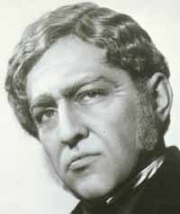
La Traviata {276}
Metropolitan Opera House; 12/15/1945
Debut: Robert Merrill
Review |
[Met Concert/Gala] CID:140220
Gala Program
Metropolitan Opera House; 12/16/1945
|
[Met Performance] CID:140230
Fidelio {70}
Metropolitan Opera House; 12/17/1945
Review |
[Met Performance] CID:140240
Tannhäuser {346}
American Academy of Music, Philadelphia, Pennsylvania; 12/18/1945
Review |
[Met Performance] CID:140250
Roméo et Juliette {181}
Metropolitan Opera House; 12/19/1945
Review |
[Met Performance] CID:140260
Tosca {271}
Metropolitan Opera House; 12/20/1945
|
[Met Performance] CID:140270
La Gioconda {149}
Metropolitan Opera House; 12/21/1945
Review |
[Met Performance] CID:140280
Lohengrin {468}
Metropolitan Opera House; 12/22/1945
Broadcast
Review |
[Met Performance] CID:140290
Die Zauberflöte {94}
Metropolitan Opera House; 12/22/1945
|
[Met Performance] CID:140300
Il Barbiere di Siviglia {198}
Metropolitan Opera House; 12/24/1945
|
[Met Performance] CID:140310
Lucia di Lammermoor {215}
Metropolitan Opera House; 12/25/1945
Review |
[Met Performance] CID:140320
Un Ballo in Maschera {38}
Metropolitan Opera House; 12/26/1945
|
[Met Performance] CID:140330
Tannhäuser {347}
Metropolitan Opera House; 12/27/1945
Review |
[Met Performance] CID:140340
Carmen {409}
Metropolitan Opera House; 12/28/1945
Debut: Ana Ricarda |
[Met Performance] CID:140350
Don Giovanni {127}
Metropolitan Opera House; 12/28/1945
|
[Met Performance] CID:140360
Opera News
Rigoletto {264}
Metropolitan Opera House; 12/29/1945
Broadcast |
[Met Performance] CID:140370
Lucia di Lammermoor {216}
Metropolitan Opera House; 12/29/1945
|
[Met Performance] CID:140380
La Traviata {277}
Metropolitan Opera House; 12/31/1945
|
[Met Performance] CID:140390
La Bohème {386}
Metropolitan Opera House; 01/1/1946
|
[Met Performance] CID:140400
La Gioconda {150}
Metropolitan Opera House; 01/2/1946
|
[Met Performance] CID:140410
Roméo et Juliette {182}
Metropolitan Opera House; 01/3/1946
|
[Met Performance] CID:140420
Lohengrin {469}
Metropolitan Opera House; 01/4/1946
|
[Met Performance] CID:140430
New production (Il Tabarro)
Il Tabarro {12}
Don Pasquale {38}
Metropolitan Opera House; 01/5/1946
Broadcast
Debut: Dino Yannopoulos
Review |
[Met Performance] CID:140440
Fidelio {71}
Metropolitan Opera House; 01/5/1946
|
[Met Concert/Gala] CID:140450
Gala Program
Metropolitan Opera House; 01/6/1946
|
[Met Performance] CID:140460
Carmen {410}
Metropolitan Opera House; 01/7/1946
Debut: Amelia Gilmore |
[Met Performance] CID:140470
Tosca {272}
American Academy of Music, Philadelphia, Pennsylvania; 01/8/1946
|
[Met Performance] CID:140480
Die Meistersinger von Nürnberg {238}
Metropolitan Opera House; 01/9/1946
Debut: Joel Berglund
Review |
[Met Performance] CID:140490
Lucia di Lammermoor {217}
Metropolitan Opera House; 01/10/1946
|
[Met Performance] CID:140500
Tosca {273}
Metropolitan Opera House; 01/11/1946
|
[Met Performance] CID:140510
Opera News
Les Contes d'Hoffmann {66}
Metropolitan Opera House; 01/12/1946
Broadcast
Review |
[Met Performance] CID:140520
Don Giovanni {128}
Metropolitan Opera House; 01/12/1946
|
[Met Concert/Gala] CID:140530
Gala Program
Metropolitan Opera House; 01/13/1946
|
[Met Performance] CID:140540
Un Ballo in Maschera {39}
Metropolitan Opera House; 01/14/1946
|
[Met Performance] CID:140550
Il Tabarro {13}
Don Pasquale {39}
Metropolitan Opera House; 01/16/1946
|
[Met Performance] CID:140560
Die Zauberflöte {95}
Metropolitan Opera House; 01/17/1946
|
[Met Performance] CID:140570
Carmen {411}
Metropolitan Opera House; 01/18/1946
Debut: Florence Quartararo
Review |
[Met Performance] CID:140580
Der Rosenkavalier {102}
Metropolitan Opera House; 01/18/1946
|
[Met Performance] CID:140590
Madama Butterfly {260}
Metropolitan Opera House; 01/19/1946
Broadcast
Review |
[Met Performance] CID:140600
La Gioconda {151}
Metropolitan Opera House; 01/19/1946
Debut: Lola Michel |
[Met Concert/Gala] CID:140610
Gala Program
Metropolitan Opera House; 01/20/1946
|
[Met Performance] CID:140620
Tannhäuser {348}
Metropolitan Opera House; 01/21/1946
|
[Met Performance] CID:140630
Il Tabarro {14}
Don Pasquale {40}
American Academy of Music, Philadelphia, Pennsylvania; 01/22/1946
|
[Met Performance] CID:140640
La Traviata {278}
Metropolitan Opera House; 01/23/1946
|
[Met Performance] CID:140650
La Bohème {387}
Metropolitan Opera House; 01/24/1946
|
[Met Performance] CID:140660
Die Walküre {345}
Metropolitan Opera House; 01/25/1946
|
[Met Performance] CID:140670
Roméo et Juliette {183}
Metropolitan Opera House; 01/26/1946
Broadcast |
[Met Performance] CID:140680
Carmen {412}
Metropolitan Opera House; 01/26/1946
|
[Met Concert/Gala] CID:140690
Gala Program
Metropolitan Opera House; 01/27/1946
|
[Met Performance] CID:140700
Don Giovanni {129}
Metropolitan Opera House; 01/28/1946
|
[Met Performance] CID:140710
Madama Butterfly {261}
Metropolitan Opera House; 01/30/1946
|
[Met Performance] CID:140720
Un Ballo in Maschera {40}
Metropolitan Opera House; 01/31/1946
|
[Met Performance] CID:140730
Il Barbiere di Siviglia {199}
Metropolitan Opera House; 02/1/1946
|
[Met Performance] CID:140740
Les Contes d'Hoffmann {67}
Metropolitan Opera House; 02/1/1946
|
[Met Performance] CID:140750
Tristan und Isolde {315}
Metropolitan Opera House; 02/2/1946
Broadcast
Review |
[Met Performance] CID:140760
Il Barbiere di Siviglia {200}
Metropolitan Opera House; 02/2/1946
|
[Met Concert/Gala] CID:140770
Gala Program
Metropolitan Opera House; 02/3/1946
|
[Met Performance] CID:140780
Lucia di Lammermoor {218}
Metropolitan Opera House; 02/4/1946
|
[Met Performance] CID:140790
Die Walküre {346}
American Academy of Music, Philadelphia, Pennsylvania; 02/5/1946
|
[Met Performance] CID:140800
Die Zauberflöte {96}
Metropolitan Opera House; 02/6/1946
|
[Met Performance] CID:140810
Carmen {413}
Metropolitan Opera House; 02/7/1946
|
[Met Performance] CID:140820
Il Tabarro {15}
Don Pasquale {41}
Metropolitan Opera House; 02/8/1946
|
[Met Performance] CID:140830
Tosca {274}
Metropolitan Opera House; 02/9/1946
Broadcast |
[Met Performance] CID:140840
Die Meistersinger von Nürnberg {239}
Metropolitan Opera House; 02/9/1946
Review |
[Met Performance] CID:140850
Götterdämmerung {159}
Metropolitan Opera House; 02/11/1946
|
[Met Performance] CID:350423
Cancelled Performance
02/12/1946
A scheduled performance of Rigoletto was cancelled because of a fuel strike. |
[Met Performance] CID:140860
Les Contes d'Hoffmann {68}
Metropolitan Opera House; 02/13/1946
|
[Met Performance] CID:140870
Tristan und Isolde {316}
Metropolitan Opera House; 02/14/1946
|
[Met Performance] CID:140880
Fidelio {72}
Metropolitan Opera House; 02/15/1946
|
[Met Performance] CID:140890
Der Rosenkavalier {103}
Metropolitan Opera House; 02/16/1946
Broadcast |
[Met Performance] CID:140900
Un Ballo in Maschera {41}
Metropolitan Opera House; 02/16/1946
|
[Met Concert/Gala] CID:140910
Gala Performance
Metropolitan Opera House; 02/17/1946
Lauritz Melchior's 20th Anniversary
Reviews |
[Met Performance] CID:140920
La Bohème {388}
Metropolitan Opera House; 02/18/1946
Debut: Giacomo Vaghi |
[Met Performance] CID:140930
Fidelio {73}
American Academy of Music, Philadelphia, Pennsylvania; 02/19/1946
|
[Met Performance] CID:140940
Il Barbiere di Siviglia {201}
Metropolitan Opera House; 02/20/1946
|
[Met Performance] CID:140950
Lucia di Lammermoor {219}
Metropolitan Opera House; 02/21/1946
|
[Met Performance] CID:140960
Carmen {414}
Metropolitan Opera House; 02/22/1946
Debuts: Ramon Vinay, Irene Hawthorne
Reviews |
[Met Performance] CID:140970
Otello {83}
Metropolitan Opera House; 02/23/1946
Broadcast |
[Met Performance] CID:140980
Tosca {275}
Metropolitan Opera House; 02/23/1946
|
[Met Performance] CID:140990
Les Contes d'Hoffmann {69}
Metropolitan Opera House; 02/25/1946
|
[Met Performance] CID:141000
Rigoletto {265}
Metropolitan Opera House; 02/26/1946
|
[Met Performance] CID:141010
Tannhäuser {349}
Metropolitan Opera House; 02/27/1946
|
[Met Performance] CID:141020
La Gioconda {152}
Metropolitan Opera House; 02/28/1946
|
[Met Performance] CID:141030
Roméo et Juliette {184}
Metropolitan Opera House; 03/1/1946
|
[Met Performance] CID:141040
La Bohème {389}
Metropolitan Opera House; 03/2/1946
Broadcast
Review |
[Met Performance] CID:141050
Der Rosenkavalier {104}
Metropolitan Opera House; 03/2/1946
Debut: Max Rudolf |
[Met Concert/Gala] CID:141060
Gala Program
Metropolitan Opera House; 03/3/1946
|
[Met Performance] CID:141070
Die Zauberflöte {97}
Metropolitan Opera House; 03/4/1946
|
[Met Performance] CID:141080
Rigoletto {266}
American Academy of Music, Philadelphia, Pennsylvania; 03/5/1946
|
[Met Performance] CID:141090
Parsifal {166}
Metropolitan Opera House; 03/6/1946
|
[Met Performance] CID:141100
La Traviata {279}
Metropolitan Opera House; 03/7/1946
|
[Met Performance] CID:141110
Die Meistersinger von Nürnberg {240}
Metropolitan Opera House; 03/8/1946
|
[Met Performance] CID:141120
Lucia di Lammermoor {220}
Metropolitan Opera House; 03/9/1946
Broadcast |
[Met Performance] CID:141130
Madama Butterfly {262}
Metropolitan Opera House; 03/9/1946
|
[Met Performance] CID:141140
Otello {84}
Metropolitan Opera House; 03/11/1946
|
[Met Performance] CID:141150
Carmen {415}
Metropolitan Opera House; 03/13/1946
|
[Met Performance] CID:141160
Götterdämmerung {160}
Metropolitan Opera House; 03/14/1946
|
[Met Performance] CID:141170
Carmen {416}
Metropolitan Opera House; 03/15/1946
|
[Met Performance] CID:141180
La Bohème {390}
Metropolitan Opera House; 03/15/1946
|
[Met Performance] CID:141190
Opera News
La Gioconda {153}
Metropolitan Opera House; 03/16/1946
Broadcast |
[Met Performance] CID:141200
Rigoletto {267}
Metropolitan Opera House; 03/16/1946
|
[Met Performance] CID:141210
Tristan und Isolde {317}
Metropolitan Opera House; 03/18/1946
|
[Met Performance] CID:141220
Otello {85}
American Academy of Music, Philadelphia, Pennsylvania; 03/19/1946
|
[Met Performance] CID:141230
Don Giovanni {130}
Metropolitan Opera House; 03/20/1946
Ezio Pinza's 20th Anniversary
Reviews |
[Met Performance] CID:141240
Carmen {417}
Metropolitan Opera House; 03/21/1946
|
[Met Performance] CID:141250
Madama Butterfly {263}
Metropolitan Opera House; 03/21/1946
|
[Met Performance] CID:141260
Parsifal {167}
Metropolitan Opera House; 03/22/1946
|
[Met Performance] CID:141270
La Traviata {280}
Metropolitan Opera House; 03/23/1946
Broadcast |
[Met Performance] CID:141280
Tannhäuser {350}
Metropolitan Opera House; 03/23/1946
|
[Met Concert/Gala] CID:141290
Gala Performance
Metropolitan Opera House; 03/24/1946
|
[Met Performance] CID:141300
La Gioconda {154}
Metropolitan Opera House; 03/25/1946
|
[Met Performance] CID:141310
Die Meistersinger von Nürnberg {241}
American Academy of Music, Philadelphia, Pennsylvania; 03/26/1946
Review |
[Met Performance] CID:141320
Götterdämmerung {161}
Metropolitan Opera House; 03/27/1946
|
[Met Performance] CID:141330
Il Barbiere di Siviglia {202}
Metropolitan Opera House; 03/28/1946
|
[Met Performance] CID:141340
Il Barbiere di Siviglia {203}
Metropolitan Opera House; 03/29/1946
|
[Met Performance] CID:141350
Otello {86}
Metropolitan Opera House; 03/29/1946
|
[Met Performance] CID:141360
Die Walküre {347}
Metropolitan Opera House; 03/30/1946
Broadcast |
[Met Performance] CID:141370
Carmen {418}
Metropolitan Opera House; 03/30/1946
Debut: Mary Henderson |
[Met Performance] CID:141380
La Gioconda {155}
Lyric Theater, Baltimore, Maryland; 04/1/1946
|
[Met Performance] CID:141390
Tannhäuser {351}
Lyric Theater, Baltimore, Maryland; 04/2/1946
|
[Met Performance] CID:141400
Madama Butterfly {264}
Metropolitan Opera House; 04/3/1946
|
[Met Performance] CID:141410
Tannhäuser {352}
Boston Opera House, Boston, Massachusetts; 04/4/1946
Review |
[Met Performance] CID:141420
Der Rosenkavalier {105}
Boston Opera House, Boston, Massachusetts; 04/5/1946
Review |
[Met Performance] CID:141430
Roméo et Juliette {185}
Boston Opera House, Boston, Massachusetts; 04/6/1946
Review |
[Met Performance] CID:141440
La Traviata {281}
Boston Opera House, Boston, Massachusetts; 04/6/1946
|
[Met Performance] CID:141450
Die Zauberflöte {98}
Boston Opera House, Boston, Massachusetts; 04/8/1946
Review |
[Met Performance] CID:141460
Die Meistersinger von Nürnberg {242}
Boston Opera House, Boston, Massachusetts; 04/9/1946
Review |
[Met Performance] CID:141470
Carmen {419}
Boston Opera House, Boston, Massachusetts; 04/10/1946
|
[Met Performance] CID:141480
La Bohème {391}
Boston Opera House, Boston, Massachusetts; 04/10/1946
Review |
[Met Performance] CID:141490
Un Ballo in Maschera {42}
Boston Opera House, Boston, Massachusetts; 04/11/1946
Review |
[Met Performance] CID:141500
Die Walküre {348}
Boston Opera House, Boston, Massachusetts; 04/12/1946
Review |
[Met Performance] CID:141510
Madama Butterfly {265}
Boston Opera House, Boston, Massachusetts; 04/13/1946
Review |
[Met Performance] CID:141520
Il Barbiere di Siviglia {204}
Boston Opera House, Boston, Massachusetts; 04/13/1946
Review |
[Met Performance] CID:141530
La Traviata {282}
Metropolitan Opera House; 04/15/1946
|
[Met Performance] CID:141540
Parsifal {168}
American Academy of Music, Philadelphia, Pennsylvania; 04/16/1946
|
[Met Performance] CID:141550
Un Ballo in Maschera {43}
Metropolitan Opera House; 04/17/1946
|
[Met Performance] CID:141560
Il Barbiere di Siviglia {205}
Metropolitan Opera House; 04/18/1946
|
[Met Performance] CID:141570
Parsifal {169}
Metropolitan Opera House; 04/19/1946
|
[Met Performance] CID:141580
La Bohème {392}
Metropolitan Opera House; 04/20/1946
Debut: Francisco Tortolero |
[Met Performance] CID:141590
Rigoletto {268}
Metropolitan Opera House; 04/20/1946
|
[Met Performance] CID:141600
Il Barbiere di Siviglia {206}
Eastman Theatre, Rochester, New York; 04/20/1946
|
[Met Performance] CID:141610
Carmen {420}
Cleveland, Ohio; 04/22/1946
|
[Met Performance] CID:141620
Tannhäuser {353}
Cleveland Public Auditorium, Cleveland, Ohio; 04/23/1946
Review |
[Met Performance] CID:141630
Die Zauberflöte {99}
Cleveland Public Auditorium, Cleveland, Ohio; 04/24/1946
Review |
[Met Performance] CID:141640
Madama Butterfly {266}
Cleveland Public Auditorium, Cleveland, Ohio; 04/25/1946
Review |
[Met Performance] CID:141650
Roméo et Juliette {186}
Cleveland Public Auditorium, Cleveland, Ohio; 04/26/1946
|
[Met Performance] CID:141660
Der Rosenkavalier {106}
Cleveland Public Auditorium, Cleveland, Ohio; 04/26/1946
|
[Met Performance] CID:141670
Un Ballo in Maschera {44}
Cleveland Public Auditorium, Cleveland, Ohio; 04/27/1946
|
[Met Performance] CID:141680
Il Barbiere di Siviglia {207}
Cleveland, Ohio; 04/27/1946
|
[Met Performance] CID:141690
La Bohème {393}
Cleveland Public Auditorium, Cleveland, Ohio; 04/28/1946
|
[Met Performance] CID:141700
Tannhäuser {354}
Bloomington, Indiana; 04/29/1946
|
[Met Performance] CID:141710
La Bohème {394}
indiana University Auditorium, Bloomington, Indiana; 04/30/1946
Review |
[Met Performance] CID:141720
Tannhäuser {355}
Minneapolis, Minnesota; 05/2/1946
|
[Met Performance] CID:141730
La Traviata {283}
Northrup Memorial Auditorium, Minneapolis, Minnesota; 05/3/1946
Review |
[Met Performance] CID:141740
Die Zauberflöte {100}
Minneapolis, Minnesota; 05/4/1946
|
[Met Performance] CID:141750
La Bohème {395}
Northrup Memorial auditorium, Minneapolis, Minnesota; 05/4/1946
Review |
[Met Performance] CID:141760
Madama Butterfly {267}
Milwaukee Auditorium, Milwaukee, Wisconsin; 05/5/1946
Review |
[Met Performance] CID:141770
Tannhäuser {356}
Chicago, Illinois; 05/6/1946
Review |
[Met Performance] CID:141780
La Traviata {284}
Chicago, Illinois; 05/7/1946
|
[Met Performance] CID:141790
La Gioconda {156}
Chicago, Illinois; 05/8/1946
Review |
[Met Performance] CID:141800
Die Zauberflöte {101}
Chicago, Illinois; 05/9/1946
|
[Met Performance] CID:141810
Die Walküre {349}
Civic Opera House, Chicago, Illinois; 05/10/1946
Review |
[Met Performance] CID:141820
Der Rosenkavalier {107}
Chicago, Illinois; 05/11/1946
|
[Met Performance] CID:141830
Un Ballo in Maschera {45}
aCivic Opera House,Chicago, Illinois; 05/11/1946
Review |
[Met Performance] CID:141840
Tannhäuser {357}
Municipal Auditorium, St. Louis, Missouri; 05/13/1946
NewReview |
[Met Performance] CID:141850
Carmen {421}
Municipal Auditorium, St. Louis, Missouri; 05/14/1946
Review |
[Met Performance] CID:141860
Rigoletto {269}
Municipal Auditorium, St. Louis, Missouri; 05/15/1946
Review |
[Met Performance] CID:141870
Der Rosenkavalier {108}
Fair Park Auditorium, Dallas, Texas; 05/17/1946
|
[Met Performance] CID:141880
Rigoletto {270}
Fair Park Auditorium, Dallas, Texas; 05/18/1946
|
[Met Performance] CID:141890
Roméo et Juliette {187}
Fair Park Audiitorium, Dallas, Texas; 05/18/1946
|
[Met Performance] CID:141900
Madama Butterfly {268}
Fair Park Auditorium, Dallas, Texas; 05/19/1946
Review |
[Met Performance] CID:141910
Carmen {422}
Memphis Auditorium, Memphis, Tennessee; 05/20/1946
|
[Met Performance] CID:141920
Madama Butterfly {269}
Memphis Auditorium, Memphis, Tennessee; 05/21/1946
Review |
[Met Performance] CID:141930
Rigoletto {271}
Memorial Auditorium, Chattanooga, Tennessee; 5/22/1946
|
[Met Performance] CID:143000
Lakmé {55}
Metropolitan Opera House; 11/11/1946
Opening Night {62}
Edward Johnson, General Manager
Debuts: Irene Jordan, Louis Fourestier |
[Met Performance] CID:143010
Aida {483}
American Academy of Music, Philadelphia, Pennsylvania; 11/12/1946
Debut: Philip Kinsman |
[Met Performance] CID:143020
Le Nozze di Figaro {92}
Metropolitan Opera House; 11/13/1946
Debut: Leslie Chabay
Review |
[Met Performance] CID:143030
Madama Butterfly {270}
Metropolitan Opera House; 11/14/1946
|
[Met Performance] CID:143040
Siegfried {201}
Metropolitan Opera House; 11/15/1946
Debuts: Set Svanholm, Fritz Stiedry |
[Met Performance] CID:143050
Otello {87}
Metropolitan Opera House; 11/16/1946
Broadcast |
[Met Performance] CID:143060
Faust {455}
Metropolitan Opera House; 11/16/1946
Debuts: Renée Mazella, Claramae Turner
Review |
[Met Performance] CID:143070
Aida {484}
Metropolitan Opera House; 11/18/1946
|
[Met Performance] CID:143080
Tristan und Isolde {318}
Metropolitan Opera House; 11/20/1946
Debut: Dezsö Ernster
Review |
[Met Performance] CID:143090
Boris Godunov {105}
Metropolitan Opera House; 11/21/1946
Debut: Jerome Hines |
[Met Performance] CID:143100
Otello {88}
Metropolitan Opera House; 11/22/1946
|
[Met Performance] CID:143110
Lakmé {56}
Metropolitan Opera House; 11/23/1946
Broadcast |
[Met Performance] CID:143120
La Traviata {285}
Metropolitan Opera House; 11/23/1946
|
[Met Performance] CID:143130
Carmen {423}
Metropolitan Opera House; 11/24/1946
|
[Met Performance] CID:143140
Le Nozze di Figaro {93}
Metropolitan Opera House; 11/25/1946
|
[Met Performance] CID:143150
Madama Butterfly {271}
American Academy of Music, Philadelphia, Pennsylvania; 11/26/1946
|
[Met Performance] CID:143160
Lucia di Lammermoor {221}
Metropolitan Opera House; 11/27/1946
|
[Met Performance] CID:143170
Faust {456}
Metropolitan Opera House; 11/28/1946
Debut: Mario Berini |
[Met Performance] CID:143180
Metropolitan Opera Premiere
Die Entführung aus dem Serail {1}
Metropolitan Opera House; 11/29/1946
|
[Met Performance] CID:143190
Tristan und Isolde {319}
Metropolitan Opera House; 11/30/1946
Broadcast |
[Met Performance] CID:143200
Il Barbiere di Siviglia {208}
Metropolitan Opera House; 11/30/1946
Debut: Felix Knight |
[Met Performance] CID:143210
Carmen {424}
Metropolitan Opera House; 12/2/1946
|
[Met Performance] CID:143220
Le Nozze di Figaro {94}
American Academy of Music, Philadelphia, Pennsylvania; 12/3/1946
|
[Met Performance] CID:143230
Aida {485}
Metropolitan Opera House; 12/4/1946
|
[Met Performance] CID:143240
Die Walküre {350}
Metropolitan Opera House; 12/5/1946
|
[Met Performance] CID:143250
Lakmé {57}
Metropolitan Opera House; 12/6/1946
|
[Met Performance] CID:143260
Boris Godunov {106}
Metropolitan Opera House; 12/7/1946
Broadcast |
[Met Performance] CID:143270
Il Trovatore {228}
Metropolitan Opera House; 12/7/1946
|
[Met Performance] CID:143280
Otello {89}
Metropolitan Opera House; 12/9/1946
|
[Met Performance] CID:143290
La Traviata {286}
Metropolitan Opera House; 12/10/1946
|
[Met Performance] CID:143300
Madama Butterfly {272}
Metropolitan Opera House; 12/11/1946
|
[Met Performance] CID:143310
Lucia di Lammermoor {222}
Metropolitan Opera House; 12/12/1946
|
[Met Performance] CID:143320
Tristan und Isolde {320}
Metropolitan Opera House; 12/13/1946
|
[Met Performance] CID:143330
Opera News
Der Rosenkavalier {109}
Metropolitan Opera House; 12/14/1946
Broadcast
Review |
[Met Performance] CID:143340
Faust {457}
Metropolitan Opera House; 12/14/1946
|
[Met Performance] CID:143350
Siegfried {202}
Metropolitan Opera House; 12/16/1946
|
[Met Performance] CID:143360
Lakmé {58}
American Academy of Music, Philadelphia, Pennsylvania; 12/17/1946
Review |
[Met Performance] CID:143370
Die Entführung aus dem Serail {2}
Metropolitan Opera House; 12/18/1946
|
[Met Performance] CID:143380
La Bohème {396}
Metropolitan Opera House; 12/19/1946
Review |
[Met Performance] CID:143390
Boris Godunov {107}
Metropolitan Opera House; 12/20/1946
|
[Met Performance] CID:143400
La Traviata {287}
Metropolitan Opera House; 12/21/1946
Broadcast
Review |
[Met Performance] CID:143410
Die Walküre {351}
Metropolitan Opera House; 12/21/1946
Review |
[Met Concert/Gala] CID:143420
Gala Performance
Metropolitan Opera House; 12/22/1946
|
[Met Performance] CID:143430
Faust {458}
Metropolitan Opera House; 12/23/1946
|
[Met Performance] CID:143440
Lakmé {59}
Metropolitan Opera House; 12/25/1946
|
[Met Performance] CID:143450
Lohengrin {470}
Metropolitan Opera House; 12/26/1946
Review |
[Met Performance] CID:143460
Metropolitan Opera Premiere (Walpurgis Night)
Hänsel und Gretel {141}
Walpurgis Night {1}
Metropolitan Opera House; 12/27/1946
Debuts: Audrey Keane, Fiala Mraz, Tilda Morse, Nina Boneck, Alice Temkin, Alexandra Sawicka, Leila Kantro, Kathryn Sanger, Orrin Hill, Karl Kritz
Review |
[Met Performance] CID:143470
Il Barbiere di Siviglia {209}
Metropolitan Opera House; 12/27/1946
|
[Met Performance] CID:143480
Aida {486}
Metropolitan Opera House; 12/28/1946
Broadcast |
[Met Performance] CID:143490
Madama Butterfly {273}
Metropolitan Opera House; 12/28/1946
Review |
[Met Performance] CID:143500
Hänsel und Gretel {142}
Metropolitan Opera House; 12/29/1946
|
[Met Performance] CID:143510
Der Rosenkavalier {110}
Metropolitan Opera House; 12/30/1946
|
[Met Performance] CID:143520
Rigoletto {272}
Metropolitan Opera House; 12/31/1946
|
[Met Performance] CID:143530
Il Trovatore {229}
Metropolitan Opera House; 01/1/1947
|
[Met Performance] CID:143540
Le Nozze di Figaro {95}
Metropolitan Opera House; 01/2/1947
|
[Met Performance] CID:143550
Carmen {425}
Metropolitan Opera House; 01/2/1947
|
[Met Performance] CID:143560
Lucia di Lammermoor {223}
Metropolitan Opera House; 01/3/1947
|
[Met Performance] CID:143570
Faust {459}
Metropolitan Opera House; 01/4/1947
Broadcast |
[Met Performance] CID:143580
Tristan und Isolde {321}
Metropolitan Opera House; 01/4/1947
|
[Met Performance] CID:143590
Boris Godunov {108}
Metropolitan Opera House; 01/6/1947
|
[Met Performance] CID:143600
Siegfried {203}
American Academy of Music, Philadelphia, Pennsylvania; 01/7/1947
Review |
[Met Performance] CID:143610
Der Rosenkavalier {111}
Metropolitan Opera House; 01/8/1947
|
[Met Performance] CID:143620
Otello {90}
Metropolitan Opera House; 01/9/1947
Review |
[Met Performance] CID:143630
La Bohème {397}
Metropolitan Opera House; 01/10/1947
Debut: Ferruccio Tagliavini
Reviews |
[Met Performance] CID:143640
World Premiere (The Warrior)
The Warrior {1}
Hänsel und Gretel {143}
Metropolitan Opera House; 01/11/1947
Broadcast
Debut: Samuel Leve
Review |
[Met Performance] CID:143650
Aida {487}
Metropolitan Opera House; 01/11/1947
Review |
[Met Performance] CID:143660
Carmen {426}
Metropolitan Opera House; 01/12/1947
Review |
[Met Performance] CID:143670
Rigoletto {273}
Metropolitan Opera House; 01/13/1947
|
[Met Performance] CID:143680
Lohengrin {471}
Metropolitan Opera House; 01/14/1947
|
[Met Performance] CID:143690
Roméo et Juliette {188}
Metropolitan Opera House; 01/15/1947
|
[Met Performance] CID:143700
Il Barbiere di Siviglia {210}
Metropolitan Opera House; 01/16/1947
|
[Met Performance] CID:143710
Faust {460}
Metropolitan Opera House; 01/17/1947
|
[Met Performance] CID:143720
Die Walküre {352}
Metropolitan Opera House; 01/17/1947
Debut: Mihály Székely
Review |
[Met Performance] CID:143730
Die Entführung aus dem Serail {3}
Metropolitan Opera House; 01/18/1947
Broadcast
Review |
[Met Performance] CID:143740
Lakmé {60}
Metropolitan Opera House; 01/18/1947
Review |
[Met Performance] CID:143750
Madama Butterfly {274}
Metropolitan Opera House; 01/20/1947
|
[Met Performance] CID:143760
Der Rosenkavalier {112}
American Academy of Music, Philadelphia, Pennsylvania; 01/21/1947
|
[Met Performance] CID:143770
Siegfried {204}
Metropolitan Opera House; 01/22/1947
Review |
[Met Performance] CID:143780
Aida {488}
Metropolitan Opera House; 01/23/1947
|
[Met Performance] CID:143790
Le Nozze di Figaro {96}
Metropolitan Opera House; 01/24/1947
Review |
[Met Performance] CID:143800
Lohengrin {472}
Metropolitan Opera House; 01/25/1947
Broadcast |
[Met Performance] CID:143810
La Bohème {398}
Metropolitan Opera House; 01/25/1947
|
[Met Performance] CID:143820
Il Trovatore {230}
Metropolitan Opera House; 01/27/1947
Review |
[Met Performance] CID:143830
La Traviata {288}
Metropolitan Opera House; 01/29/1947
Review |
[Met Performance] CID:143840
Tristan und Isolde {322}
Metropolitan Opera House; 01/30/1947
Debut: Wolfgang Martin
Review |
[Met Performance] CID:143850
La Traviata {289}
Metropolitan Opera House; 01/31/1947
|
[Met Performance] CID:143860
The Warrior {2}
Hänsel und Gretel {144}
Metropolitan Opera House; 01/31/1947
|
[Met Performance] CID:143870
Opera News
Roméo et Juliette {189}
Metropolitan Opera House; 02/1/1947
Broadcast |
[Met Performance] CID:143880
Die Meistersinger von Nürnberg {243}
Metropolitan Opera House; 02/1/1947
Review |
[Met Performance] CID:143890
Die Walküre {353}
Metropolitan Opera House; 02/3/1947
|
[Met Performance] CID:143900
Die Entführung aus dem Serail {4}
American Academy of Music, Philadelphia, Pennsylvania; 02/4/1947
|
[Met Performance] CID:143910
Boris Godunov {109}
Metropolitan Opera House; 02/5/1947
|
[Met Performance] CID:143920
Aida {489}
Metropolitan Opera House; 02/6/1947
|
[Met Performance] CID:143930
Rigoletto {274}
Metropolitan Opera House; 02/7/1947
Review |
[Met Performance] CID:143940
Madama Butterfly {275}
Metropolitan Opera House; 02/8/1947
Broadcast |
[Met Performance] CID:143950
Der Rosenkavalier {113}
Metropolitan Opera House; 02/8/1947
|
[Met Performance] CID:143960
La Bohème {399}
Metropolitan Opera House; 02/10/1947
|
[Met Performance] CID:143970
La Gioconda {157}
Metropolitan Opera House; 02/12/1947
Review |
[Met Performance] CID:143980
Roméo et Juliette {190}
Metropolitan Opera House; 02/13/1947
Review |
[Met Performance] CID:143990
La Traviata {290}
Metropolitan Opera House; 02/14/1947
|
[Met Performance] CID:144000
Lohengrin {473}
Metropolitan Opera House; 02/14/1947
|
[Met Performance] CID:144010
Il Trovatore {231}
Metropolitan Opera House; 02/15/1947
Broadcast |
[Met Performance] CID:144020
Le Nozze di Figaro {97}
Metropolitan Opera House; 02/15/1947
Debut: Hjördis Schymberg
Review |
[Met Performance] CID:144030
Die Meistersinger von Nürnberg {244}
Metropolitan Opera House; 02/17/1947
Review |
[Met Performance] CID:144040
La Bohème {400}
American Academy of Music, Philadelphia, Pennsylvania; 02/18/1947
Review |
[Met Performance] CID:144050
Rigoletto {275}
Metropolitan Opera House; 02/19/1947
|
[Met Performance] CID:144060
Siegfried {205}
Metropolitan Opera House; 02/20/1947
Review |
[Met Performance] CID:144070
Lucia di Lammermoor {224}
Metropolitan Opera House; 02/21/1947
Review |
[Met Performance] CID:144080
Carmen {427}
Metropolitan Opera House; 02/22/1947
|
[Met Performance] CID:144090
Otello {91}
Metropolitan Opera House; 02/22/1947
|
[Met Performance] CID:144100
La Gioconda {158}
Metropolitan Opera House; 02/24/1947
|
[Met Performance] CID:144110
Die Meistersinger von Nürnberg {245}
Metropolitan Opera House; 02/26/1947
|
[Met Performance] CID:144120
La Traviata {291}
Metropolitan Opera House; 02/27/1947
|
[Met Performance] CID:144130
La Traviata {292}
Metropolitan Opera House; 02/28/1947
|
[Met Performance] CID:144140
Roméo et Juliette {191}
Metropolitan Opera House; 02/28/1947
|
[Met Performance] CID:144150
Rigoletto {276}
Metropolitan Opera House; 03/1/1947
Broadcast |
[Met Performance] CID:144160
Lohengrin {474}
Metropolitan Opera House; 03/1/1947
|
[Met Performance] CID:144170
Madama Butterfly {276}
Metropolitan Opera House; 03/2/1947
|
[Met Performance] CID:144180
Die Entführung aus dem Serail {5}
Metropolitan Opera House; 03/3/1947
|
[Met Performance] CID:144190
Tristan und Isolde {323}
American Academy of Music, Philadelphia, Pennsylvania; 03/4/1947
|
[Met Performance] CID:144200
Faust {461}
Metropolitan Opera House; 03/5/1947
Review |
[Met Performance] CID:144210
La Gioconda {159}
Metropolitan Opera House; 03/6/1947
|
[Met Performance] CID:144220
Der Rosenkavalier {114}
Metropolitan Opera House; 03/7/1947
|
[Met Performance] CID:144230
Die Walküre {354}
Metropolitan Opera House; 03/8/1947
Broadcast |
[Met Performance] CID:144240
Lucia di Lammermoor {225}
Metropolitan Opera House; 03/8/1947
|
[Met Performance] CID:144250
Tristan und Isolde {324}
Metropolitan Opera House; 03/10/1947
Review |
[Met Performance] CID:144260
Boris Godunov {110}
American Academy of Music, Philadelphia, Pennsylvania; 03/11/1947
|
[Met Performance] CID:144270
Otello {92}
Metropolitan Opera House; 03/12/1947
Debut: Daniza Illitsch |
[Met Performance] CID:144280
Parsifal {170}
Metropolitan Opera House; 03/13/1947
Review |
[Met Performance] CID:144290
Faust {462}
Metropolitan Opera House; 03/14/1947
|
[Met Performance] CID:144300
La Traviata {293}
Metropolitan Opera House; 03/14/1947
|
[Met Performance] CID:144310
Le Nozze di Figaro {98}
Metropolitan Opera House; 03/15/1947
Broadcast |
[Met Performance] CID:144320
Aida {490}
Metropolitan Opera House; 03/15/1947
|
[Met Performance] CID:144330
Boris Godunov {111}
Baltimore, Maryland; 03/17/1947
|
[Met Performance] CID:144340
Der Rosenkavalier {115}
Baltimore, Maryland; 03/18/1947
Debut: Angelina Buonamassa|
Review |
[Met Performance] CID:144350
La Bohème {401}
Metropolitan Opera House; 03/19/1947
|
[Met Performance] CID:144360
Carmen {428}
Boston Opera House, Boston, Massachusetts; 03/20/1947
|
[Met Performance] CID:144370
Madama Butterfly {277}
Boston Opera House, Boston, Massachusetts; 03/21/1947
Review |
[Met Performance] CID:144380
Hänsel und Gretel {145}
Walpurgis Night {2}
Boston Opera House, Boston, Massachusetts; 03/22/1947
|
[Met Performance] CID:144390
Aida {491}
Boston Opera House, Boston, Massachusetts; 03/22/1947
|
[Met Performance] CID:144400
Boris Godunov {112}
Boston Opera House, Boston, Massachusetts; 03/24/1947
|
[Met Performance] CID:144410
Rigoletto {277}
Boston Opera House, Boston, Massachusetts; 03/25/1947
|
[Met Performance] CID:144420
La Bohème {402}
Boston Opera House, Boston, Massachusetts; 03/26/1947
|
[Met Performance] CID:144430
Lohengrin {475}
Boston Opera House, Boston, Massachusetts; 03/26/1947
|
[Met Performance] CID:144440
Lakmé {61}
Boston Opera House, Boston, Massachusetts; 03/27/1947
Review |
[Met Performance] CID:144450
Otello {93}
Boston Opera House, Boston, Massachusetts; 03/28/1947
Review |
[Met Performance] CID:144460
Il Barbiere di Siviglia {211}
Boston Opera House, Boston, Massachusetts; 03/29/1947
Review |
[Met Performance] CID:144470
Faust {463}
Boston Opera House, Boston, Massachusetts; 03/29/1947
|
[Met Performance] CID:144480
Rigoletto {278}
Metropolitan Opera House; 03/31/1947
Review |
[Met Performance] CID:144490
Hänsel und Gretel {146}
Walpurgis Night {3}
Metropolitan Opera House; 04/1/1947
|
[Met Performance] CID:144500
Parsifal {171}
Metropolitan Opera House; 04/2/1947
Review |
[Met Performance] CID:144510
Carmen {429}
Metropolitan Opera House; 04/3/1947
|
[Met Performance] CID:144520
Parsifal {172}
Metropolitan Opera House; 04/4/1947
|
[Met Performance] CID:144530
Il Trovatore {232}
Metropolitan Opera House; 04/5/1947
Review |
[Met Performance] CID:144540
Il Barbiere di Siviglia {212}
Metropolitan Opera House; 04/5/1947
|
[Met Performance] CID:144550
Lakmé {62}
Cleveland, Ohio; 04/7/1947
|
[Met Performance] CID:144560
Lohengrin {476}
Public Hall, Cleveland, Ohio; 04/8/1947
Reviews |
[Met Performance] CID:144570
Faust {464}
Public Hall, Cleveland, Ohio; 04/9/1947
Review |
[Met Performance] CID:144580
La Traviata {294}
Cleveland, Ohio; 04/10/1947
|
[Met Performance] CID:144590
Hänsel und Gretel {147}
Walpurgis Night {4}
Cleveland, Ohio; 04/11/1947
|
[Met Performance] CID:144600
Boris Godunov {113}
Public Hall, Cleveland, Ohio; 04/11/1947
Review |
[Met Performance] CID:144610
Madama Butterfly {278}
Cleveland, Ohio; 04/12/1947
|
[Met Performance] CID:144620
Aida {492}
Cleveland, Ohio; 04/12/1947
|
[Met Performance] CID:144630
Faust {465}
Indiana University Auditorium, Bloomington, Indiana; 04/14/1947
Review |
[Met Performance] CID:144640
Madama Butterfly {279}
Indiana University Auditorium, Bloomington, Indiana; 04/15/1947
Review |
[Met Performance] CID:144650
Le Nozze di Figaro {99}
Minneapolis, Minnesota; 04/17/1947
|
[Met Performance] CID:144660
Lohengrin {477}
Minneapolis, Minnesota; 04/18/1947
|
[Met Performance] CID:144670
Faust {466}
Minneapolis, Minnesota; 04/19/1947
|
[Met Performance] CID:144680
Madama Butterfly {280}
Minneapolis, Minnesota; 04/19/1947
|
[Met Performance] CID:144690
Boris Godunov {114}
Opera House, Chicago, Illinois; 04/21/1947
Review |
[Met Performance] CID:144700
Madama Butterfly {281}
Civic Opera House, Chicago, Illinois; 04/22/1947
Review |
[Met Performance] CID:144710
Lucia di Lammermoor {226}
Chicago, Illinois; 04/23/1947
Review |
[Met Performance] CID:144720
Le Nozze di Figaro {100}
Chicago, Illinois; 04/24/1947
Review |
[Met Performance] CID:144730
Aida {493}
Civic Opera House, Chicago, Illinois; 04/25/1947
Review |
[Met Performance] CID:144740
La Bohème {403}
Opera House.Chicago, Illinois; 04/26/1947
Review |
[Met Performance] CID:144750
Faust {467}
Chicago, Illinois; 04/26/1947
|
[Met Performance] CID:144760
Le Nozze di Figaro {101}
Fox Theatre, Atlanta, Georgia; 04/28/1947
|
[Met Performance] CID:144770
Madama Butterfly {282}
Fox Theatre, Atlanta, Georgia; 04/29/1947
|
[Met Performance] CID:144780
Aida {494}
Fox Theatre, Atlanta, Georgia; 04/29/1947
|
[Met Performance] CID:144790
Lakmé {63}
Dallas, Texas; 05/1/1947
|
[Met Performance] CID:144800
Lohengrin {478}
Fair Park Auditorium, Dallas, Texas; 05/2/1947
Review |
[Met Performance] CID:144810
Boris Godunov {115}
Fair Park Auditorium, Dallas, Texas; 05/3/1947
Review |
[Met Performance] CID:144820
La Bohème {404}
Fair Park Auditorium, Dallas, Texas; 05/4/1947
Review |
[Met Concert/Gala] CID:144830
Gala Concert
Walpurgis Night {5}
Dallas, Texas; 05/4/1947
|
[Met Performance] CID:144840
Le Nozze di Figaro {102}
Municipal Auditorium, San Antonio, Texas; 05/5/1947
Review |
[Met Performance] CID:144850
Aida {495}
City Auditorium, Houston, Texas; 05/6/1947
|
[Met Performance] CID:144860
Madama Butterfly {283}
City Auditorium, Houston, Texas; 05/7/1947
|
[Met Performance] CID:144870
Le Nozze di Figaro {103}
Municipal Auditorium, New Orleans, Louisiana; 05/8/1947
Review |
[Met Performance] CID:144880
La Traviata {295}
New Orleans, Louisiana; 05/9/1947
|
[Met Performance] CID:144890
Lucia di Lammermoor {227}
New Orleans, Louisiana; 05/10/1947
|
[Met Performance] CID:144900
Aida {496}
Memphis, Tennessee; 05/12/1947
|
[Met Performance] CID:144910
Le Nozze di Figaro {104}
Memphis, Tennessee; 05/13/1947
|
[Met Performance] CID:144920
Lohengrin {479}
St. Louis, Missouri; 05/14/1947
|
[Met Performance] CID:144930
Aida {497}
St. Louis, Missouri; 05/15/1947
|
[Met Performance] CID:144940
Boris Godunov {116}
St. Louis, Missouri; 05/16/1947
|
[Met Performance] CID:144950
Madama Butterfly {284}
St. Louis, Missouri; 05/17/1947
|
[Met Performance] CID:144960
Faust {468}
St. Louis, Missouri; 05/17/1947
|
[Met Performance] CID:144970
Le Nozze di Figaro {105}
Eastman Theatre, Rochester, New York; 5/19/1947
|
[Met Performance] CID:146000
Don Giovanni {131}
Metropolitan Opera House; 11/7/1947
Debut: Polyna Stoska
Review |
[Met Performance] CID:146010
Un Ballo in Maschera {46}
Metropolitan Opera House; 11/10/1947
Opening Night {63}
Edward Johnson, General Manager
Debuts: Karl Klauser, Giuseppe Antonicelli
Review |
[Met Performance] CID:146020
Don Giovanni {132}
American Academy of Music, Philadelphia, Pennsylvania; 11/11/1947
Review |
[Met Performance] CID:146030
Manon {152}
Metropolitan Opera House; 11/12/1947
Debuts: Melchiorre Luise, Laura Novak
Review |
[Met Performance] CID:146040
Tannhäuser {358}
Metropolitan Opera House; 11/13/1947
Review |
[Met Performance] CID:146050
Die Zauberflöte {102}
Metropolitan Opera House; 11/14/1947
Debut: Clifford Harvuot
Review |
[Met Performance] CID:146060
Tosca {276}
Metropolitan Opera House; 11/15/1947
Debuts: Elen Dosia, Lawrence Davidson
Broadcast
Review |
[Met Performance] CID:146070
Il Barbiere di Siviglia {213}
Metropolitan Opera House; 11/15/1947
Review |
[Met Performance] CID:146080
Don Giovanni {133}
Metropolitan Opera House; 11/17/1947
Review |
[Met Performance] CID:146090
Carmen {430}
Metropolitan Opera House; 11/18/1947
Debut: Claudia Pinza, Aida Alvarez
Review |
[Met Performance] CID:146100
Il Trovatore {233}
Metropolitan Opera House; 11/19/1947
Debuts: Inge Manski, Cloe Elmo
Review |
[Met Performance] CID:146110
Tosca {277}
Metropolitan Opera House; 11/20/1947
|
[Met Performance] CID:146120
Die Meistersinger von Nürnberg {246}
Metropolitan Opera House; 11/21/1947
Review |
[Met Performance] CID:146130
Un Ballo in Maschera {47}
Metropolitan Opera House; 11/22/1947
Broadcast |
[Met Performance] CID:146140
La Bohème {405}
Metropolitan Opera House; 11/22/1947
Review |
[Met Performance] CID:146150
Manon {153}
Metropolitan Opera House; 11/24/1947
|
[Met Performance] CID:146160
Die Meistersinger von Nürnberg {247}
American Academy of Music, Philadelphia, Pennsylvania; 11/25/1947
|
[Met Performance] CID:146170
Tristan und Isolde {325}
Metropolitan Opera House; 11/26/1947
Debut: Erna Schlüter
Reviews |
[Met Performance] CID:146180
Madama Butterfly {285}
Metropolitan Opera House; 11/27/1947
Review |
[Met Performance] CID:146190
Il Trovatore {234}
Metropolitan Opera House; 11/28/1947
|
[Met Performance] CID:146200
Die Meistersinger von Nürnberg {248}
Metropolitan Opera House; 11/29/1947
Broadcast
Review |
[Met Performance] CID:146210
La Traviata {296}
Metropolitan Opera House; 11/29/1947
Review |
[Met Performance] CID:146220
Tannhäuser {359}
Metropolitan Opera House; 12/1/1947
Review |
[Met Performance] CID:146230
La Bohème {406}
Metropolitan Opera House; 12/2/1947
Review |
[Met Performance] CID:146240
Die Zauberflöte {103}
Metropolitan Opera House; 12/3/1947
Debut: Paula Lenchner |
[Met Performance] CID:146250
Der Rosenkavalier {116}
Metropolitan Opera House; 12/4/1947
Review |
[Met Performance] CID:146260
Aida {498}
Metropolitan Opera House; 12/5/1947
Reviews |
[Met Performance] CID:146270
Don Giovanni {134}
Metropolitan Opera House; 12/6/1947
Broadcast |
[Met Performance] CID:146280
Carmen {431}
Metropolitan Opera House; 12/6/1947
|
[Met Performance] CID:146290
La Traviata {297}
Metropolitan Opera House; 12/8/1947
|
[Met Performance] CID:146300
Manon {154}
American Academy of Music, Philadelphia, Pennsylvania; 12/9/1947
|
[Met Performance] CID:146310
Un Ballo in Maschera {48}
Metropolitan Opera House; 12/10/1947
Review |
[Met Performance] CID:146320
Il Trovatore {235}
Metropolitan Opera House; 12/11/1947
Review |
[Met Performance] CID:146330
Louise {43}
Metropolitan Opera House; 12/12/1947
Debut: Evelyn Sachs
Review |
[Met Performance] CID:146340
Madama Butterfly {286}
Metropolitan Opera House; 12/13/1947
Broadcast |
[Met Performance] CID:146350
Die Meistersinger von Nürnberg {249}
Metropolitan Opera House; 12/13/1947
Review |
[Met Performance] CID:146360
Der Rosenkavalier {117}
Metropolitan Opera House; 12/15/1947
Review |
[Met Performance] CID:146370
Lucia di Lammermoor {228}
Metropolitan Opera House; 12/16/1947
Review |
[Met Performance] CID:146380
Carmen {432}
Metropolitan Opera House; 12/17/1947
Review |
[Met Performance] CID:146390
La Gioconda {160}
Metropolitan Opera House; 12/18/1947
Review |
[Met Performance] CID:146400
Cavalleria Rusticana {331}
Pagliacci {370}
Metropolitan Opera House; 12/19/1947
Debut: Giuseppe Valdengo
Review |
[Met Performance] CID:146410
Manon {155}
Metropolitan Opera House; 12/20/1947
Broadcast |
[Met Performance] CID:146420
Die Zauberflöte {104}
Metropolitan Opera House; 12/20/1947
|
[Met Performance] CID:146430
Il Barbiere di Siviglia {214}
Metropolitan Opera House; 12/21/1947
|
[Met Performance] CID:146440
Louise {44}
Metropolitan Opera House; 12/22/1947
|
[Met Performance] CID:146450
Tosca {278}
American Academy of Music, Philadelphia, Pennsylvania; 12/23/1947
Debut: Pia Tassinari |
[Met Performance] CID:146460
Don Giovanni {135}
Metropolitan Opera House; 12/24/1947
|
[Met Performance] CID:146470
Rigoletto {279}
Metropolitan Opera House; 12/25/1947
Reviews |
[Met Performance] CID:146480
Hänsel und Gretel {148}
A Midsummer Night's Dream {1}
Metropolitan Opera House; 12/26/1947
Debuts: Ivan Boothby, William Murrill, Matthew Vittucci, Robert Marsi, Phoebe Engel, Emilka Hulova, Lee Ada Keeney, Barbara McClarin, Lorraine Ruess, Helen Rupp, Elaine Saporta, Corinne Tarr, Evelina Tristani, Harry Matlock |
[Met Performance] CID:146490
Tosca {279}
Metropolitan Opera House; 12/26/1947
Review |
[Met Performance] CID:146500
Il Trovatore {236}
Metropolitan Opera House; 12/27/1947
Broadcast |
[Met Performance] CID:146510
Tannhäuser {360}
Metropolitan Opera House; 12/27/1947
Review |
[Met Performance] CID:146520
Hänsel und Gretel {149}
A Midsummer Night's Dream {2}
Metropolitan Opera House; 12/28/1947
|
[Met Performance] CID:146530
Lucia di Lammermoor {229}
Metropolitan Opera House; 12/29/1947
|
[Met Performance] CID:146540
Aida {499}
Metropolitan Opera House; 12/30/1947
|
[Met Performance] CID:146550
Cavalleria Rusticana {332}
Pagliacci {371}
Metropolitan Opera House; 12/31/1947
|
[Met Performance] CID:146560
Manon {156}
Metropolitan Opera House; 01/1/1948
|
[Met Performance] CID:146570
La Gioconda {161}
Metropolitan Opera House; 01/2/1948
|
[Met Performance] CID:146580
Tristan und Isolde {326}
Metropolitan Opera House; 01/3/1948
Broadcast
Review |
[Met Performance] CID:146590
La Bohème {407}
Metropolitan Opera House; 01/3/1948
|
[Met Performance] CID:146600
La Traviata {298}
Metropolitan Opera House; 01/4/1948
|
[Met Performance] CID:146610
Tosca {280}
Metropolitan Opera House; 01/5/1948
Review |
[Met Performance] CID:146620
Louise {45}
American Academy of Music, Philadelphia, Pennsylvania; 01/6/1948
|
[Met Performance] CID:146630
New production
Das Rheingold {93}
Ring Cycle [77] Uncut
Metropolitan Opera House; 01/7/1948
Debut: Lee Simonson
Reviews |
[Met Performance] CID:146640
Il Barbiere di Siviglia {215}
Metropolitan Opera House; 01/7/1948
|
[Met Performance] CID:146650
Un Ballo in Maschera {49}
Metropolitan Opera House; 01/8/1948
|
[Met Performance] CID:146660
Der Rosenkavalier {118}
Metropolitan Opera House; 01/9/1948
|
[Met Performance] CID:146670
Louise {46}
Metropolitan Opera House; 01/10/1948
Broadcast |
[Met Performance] CID:146680
Rigoletto {280}
Metropolitan Opera House; 01/10/1948
|
[Met Performance] CID:146690
Aida {500}
Metropolitan Opera House; 01/12/1948
Review |
[Met Performance] CID:146700
New production
Die Walküre {355}
Ring Cycle [77] Uncut
Metropolitan Opera House; 01/13/1948
Review |
[Met Performance] CID:146710
Carmen {433}
Metropolitan Opera House; 01/13/1948
|
[Met Performance] CID:146720
La Traviata {299}
Metropolitan Opera House; 01/14/1948
Review |
[Met Performance] CID:146730
Die Meistersinger von Nürnberg {250}
Metropolitan Opera House; 01/15/1948
Review |
[Met Performance] CID:146740
Madama Butterfly {287}
Metropolitan Opera House; 01/16/1948
|
[Met Performance] CID:146750
Lucia di Lammermoor {230}
Metropolitan Opera House; 01/17/1948
Broadcast |
[Met Performance] CID:146760
La Gioconda {162}
Metropolitan Opera House; 01/17/1948
Review |
[Met Performance] CID:146770
Carmen {434}
Metropolitan Opera House; 01/19/1948
|
[Met Performance] CID:146780
Il Barbiere di Siviglia {216}
American Academy of Music, Philadelphia, Pennsylvania; 01/20/1948
Debut: Carmen Gracia |
[Met Performance] CID:146790
New production
Siegfried {206}
Ring Cycle [77 Uncut
Metropolitan Opera House; 01/21/1948
Review |
[Met Performance] CID:146800
Cavalleria Rusticana {333}
Pagliacci {372}
Metropolitan Opera House; 01/21/1948
Review |
[Met Performance] CID:146810
Die Zauberflöte {105}
Metropolitan Opera House; 01/22/1948
|
[Met Performance] CID:146820
Tosca {281}
Metropolitan Opera House; 01/23/1948
|
[Met Performance] CID:146830
Die Walküre {356}
Metropolitan Opera House; 01/24/1948
Broadcast |
[Met Performance] CID:146840
Don Giovanni {136}
Metropolitan Opera House; 01/24/1948
|
[Met Performance] CID:146850
La Gioconda {163}
Metropolitan Opera House; 01/26/1948
Review |
[Met Performance] CID:146860
Der Rosenkavalier {119}
Metropolitan Opera House; 01/28/1948
|
[Met Performance] CID:146870
New production
Götterdämmerung {162}
Ring Cycle [77] Uncut
Metropolitan Opera House; 01/29/1948
Reviews |
[Met Performance] CID:146880
Il Barbiere di Siviglia {217}
Metropolitan Opera House; 01/29/1948
|
[Met Performance] CID:146890
Tannhäuser {361}
Metropolitan Opera House; 01/30/1948
Review |
[Met Performance] CID:146900
Rigoletto {281}
Metropolitan Opera House; 01/30/1948
Review |
[Met Performance] CID:146910
La Bohème {408}
Metropolitan Opera House; 01/31/1948
Broadcast
Review |
[Met Performance] CID:146920
Manon {157}
Metropolitan Opera House; 01/31/1948
Review |
[Met Performance] CID:146930
Tristan und Isolde {327}
Metropolitan Opera House; 02/2/1948
Review |
[Met Performance] CID:146940
La Gioconda {164}
American Academy of Music, Philadelphia, Pennsylvania; 02/3/1948
Review |
[Met Performance] CID:146950
Aida {501}
Metropolitan Opera House; 02/4/1948
Review |
[Met Performance] CID:146960
Don Giovanni {137}
Metropolitan Opera House; 02/5/1948
|
[Met Performance] CID:146970
Das Rheingold {94}
Ring Cycle [78] Uncut
Metropolitan Opera House; 02/6/1948
Review |
[Met Performance] CID:146980
Carmen {435}
Metropolitan Opera House; 02/7/1948
Broadcast |
[Met Performance] CID:146990
Un Ballo in Maschera {50}
Metropolitan Opera House; 02/7/1948
Review |
[Met Performance] CID:147000
La Traviata {300}
Metropolitan Opera House; 02/8/1948
|
[Met Performance] CID:147010
Die Zauberflöte {106}
Metropolitan Opera House; 02/9/1948
|
[Met Performance] CID:147020
Die Walküre {357}
Ring Cycle [78] Uncut
Metropolitan Opera House; 02/10/1948
|
[Met Performance] CID:147030
La Bohème {409}
Metropolitan Opera House; 02/11/1948
|
[Met Performance] CID:147040
Metropolitan Opera Premiere
Peter Grimes {1}
Metropolitan Opera House; 02/12/1948
Reviews |
[Met Performance] CID:147050
Tannhäuser {362}
Metropolitan Opera House; 02/13/1948
|
[Met Performance] CID:147060
Manon {158}
Metropolitan Opera House; 02/13/1948
|
[Met Performance] CID:147070
Der Rosenkavalier {120}
Metropolitan Opera House; 02/14/1948
Broadcast |
[Met Performance] CID:147080
Cavalleria Rusticana {334}
Pagliacci {373}
Metropolitan Opera House; 02/14/1948
|
[Met Concert/Gala] CID:147090
Gala Performance
Metropolitan Opera House; 02/15/1948
|
[Met Performance] CID:147100
Il Barbiere di Siviglia {218}
Metropolitan Opera House; 02/16/1948
|
[Met Performance] CID:147110
Peter Grimes {2}
American Academy of Music, Philadelphia, Pennsylvania; 02/17/1948
|
[Met Performance] CID:147120
Siegfried {207}
Ring Cycle [78] Uncut
Metropolitan Opera House; 02/18/1948
|
[Met Performance] CID:147130
Louise {47}
Metropolitan Opera House; 02/19/1948
|
[Met Performance] CID:147140
Tristan und Isolde {328}
Metropolitan Opera House; 02/20/1948
|
[Met Performance] CID:147150
Aida {502}
Metropolitan Opera House; 02/21/1948
Broadcast |
[Met Performance] CID:147160
Lucia di Lammermoor {231}
Metropolitan Opera House; 02/21/1948
|
[Met Performance] CID:147170
Madama Butterfly {288}
Metropolitan Opera House; 02/22/1948
|
[Met Performance] CID:147180
Peter Grimes {3}
Metropolitan Opera House; 02/23/1948
Debut: Brian Sullivan
Review |
[Met Performance] CID:147190
Götterdämmerung {163}
Ring Cycle [78] Uncut
Metropolitan Opera House; 02/24/1948
|
[Met Performance] CID:147200
Rigoletto {282}
Metropolitan Opera House; 02/25/1948
Debut: Giuseppe Di Stefano
Reviews
Chapter: Debut of Giuseppe Di Stefano |
[Met Performance] CID:147210
La Bohème {410}
Metropolitan Opera House; 02/26/1948
Reviews |
[Met Performance] CID:147220
Tannhäuser {363}
Metropolitan Opera House; 02/27/1948
|
[Met Performance] CID:147230
La Traviata {301}
Metropolitan Opera House; 02/27/1948
|
[Met Performance] CID:147240
Cavalleria Rusticana {335}
Pagliacci {374}
Metropolitan Opera House; 02/28/1948
Broadcast |
[Met Performance] CID:147250
Il Barbiere di Siviglia {219}
Metropolitan Opera House; 02/28/1948
|
[Met Performance] CID:147260
Il Trovatore {237}
Metropolitan Opera House; 03/1/1948
|
[Met Performance] CID:147270
Die Walküre {358}
American Academy of Music, Philadelphia, Pennsylvania; 03/2/1948
Review |
[Met Performance] CID:147280
Peter Grimes {4}
Metropolitan Opera House; 03/3/1948
|
[Met Performance] CID:147290
Aida {503}
Metropolitan Opera House; 03/4/1948
|
[Met Performance] CID:147300
Don Giovanni {138}
Metropolitan Opera House; 03/5/1948
Review |
[Met Performance] CID:147310
Tannhäuser {364}
Metropolitan Opera House; 03/6/1948
Broadcast |
[Met Performance] CID:147320
Madama Butterfly {289}
Metropolitan Opera House; 03/6/1948
|
[Met Performance] CID:147330
Die Meistersinger von Nürnberg {251}
Metropolitan Opera House; 03/8/1948
Review |
[Met Performance] CID:147340
Rigoletto {283}
Lyric Theatre, Baltimore, Maryland; 03/9/1948
|
[Met Performance] CID:147350
Parsifal {173}
Metropolitan Opera House; 03/10/1948
Review |
[Met Performance] CID:147360
La Traviata {302}
Metropolitan Opera House; 03/11/1948
|
[Met Performance] CID:147370
Tannhäuser {365}
Metropolitan Opera House; 03/12/1948
|
[Met Performance] CID:147380
Carmen {436}
Metropolitan Opera House; 03/12/1948
|
[Met Performance] CID:147390
Peter Grimes {5}
Metropolitan Opera House; 03/13/1948
Broadcast |
[Met Performance] CID:147400
Tristan und Isolde {329}
Metropolitan Opera House; 03/13/1948
|
[Met Performance] CID:147410
Der Rosenkavalier {121}
Boston Opera House, Boston, Massachusetts; 03/15/1948
|
[Met Performance] CID:147420
La Bohème {411}
Boston Opera House, Boston, Massachusetts; 03/16/1948
|
[Met Performance] CID:147430
Rigoletto {284}
Boston Opera House, Boston, Massachusetts; 03/17/1948
|
[Met Performance] CID:147440
Manon {159}
Boston Opera House, Boston, Massachusetts; 03/17/1948
|
[Met Performance] CID:147450
Don Giovanni {139}
Boston Opera House, Boston, Massachusetts; 03/18/1948
|
[Met Performance] CID:147460
Siegfried {208}
Boston Opera House, Boston, Massachusetts; 03/19/1948
|
[Met Performance] CID:147470
Louise {48}
Boston Opera House, Boston, Massachusetts; 03/20/1948
|
[Met Performance] CID:147480
La Traviata {303}
Boston Opera House, Boston, Massachusetts; 03/20/1948
|
[Met Performance] CID:147490
Lucia di Lammermoor {232}
Boston Opera House, Boston, Massachusetts; 03/21/1948
|
[Met Performance] CID:147500
La Bohème {412}
Metropolitan Opera House; 03/22/1948
|
[Met Performance] CID:147510
Parsifal {174}
American Academy of Music, Philadelphia, Pennsylvania; 03/23/1948
|
[Met Performance] CID:147520
Die Zauberflöte {107}
Metropolitan Opera House; 03/24/1948
|
[Met Performance] CID:147530
Parsifal {175}
Metropolitan Opera House; 03/24/1948
Review |
[Met Performance] CID:147540
Parsifal {176}
Metropolitan Opera House; 03/26/1948
|
[Met Performance] CID:147550
Manon {160}
Metropolitan Opera House; 03/27/1948
Review |
[Met Performance] CID:147560
Tosca {282}
Metropolitan Opera House; 03/27/1948
|
[Met Performance] CID:147570
Don Giovanni {140}
Lyric Theatre, Baltimore, Maryland; 03/29/1948
|
[Met Performance] CID:147580
La Bohème {413}
Lyric Theatre, Baltimore, Maryland; 03/30/1948
|
[Met Performance] CID:147590
La Traviata {304}
Mosque Theater, Richmond, Virginia; 03/31/1948
|
[Met Performance] CID:147600
Carmen {437}
Fox Theatre, Atlanta, Georgia; 04/1/1948
|
[Met Performance] CID:147610
Lucia di Lammermoor {233}
Fox Theatre, Atlanta, Georgia; 04/2/1948
|
[Met Performance] CID:147620
Der Rosenkavalier {122}
Fox Theatre, Atlanta, Georgia; 04/3/1948
|
[Met Performance] CID:147630
La Bohème {414}
Fox Theatre, Atlanta, Georgia; 04/3/1948
Review |
[Met Performance] CID:147640
Aida {504}
Municipal Auditorium, Chattanooga, Tenn.; 04/5/1948
Review |
[Met Performance] CID:147650
Der Rosenkavalier {123}
Municipal Auditorium, Memphis, Tennessee; 04/6/1948
|
[Met Performance] CID:147660
La Traviata {305}
Municipal Auditorium, Memphis, Tennessee; 04/7/1948
|
[Met Performance] CID:147670
Un Ballo in Maschera {51}
Fair Park Auditorium,Dallas, Texas; 04/8/1948
|
[Met Performance] CID:147680
Manon {161}
Fair Park Auditorium, Dallas, Texas; 04/9/1948
|
[Met Performance] CID:147690
La Traviata {306}
Fair Park Auditorium, Dallas, Texas; 04/10/1948
Review |
[Met Performance] CID:147700
Cavalleria Rusticana {336}
Pagliacci {375}
Fair Park Auditorium, Dallas, Texas; 04/10/1948
Review |
[Met Performance] CID:147710
Carmen {438}
Shrine Auditorium, Los Angeles, California; 04/13/1948
|
[Met Performance] CID:147720
Die Walküre {359}
Shrine Auditorium, Los Angeles, California; 04/14/1948
Review |
[Met Performance] CID:147730
Peter Grimes {6}
Shrine Auditorium, Los Angeles, California; 04/15/1948
Review |
[Met Performance] CID:147740
Il Trovatore {238}
Shrine Auditorium, Los Angeles, California; 04/16/1948
Review |
[Met Performance] CID:147750
Der Rosenkavalier {124}
Shrine Auditorium, Los Angeles, California; 04/17/1948
|
[Met Performance] CID:147760
La Bohème {415}
Shrine Auditorium, Los Angeles, California; 04/17/1948
|
[Met Performance] CID:147770
Aida {505}
Shrine Auditorium, Los Angeles, California; 04/18/1948
|
[Met Performance] CID:147780
Tristan und Isolde {330}
Shrine Auditorium, Los Angeles, California; 04/19/1948
Review |
[Met Performance] CID:147790
Manon {162}
Shrine Auditorium, Los Angeles, California; 04/20/1948
Review |
[Met Performance] CID:147800
Madama Butterfly {290}
Shrine Auditorium, Los Angeles, California; 04/21/1948
|
[Met Performance] CID:147810
Un Ballo in Maschera {52}
Shrine Auditorium, Los Angeles, California; 04/21/1948
|
[Met Performance] CID:147820
Cavalleria Rusticana {337}
Pagliacci {376}
Shrine Auditorium, Los Angeles, California; 04/22/1948
|
[Met Performance] CID:147830
Die Zauberflöte {108}
Shrine Auditorium, Los Angeles, California; 04/23/1948
|
[Met Performance] CID:147840
La Traviata {307}
Shrine Auditorium, Los Angeles, California; 04/24/1948
Review |
[Met Performance] CID:147850
Aida {506}
Denver Auditorium, Denver, Colorado; 04/26/1948
|
[Met Performance] CID:147860
La Bohème {416}
Denver Auditorium, Denver, Colorado; 04/27/1948
Review |
[Met Performance] CID:147870
Carmen {439}
Denver Auditorium, Denver, Colorado; 04/27/1948
Review |
[Met Performance] CID:147880
Tosca {283}
University of Nebraska Coliseum, Lincoln, Nebraska; 04/28/1948
Review |
[Met Performance] CID:147890
Der Rosenkavalier {125}
Municipal Auditorium, St. Louis, Missouri; 04/29/1948
Review |
[Met Performance] CID:147900
Cavalleria Rusticana {338}
Pagliacci {377}
Municipal Auditorium, St. Louis, Missouri; 04/30/1948
|
[Met Performance] CID:147910
La Traviata {308}
Municipal Auditorium, St. Louis, Missouri; 05/1/1948
|
[Met Performance] CID:147920
Der Rosenkavalier {126}
Indiana University Auditorium, Bloomington, Indiana; 05/3/1948
|
[Met Performance] CID:147930
Don Giovanni {141}
Indiana University Auditorium, Bloomington, Indiana; 05/4/1948
Review |
[Met Performance] CID:147940
La Traviata {309}
Purdue Hall of Music, Lafayette, Indiana; 05/5/1948
|
[Met Performance] CID:147950
Der Rosenkavalier {127}
Northrup Memorial Auditorium, Minneapolis, Minnesota; 05/6/1948
Review |
[Met Performance] CID:147960
Don Giovanni {142}
Northrup Memorial Auditorium, Minneapolis, Minnesota; 05/7/1948
Review |
[Met Performance] CID:147970
Il Trovatore {239}
Northrup Memorial Auditorium, Minneapolis, Minnesota; 05/8/1948
|
[Met Performance] CID:147980
Tosca {284}
Northrup Memorial Auditorium, Minneapolis, Minnesota; 05/8/1948
|
[Met Performance] CID:147990
Manon {163}
Public Auditorium, Cleveland, Ohio; 05/10/1948
Review |
[Met Performance] CID:148000
Die Meistersinger von Nürnberg {252}
Public Auditorium, Cleveland, Ohio; 05/11/1948
Review |
[Met Performance] CID:148010
La Bohème {417}
Public Auditorium, Cleveland, Ohio; 05/12/1948
Review |
[Met Performance] CID:148020
Il Trovatore {240}
Public Auditorium, Cleveland, Ohio; 05/13/1948
Review |
[Met Performance] CID:148030
Cavalleria Rusticana {339}
Pagliacci {378}
Public Auditorium, Cleveland, Ohio; 05/14/1948
|
[Met Performance] CID:148040
Don Giovanni {143}
Public Auditorium, Cleveland, Ohio; 05/14/1948
|
[Met Performance] CID:148050
Carmen {440}
Public Auditorium, Cleveland, Ohio; 05/15/1948
|
[Met Performance] CID:148060
Un Ballo in Maschera {53}
Public Auditorium, Cleveland, Ohio; 05/15/1948
|
[Met Performance] CID:148070
Der Rosenkavalier {128}
Eastman Theatre, Rochester, New York; 5/17/1948
Review |
[Met Performance] CID:149000
Otello {94}
Metropolitan Opera House; 11/29/1948
Opening Night {64}
Edward Johnson, General Manager
Telecast
Reviews |
[Met Performance] CID:149010
L'Elisir d'Amore {60}
Metropolitan Opera House; 11/30/1948
Review |
[Met Performance] CID:149020
L'Amore dei Tre Re {63}
Metropolitan Opera House; 12/1/1948
Debut: Paul Franke
Review |
[Met Performance] CID:149030
Götterdämmerung {164}
Metropolitan Opera House; 12/2/1948
Debut: Jean Madeira
Review |
[Met Performance] CID:149040
Il Trovatore {241}
Metropolitan Opera House; 12/3/1948
Review |
[Met Performance] CID:149050
Mignon {98}
Metropolitan Opera House; 12/4/1948
Debuts: Marilyn Cotlow, Alfred Corvino, Richard Goltra
Broadcast
Review |
[Met Performance] CID:149060
Rigoletto {285}
Metropolitan Opera House; 12/4/1948
Debut: Luben Vichey |
[Met Performance] CID:149070
L'Amore dei Tre Re {64}
Metropolitan Opera House; 12/6/1948
|
[Met Performance] CID:149080
Götterdämmerung {165}
American Academy of Music, Philadelphia, Pennsylvania; 12/7/1948
Review |
[Met Performance] CID:149090
Mignon {99}
Metropolitan Opera House; 12/8/1948
|
[Met Performance] CID:149100
Otello {95}
Metropolitan Opera House; 12/9/1948
|
[Met Performance] CID:149110
Louise {49}
Metropolitan Opera House; 12/10/1948
Review |
[Met Performance] CID:149120
Tristan und Isolde {331}
Metropolitan Opera House; 12/11/1948
Broadcast
Review |
[Met Performance] CID:149130
Il Trovatore {242}
Metropolitan Opera House; 12/11/1948
|
[Met Performance] CID:149140
L'Elisir d'Amore {61}
Metropolitan Opera House; 12/13/1948
|
[Met Performance] CID:149150
Carmen {441}
Metropolitan Opera House; 12/14/1948
Debut: Frank Guarrera
Review |
[Met Performance] CID:149160
Rigoletto {286}
Metropolitan Opera House; 12/15/1948
Review |
[Met Performance] CID:149170
Revised Production
La Bohème {418}
Metropolitan Opera House; 12/16/1948
Review |
[Met Performance] CID:149180
Tristan und Isolde {332}
Metropolitan Opera House; 12/17/1948
Review |
[Met Performance] CID:149190
Otello {96}
Metropolitan Opera House; 12/18/1948
Broadcast |
[Met Performance] CID:149200
L'Amore dei Tre Re {65}
Metropolitan Opera House; 12/18/1948
|
[Met Performance] CID:149210
Lucia di Lammermoor {234}
Metropolitan Opera House; 12/19/1948
|
[Met Performance] CID:149220
Götterdämmerung {166}
Metropolitan Opera House; 12/20/1948
|
[Met Performance] CID:149230
Il Trovatore {243}
American Academy of Music, Philadelphia, Pennsylvania; 12/21/1948
Review |
[Met Performance] CID:149240
Madama Butterfly {291}
Metropolitan Opera House; 12/22/1948
Review |
[Met Performance] CID:149250
Mignon {100}
Metropolitan Opera House; 12/23/1948
Reviews |
[Met Performance] CID:149260
Aida {507}
Metropolitan Opera House; 12/24/1948
Debut: Barbara Hausler
Review |
[Met Performance] CID:149270
La Bohème {419}
Metropolitan Opera House; 12/25/1948
Broadcast |
[Met Performance] CID:149280
Rigoletto {287}
Metropolitan Opera House; 12/25/1948
|
[Met Performance] CID:149290
Louise {50}
Metropolitan Opera House; 12/27/1948
|
[Met Performance] CID:149300
Il Barbiere di Siviglia {220}
Metropolitan Opera House; 12/28/1948
Debut: Italo Tajo
Review |
[Met Performance] CID:149310
Die Walküre {360}
Metropolitan Opera House; 12/29/1948
Review |
[Met Performance] CID:149320
L'Elisir d'Amore {62}
Metropolitan Opera House; 12/30/1948
|
[Met Performance] CID:149330
La Traviata {310}
Metropolitan Opera House; 12/31/1948
Review |
[Met Performance] CID:149340
Lucia di Lammermoor {235}
Metropolitan Opera House; 01/1/1949
Broadcast
In this delayed broadcast, the final note sung by Lily Pons in the Mad Scene was spliced in.
Review |
[Met Performance] CID:149350
Carmen {442}
Metropolitan Opera House; 01/1/1949
Debut: Anne Bollinger |
[Met Performance] CID:149360
Il Trovatore {244}
Metropolitan Opera House; 01/3/1949
|
[Met Performance] CID:149370
Mignon {101}
American Academy of Music, Philadelphia, Pennsylvania; 01/4/1949
Review |
[Met Performance] CID:149380
Otello {97}
Metropolitan Opera House; 01/5/1949
Review |
[Met Performance] CID:149390
Tristan und Isolde {333}
Metropolitan Opera House; 01/6/1949
Review |
[Met Performance] CID:149400
Madama Butterfly {292}
Metropolitan Opera House; 01/7/1949
|
[Met Performance] CID:149410
Le Nozze di Figaro {106}
Metropolitan Opera House; 01/8/1949
Broadcast
Reviews |
[Met Performance] CID:149420
Aida {508}
Metropolitan Opera House; 01/8/1949
Debut: Gertrude Ribla
Review |
[Met Performance] CID:149430
Il Barbiere di Siviglia {221}
Metropolitan Opera House; 01/9/1949
|
[Met Performance] CID:149440
Die Walküre {361}
Metropolitan Opera House; 01/10/1949
|
[Met Concert/Gala] CID:149450
Gala Performance
Metropolitan Opera House; 01/11/1949
|
[Met Performance] CID:149460
Louise {51}
Metropolitan Opera House; 01/12/1949
|
[Met Performance] CID:149470
Rigoletto {288}
Metropolitan Opera House; 01/13/1949
Reviews |
[Met Performance] CID:149480
Lucia di Lammermoor {236}
Metropolitan Opera House; 01/14/1949
Review |
[Met Performance] CID:149490
Siegfried {209}
Metropolitan Opera House; 01/14/1949
Review |
[Met Performance] CID:149500
L'Amore dei Tre Re {66}
Metropolitan Opera House; 01/15/1949
Broadcast |
[Met Performance] CID:149510
Lucia di Lammermoor {237}
Metropolitan Opera House; 01/15/1949
Review |
[Met Performance] CID:149520
Mignon {102}
Metropolitan Opera House; 01/17/1949
Review |
[Met Performance] CID:149530
Le Nozze di Figaro {107}
American Academy of Music, Philadelphia, Pennsylvania; 01/18/1949
Review |
[Met Performance] CID:149540
Götterdämmerung {167}
Metropolitan Opera House; 01/19/1949
Review |
[Met Performance] CID:149550
Carmen {443}
Metropolitan Opera House; 01/20/1949
Review |
[Met Performance] CID:149560
Peter Grimes {7}
Metropolitan Opera House; 01/21/1949
Reviews |
[Met Performance] CID:149570
Opera News
La Traviata {311}
Metropolitan Opera House; 01/22/1949
Broadcast
Review |
[Met Performance] CID:149580
Tristan und Isolde {334}
Metropolitan Opera House; 01/22/1949
Review |
[Met Performance] CID:149590
L'Elisir d'Amore {63}
Metropolitan Opera House; 01/23/1949
Review |
[Met Performance] CID:149600
Aida {509}
Metropolitan Opera House; 01/24/1949
Review |
[Met Performance] CID:149610
La Bohème {420}
Metropolitan Opera House; 01/25/1949
Review |
[Met Performance] CID:149620
Le Nozze di Figaro {108}
Metropolitan Opera House; 01/26/1949
|
[Met Performance] CID:149630
Siegfried {210}
Metropolitan Opera House; 01/27/1949
Review |
[Met Performance] CID:149640
La Bohème {421}
Metropolitan Opera House; 01/28/1949
Review |
[Met Performance] CID:149650
Rigoletto {289}
Metropolitan Opera House; 01/28/1949
Review |
[Met Performance] CID:149660
Die Walküre {362}
Metropolitan Opera House; 01/29/1949
Broadcast |
[Met Performance] CID:149670
Madama Butterfly {293}
Metropolitan Opera House; 01/29/1949
|
[Met Performance] CID:149680
Peter Grimes {8}
Metropolitan Opera House; 01/31/1949
Review |
[Met Performance] CID:149690
Siegfried {211}
American Academy of Music, Philadelphia, Pennsylvania; 02/1/1949
Review |
[Met Performance] CID:149700
Carmen {444}
Metropolitan Opera House; 02/2/1949
Review |
[Met Performance] CID:149710
Il Trovatore {245}
Metropolitan Opera House; 02/3/1949
|
[Met Performance] CID:149720
Gianni Schicchi {40}
Salome {25}
Metropolitan Opera House; 02/4/1949
Debuts: Ljuba Welitsch, Fritz Reiner, Reginald Tonry Jr.
Review |
[Met Performance] CID:149730
L'Elisir d'Amore {64}
Metropolitan Opera House; 02/5/1949
Broadcast
Review |
[Met Performance] CID:149740
Louise {52}
Metropolitan Opera House; 02/5/1949
|
[Met Performance] CID:149750
Tristan und Isolde {335}
Metropolitan Opera House; 02/7/1949
Review |
[Met Performance] CID:149760
La Bohème {422}
Metropolitan Opera House; 02/8/1949
|
[Met Performance] CID:149770
Aida {510}
Metropolitan Opera House; 02/9/1949
Reviews |
[Met Performance] CID:149780
Le Nozze di Figaro {109}
Metropolitan Opera House; 02/10/1949
Review |
[Met Performance] CID:149790
Lucia di Lammermoor {238}
Metropolitan Opera House; 02/11/1949
|
[Met Performance] CID:149800
Peter Grimes {9}
Metropolitan Opera House; 02/12/1949
Broadcast |
[Met Performance] CID:149810
La Bohème {423}
Metropolitan Opera House; 02/12/1949
|
[Met Performance] CID:149820
Gianni Schicchi {41}
Salome {26}
Metropolitan Opera House; 02/14/1949
|
[Met Performance] CID:149830
L'Elisir d'Amore {65}
American Academy of Music, Philadelphia, Pennsylvania; 02/15/1949
Review |
[Met Performance] CID:149840
Pelléas et Mélisande {46}
Metropolitan Opera House; 02/16/1949
Debut: Jacques Jansen
Review |
[Met Performance] CID:149850
Die Walküre {363}
Metropolitan Opera House; 02/17/1949
|
[Met Performance] CID:149860
Carmen {445}
Metropolitan Opera House; 02/18/1949
|
[Met Performance] CID:149870
Aida {511}
Metropolitan Opera House; 02/19/1949
Broadcast |
[Met Performance] CID:149880
L'Elisir d'Amore {66}
Metropolitan Opera House; 02/19/1949
|
[Met Performance] CID:149890
La Traviata {312}
Metropolitan Opera House; 02/20/1949
|
[Met Performance] CID:149900
Pelléas et Mélisande {47}
Metropolitan Opera House; 02/21/1949
|
[Met Performance] CID:149910
Lucia di Lammermoor {239}
Metropolitan Opera House; 02/22/1949
|
[Met Performance] CID:149920
Tristan und Isolde {336}
Metropolitan Opera House; 02/23/1949
|
[Met Performance] CID:149930
Gianni Schicchi {42}
Salome {27}
Metropolitan Opera House; 02/24/1949
Debut: Frank Murray |
[Met Performance] CID:149940
Lucia di Lammermoor {240}
Metropolitan Opera House; 02/25/1949
|
[Met Performance] CID:149950
La Bohème {424}
Metropolitan Opera House; 02/25/1949
|
[Met Performance] CID:149960
Opera News
Falstaff {64}
Metropolitan Opera House; 02/26/1949
Broadcast
Review |
[Met Performance] CID:149970
Peter Grimes {10}
Metropolitan Opera House; 02/26/1949
|
[Met Performance] CID:149980
Siegfried {212}
Metropolitan Opera House; 02/28/1949
|
[Met Performance] CID:149990
Gianni Schicchi {43}
Salome {28}
American Academy of Music, Philadelphia, Pennsylvania; 03/1/1949
|
[Met Performance] CID:150000
La Traviata {313}
Metropolitan Opera House; 03/2/1949
|
[Met Performance] CID:150010
Falstaff {65}
Metropolitan Opera House; 03/3/1949
|
[Met Performance] CID:150020
Götterdämmerung {168}
Metropolitan Opera House; 03/4/1949
|
[Met Performance] CID:150030
Carmen {446}
Metropolitan Opera House; 03/5/1949
Broadcast |
[Met Performance] CID:150040
Le Nozze di Figaro {110}
Metropolitan Opera House; 03/5/1949
|
[Met Performance] CID:150050
Rigoletto {290}
Metropolitan Opera House; 03/6/1949
|
[Met Performance] CID:150060
Falstaff {66}
Metropolitan Opera House; 03/7/1949
|
[Met Performance] CID:150070
La Bohème {425}
Metropolitan Opera House; 03/8/1949
|
[Met Performance] CID:150080
Il Trovatore {246}
Metropolitan Opera House; 03/8/1949
|
[Met Performance] CID:150090
Gianni Schicchi {44}
Salome {29}
Metropolitan Opera House; 03/9/1949
|
[Met Performance] CID:150100
Madama Butterfly {294}
Metropolitan Opera House; 03/10/1949
|
[Met Performance] CID:150110
Il Barbiere di Siviglia {222}
Metropolitan Opera House; 03/11/1949
|
[Met Performance] CID:150120
Gianni Schicchi {45}
Salome {30}
Metropolitan Opera House; 03/12/1949
Broadcast |
[Met Performance] CID:150130
Otello {98}
Metropolitan Opera House; 03/12/1949
|
[Met Performance] CID:150140
Le Nozze di Figaro {111}
Metropolitan Opera House; 03/14/1949
Review |
[Met Performance] CID:150150
La Traviata {314}
American Academy of Music, Philadelphia, Pennsylvania; 03/15/1949
|
[Met Performance] CID:150160
La Bohème {426}
Metropolitan Opera House; 03/16/1949
|
[Met Performance] CID:150170
Aida {512}
Metropolitan Opera House; 03/17/1949
|
[Met Performance] CID:150180
Parsifal {177}
Metropolitan Opera House; 03/18/1949
Review |
[Met Performance] CID:150190
Rigoletto {291}
Metropolitan Opera House; 03/19/1949
Broadcast |
[Met Performance] CID:150200
La Traviata {315}
Metropolitan Opera House; 03/19/1949
|
[Met Performance] CID:150210
Otello {99}
Lyric Theatre, Baltimore, Maryland; 03/21/1949
Debut: Renato Cellini |
[Met Performance] CID:150220
Le Nozze di Figaro {112}
Lyric Theatre, Baltimore, Maryland; 03/22/1949
|
[Met Performance] CID:150230
La Traviata {316}
Boston Opera House, Boston, Massachusetts; 03/23/1949
|
[Met Performance] CID:150240
Gianni Schicchi {46}
Salome {31}
Boston Opera House, Boston, Massachusetts; 03/24/1949
|
[Met Performance] CID:150250
Le Nozze di Figaro {113}
Boston Opera House, Boston, Massachusetts; 03/25/1949
|
[Met Performance] CID:150260
Mignon {103}
Boston Opera House, Boston, Massachusetts; 03/26/1949
|
[Met Performance] CID:150270
Aida {513}
Boston Opera House, Boston, Massachusetts; 03/26/1949
|
[Met Performance] CID:150280
Madama Butterfly {295}
Boston Opera House, Boston, Massachusetts; 03/28/1949
|
[Met Performance] CID:150290
Il Trovatore {247}
Boston Opera House, Boston, Massachusetts; 03/29/1949
|
[Met Performance] CID:150300
Carmen {447}
Boston Opera House, Boston, Massachusetts; 03/30/1949
|
[Met Performance] CID:150310
La Bohème {427}
Boston Opera House, Boston, Massachusetts; 03/30/1949
|
[Met Performance] CID:150320
Peter Grimes {11}
Boston Opera House, Boston, Massachusetts; 03/31/1949
|
[Met Performance] CID:150330
Tristan und Isolde {337}
Boston Opera House, Boston, Massachusetts; 04/1/1949
|
[Met Performance] CID:150340
Otello {100}
Boston Opera House, Boston, Massachusetts; 04/2/1949
|
[Met Performance] CID:150350
Il Barbiere di Siviglia {223}
Boston Opera House, Boston, Massachusetts; 04/2/1949
|
[Met Performance] CID:150360
Lucia di Lammermoor {241}
Cleveland Public Auditorium,Cleveland, Ohio; 04/4/1949
|
[Met Performance] CID:150370
Mignon {104}
Cleveland Public Auditorium, Cleveland, Ohio; 04/5/1949
|
[Met Performance] CID:150380
La Traviata {317}
Cleveland Public Auditorium, Cleveland, Ohio; 04/6/1949
|
[Met Performance] CID:150390
Rigoletto {292}
Cleveland Public Auditorium, Cleveland, Ohio; 04/7/1949
|
[Met Performance] CID:150400
Madama Butterfly {296}
Cleveland Public Auditorlium, Cleveland, Ohio; 04/8/1949
|
[Met Performance] CID:150410
L'Elisir d'Amore {67}
Cleveland Public Auditorium, Cleveland, Ohio; 04/8/1949
|
[Met Performance] CID:150420
Il Barbiere di Siviglia {224}
Cleveland Public Auditorium, Cleveland, Ohio; 04/9/1949
|
[Met Performance] CID:150430
Otello {101}
Cleveland Public Auditorium, Cleveland, Ohio; 04/9/1949
|
[Met Performance] CID:150440
Madama Butterfly {297}
Eastman Theatre, Rochester, New York; 04/11/1949
|
[Met Performance] CID:150450
Lucia di Lammermoor {242}
Metropolitan Opera House; 04/12/1949
|
[Met Performance] CID:150460
La Traviata {318}
Metropolitan Opera House; 04/12/1949
|
[Met Performance] CID:150470
Parsifal {178}
Metropolitan Opera House; 04/13/1949
|
[Met Performance] CID:150480
La Bohème {428}
Metropolitan Opera House; 04/14/1949
|
[Met Performance] CID:150490
Parsifal {179}
Metropolitan Opera House; 04/15/1949
|
[Met Performance] CID:150500
Lucia di Lammermoor {243}
Metropolitan Opera House; 04/16/1949
|
[Met Performance] CID:150510
Madama Butterfly {298}
Metropolitan Opera House; 04/16/1949
|
[Met Performance] CID:150520
Otello {102}
Fox Theatre, Atlanta, Georgia; 04/18/1949
|
[Met Performance] CID:150530
Mignon {105}
Fox Theatre, Atlanta, Georgia; 04/19/1949
|
[Met Performance] CID:150540
La Traviata {319}
Fox Theatre, Atlanta, Georgia; 04/20/1949
|
[Met Performance] CID:150550
L'Elisir d'Amore {68}
Fox Theatre, Atlanta, Georgia; 04/20/1949
|
[Met Performance] CID:150560
Lucia di Lammermoor {244}
Ellis Auditorium, Memphis, Tennessee; 04/21/1949
|
[Met Performance] CID:150570
Otello {103}
Fair Park Auditorium, Dallas, Texas; 04/22/1949
|
[Met Performance] CID:150580
Mignon {106}
Fair Park Auditorium, Dallas, Texas; 04/23/1949
Review |
[Met Performance] CID:150590
Le Nozze di Figaro {114}
Fair Park Auditorium, Dallas, Texas; 04/23/1949
|
[Met Performance] CID:150600
Aida {514}
Fair Park Auditorium, Dallas, Texas; 04/24/1949
|
[Met Performance] CID:150610
Rigoletto {293}
Shrine Auditorium, Los Angeles, California; 04/26/1949
|
[Met Performance] CID:150620
Le Nozze di Figaro {115}
Shrine Auditorium, Los Angeles, California; 04/27/1949
|
[Met Performance] CID:150630
Lucia di Lammermoor {245}
Shrine Auditorium, Los Angeles, California; 04/28/1949
|
[Met Performance] CID:150640
Carmen {448}
Shrine Auditorium, Los Angeles, California; 04/29/1949
|
[Met Performance] CID:150650
La Traviata {320}
Shrine Auditorium, Los Angeles, California; 04/30/1949
|
[Met Performance] CID:150660
Il Barbiere di Siviglia {225}
Shrine Auditorium, Los Angeles, California; 04/30/1949
|
[Met Performance] CID:150670
La Bohème {429}
Shrine Auditorium, Los Angeles, California; 05/1/1949
|
[Met Performance] CID:150680
Aida {515}
Shrine Auditorium, Los Angeles, California; 05/2/1949
|
[Met Performance] CID:150690
Peter Grimes {12}
Shrine Auditorium, Los Angeles, California; 05/3/1949
|
[Met Performance] CID:150700
Mignon {107}
Shrine Auditorium, Los Angeles, California; 05/4/1949
|
[Met Performance] CID:150710
La Bohème {430}
Shrine Auditorium, Los Angeles, California; 05/5/1949
|
[Met Performance] CID:150720
L'Elisir d'Amore {69}
Shrine Auditorium, Los Angeles, California; 05/6/1949
|
[Met Performance] CID:150730
Carmen {449}
Shrine Auditorium, Los Angeles, California; 05/7/1949
|
[Met Performance] CID:150740
La Traviata {321}
Shrine Auditorium, Los Angeles, California; 05/7/1949
|
[Met Performance] CID:150750
Otello {104}
Denver Auditorium, Denver, Colorado; 05/9/1949
|
[Met Performance] CID:150760
Lucia di Lammermoor {246}
Denver Auditorium, Denver, Colorado; 05/10/1949
|
[Met Performance] CID:150770
Mignon {108}
Denver Auditorium, Denver, Colorado; 05/10/1949
|
[Met Performance] CID:150780
La Bohème {431}
KRNT Theater, Des Moines, Iowa; 05/11/1949
|
[Met Performance] CID:150790
Otello {105}
Northrup Auditorium, Minneapolis, Minnesota; 05/12/1949
|
[Met Performance] CID:150800
Mignon {109}
Northrup Auditorium, Minneapolis, Minnesota; 05/13/1949
|
[Met Performance] CID:150810
Il Barbiere di Siviglia {226}
Northrup Auditorium, Minneapolis, Minnesota; 05/14/1949
|
[Met Performance] CID:150820
La Bohème {432}
Northrup Auditorium, Minneapolis, Minnesota; 05/14/1949
|
[Met Performance] CID:150830
Lucia di Lammermoor {247}
Indiana University Auditorium, Bloomington, Indiana; 05/16/1949
|
[Met Performance] CID:150840
Carmen {450}
Indiana University Auditorium, Bloomington, Indiana; 05/17/1949
|
[Met Performance] CID:150850
Mignon {110}
Purdue Hall of Music, Lafayette, Indiana; 05/18/1949
|
[Met Performance] CID:150860
Lucia di Lammermoor {248}
Kiel Auditorium, St. Louis, Missouri; 05/19/1949
|
[Met Performance] CID:150870
Carmen {451}
Kiel Auditorium, St. Louis, Missouri; 05/20/1949
|
[Met Performance] CID:150880
La Bohème {433}
Kiel Auditorium, St. Louis, Missouri; 5/21/1949
Review |
[Met Performance] CID:152000
Der Rosenkavalier {129}
Metropolitan Opera House; 11/21/1949
Opening Night {65}
Edward Johnson, General Manager
Debuts: Erna Berger, Peter Klein, Lois Hunt
Telecast
Review |
[Met Performance] CID:152010

New production
Manon Lescaut {69}
Metropolitan Opera House; 11/23/1949
Debut: H. M. Krehan-Crayon
Reviews |
[Met Performance] CID:152020
Opera News
Samson et Dalila {72}
Metropolitan Opera House; 11/26/1949
Debuts: Muriel Ives, Willard Leroux, Natalie Kelepovska
Broadcast |
[Met Performance] CID:152030
Tosca {285}
Metropolitan Opera House; 11/26/1949
Debuts: Elisabetta Barbato, Denis Harbour |
[Met Performance] CID:152040
Simon Boccanegra {21}
Metropolitan Opera House; 11/28/1949
Review |
[Met Performance] CID:152050
Manon Lescaut {70}
American Academy of Music, Philadelphia, Pennsylvania; 11/29/1949
|
[Met Performance] CID:152060
Samson et Dalila {73}
Metropolitan Opera House; 11/30/1949
|
[Met Performance] CID:152070
Tristan und Isolde {338}
Metropolitan Opera House; 12/1/1949
Debut: Jonel Perlea |
[Met Performance] CID:152080
Lucia di Lammermoor {249}
Metropolitan Opera House; 12/2/1949
|
[Met Performance] CID:152090
Der Rosenkavalier {130}
Metropolitan Opera House; 12/3/1949
Broadcast |
[Met Performance] CID:152100
Madama Butterfly {299}
Metropolitan Opera House; 12/3/1949
|
[Met Performance] CID:152110
Rigoletto {294}
Metropolitan Opera House; 12/4/1949
Review |
[Met Performance] CID:152120
Tosca {286}
Metropolitan Opera House; 12/5/1949
|
[Met Performance] CID:152130
Tristan und Isolde {339}
American Academy of Music, Philadelphia, Pennsylvania; 12/6/1949
|
[Met Performance] CID:152140
La Bohème {434}
Metropolitan Opera House; 12/7/1949
Debut: Enzo Mascherini |
[Met Performance] CID:152150
Carmen {452}
Metropolitan Opera House; 12/8/1949
|
[Met Performance] CID:152160
Simon Boccanegra {22}
Metropolitan Opera House; 12/9/1949
|
[Met Performance] CID:152170
Opera News
Manon Lescaut {71}
Metropolitan Opera House; 12/10/1949
Broadcast |
[Met Performance] CID:152180
Samson et Dalila {74}
Metropolitan Opera House; 12/10/1949
|
[Met Performance] CID:152190
Die Walküre {364}
Metropolitan Opera House; 12/12/1949
Debut: Ferdinand Frantz
Review |
[Met Performance] CID:152200
Madama Butterfly {300}
Metropolitan Opera House; 12/13/1949
|
[Met Performance] CID:152210
Der Rosenkavalier {131}
Metropolitan Opera House; 12/14/1949
|
[Met Performance] CID:152220
Tosca {287}
Metropolitan Opera House; 12/15/1949
|
[Met Performance] CID:152230
L'Elisir d'Amore {70}
Metropolitan Opera House; 12/16/1949
Review |
[Met Performance] CID:152240
Tristan und Isolde {340}
Metropolitan Opera House; 12/17/1949
Broadcast |
[Met Performance] CID:152250
Rigoletto {295}
Metropolitan Opera House; 12/17/1949
|
[Met Performance] CID:152260
Carmen {453}
Metropolitan Opera House; 12/19/1949
|
[Met Performance] CID:152270
La Bohème {435}
American Academy of Music, Philadelphia, Pennsylvania; 12/20/1949
|
[Met Performance] CID:152280
Die Walküre {365}
Metropolitan Opera House; 12/21/1949
Debut: Helena Braun
Review |
[Met Performance] CID:152290
La Traviata {322}
Metropolitan Opera House; 12/22/1949
|
[Met Performance] CID:152300
Faust {469}
Metropolitan Opera House; 12/23/1949
|
[Met Performance] CID:152310
Opera News
L'Elisir d'Amore {71}
Metropolitan Opera House; 12/24/1949
Broadcast |
[Met Performance] CID:152320
Simon Boccanegra {23}
Metropolitan Opera House; 12/24/1949
|
[Met Performance] CID:152330
Manon Lescaut {72}
Metropolitan Opera House; 12/26/1949
|
[Met Performance] CID:152340
Lucia di Lammermoor {250}
Metropolitan Opera House; 12/27/1949
|
[Met Performance] CID:152350
Carmen {454}
Metropolitan Opera House; 12/28/1949
|
[Met Performance] CID:152360
Madama Butterfly {301}
Metropolitan Opera House; 12/29/1949
Review |
[Met Performance] CID:152370
Lohengrin {480}
Metropolitan Opera House; 12/30/1949
Review |
[Met Performance] CID:152380
Faust {470}
Metropolitan Opera House; 12/31/1949
Broadcast |
[Met Performance] CID:152390
La Bohème {436}
Metropolitan Opera House; 12/31/1949
|
[Met Performance] CID:152400
Tristan und Isolde {341}
Metropolitan Opera House; 01/2/1950
|
[Met Performance] CID:152410
Simon Boccanegra {24}
American Academy of Music, Philadelphia, Pennsylvania; 01/3/1950
|
[Met Performance] CID:152420
Le Nozze di Figaro {116}
Metropolitan Opera House; 01/4/1950
|
[Met Performance] CID:152430
Aida {516}
Metropolitan Opera House; 01/5/1950
|
[Met Performance] CID:152440
Rigoletto {296}
Metropolitan Opera House; 01/6/1950
|
[Met Performance] CID:152450
Lohengrin {481}
Metropolitan Opera House; 01/7/1950
Broadcast |
[Met Performance] CID:152460
La Traviata {323}
Metropolitan Opera House; 01/7/1950
|
[Met Performance] CID:152470
Samson et Dalila {75}
Metropolitan Opera House; 01/8/1950
|
[Met Performance] CID:152480
Faust {471}
Metropolitan Opera House; 01/9/1950
|
[Met Performance] CID:152490
Der Rosenkavalier {132}
Metropolitan Opera House; 01/10/1950
Review |
[Met Performance] CID:152500
L'Elisir d'Amore {72}
Metropolitan Opera House; 01/11/1950
|
[Met Performance] CID:152510
Die Meistersinger von Nürnberg {253}
Metropolitan Opera House; 01/12/1950
Review |
[Met Performance] CID:152520
Carmen {455}
Metropolitan Opera House; 01/13/1950
|
[Met Performance] CID:152530
La Bohème {437}
Metropolitan Opera House; 01/13/1950
|
[Met Performance] CID:152540
Lucia di Lammermoor {251}
Metropolitan Opera House; 01/14/1950
Broadcast |
[Met Performance] CID:152550
Die Walküre {366}
Metropolitan Opera House; 01/14/1950
|
[Met Performance] CID:152560
Rigoletto {297}
Metropolitan Opera House; 01/16/1950
|
[Met Performance] CID:152570
Der Rosenkavalier {133}
American Academy of Music, Philadelphia, Pennsylvania; 01/17/1950
|
[Met Performance] CID:152580
Lohengrin {482}
Metropolitan Opera House; 01/18/1950
|
[Met Performance] CID:152590
Manon Lescaut {73}
Metropolitan Opera House; 01/19/1950
|
[Met Performance] CID:152600
Die Meistersinger von Nürnberg {254}
Metropolitan Opera House; 01/20/1950
|
[Met Performance] CID:152610
Tosca {288}
Metropolitan Opera House; 01/21/1950
Broadcast |
[Met Performance] CID:152620
Carmen {456}
Metropolitan Opera House; 01/21/1950
|
[Met Performance] CID:152630
L'Elisir d'Amore {73}
Metropolitan Opera House; 01/23/1950
|
[Met Performance] CID:152640
La Traviata {324}
Metropolitan Opera House; 01/24/1950
|
[Met Performance] CID:152650
Faust {472}
Metropolitan Opera House; 01/25/1950
Debut: Eugene Conley |
[Met Performance] CID:152660
Gianni Schicchi {47}
Salome {32}
Metropolitan Opera House; 01/26/1950
Debut: Paul Schöffler
Review |
[Met Performance] CID:152670
Samson et Dalila {76}
Metropolitan Opera House; 01/27/1950
|
[Met Performance] CID:152680
Simon Boccanegra {25}
Metropolitan Opera House; 01/28/1950
Broadcast |
[Met Performance] CID:152690
Le Nozze di Figaro {117}
Metropolitan Opera House; 01/28/1950
|
[Met Performance] CID:152700
Aida {517}
Metropolitan Opera House; 01/29/1950
|
[Met Performance] CID:152710
Madama Butterfly {302}
Metropolitan Opera House; 01/30/1950
|
[Met Performance] CID:152720
Die Meistersinger von Nürnberg {255}
American Academy of Music, Philadelphia, Pennsylvania; 01/31/1950
|
[Met Performance] CID:152730
Rigoletto {298}
Metropolitan Opera House; 02/1/1950
|
[Met Performance] CID:152740
Lohengrin {483}
Metropolitan Opera House; 02/2/1950
|
[Met Performance] CID:152750
Don Giovanni {144}
Metropolitan Opera House; 02/3/1950
|
[Met Performance] CID:152760
Carmen {457}
Metropolitan Opera House; 02/4/1950
Broadcast |
[Met Performance] CID:152770
Der Rosenkavalier {134}
Metropolitan Opera House; 02/4/1950
|
[Met Performance] CID:152780
Gianni Schicchi {48}
Salome {33}
Metropolitan Opera House; 02/6/1950
|
[Met Performance] CID:152790
Carmen {458}
Metropolitan Opera House; 02/7/1950
|
[Met Performance] CID:152800
La Bohème {438}
Metropolitan Opera House; 02/7/1950
|
[Met Performance] CID:152810
Die Meistersinger von Nürnberg {256}
Metropolitan Opera House; 02/8/1950
|
[Met Performance] CID:152820
Lucia di Lammermoor {252}
Metropolitan Opera House; 02/9/1950
|
[Met Performance] CID:152830
Die Walküre {367}
Metropolitan Opera House; 02/10/1950
|
[Met Performance] CID:152840
Le Nozze di Figaro {118}
Metropolitan Opera House; 02/11/1950
Broadcast |
[Met Performance] CID:152850
Tosca {289}
Metropolitan Opera House; 02/11/1950
|
[Met Performance] CID:152860
Lohengrin {484}
Metropolitan Opera House; 02/13/1950
|
[Met Performance] CID:152870
Don Giovanni {145}
American Academy of Music, Philadelphia, Pennsylvania; 02/14/1950
|
[Met Performance] CID:152880
Manon Lescaut {74}
Metropolitan Opera House; 02/15/1950
|
[Met Performance] CID:152890
Metropolitan Opera Premiere
Khovanshchina {1}
Metropolitan Opera House; 02/16/1950
Review / Chapter: Khovanshchina at the Met 1949-50 with designs by Mstislav Dobujinsky |
[Met Performance] CID:152900
Don Giovanni {146}
Metropolitan Opera House; 02/17/1950
Review |
[Met Performance] CID:152910
Madama Butterfly {303}
Metropolitan Opera House; 02/18/1950
Broadcast |
[Met Performance] CID:152920
Aida {518}
Metropolitan Opera House; 02/18/1950
|
[Met Performance] CID:152930
La Bohème {439}
Metropolitan Opera House; 02/20/1950
|
[Met Performance] CID:152940
Aida {519}
Metropolitan Opera House; 02/21/1950
|
[Met Performance] CID:152950
Gianni Schicchi {49}
Salome {34}
Metropolitan Opera House; 02/22/1950
|
[Met Performance] CID:152960
Der Rosenkavalier {135}
Metropolitan Opera House; 02/23/1950
|
[Met Performance] CID:152970
La Traviata {325}
Metropolitan Opera House; 02/24/1950
|
[Met Performance] CID:152980
Khovanshchina {2}
Metropolitan Opera House; 02/25/1950
Broadcast |
[Met Performance] CID:152990
L'Elisir d'Amore {74}
Metropolitan Opera House; 02/25/1950
|
[Met Performance] CID:153000
Faust {473}
Metropolitan Opera House; 02/26/1950
|
[Met Performance] CID:153010
Die Meistersinger von Nürnberg {257}
Metropolitan Opera House; 02/27/1950
|
[Met Performance] CID:153020
Tosca {290}
Metropolitan Opera House; 02/28/1950
Review |
[Met Performance] CID:153030
Simon Boccanegra {26}
Metropolitan Opera House; 03/1/1950
|
[Met Performance] CID:153040
Le Nozze di Figaro {119}
Metropolitan Opera House; 03/2/1950
|
[Met Performance] CID:153050
Aida {520}
Metropolitan Opera House; 03/3/1950
Review |
[Met Performance] CID:153060
Aida {521}
Metropolitan Opera House; 03/3/1950
|
[Met Performance] CID:153070
Rigoletto {299}
Metropolitan Opera House; 03/4/1950
Broadcast |
[Met Performance] CID:153080
Lohengrin {485}
Metropolitan Opera House; 03/4/1950
|
[Met Performance] CID:153090
Khovanshchina {3}
Metropolitan Opera House; 03/6/1950
|
[Met Performance] CID:153100
Faust {474}
American Academy of Music, Philadelphia, Pennsylvania; 03/7/1950
|
[Met Performance] CID:153110
Don Giovanni {147}
Metropolitan Opera House; 03/8/1950
|
[Met Performance] CID:153120
Samson et Dalila {77}
Metropolitan Opera House; 03/9/1950
Debut: Patricia Casey |
[Met Performance] CID:153130
Manon Lescaut {75}
Metropolitan Opera House; 03/10/1950
|
[Met Performance] CID:153140
Aida {522}
Metropolitan Opera House; 03/11/1950
Broadcast |
[Met Performance] CID:153150
Faust {475}
Metropolitan Opera House; 03/11/1950
|
[Met Performance] CID:153160
La Traviata {326}
Metropolitan Opera House; 03/13/1950
|
[Met Performance] CID:153170
Tosca {291}
Lyric Theatre, Baltimore, Maryland; 03/14/1950
|
[Met Performance] CID:153180
Lohengrin {486}
Lyric Theatre, Baltimore, Maryland; 03/15/1950
|
[Met Performance] CID:153190
La Bohème {440}
Metropolitan Opera House; 03/16/1950
|
[Met Performance] CID:153200
Carmen {459}
Metropolitan Opera House; 03/17/1950
|
[Met Performance] CID:153210
Die Walküre {368}
Metropolitan Opera House; 03/18/1950
Broadcast |
[Met Performance] CID:153220
La Bohème {441}
Metropolitan Opera House; 03/18/1950
|
[Met Performance] CID:153230
Don Giovanni {148}
Metropolitan Opera House; 03/20/1950
|
[Met Performance] CID:153240
Parsifal {180}
Metropolitan Opera House; 03/21/1950
|
[Met Performance] CID:153250
Madama Butterfly {304}
Metropolitan Opera House; 03/22/1950
|
[Met Performance] CID:153260
Faust {476}
Metropolitan Opera House; 03/23/1950
|
[Met Performance] CID:153270
Carmen {460}
Metropolitan Opera House; 03/24/1950
|
[Met Performance] CID:153280
Khovanshchina {4}
Metropolitan Opera House; 03/24/1950
|
[Met Performance] CID:153290
La Bohème {442}
Metropolitan Opera House; 03/25/1950
Broadcast |
[Met Performance] CID:153300
Aida {523}
Metropolitan Opera House; 03/25/1950
|
[Met Performance] CID:153310
Manon Lescaut {76}
Boston Opera House, Boston, Massachusetts; 03/27/1950
|
[Met Performance] CID:153320
Faust {477}
Boston Opera House, Boston, Massachusetts; 03/28/1950
|
[Met Performance] CID:153330
Rigoletto {300}
Boston Opera House, Boston, Massachusetts; 03/29/1950
|
[Met Performance] CID:153340
Die Walküre {369}
Boston Opera House, Boston, Massachusetts; 03/29/1950
|
[Met Performance] CID:153350
Tosca {292}
Boston Opera House, Boston, Massachusetts; 03/30/1950
|
[Met Performance] CID:153360
Simon Boccanegra {27}
Boston Opera House, Boston, Massachusetts; 03/31/1950
|
[Met Performance] CID:153370
Der Rosenkavalier {136}
Boston, Massachusetts; 04/1/1950
|
[Met Performance] CID:153380
Aida {524}
Boston Opera House, Boston, Massachusetts; 04/1/1950
|
[Met Performance] CID:153390
Lohengrin {487}
Boston Opera House, Boston, Massachusetts; 04/2/1950
|
[Met Performance] CID:153400
Aida {525}
Metropolitan Opera House; 04/4/1950
|
[Met Performance] CID:153410
Tosca {293}
Metropolitan Opera House; 04/4/1950
|
[Met Performance] CID:153420
Parsifal {181}
Metropolitan Opera House; 04/5/1950
|
[Met Performance] CID:153430
La Traviata {327}
Metropolitan Opera House; 04/6/1950
|
[Met Performance] CID:153440
Parsifal {182}
Metropolitan Opera House; 04/7/1950
|
[Met Performance] CID:153450
Madama Butterfly {305}
Metropolitan Opera House; 04/8/1950
|
[Met Performance] CID:153460
Rigoletto {301}
Metropolitan Opera House; 04/8/1950
|
[Met Performance] CID:153470
Samson et Dalila {78}
Cleveland Public Auditorium, Cleveland, Ohio; 04/10/1950
|
[Met Performance] CID:153480
La Bohème {443}
Cleveland Public Auditorium, Cleveland, Ohio; 04/11/1950
|
[Met Performance] CID:153490
Faust {478}
Cleveland Public Auditorium, Cleveland, Ohio; 04/12/1950
|
[Met Performance] CID:153500
Lohengrin {488}
Cleveland Public Auditorium, Cleveland, Ohio; 04/13/1950
|
[Met Performance] CID:153510
Aida {526}
Cleveland Public Auditorium, Cleveland, Ohio; 04/14/1950
|
[Met Performance] CID:153520
Tosca {294}
Cleveland Public Auditorium, Cleveland, Ohio; 04/14/1950
|
[Met Performance] CID:153530
Carmen {461}
Cleveland Public Auditorium, Cleveland, Ohio; 04/15/1950
|
[Met Performance] CID:153540
Manon Lescaut {77}
Cleveland Public Auditorium, Cleveland, Ohio; 04/15/1950
|
[Met Performance] CID:153550
Lohengrin {489}
Indiana University Auditorium, Bloomington, Indiana; 04/17/1950
|
[Met Performance] CID:153560
Samson et Dalila {79}
Indiana University Auditorium, Bloomington, Indiana; 04/18/1950
|
[Met Performance] CID:153570
Aida {527}
Purdue Hall of Music, Lafayette, Indiana; 04/19/1950
|
[Met Performance] CID:153580
Die Meistersinger von Nürnberg {258}
Kiel Auditorium, St. Louis, Missouri; 04/20/1950
|
[Met Performance] CID:153590
Tosca {295}
Kiel Auditorium, St. Louis, Missouri; 04/21/1950
|
[Met Performance] CID:153600
Rigoletto {302}
Kiel Auditorium, St. Louis, Missouri; 04/22/1950
|
[Met Performance] CID:153610
Samson et Dalila {80}
Kiel Auditorium, St. Louis, Missouri; 04/22/1950
|
[Met Performance] CID:153620
Tosca {296}
Fox Theatre, Atlanta, Georgia; 04/24/1950
Review |
[Met Performance] CID:153630
Lohengrin {490}
Fox Theatre, Atlanta, Georgia; 04/25/1950
|
[Met Performance] CID:153640
Faust {479}
Fox Theatre, Atlanta, Georgia; 04/26/1950
|
[Met Performance] CID:153650
Rigoletto {303}
Fox Theatre, Atlanta, Georgia; 04/26/1950
|
[Met Performance] CID:153660
La Bohème {444}
Ellis Auditorium, Memphis, Tennessee; 04/27/1950
|
[Met Performance] CID:153670
L'Elisir d'Amore {75}
Dallas, Texas; 04/28/1950
|
[Met Performance] CID:153680
Faust {480}
Dallas, Texas; 04/29/1950
There was a blackout in the auditorium during Méphistophélè's invocation to the night in Act III. |
[Met Performance] CID:153690
Tosca {297}
Dallas, Texas; 04/29/1950
|
[Met Performance] CID:153700
Samson et Dalila {81}
Dallas, Texas; 04/30/1950
|
[Met Performance] CID:153710
La Traviata {328}
City Auditorium, Houston, Texas; 05/1/1950
|
[Met Performance] CID:153720
Lohengrin {491}
City Auditorium, Houston, Texas; 05/2/1950
|
[Met Performance] CID:153730
Carmen {462}
Oklahoma City, Oklahoma; 05/3/1950
|
[Met Performance] CID:153740
Faust {481}
KRNT Theater, Des Moines, Iowa; 05/4/1950
|
[Met Performance] CID:153750
Die Meistersinger von Nürnberg {259}
Northrup Memorial Auditorium, Minneapolis, Minnesota; 05/5/1950
|
[Met Performance] CID:153760
Aida {528}
Northrup Memorial Auditorium, Minneapolis, Minnesota; 05/6/1950
|
[Met Performance] CID:153770
L'Elisir d'Amore {76}
Northrup Memorial Auditorium, Minneapolis, Minnesota; 05/6/1950
|
[Met Performance] CID:153780
Carmen {463}
Northrup Memorial Auditorium, Minneapolis, Minnesota; 05/7/1950
|
[Met Performance] CID:153790
Tosca {298}
Civic Opera House, Chicago, Illinois; 05/8/1950
|
[Met Performance] CID:153800
Carmen {464}
Civic Opera House, Chicago, Illinois; 05/9/1950
|
[Met Performance] CID:153810
La Traviata {329}
Civic Opera House, Chicago, Illinois; 05/10/1950
|
[Met Performance] CID:153820
Die Meistersinger von Nürnberg {260}
Civic Opera House, Chicago, Illinois; 05/11/1950
|
[Met Performance] CID:153830
Rigoletto {304}
Civic Opera House, Chicago, Illinois; 05/12/1950
|
[Met Performance] CID:153840
Aida {529}
Civic Opera House, Chicago, Illinois; 05/13/1950
|
[Met Performance] CID:153850
La Bohème {445}
Civic Opera House, Chicago, Illinois; 05/13/1950
|
[Met Performance] CID:153860
Faust {482}
Eastman Theatre, Rochester, New York; 5/15/1950
|
[Met Performance] CID:355494
Faust {482}
Eastman Theatre, Rochester, New York; 5/15/1950
|
[Met Performance] CID:155000
New production
Don Carlo {15}
Metropolitan Opera House; 11/6/1950
Opening Night {66}
Rudolf Bing, General Manager
Debuts: Delia Rigal, Fedora Barbieri, Cesare Siepi, Lucine Amara, Margeret Webster, Rolf Gérard
Telecast
First performance of Rudolf Bing's management
Reviews
Chapter: Rudolf Bing |
[Met Performance] CID:155010
New production
Der Fliegende Holländer {45}
Metropolitan Opera House; 11/9/1950
Debut: Hans Hotter, Sven Nilsson, Charles Elson
Review |
[Met Performance] CID:155020
Opera News
Don Carlo {16}
Metropolitan Opera House; 11/11/1950
Broadcast |
[Met Performance] CID:155030
La Traviata {330}
Metropolitan Opera House; 11/11/1950
Debuts: Margaret Roggero, Alberto Erede, Antony Tudor
Review |
[Met Performance] CID:155040
Der Fliegende Holländer {46}
Metropolitan Opera House; 11/13/1950
|
[Met Performance] CID:155050
Don Carlo {17}
Metropolitan Opera House; 11/14/1950
|
[Met Performance] CID:155060
La Traviata {331}
Metropolitan Opera House; 11/15/1950
|
[Met Performance] CID:155070
Don Carlo {18}
Metropolitan Opera House; 11/16/1950
|
[Met Performance] CID:155080
Don Giovanni {149}
Metropolitan Opera House; 11/17/1950
Debut: Roberta Peters
Reviews |
[Met Performance] CID:155090
Manon Lescaut {78}
Metropolitan Opera House; 11/18/1950
Broadcast |
[Met Performance] CID:155100
Der Fliegende Holländer {47}
Metropolitan Opera House; 11/18/1950
|
[Met Performance] CID:155110
La Traviata {332}
Metropolitan Opera House; 11/19/1950
|
[Met Performance] CID:155120
Don Giovanni {150}
Metropolitan Opera House; 11/20/1950
Debut: Paolo Silveri
Review |
[Met Performance] CID:155130
La Traviata {333}
Metropolitan Opera House; 11/21/1950
|
[Met Performance] CID:155140
Der Fliegende Holländer {48}
Metropolitan Opera House; 11/22/1950
Review |
[Met Performance] CID:155150
Manon Lescaut {79}
Metropolitan Opera House; 11/23/1950
|
[Met Performance] CID:155160
Don Carlo {19}
Metropolitan Opera House; 11/24/1950
|
[Met Performance] CID:155170
Die Zauberflöte {109}
Metropolitan Opera House; 11/25/1950
Debut: Genevieve Warner
Broadcast |
[Met Performance] CID:155180
Don Giovanni {151}
Metropolitan Opera House; 11/25/1950
|
[Met Performance] CID:155190
Manon Lescaut {80}
Metropolitan Opera House; 11/27/1950
Debut: Mario Del Monaco
Review |
[Met Performance] CID:155200
Don Carlo {20}
American Academy of Music, Philadelphia, Pennsylvania; 11/28/1950
|
[Met Performance] CID:155210
Die Zauberflöte {110}
Metropolitan Opera House; 11/29/1950
|
[Met Performance] CID:155220
Don Giovanni {152}
Metropolitan Opera House; 11/30/1950
|
[Met Performance] CID:155230
Tristan und Isolde {342}
Metropolitan Opera House; 12/1/1950
Review |
[Met Performance] CID:155240
La Traviata {334}
Metropolitan Opera House; 12/2/1950
Broadcast |
[Met Performance] CID:155250
Don Carlo {21}
Metropolitan Opera House; 12/2/1950
|
[Met Performance] CID:155260
Don Carlo {22}
Metropolitan Opera House; 12/4/1950
|
[Met Performance] CID:155270
Don Giovanni {153}
Metropolitan Opera House; 12/5/1950
|
[Met Performance] CID:155280
Il Barbiere di Siviglia {227}
Metropolitan Opera House; 12/6/1950
|
[Met Performance] CID:155290
La Traviata {335}
Metropolitan Opera House; 12/7/1950
|
[Met Performance] CID:155300
Die Zauberflöte {111}
Metropolitan Opera House; 12/8/1950
|
[Met Performance] CID:155310
Opera News
Tristan und Isolde {343}
Metropolitan Opera House; 12/9/1950
Broadcast |
[Met Performance] CID:155320
La Traviata {336}
Metropolitan Opera House; 12/9/1950
|
[Met Performance] CID:155330
Die Zauberflöte {112}
Metropolitan Opera House; 12/11/1950
|
[Met Performance] CID:155340
Faust {483}
Metropolitan Opera House; 12/12/1950
|
[Met Performance] CID:155350
Don Carlo {23}
Metropolitan Opera House; 12/13/1950
|
[Met Performance] CID:155360
Der Fliegende Holländer {49}
Metropolitan Opera House; 12/14/1950
|
[Met Performance] CID:155370
Manon Lescaut {81}
Metropolitan Opera House; 12/15/1950
|
[Met Performance] CID:155380
Opera News
Il Barbiere di Siviglia {228}
Metropolitan Opera House; 12/16/1950
Broadcast |
[Met Performance] CID:155390
Tristan und Isolde {344}
Metropolitan Opera House; 12/16/1950
|
[Met Performance] CID:155400
La Traviata {337}
Metropolitan Opera House; 12/18/1950
|
[Met Performance] CID:155410
Faust {484}
Metropolitan Opera House; 12/19/1950
|
[Met Performance] CID:155420

New production
Die Fledermaus {11}
Metropolitan Opera House; 12/20/1950
Debuts: Jack Gilford, Eugene Ormandy, Garson Kanin
Review |
[Met Performance] CID:155430
Die Zauberflöte {113}
Metropolitan Opera House; 12/21/1950
|
[Met Performance] CID:155440
Il Barbiere di Siviglia {229}
Metropolitan Opera House; 12/22/1950
|
[Met Performance] CID:155450
Faust {485}
Metropolitan Opera House; 12/23/1950
Broadcast |
[Met Performance] CID:155460
Don Giovanni {154}
Metropolitan Opera House; 12/23/1950
|
[Met Performance] CID:155470
Don Carlo {24}
Metropolitan Opera House; 12/25/1950
|
[Met Performance] CID:155480
La Traviata {338}
Metropolitan Opera House; 12/26/1950
|
[Met Performance] CID:155490
Die Fledermaus {12}
Metropolitan Opera House; 12/27/1950
|
[Met Performance] CID:155500
Il Trovatore {248}
Metropolitan Opera House; 12/28/1950
Debut: Barbara Troxell |
[Met Performance] CID:155510
Faust {486}
Metropolitan Opera House; 12/29/1950
|
[Met Performance] CID:155520
Opera News
Der Fliegende Holländer {50}
Metropolitan Opera House; 12/30/1950
Broadcast |
[Met Performance] CID:155530
Il Barbiere di Siviglia {230}
Metropolitan Opera House; 12/30/1950
|
[Met Performance] CID:155540
Die Fledermaus {13}
Metropolitan Opera House; 12/31/1950
|